01 阅读此专栏的正确姿势
课程背景
近些年来，无论是使用规模、开发者人数，还是技术生态成熟度、相关工具的丰富程度，Java 都当之无愧是后端开发语言中不可撼动的王者，也是开发各类业务系统的首选语言。
时至今日，整个 IT 招聘市场上，Java 开发工程师依然是缺口最大，需求最多的热门职位。另外，从整个市场环境看，传统企业的信息化，传统 IT 系统的互联网化，都还有非常大的发展空间，由此推断未来 Java 开发的市场前景广阔，从业人员的行业红利还可以持续很长时间。
从权威的 TIOBE 编程语言排行榜 2019 年 11 月数据来看，Java 的流行程度也是稳居第一。

拉勾网 2019 年 9 月统计的招聘岗位比例，也可以看到 Java 和 JavaScript 是最高的，不过 Java 的求职难度只有 JavaScript 的 1/7。

Java 平均一个岗位有 4 个人竞争，而 JavaScript 则是 28 个，Perl 最夸张，超过 30 个。

而通过职友网的数据统计，北京、上海、杭州、深圳的 Java 程序员平均薪酬在 16-21K 之间，在广州、成都、苏州、南京等城市也有 11K-13K 的平均收入，远超一般行业的收入水平。

所以学习 Java 目前还是一个非常有优势的职业发展选择。
而了解 JVM 则是深入学习 Java 必不可少的一环，也是 Java 开发人员迈向更高水平的一个阶梯。我们不仅要会用 Java 写代码做系统，更要懂得如何理解和分析 Java 程序运行起来以后内部发生了什么，然后可以怎么让它运行的更好。
就像我们要想多年开车的老司机，仅仅会开车肯定不能当一个好司机。车开多了，总会有一些多多少少大大小小的故障毛病。老司机需要知道什么现象说明有了什么毛病，需要怎么处理，不然就会导致经常抛锚，影响我们的行程。
本课程就是用来教会我们怎么能够去了解 JVM 这辆优秀跑车的一些原理和怎么去用各种工具分析修理它。
课程特点
市面上各类 JVM 相关的资料虽多，但是明显存在两个极端：过于生涩难懂，或者流于某个技巧点而不系统化。同时各大公司也都越来越重视推动和发展 JVM 相关技术，一线大厂技术面试现在 JVM 知识也是必考科目。
在这个背景下，我们全面梳理了系统化学习 JVM 的知识和经验，包括 JVM 的技术和内存模型，JVM 参数和内置工具，GC 算法，GC 日志、内存和线程等相关问题排查分析，以及常见的面试问题深度剖析等高级的进阶方法与实战，既满足大家快速系统化学习和全面掌握知识的需求，又兼顾大家的面试经验辅导。
- 通过体系化的学习，了解一般原理，知其然知其所以然；
- 熟悉工具和方案，知道从何下手，工作中如何分析和解决问题；
- 随着课程的演示和练习，加深理解，不管大家之前的基础如何，都能够融会贯通；
- 面试题的解析部分，会根据大家的反馈进行持续更新，长期助力于大家的学习和进步。
本课程的特点可以总结为 16 个字：
体系完整、层次分明、深入浅出、实践为要
为什么做这门课
最近有人问我，程序员多以高深技术为尊，为什么你要做 JVM 的一个偏向于基础和实际应用的专栏，而不是一个讲 JVM 内部实现的各种底层原理，或者是高深的各种算法原理之类的内容。
我在此想说一下我对这个问题的想法：
我个人一直认为，技术应该有两方面，有一小部分人去做高精尖的，以理论为主，更多的人以把技术应用到实际工作、改进效率、提高生产力，以实用为主。这也契合了技术大牛史海峰老师经常说的一句话，架构师应该是一个胸怀理想的实用主义者。
所以，我们再这个课程里，只给大家呈现那些对大家的工作和其他方面，应该会有用的东西，脚踏实地的东西，不管是技术点，还是经验之谈，虽有少量的前瞻性介绍和展望，但是主线一定是偏向于基础和实际应用的。
前一阵在网上听樊登老师的演讲，他提到的一个东西方教学的差异。国人教学、传授知识，喜欢按孔子、老子的这一套，讲究悟性，说一句话就很高深，让人摸不着头脑，然后你要是有悟性，就能悟到真理，悟不到就说明还需要加倍努力。
而西方从苏格拉底、柏拉图、亚里士多德起，就喜欢用逻辑，第一步是这样，第二步是那样，第三步要是发现第一步不完善，那么 OK，我们就可以去改善第一步，然后继续第二步，第三步......这样我们的知识体系就会慢慢的越来越完善，厚实，接近真理，并且这个方法是可以复制的。
所以我们公司技术委员会就组织了一些一线的技术人员，在我们的研发团队实验了几期 4~6 课时，每次 2 小时的“知识+实践”课程，并且受到了良好的效果和积极的反馈。
恰好当时内部培训的时候，《JVM 基础入门》这门课是我和富飞一起组织的，富飞在以往的工作经历中，翻译和撰写了不少 JVM 相关的技术文章和博客，在 JVM 方面积累了大量的一手经验和技巧。
知识这种东西，独乐乐不如众乐乐，一个人会了它的价值就有限，我们在公司内部做了培训也还是只影响了参加培训的百八十个人。如果把 JVM 的内容进行更加完整的整理加工，再融合目前行业里大家最关心的各类问题，变成一个公开的课程，那么就可以影响到更多的人，产生更大的价值，对大家都有益，这是一个多赢的事情（这也是史老师那句话的前半句里的“胸怀理想"吧）。
基于这些原因，大家一拍即合，于是就有了这个课程跟大家见面。我们相信这门课程，一定不会让大家失望。
课程内容
本课程分为两部分，基础知识篇主要介绍 JVM 的基础知识、JDK 相关的各种工具用法，深入分析篇讲解各种 GC 算法、如何进行 JVM 的 GC 日志、线程、内存等各类指标进行分析和问题诊断，再结合作者的实际分析调优经验，以及对于常见的 JVM 面试问题进行分析和解答，为学习者梳理清楚 JVM 的整体知识脉络，带来最全面的 JVM 一线经验和实用技巧。
本次分享您将了解以下内容（22 课时）：
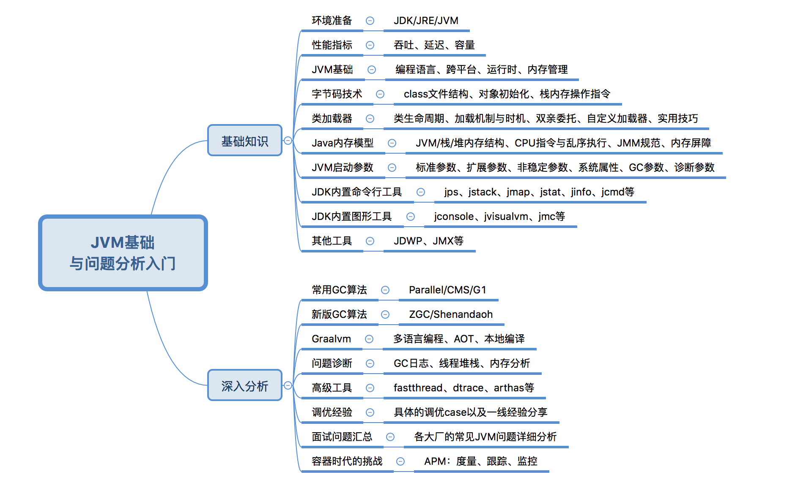
基础知识篇
- 环境准备：千里之行，始于足下
- 常用性能指标：没有量化，就没有改进
- JVM 基础知识：不积跬步，无以至千里
- Java 字节码技术：不积细流，无以成江河
- JVM 类加载器：山不辞土，故能成其高
- JVM 内存模型：海不辞水，故能成其深
- JVM 启动参数详解：博观而约取、厚积而薄发
- JDK 内置命令行工具介绍：工欲善其事，必先利其器
- JDK 内置图形界面工具介绍：海阔凭鱼跃，天高任鸟飞
- JDWP 简介：十步杀一人，千里不留行
- JMX 与相关工具：山高月小，水落石出
深入分析篇
- 常见的 GC 算法介绍（Parallel/CMS/G1）：温故而知新
- Java11 ZGC 和 Java12 Shenandoah 介绍：苟日新、日日新、又日新
- Oracle Graalvm 介绍：会当凌绝顶、一览众山小
- GC 日志解读与分析：千淘万漉虽辛苦，吹尽狂沙始到金
- JVM 的线程堆栈等数据分析：操千曲而后晓声、观千剑而后识器
- 内存 dump 和内存分析工具：万里赴戎机、关山度若飞
- fastthread 相关的工具介绍：欲穷千里目，更上一层楼
- 面临复杂问题时的几个高级工具：它山之石，可以攻玉
- JVM 问题排查分析调优经验：纸上得来终觉浅，绝知此事要躬行
- JVM 相关的常见面试问题汇总：运筹策帷帐之中，决胜于千里之外
- 应对容器时代面临的挑战：长风破浪会有时、直挂云帆济沧海
送给大家的话
俗话说，“活到老、学到老”。IT 行业的技术发展和创新速度太快，新的知识很快成为老知识，新的技巧很快成为旧把式，只有终身学习才能适应技术本身的发展。同时现在随着网络的发展，特别是各类新的内容平台和媒体的涌现，信息不是太少了，而是太多了。
信息爆炸带来了甄别有用信息的过程成本增加，这时候选择好的学习途径、学习内容就跟学习方法一样重要，为大家系统化的总结经验和传播知识也同样变得很重要。
让我们一起在 GitChat 平台不断学习，跟志同道合的同学们一起努力，共同进步。
02 环境准备：千里之行，始于足下
Java 语言编写代码非常简单，也很容易入门，非常适合开发各种企业级应用和业务系统。一个众所周知的事实是： 用起来越简单的系统， 其背后的原理和实现就越复杂。道理很容易理解， 系统的内部实现考虑了各种极端的情况，对用户屏蔽了各种复杂性。作为支撑庞大的 Java 生态系统的基石， JVM 内部实现是非常复杂的。据统计，OpenJDK 的实现代码已经超过 1000 万行。
JVM 难不难? 自然是 “难者不会，会者不难”。万丈高楼平地起， 没有掌握一定的基础知识， 学过的各种原理，了解相关技巧，也就会出现转眼即忘，书到用时方恨少的情况。
掌握好基础知识，学而时习之，经常使用各种工具并熟练运用，自然就能深入掌握一门技能。理论结合实践，掌握 JVM 相关知识，熟练各种工具的使用，是 Java 工程师职业进阶中不可或缺的。学就要学会理论，掌握实现原理。 理解了 Java 标准平台的 JVM，举一反三，稍微变通一下，碰到 Android 的 ART， Go 的虚拟机，以及各种语言的垃圾收集实现，都会很容易理解。
1.1 JDK、JRE、JVM 的关系
JDK
JDK（Java Development Kit） 是用于开发 Java 应用程序的软件开发工具集合，包括了 Java 运行时的环境（JRE）、解释器（Java）、编译器（javac）、Java 归档（jar）、文档生成器（Javadoc）等工具。简单的说我们要开发 Java 程序，就需要安装某个版本的 JDK 工具包。
JRE
JRE（Java Runtime Enviroment ）提供 Java 应用程序执行时所需的环境，由 Java 虚拟机（JVM）、核心类、支持文件等组成。简单的说，我们要是想在某个机器上运行 Java 程序，可以安装 JDK，也可以只安装 JRE，后者体积比较小。
JVM
Java Virtual Machine（Java 虚拟机）有三层含义，分别是：
- JVM规范要求；
- 满足 JVM 规范要求的一种具体实现（一种计算机程序）；
- 一个 JVM 运行实例，在命令提示符下编写 Java 命令以运行 Java 类时，都会创建一个 JVM 实例，我们下面如果只记到 JVM 则指的是这个含义；如果我们带上了某种 JVM 的名称，比如说是 Zing JVM，则表示上面第二种含义。
JDK 与 JRE、JVM 之间的关系
就范围来说，JDK > JRE > JVM：
- JDK = JRE + 开发工具
- JRE = JVM + 类库

三者在开发运行 Java 程序时的交互关系：
简单的说，就是通过 JDK 开发的程序，编译以后，可以打包分发给其他装有 JRE 的机器上去运行。而运行的程序，则是通过 Java 命令启动的一个 JVM 实例，代码逻辑的执行都运行在这个 JVM 实例上。
Java 程序的开发运行过程为：
我们利用 JDK （调用 Java API）开发 Java 程序，编译成字节码或者打包程序。然后可以用 JRE 则启动一个 JVM 实例，加载、验证、执行 Java 字节码以及依赖库，运行 Java 程序。而 JVM 将程序和依赖库的 Java 字节码解析并变成本地代码执行，产生结果。
1.2 JDK 的发展过程与版本变迁
说了这么多 JDK 相关的概念，我们再来看一下 JDK 的发展过程。 JDK 版本列表
| JDK版本 | 发布时间 | 代号 | 备注 |
|---|---|---|---|
| 1 | 1996年1月23日 | Oak(橡树) | 初代版本，伟大的一个里程碑，但是是纯解释运行，使用JIT，性能比较差，速度慢 |
| 1.1 | 1997年2月19日 | Sparkler(宝石) | JDBC、支持内部类、RMI、反射等等 |
| 1.2 | 1998年12月8日 | Playground(操场) | 集合框架、JIT等等 |
| 1.3 | 2000年5月8日 | Kestrel(红隼) | 对Java的各个方面都做了大量优化和增强 |
| 1.4 | 2004年2月6日 | Merlin(隼) | XML处理、支持IPV6、正则表达式，引入nio和CMS垃圾回收器 |
| 5 | 2004年9月30日 | Tiger(老虎) | 泛型、增强for语句、自动拆装箱、可变参数、静态导入、注解 |
| 6 | 2006年12月11日 | Mustang(野马) | 支持脚本语言、JDBC4.0 |
| 7 | 2011年7月28日 | Dolphin(海豚) | switch支持String类型、泛型推断、nio 2.0开发包、数值类型可以用二进制字符串表示 |
| 8 | 2014年3月18日 | Spider(蜘蛛) | Lambda 表达式、接口默认方法、Stream API、新的日期API、Nashorn引擎 jjs，引入G1垃圾回收器 |
| 9 | 2017年9月22日 | Modularity (模块化) | 模块系统、HTTP 2 客户端、多版本兼容 JAR 包、私有接口方法、改进Stream API、响应式流（Reactive Streams) API |
| 10 | 2018年3月21日 | 引入关键字 var 局部变量类型推断、统一的垃圾回收接口 | |
| 11 | 2018年9月25日 | HTTP客户端(标准)、无操作垃圾收集器，支持ZGC垃圾回收器，首个LTS版本 | |
| 12 | 2019年3月19日 | 新增一个名为 Shenandoah 的垃圾回收器、扩展switch语句的功能、改进 G1 垃圾回收器 | |
| 13 | 2019年9月17日 | 改进了CDS内存共享，ZGC归还系统内存，SocketAPI和switch语句以及文本块表示 | |
| 14 | 开发中 | 继续对ZGC、G1改进，标记 ParallelScavenge + SerialOld组合为过时的 ，移除CMS垃圾回收器 |
Java 大事记
- 1995 年 5 月 23 日，Java 语言诞生
- 1996 年 1 月，第一个 JDK-JDK1.0 诞生
- 1997 年 2 月 18 日，JDK1.1 发布
- 1997 年 4 月 2 日，JavaOne 会议召开，参与者逾一万人，创当时全球同类会议规模之纪录
- 1997 年 9 月，Java 开发者社区成员超过十万
- 1998 年 2 月，JDK1.1 被下载超过 200 万次
- 1998 年 12 月 8 日，JAVA2 企业平台 J2EE 发布
- 1999 年 6 月，Sun 公司发布 Java 的三个版本：标准版、企业版和微型版（J2SE、J2EE、J2ME）
- 2000 年 5 月 8 日，JDK1.3 发布
- 2000 年 5 月 29 日，JDK1.4 发布
- 2002 年 2 月 26 日，J2SE1.4 发布，自此 Java 的计算能力有了大幅提升
- 2004 年 9 月 30 日，J2SE1.5 发布，是 Java 语言的发展史上的又一里程碑事件，Java 并发包 JUC 也是这个版本引入的。为了表示这个版本的重要性，J2SE1.5 更名为 J2SE5.0
- 2005 年 6 月，发布 Java SE 6，这也是一个比较长期使用的版本
- 2006 年 11 月 13 日，Sun 公司宣布 Java 全线采纳 GNU General Public License Version 2，从而公开了 Java 的源代码
- 2009 年 04 月 20 日，Oracle 公司 74 亿美元收购 Sun。取得 Java 的版权
- 2011 年 7 月 28 日，Oracle 公司发布 Java SE7.0 的正式版
- 2014 年 3 月 18 日，Oracle 公司发布 Java SE 8，这个版本是目前最广泛使用的版本
- 2017 年 9 月 22 日，JDK9 发布，API 有了较大的调整，添加了对 WebSocket 和 HTTP/2 的支持，此后每半年发布一个大版本
- 2018 年 3 月 21 日，JDK10 发布，最大的变化就是引入了 var，如果你熟悉 C# 或 JavaScript/NodeJS 就会知道它的作用
- 2018 年 9 月 25 日，JDK11 发布，引入 ZGC，这个也是第一个公布的长期维护版本 LTS
- 2019 年 3 月 19 日，JDK12 发布，引入毫秒级停顿的 Shenandoah GC
- 2019 年 9 月 17 日，JDK13 发布，改进了 CDS 内存共享，ZGC 归还系统内
我们可以看到 JDK 发展的越来越多，越来越复杂，特别是被 Oracle 收购以后，近 2 年以来版本号快速膨胀，GC 算法也有了更快速的发展。目前最新的 JDK 是 JDK13，同时 JDK14 正在开发中，预计 2020 年 3 月份发布。很多朋友直呼，“不要再升级了，还在用 JDK8，已经学不过来了”。但是正是由于 Java 不断的发展和改进，才会持续具有生命力。
常规的 JDK，一般指 OpenJDK 或者 Oracle JDK，当然 Oracle 还有一个新的 JVM 叫 GraalVM，也非常有意思。除了 Sun/Oracle 的 JDK 以外，原 BEA 公司（已被 Oracle 收购）的 JRockit，IBM 公司的 J9，Azul 公司的 Zing JVM，阿里巴巴公司的分支版本 DragonWell 等等。
1.3 安装 JDK
JDK 通常是从 Oracle 官网下载， 打开页面翻到底部，找 Java for Developers 或者 Developers, 进入 Java 相应的页面 或者 Java SE 相应的页面, 查找 Download, 接受许可协议，下载对应的 x64 版本即可。 
建议安装比较新的 JDK8 版本， 如 JDK8u231。 
注意：从 Oracle 官方安装 JDK 需要注册和登录 Oracle 账号。现在流行将下载链接放到页面底部，很多工具都这样。当前推荐下载 JDK8。 今后 JDK11 可能成为主流版本，因为 Java11 是 LTS 长期支持版本，但可能还需要一些时间才会普及，而且 JDK11 的文件目录结构与之前不同, 很多工具可能不兼容其 JDK 文件的目录结构。
有的操作系统提供了自动安装工具，直接使用也可以，比如 yum, brew, apt 等等。例如在 MacBook 上，执行：
brew cask install java8
而使用如下命令，会默认安装最新的 JDK13：
brew cask install java
如果电脑上有 360 软件管家或者腾讯软件管家，也可以直接搜索和下载安装 JDK（版本不是最新的，但不用注册登录 Oracle 账号）： 
如果网络不好，可以从我的百度网盘共享获取：
https://pan.baidu.com/s/16WmRDZSiBD7a2PMjhSiGJw
提取码: e77s
1.4 设置环境变量
如果找不到命令，需要设置环境变量： JAVA_HOME 和 PATH 。
JAVA_HOME环境变量表示 JDK 的安装目录，通过修改JAVA_HOME，可以快速切换 JDK 版本 。很多工具依赖此环境变量。另外, 建议不要设置
CLASS_PATH环境变量，新手没必要设置，容易造成一些困扰。
Windows 系统, 系统属性 - 高级 - 设置系统环境变量。 如果没权限也可以只设置用户环境变量。
Linux 和 MacOSX 系统, 需要配置脚本。 例如:
$
cat ~/.bash_profile
# JAVA ENV
export JAVA_HOME=/Library/Java/JavaVirtualMachines/jdk1.8.0_162.jdk/Contents/Home
export PATH=$PATH:$JAVA_HOME/bin
让环境配置立即生效:
$
source ~/.bash_profile
查看环境变量:
echo $PATH
echo $JAVA_HOME
一般来说，.bash_profile 之类的脚本只用于设置环境变量。 不设置随机器自启动的程序。
如果不知道自动安装/别人安装的 JDK 在哪个目录怎么办?
最简单/最麻烦的查询方式是询问相关人员。
查找的方式很多，比如，可以使用 which， whereis， ls -l 跟踪软连接, 或者 find 命令全局查找(可能需要 sudo 权限), 例如:
jps -v
whereis javac
ls -l /usr/bin/javac
find / -name javac
找到满足 $JAVA_HOME/bin/javac 的路径即可。
Windows 系统，安装在哪就是哪，默认在C:\Program Files (x86)\Java下。通过任务管理器也可以查看某个程序的路径，注意 JAVA_HOME 不可能是 C:\Windows\System32 目录。
然后我们就可以在 JDK 安装路径下看到很多 JVM 工具，例如在 Mac 上：
 在后面的章节里，我们会详细解决其中一些工具的用法，以及怎么用它们来分析 JVM 情况。
在后面的章节里，我们会详细解决其中一些工具的用法，以及怎么用它们来分析 JVM 情况。
1.4 验证 JDK 安装完成
安装完成后，Java 环境一般来说就可以使用了。 验证的脚本命令为:
$ java -version
可以看到输出类似于以下内容，既证明成功完成安装：
java version "1.8.065" Java(TM) SE Runtime Environment (build 1.8.065-b17) Java HotSpot(TM) 64-Bit Server VM (build 25.65-b01, mixed mode)
然后我们就可以写个最简单的 Java 程序了，新建一个文本文件，输入以下内容：
public class Hello {
public static void main(String[] args){
System.out.println("Hello, JVM!");
}
}
然后把文件名改成Hello.java，在命令行下执行：
$ javac Hello.java
然后使用如下命令运行它：
$ java Hello Hello, JVM!
即证明运行成功，我们的 JDK 环境可以用来开发了。
参考材料
- https://www.jianshu.com/p/7b99bd132470
- https://blog.csdn.net/Phoenix_smf/article/details/79709592
- https://www.iteye.com/blog/dasheng-727156
- https://blog.csdn.net/lc11535/article/details/99776597
- https://blog.csdn.net/damin112/article/details/84634041
- https://blog.csdn.net/KamRoseLee/article/details/79440425
- https://blog.csdn.net/j3T9Z7H/article/details/94592958
- http://openjdk.java.net/projects/jdk/
- http://openjdk.java.net/projects/jdk/13/
03 常用性能指标：没有量化，就没有改进
前面一节课阐述了 JDK 的发展过程，以及怎么安装一个 JDK，在正式开始进行 JVM 的内容之前，我们先了解一下性能相关的一些基本概念和原则。

如果要问目前最火热的 JVM 知识是什么? 很多同学的答案可能是 “JVM 调优” 或者 “JVM 性能优化”。但是具体需要从哪儿入手，怎么去做呢？
其实“调优”是一个诊断和处理手段，我们最终的目标是让系统的处理能力，也就是“性能”达到最优化，这个过程我们就像是一个医生，诊断和治疗“应用系统”这位病人。我们以作为医生给系统看病作为对比，“性能优化”就是实现“把身体的大小毛病治好，身体达到最佳健康状态”的目标。
那么去医院看病，医生会是怎么一个处理流程呢？先简单的询问和了解基本情况，发烧了没有，咳嗽几天了，最近吃了什么，有没有拉肚子一类的，然后给患者开了一系列的检查化验单子：去查个血、拍个胸透、验个尿之类的。然后就会有医生使用各项仪器工具，依次把去做这些项目的检查，检查的结果就是很多标准化的具体指标（这里就是我们对 JVM 进行信息收集，变成各项指标）。
然后拿过来给医生诊断用，医生根据这些指标数据判断哪些是异常的，哪些是正常的，这些异常指标说明了什么问题（对系统问题进行分析排查），比如是白细胞增多（系统延迟和抖动增加，偶尔宕机），说明可能有炎症（比如 JVM 配置不合理）。最后要“对症下药”，开出一些阿莫西林或者头孢（对 JVM 配置进行调整），叮嘱怎么频率，什么时间点服药，如果问题比较严重，是不是要住院做手术（系统重构和调整），同时告知一些注意事项（对日常运维的要求和建议），最后经过一段时间治疗，逐渐好转，最终痊愈（系统延迟降低，不在抖动，不再宕机）。通过了解 JVM 去让我们具有分析和诊断能力，是本课程的核心主题。
2.1 量化性能相关指标

"没有量化就没有改进"，所以我们需要先了解和度量性能指标，就像在医院检查以后得到的检验报告单一样。因为人的主观感觉是不靠谱的，个人经验本身也是无法复制的，而定义了量化的指标，就意味着我们有了一个客观度量体系。哪怕我们最开始定义的指标不是特别精确，我们也可以在使用过程中，随着真实的场景去验证指标有效性，进而替换或者调整指标，逐渐的完善这个量化的指标体系，成为一个可以复制和复用的有效工具。就像是上图的血常规检查报告单，一旦成为这种标准化的指标，那么使用它得到的结果，也就是这个报告单，给任何一个医生看，都是有效的，一般也能得到一致的判断结果。
那么系统性能的诊断要做些什么指标呢？我们先来考虑，进行要做诊断，那么程序或 JVM 可能出现了问题，而我们排查程序运行中出现的问题，比如排查程序 BUG 的时候，要优先保证正确性，这时候就不仅仅是 JVM 本身的问题，例如死锁等等，程序跑在 JVM 里，现象出现在 JVM 上，很多时候还要深入分析业务代码和逻辑确定 Java 程序哪里有问题。
- 分析系统性能问题： 比如是不是达到了我们预期性能指标，判断资源层面有没有问题，JVM 层面有没有问题，系统的关键处理流程有没有问题，业务流程是否需要优化；
- 通过工具收集系统的状态，日志，包括打点做内部的指标收集，监控并得出关键性能指标数据，也包括进行压测，得到一些相关的压测数据和性能内部分析数据；
- 根据分析结果和性能指标，进行资源配置调整，并持续进行监控和分析，以优化性能，直到满足系统要求，达到系统的最佳性能状态。
计算机系统中，性能相关的资源主要分为这几类:
- CPU：CPU 是系统最关键的计算资源，在单位时间内有限，也是比较容易由于业务逻辑处理不合理而出现瓶颈的地方，浪费了 CPU 资源和过渡消耗 CPU 资源都不是理想状态，我们需要监控相关指标；
- 内存：内存则对应程序运行时直接可使用的数据快速暂存空间，也是有限的，使用过程随着时间的不断的申请内存又释放内存，好在 JVM 的 GC 帮我们处理了这些事情，但是如果 GC 配置的不合理，一样会在一定的时间后，产生包括 OOM 宕机之类的各种问题，所以内存指标也需要关注；
- IO（存储+网络）：CPU 在内存中把业务逻辑计算以后，为了长期保存，就必须通过磁盘存储介质持久化，如果多机环境、分布式部署、对外提供网络服务能力，那么很多功能还需要直接使用网络，这两块的 IO 都会比 CPU 和内存速度更慢，所以也是我们关注的重点。
其他各种更细节的指标，将会在工具和命令的使用章节详细介绍。
2.2 性能优化中常见的套路
性能优化一般要存在瓶颈问题，而瓶颈问题都遵循 80/20 原则。既我们把所有的整个处理过程中比较慢的因素都列一个清单，并按照对性能的影响排序，那么前 20% 的瓶颈问题，至少会对性能的影响占到 80% 比重。换句话说，我们优先解决了最重要的几个问题，那么性能就能好一大半。
我们一般先排查基础资源是否成为瓶颈。看资源够不够，只要成本允许，加配置可能是最快速的解决方案，还可能是最划算，最有效的解决方案。 与 JVM 有关的系统资源，主要是 CPU 和 内存 这两部分。 如果发生资源告警/不足, 就需要评估系统容量，分析原因。
至于 GPU 、主板、芯片组之类的资源则不太好衡量，通用计算系统很少涉及。
一般衡量系统性能的维度有 3 个:
- 延迟(Latency)： 一般衡量的是响应时间(Response Time)，比如平均响应时间。但是有时候响应时间抖动的特别厉害，也就是说有部分用户的响应时间特别高，这时我们一般假设我们要保障 95% 的用户在可接受的范围内响应，从而提供绝大多数用户具有良好的用户体验，这就是延迟的95线（P95，平均 100 个用户请求中 95 个已经响应的时间），同理还有99线，最大响应时间等（95 线和 99 线比较常用；用户访问量大的时候，对网络有任何抖动都可能会导致最大响应时间变得非常大，最大响应时间这个指标不可控，一般不用）。
- 吞吐量(Throughput)： 一般对于交易类的系统我们使用每秒处理的事务数(TPS)来衡量吞吐能力，对于查询搜索类的系统我们也可以使用每秒处理的请求数（QPS）。
- 系统容量(Capacity)： 也叫做设计容量，可以理解为硬件配置，成本约束。
这 3 个维度互相关联，相互制约。只要系统架构允许，增加硬件配置一般都能提升性能指标。但随着摩尔定律的失效，增加硬件配置到一定的程度并不能提供性能的线性扩展，比如说已经比较高配置的机器，CPU 核数或频率、内存扩大一倍，一方面并不能带来一倍的性能提升，另一方面带来的成本不止一倍，性价比急速下降，而且到了一定程度想加都加不上去了。作为云厂商的领头羊 AWS 今年才开始尝试提供 256 核的机器，而阿里云目前最高支持 104 核。所以目前来说，整体上使用分布式的解决办法，以及局部上对每个系统进行分析调优，是性价比最高的选择。
性能指标还可分为两类:
- 业务需求指标：如吞吐量(QPS、TPS)、响应时间(RT)、并发数、业务成功率等。
- 资源约束指标：如 CPU、内存、I/O 等资源的消耗情况。

详情可参考: 性能测试中服务器关键性能指标浅析
每类系统关注的重点还不一样。 批处理/流处理 系统更关注吞吐量, 延迟可以适当放宽。一般来说大部分系统的硬件资源不会太差，但也不是无限的。高可用 Web 系统，既关注高并发情况下的系统响应时间，也关注吞吐量。
例如： "配置 2 核 4GB 的节点，每秒响应 200 个请求，95% 线是 20ms，最大响应时间 40ms。" 从中可以解读出基本的性能信息: 响应时间(RT<40ms), 吞吐量(200TPS), 系统配置信息(2C4G)。 隐含的条件可能是 "并发请求数不超过 200 "。
我们可采用的手段和方式包括：
- 使用 JDWP 或开发工具做本地/远程调试
- 系统和 JVM 的状态监控，收集分析指标
- 性能分析: CPU 使用情况/内存分配分析
- 内存分析: Dump 分析/GC 日志分析
- 调整 JVM 启动参数，GC 策略等等
2.3 性能调优总结

性能调优的第一步是制定指标，收集数据，第二步是找瓶颈，然后分析解决瓶颈问题。通过这些手段，找当前的性能极限值。压测调优到不能再优化了的 TPS 和 QPS，就是极限值。知道了极限值，我们就可以按业务发展测算流量和系统压力，以此做容量规划，准备机器资源和预期的扩容计划。最后在系统的日常运行过程中，持续观察，逐步重做和调整以上步骤，长期改善改进系统性能。
我们经常说“脱离场景谈性能都是耍流氓”，实际的性能分析调优过程中，我们需要根据具体的业务场景，综合考虑成本和性能，使用最合适的办法去处理。系统的性能优化到 3000TPS 如果已经可以在成本可以承受的范围内满足业务发展的需求，那么再花几个人月优化到 3100TPS 就没有什么意义，同样地如果花一倍成本去优化到 5000TPS 也没有意义。
Donald Knuth 曾说过“过早的优化是万恶之源”，我们需要考虑在恰当的时机去优化系统。在业务发展的早期，量不大，性能没那么重要。我们做一个新系统，先考虑整体设计是不是 OK，功能实现是不是 OK，然后基本的功能都做得差不多的时候（当然整体的框架是不是满足性能基准，可能需要在做项目的准备阶段就通过 POC（概念证明）阶段验证。），最后再考虑性能的优化工作。因为如果一开始就考虑优化，就可能要想太多导致过度设计了。而且主体框架和功能完成之前，可能会有比较大的改动，一旦提前做了优化，可能这些改动导致原来的优化都失效了，又要重新优化，多做了很多无用功。
04 JVM 基础知识：不积跬步，无以至千里
前面的章节我们介绍了 JDK 和 JVM 的关系以及环境准备等，本节我们来探讨一下 JVM 的基础知识，包括以下内容：
- 常见的编程语言类型
- 关于跨平台、运行时（Runtime）与虚拟机（VM）
- 关于内存管理和垃圾回收（GC）
3.1 常见的编程语言类型
我们都知道 Java 是一种基于虚拟机的静态类型编译语言。那么常见的语言可以怎么分类呢？
1）编程语言分类
首先，我们可以把形形色色的编程从底向上划分为最基本的三大类：机器语言、汇编语言、高级语言。
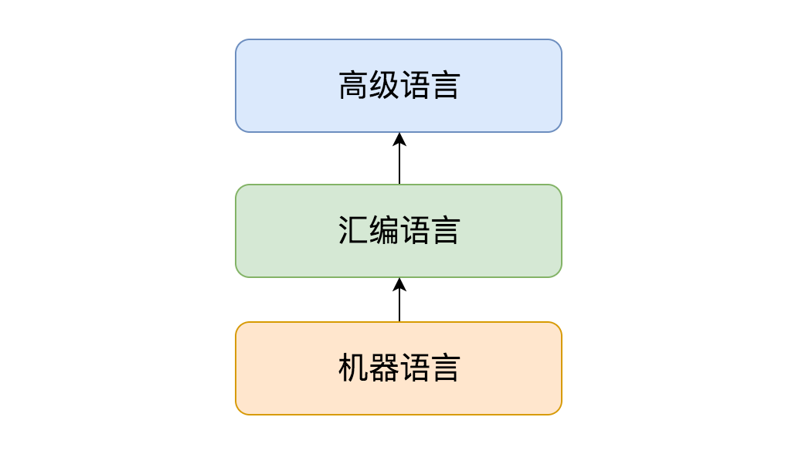
按《计算机编程语言的发展与应用》一文里的定义：计算机编程语言能够实现人与机器之间的交流和沟通，而计算机编程语言主要包括汇编语言、机器语言以及高级语言，具体内容如下：
- 机器语言：这种语言主要是利用二进制编码进行指令的发送，能够被计算机快速地识别，其灵活性相对较高，且执行速度较为可观，机器语言与汇编语言之间的相似性较高，但由于具有局限性，所以在使用上存在一定的约束性。
- 汇编语言：该语言主要是以缩写英文作为标符进行编写的，运用汇编语言进行编写的一般都是较为简练的小程序，其在执行方面较为便利，但汇编语言在程序方面较为冗长，所以具有较高的出错率。
- 高级语言：所谓的高级语言，其实是由多种编程语言结合之后的总称，其可以对多条指令进行整合，将其变为单条指令完成输送，其在操作细节指令以及中间过程等方面都得到了适当的简化，所以，整个程序更为简便，具有较强的操作性，而这种编码方式的简化，使得计算机编程对于相关工作人员的专业水平要求不断放宽。
简言之：机器语言是直接给机器执行的二进制指令，每种 CPU 平台都有对应的机器语言。
而汇编语言则相当于是给机器执行的指令，按照人可以理解的助记符表示，这样代码就非常长，但是性能也很好。
高级语言则是为了方便人来理解，进而快速设计和实现程序代码，一般跟机器语言和汇编语言的指令已经完全没有关系了，代码编写完成后通过编译或解释，转换成汇编码或机器码，之后再传递给计算机去执行。
所以机器语言和汇编语言都是跟目标机器的 CPU 架构有直接联系，而高级语言一般就没有关系了，高级语言高级就高级在，一份代码往往是可以跨不同的目标机器的 CPU 架构的，不管是 x86 还是其他 CPU，尽管不同 CPU 支持的指令集略有不同，但是都在编译或解释过程之后，变成实际平台的目标代码，进而代码的开发者很大程度上不需要关心目标平台的差异性。这一点非常重要，因为现代计算机软件系统的开发，往往开发者、测试者、部署运维者，并不是一拨人，特别是随着公有云的快速发展，我们甚至都不清楚自己的软件系统在容器下到底是什么物理架构。
2）高级语言分类
如果按照有没有虚拟机来划分，高级编程语言可分为两类：
- 有虚拟机：Java，Lua，Ruby，部分 JavaScript 的实现等等
- 无虚拟机：C，C++，C#，Golang，以及大部分常见的编程语言
很奇怪的一件事儿，C#、Golang 有 GC（垃圾回收），也有运行时（Runtime），但是没有虚拟机（VM），为什么会这样设计呢? 下文会详细讨论这个事情。
如果按照变量是不是有确定的类型，还是类型可以随意变化来划分，高级编程语言可以分为：
- 静态类型：Java，C，C++ 等等
- 动态类型：所有脚本类型的语言
如果按照是编译执行，还是解释执行，可以分为：
- 编译执行：C，C++，Golang，Rust，C#，Java，Scala，Clojure，Kotlin，Swift 等等
- 解释执行：JavaScript 的部分实现和 NodeJS，Python，Perl，Ruby 等等
这里面，C# 和 Java 都是编译后生成了一种中间类型的目标代码（类似汇编），但不是汇编或机器码，在C#中称为 微软中间语言（MSIL），在 Java 里叫做 Java 字节码（Java bytecode）。
虽然一般把 JavaScript 当做解释执行语言，但如今不少实现引擎都支持编译，比如 Google V8 和 Oracle Nashorn。
此外，我们还可以按照语言特点分类：
- 面向过程：C，Basic，Pascal，Fortran 等等；
- 面向对象：C++，Java，Ruby，Smalltalk 等等；
- 函数式编程：LISP、Haskell、Erlang、OCaml、Clojure、F# 等等。
有的甚至可以划分为纯面向对象语言，例如 Ruby，所有的东西都是对象（Java 不是所有东西都是对象，比如基本类型 int、long 等等，就不是对象，但是它们的包装类 Integer、Long 则是对象）。 还有既可以当做编译语言又可以当做脚本语言的，例如 Groovy 等语言。
3.2 关于跨平台
现在我们聊聊跨平台，为什么要跨平台，因为我们希望所编写的代码和程序，在源代码级别或者编译后，可以运行在多种不同的系统平台上，而不需要为了各个平台的不同点而去实现两套代码。典型地，我们编写一个 web 程序，自然希望可以把它部署到 Windows 平台上，也可以部署到 Linux 平台上，甚至是 MacOS 系统上。
这就是跨平台的能力，极大地节省了开发和维护成本，赢得了商业市场上的一致好评。
这样来看，一般来说解释型语言都是跨平台的，同一份脚本代码，可以由不同平台上的解释器解释执行。但是对于编译型语言，存在两种级别的跨平台： 源码跨平台和二进制跨平台。
1、典型的源码跨平台（C++）：
2、典型的二进制跨平台（Java 字节码）： 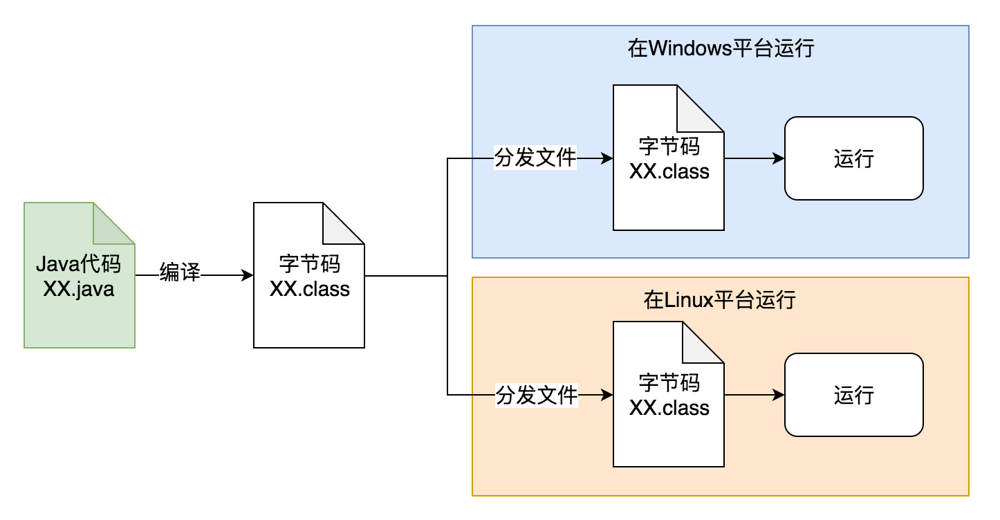
可以看到，C++ 里我们需要把一份源码，在不同平台上分别编译，生成这个平台相关的二进制可执行文件，然后才能在相应的平台上运行。 这样就需要在各个平台都有开发工具和编译器，而且在各个平台所依赖的开发库都需要是一致或兼容的。 这一点在过去的年代里非常痛苦，被戏称为 “依赖地狱”。
C++ 的口号是“一次编写，到处（不同平台）编译”，但实际情况上是一编译就报错，变成了 “一次编写，到处调试，到处找依赖、改配置”。 大家可以想象，你编译一份代码，发现缺了几十个依赖，到处找还找不到，或者找到了又跟本地已有的版本不兼容，这是一件怎样令人绝望的事情。
而 Java 语言通过虚拟机技术率先解决了这个难题。 源码只需要编译一次，然后把编译后的 class 文件或 jar 包，部署到不同平台，就可以直接通过安装在这些系统中的 JVM 上面执行。 同时可以把依赖库（jar 文件）一起复制到目标机器，慢慢地又有了可以在各个平台都直接使用的 Maven 中央库（类似于 linux 里的 yum 或 apt-get 源，macos 里的 homebrew，现代的各种编程语言一般都有了这种包依赖管理机制：python 的 pip，dotnet 的 nuget，NodeJS 的 npm，golang 的 dep，rust 的 cargo 等等）。这样就实现了让同一个应用程序在不同的平台上直接运行的能力。
总结一下跨平台：
- 脚本语言直接使用不同平台的解释器执行，称之为脚本跨平台，平台间的差异由不同平台上的解释器去解决。这样的话代码很通用，但是需要解释和翻译，效率较低。
- 编译型语言的代码跨平台，同一份代码，需要被不同平台的编译器编译成相应的二进制文件，然后再去分发和执行，不同平台间的差异由编译器去解决。编译产生的文件是直接针对平台的可执行指令，运行效率很高。但是在不同平台上编译复杂软件，依赖配置可能会产生很多环境方面问题，导致开发和维护的成本较高。
- 编译型语言的二进制跨平台，同一份代码，先编译成一份通用的二进制文件，然后分发到不同平台，由虚拟机运行时来加载和执行，这样就会综合另外两种跨平台语言的优势，方便快捷地运行于各种平台，虽然运行效率可能比起本地编译类型语言要稍低一点。 而这些优缺点也是 Java 虚拟机的优缺点。
现代商业应用最宝贵的是时间和人力, 对大部分系统来说，机器相对来说就不是那么值钱了。
3.3 关于运行时（Runtime）与虚拟机（VM）
我们前面提到了很多次 Java 运行时和JVM 虚拟机，简单的说 JRE 就是 Java 的运行时，包括虚拟机和相关的库等资源。
可以说运行时提供了程序运行的基本环境，JVM 在启动时需要加载所有运行时的核心库等资源，然后再加载我们的应用程序字节码，才能让应用程序字节码运行在 JVM 这个容器里。
但也有一些语言是没有虚拟机的，编译打包时就把依赖的核心库和其他特性支持，一起静态打包或动态链接到程序中，比如 Golang 和 Rust，C# 等。
这样运行时就和程序指令组合在一起，成为了一个完整的应用程序，好处就是不需要虚拟机环境，坏处是编译后的二进制文件没法直接跨平台了。
3.4 关于内存管理和垃圾回收（GC）
自从编程语言诞生以来，内存管理一直都是个非常重要的话题。因为内存资源总是有限而又宝贵的，只占用不释放，很快就会用完了。程序得不到可用内存就会崩溃（想想 C++ 里动不动就出现的野指针）。
内存管理就是内存的生命周期管理，包括内存的申请、压缩、回收等操作。 Java 的内存管理就是 GC，JVM 的 GC 模块不仅管理内存的回收，也负责内存的分配和压缩整理。
我们从前面的内容可以知道，Java 程序的指令都运行在 JVM 上，而且我们的程序代码并不需要去分配内存和释放内存（例如 C/C++ 里需要使用的 malloc/free），那么这些操作自然是由JVM帮我们搞定的。
JVM 在我们创建 Java 对象的时候去分配新内存，并使用 GC 算法，根据对象的存活时间，在对象不使用之后，自动执行对象的内存回收操作。
对于 Golang 和 Rust 这些语言来说，其实也是存在垃圾回收的，但是它们没有虚拟机，又是怎么实现的呢？
诀窍就在于运行时（Runtime），编译打包的时候，可以把内存使用分析的模块一起打包到应用程序中，在运行期间有专门的线程来分析内存使用情况，进而决定什么时候执行 GC，把不再使用的内存回收掉。 这样就算是没有虚拟机，也可以实现 GC。
而 Rust 语言则更进一步，直接在语言规范层面限制了所有变量的生命周期，如果超出了一个明确的范围，就会不可用，这样在编译期就能直接知道每个对象在什么时候应该分配内存，什么时候应该销毁并回收内存，做到了很精确并且很安全的内存管理。
- C/C++ 完全相信而且惯着程序员，让大家自行管理内存，所以可以编写很自由的代码，但一个不小心就会造成内存泄漏等问题导致程序崩溃。
- Java/Golang 完全不相信程序员，但也惯着程序员。所有的内存生命周期都由 JVM 运行时统一管理。 在绝大部分场景下，你可以非常自由的写代码，而且不用关心内存到底是什么情况。 内存使用有问题的时候，我们可以通过 JVM 来信息相关的分析诊断和调整。 这也是本课程的目标。
- Rust 语言选择既不相信程序员，也不惯着程序员。 让你在写代码的时候，必须清楚明白的用 Rust 的规则管理好你的变量，好让机器能明白高效地分析和管理内存。 但是这样会导致代码不利于人的理解，写代码很不自由，学习成本也很高。
最后拿知乎上一个朋友左之了对这几种语言的评价来结尾：
首先，Rust 是有点反人类，否则不会一直都不火。然后，Rust 之所以反人类，是因为人类这玩意既愚蠢，又自大，破事还贼多。 你看 C++ 就很相信人类，它要求人类自己把自己 new 出来的东西给 delete 掉。 C++：“这点小事我相信你可以的！” 人类：“没问题！包在我身上！” 然后呢，内存泄漏、double free、野指针满世界飘…… C++：“……”
Java 选择不相信人类，但替人类把事办好。 Java：“别动，让我来，我有gc！” 人类：“你怎么做事这么慢呀？你怎么还 stop the world 了呀？你是不是不爱我了呀？” Java：“……”
Rust 发现唯一的办法就是既不相信人类，也不惯着人类。 Rust：“按老子说的做，不做就不编译！” 人类：“你反人类！” Rust：“滚！”
参考材料
- 计算机编程语言的发展与应用：http://g.wanfangdata.com.cn/details/detail.do?_type=perio&id=dnbcjqywh201904012
- JavaScript引擎：https://hllvm-group.iteye.com/group/topic/37596
- GC 和虚拟机是两个一定要放在一起的概念吗？：https://www.zhihu.com/question/45910460/answer/100056649
- Rust 语言是否反人类?：https://www.zhihu.com/question/328066906/answer/708085473
05 Java 字节码技术：不积细流，无以成江河
Java 中的字节码，英文名为 bytecode, 是 Java 代码编译后的中间代码格式。JVM 需要读取并解析字节码才能执行相应的任务。
从技术人员的角度看，Java 字节码是 JVM 的指令集。JVM 加载字节码格式的 class 文件，校验之后通过 JIT 编译器转换为本地机器代码执行。 简单说字节码就是我们编写的 Java 应用程序大厦的每一块砖，如果没有字节码的支撑，大家编写的代码也就没有了用武之地，无法运行。也可以说，Java 字节码就是 JVM 执行的指令格式。
那么我们为什么需要掌握它呢？
不管用什么编程语言，对于卓越而有追求的程序员，都能深入去探索一些技术细节，在需要的时候，可以在代码被执行前解读和理解中间形式的代码。对于 Java 来说，中间代码格式就是 Java 字节码。 了解字节码及其工作原理，对于编写高性能代码至关重要，对于深入分析和排查问题也有一定作用，所以我们要想深入了解 JVM 来说，了解字节码也是夯实基础的一项基本功。同时对于我们开发人员来时，不了解平台的底层原理和实现细节，想要职业进阶绝对不是长久之计，毕竟我们都希望成为更好的程序员， 对吧？
任何有实际经验的开发者都知道，业务系统总不可能没有 BUG，了解字节码以及 Java 编译器会生成什么样的字节码，才能说具备扎实的 JVM 功底，会在排查问题和分析错误时非常有用，也能更好地解决问题。
而对于工具领域和程序分析来说, 字节码就是必不可少的基础知识了，通过修改字节码来调整程序的行为是司空见惯的事情。想了解分析器(Profiler)，Mock 框架，AOP 等工具和技术这一类工具，则必须完全了解 Java 字节码。
4.1 Java 字节码简介
有一件有趣的事情，就如名称所示, Java bytecode 由单字节(byte)的指令组成，理论上最多支持 256 个操作码(opcode)。实际上 Java 只使用了 200 左右的操作码， 还有一些操作码则保留给调试操作。
操作码， 下面称为 指令, 主要由类型前缀和操作名称两部分组成。
例如，'
i' 前缀代表 ‘integer’，所以，'iadd' 很容易理解, 表示对整数执行加法运算。
根据指令的性质，主要分为四个大类：
- 栈操作指令，包括与局部变量交互的指令
- 程序流程控制指令
- 对象操作指令，包括方法调用指令
- 算术运算以及类型转换指令
此外还有一些执行专门任务的指令，比如同步(synchronization)指令，以及抛出异常相关的指令等等。下文会对这些指令进行详细的讲解。
4.2 获取字节码清单
可以用 javap 工具来获取 class 文件中的指令清单。 javap 是标准 JDK 内置的一款工具, 专门用于反编译 class 文件。
让我们从头开始, 先创建一个简单的类，后面再慢慢扩充。
package demo.jvm0104;
public class HelloByteCode {
public static void main(String[] args) {
HelloByteCode obj = new HelloByteCode();
}
}
代码很简单, main 方法中 new 了一个对象而已。然后我们编译这个类:
javac demo/jvm0104/HelloByteCode.java
使用 javac 编译 ，或者在 IDEA 或者 Eclipse 等集成开发工具自动编译，基本上是等效的。只要能找到对应的 class 即可。
javac 不指定
-d参数编译后生成的.class文件默认和源代码在同一个目录。注意:
javac工具默认开启了优化功能, 生成的字节码中没有局部变量表(LocalVariableTable)，相当于局部变量名称被擦除。如果需要这些调试信息, 在编译时请加上-g选项。有兴趣的同学可以试试两种方式的区别，并对比结果。JDK 自带工具的详细用法, 请使用:
javac -help或者javap -help来查看; 其他类似。
然后使用 javap 工具来执行反编译, 获取字节码清单：
javap -c demo.jvm0104.HelloByteCode
# 或者:
javap -c demo/jvm0104/HelloByteCode
javap -c demo/jvm0104/HelloByteCode.class
javap 还是比较聪明的, 使用包名或者相对路径都可以反编译成功, 反编译后的结果如下所示：
Compiled from "HelloByteCode.java"
public class demo.jvm0104.HelloByteCode {
public demo.jvm0104.HelloByteCode();
Code:
0: aload_0
1: invokespecial #1 // Method java/lang/Object."<init>":()V
4: return
public static void main(java.lang.String[]);
Code:
0: new #2 // class demo/jvm0104/HelloByteCode
3: dup
4: invokespecial #3 // Method "<init>":()V
7: astore_1
8: return
}
OK，我们成功获取到了字节码清单, 下面进行简单的解读。
4.3 解读字节码清单
可以看到，反编译后的代码清单中, 有一个默认的构造函数 public demo.jvm0104.HelloByteCode(), 以及 main 方法。
刚学 Java 时我们就知道， 如果不定义任何构造函数，就会有一个默认的无参构造函数，这里再次验证了这个知识点。好吧，这比较容易理解！我们通过查看编译后的 class 文件证实了其中存在默认构造函数，所以这是 Java 编译器生成的， 而不是运行时JVM自动生成的。
自动生成的构造函数，其方法体应该是空的，但这里看到里面有一些指令。为什么呢？
再次回顾 Java 知识, 每个构造函数中都会先调用 super 类的构造函数对吧？ 但这不是 JVM 自动执行的, 而是由程序指令控制，所以默认构造函数中也就有一些字节码指令来干这个事情。
基本上，这几条指令就是执行 super() 调用；
public demo.jvm0104.HelloByteCode();
Code:
0: aload_0
1: invokespecial #1 // Method java/lang/Object."<init>":()V
4: return
至于其中解析的 java/lang/Object 不用说, 默认继承了 Object 类。这里再次验证了这个知识点，而且这是在编译期间就确定了的。
继续往下看 c,
public static void main(java.lang.String[]);
Code:
0: new #2 // class demo/jvm0104/HelloByteCode
3: dup
4: invokespecial #3 // Method "<init>":()V
7: astore_1
8: return
main 方法中创建了该类的一个实例， 然后就 return 了， 关于里面的几个指令， 稍后讲解。
4.4 查看 class 文件中的常量池信息
常量池 大家应该都听说过, 英文是 Constant pool。这里做一个强调: 大多数时候指的是 运行时常量池。但运行时常量池里面的常量是从哪里来的呢? 主要就是由 class 文件中的 常量池结构体 组成的。
要查看常量池信息, 我们得加一点魔法参数:
javap -c -verbose demo.jvm0104.HelloByteCode
在反编译 class 时，指定 -verbose 选项, 则会 输出附加信息。
结果如下所示:
Classfile /XXXXXXX/demo/jvm0104/HelloByteCode.class
Last modified 2019-11-28; size 301 bytes
MD5 checksum 542cb70faf8b2b512a023e1a8e6c1308
Compiled from "HelloByteCode.java"
public class demo.jvm0104.HelloByteCode
minor version: 0
major version: 52
flags: ACC_PUBLIC, ACC_SUPER
Constant pool:
#1 = Methodref #4.#13 // java/lang/Object."<init>":()V
#2 = Class #14 // demo/jvm0104/HelloByteCode
#3 = Methodref #2.#13 // demo/jvm0104/HelloByteCode."<init>":()V
#4 = Class #15 // java/lang/Object
#5 = Utf8 <init>
#6 = Utf8 ()V
#7 = Utf8 Code
#8 = Utf8 LineNumberTable
#9 = Utf8 main
#10 = Utf8 ([Ljava/lang/String;)V
#11 = Utf8 SourceFile
#12 = Utf8 HelloByteCode.java
#13 = NameAndType #5:#6 // "<init>":()V
#14 = Utf8 demo/jvm0104/HelloByteCode
#15 = Utf8 java/lang/Object
{
public demo.jvm0104.HelloByteCode();
descriptor: ()V
flags: ACC_PUBLIC
Code:
stack=1, locals=1, args_size=1
0: aload_0
1: invokespecial #1 // Method java/lang/Object."<init>":()V
4: return
LineNumberTable:
line 3: 0
public static void main(java.lang.String[]);
descriptor: ([Ljava/lang/String;)V
flags: ACC_PUBLIC, ACC_STATIC
Code:
stack=2, locals=2, args_size=1
0: new #2 // class demo/jvm0104/HelloByteCode
3: dup
4: invokespecial #3 // Method "<init>":()V
7: astore_1
8: return
LineNumberTable:
line 5: 0
line 6: 8
}
SourceFile: "HelloByteCode.java"
其中显示了很多关于 class 文件信息： 编译时间， MD5 校验和， 从哪个 .java 源文件编译得来，符合哪个版本的 Java 语言规范等等。
还可以看到 ACC_PUBLIC 和 ACC_SUPER 访问标志符。 ACC_PUBLIC 标志很容易理解：这个类是 public 类，因此用这个标志来表示。
但 ACC_SUPER 标志是怎么回事呢？ 这就是历史原因, JDK 1.0 的 BUG 修正中引入 ACC_SUPER 标志来修正 invokespecial 指令调用 super 类方法的问题，从 Java 1.1 开始， 编译器一般都会自动生成ACC_SUPER 标志。
有些同学可能注意到了， 好多指令后面使用了 #1, #2, #3 这样的编号。
这就是对常量池的引用。 那常量池里面有些什么呢?
Constant pool:
#1 = Methodref #4.#13 // java/lang/Object."<init>":()V
#2 = Class #14 // demo/jvm0104/HelloByteCode
#3 = Methodref #2.#13 // demo/jvm0104/HelloByteCode."<init>":()V
#4 = Class #15 // java/lang/Object
#5 = Utf8 <init>
......
这是摘取的一部分内容, 可以看到常量池中的常量定义。还可以进行组合, 一个常量的定义中可以引用其他常量。
比如第一行: #1 = Methodref #4.#13 // java/lang/Object."<init>":()V, 解读如下:
#1常量编号, 该文件中其他地方可以引用。=等号就是分隔符.Methodref表明这个常量指向的是一个方法；具体是哪个类的哪个方法呢? 类指向的#4, 方法签名指向的#13; 当然双斜线注释后面已经解析出来可读性比较好的说明了。
同学们可以试着解析其他的常量定义。 自己实践加上知识回顾，能有效增加个人的记忆和理解。
总结一下，常量池就是一个常量的大字典，使用编号的方式把程序里用到的各类常量统一管理起来，这样在字节码操作里，只需要引用编号即可。
4.5 查看方法信息
在 javap 命令中使用 -verbose 选项时， 还显示了其他的一些信息。 例如， 关于 main 方法的更多信息被打印出来：
public static void main(java.lang.String[]);
descriptor: ([Ljava/lang/String;)V
flags: ACC_PUBLIC, ACC_STATIC
Code:
stack=2, locals=2, args_size=1
可以看到方法描述: ([Ljava/lang/String;)V：
- 其中小括号内是入参信息/形参信息；
- 左方括号表述数组；
L表示对象；- 后面的
java/lang/String就是类名称； - 小括号后面的
V则表示这个方法的返回值是void； - 方法的访问标志也很容易理解
flags: ACC_PUBLIC, ACC_STATIC，表示 public 和 static。
还可以看到执行该方法时需要的栈(stack)深度是多少，需要在局部变量表中保留多少个槽位, 还有方法的参数个数: stack=2, locals=2, args_size=1。把上面这些整合起来其实就是一个方法：
public static void main(java.lang.String[]);
注：实际上我们一般把一个方法的修饰符+名称+参数类型清单+返回值类型，合在一起叫“方法签名”，即这些信息可以完整的表示一个方法。
稍微往回一点点，看编译器自动生成的无参构造函数字节码:
public demo.jvm0104.HelloByteCode();
descriptor: ()V
flags: ACC_PUBLIC
Code:
stack=1, locals=1, args_size=1
0: aload_0
1: invokespecial #1 // Method java/lang/Object."<init>":()V
4: return
你会发现一个奇怪的地方, 无参构造函数的参数个数居然不是 0: stack=1, locals=1, args_size=1。 这是因为在 Java 中, 如果是静态方法则没有 this 引用。 对于非静态方法， this 将被分配到局部变量表的第 0 号槽位中, 关于局部变量表的细节,下面再进行介绍。
有反射编程经验的同学可能比较容易理解:
Method#invoke(Object obj, Object... args); 有JavaScript编程经验的同学也可以类比:fn.apply(obj, args) && fn.call(obj, arg1, arg2);
4.6 线程栈与字节码执行模型
想要深入了解字节码技术，我们需要先对字节码的执行模型有所了解。
JVM 是一台基于栈的计算机器。每个线程都有一个独属于自己的线程栈(JVM stack)，用于存储栈帧(Frame)。每一次方法调用，JVM都会自动创建一个栈帧。栈帧 由 操作数栈， 局部变量数组 以及一个class 引用组成。class 引用 指向当前方法在运行时常量池中对应的 class)。
我们在前面反编译的代码中已经看到过这些内容。

局部变量数组 也称为 局部变量表(LocalVariableTable), 其中包含了方法的参数，以及局部变量。 局部变量数组的大小在编译时就已经确定: 和局部变量+形参的个数有关，还要看每个变量/参数占用多少个字节。操作数栈是一个 LIFO 结构的栈， 用于压入和弹出值。 它的大小也在编译时确定。
有一些操作码/指令可以将值压入“操作数栈”； 还有一些操作码/指令则是从栈中获取操作数，并进行处理，再将结果压入栈。操作数栈还用于接收调用其他方法时返回的结果值。
4.7 方法体中的字节码解读
看过前面的示例，细心的同学可能会猜测，方法体中那些字节码指令前面的数字是什么意思，说是序号吧但又不太像，因为他们之间的间隔不相等。看看 main 方法体对应的字节码：
0: new #2 // class demo/jvm0104/HelloByteCode
3: dup
4: invokespecial #3 // Method "<init>":()V
7: astore_1
8: return
间隔不相等的原因是, 有一部分操作码会附带有操作数, 也会占用字节码数组中的空间。
例如， new 就会占用三个槽位: 一个用于存放操作码指令自身，两个用于存放操作数。
因此，下一条指令 dup 的索引从 3 开始。
如果将这个方法体变成可视化数组，那么看起来应该是这样的：

每个操作码/指令都有对应的十六进制(HEX)表示形式， 如果换成十六进制来表示，则方法体可表示为HEX字符串。例如上面的方法体百世成十六进制如下所示：
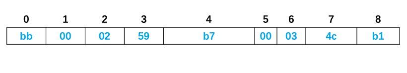
甚至我们还可以在支持十六进制的编辑器中打开 class 文件，可以在其中找到对应的字符串：
 （此图由开源文本编辑软件Atom的hex-view插件生成）
（此图由开源文本编辑软件Atom的hex-view插件生成）
粗暴一点，我们可以通过 HEX 编辑器直接修改字节码，尽管这样做会有风险， 但如果只修改一个数值的话应该会很有趣。
其实要使用编程的方式，方便和安全地实现字节码编辑和修改还有更好的办法，那就是使用 ASM 和 Javassist 之类的字节码操作工具，也可以在类加载器和 Agent 上面做文章，下一节课程会讨论 类加载器，其他主题则留待以后探讨。
4.8 对象初始化指令：new 指令, init 以及 clinit 简介
我们都知道 new是 Java 编程语言中的一个关键字， 但其实在字节码中，也有一个指令叫做 new。 当我们创建类的实例时, 编译器会生成类似下面这样的操作码：
0: new #2 // class demo/jvm0104/HelloByteCode
3: dup
4: invokespecial #3 // Method "<init>":()V
当你同时看到 new, dup 和 invokespecial 指令在一起时，那么一定是在创建类的实例对象！
为什么是三条指令而不是一条呢？这是因为：
new指令只是创建对象，但没有调用构造函数。invokespecial指令用来调用某些特殊方法的, 当然这里调用的是构造函数。dup指令用于复制栈顶的值。
由于构造函数调用不会返回值，所以如果没有 dup 指令, 在对象上调用方法并初始化之后，操作数栈就会是空的，在初始化之后就会出问题, 接下来的代码就无法对其进行处理。
这就是为什么要事先复制引用的原因，为的是在构造函数返回之后，可以将对象实例赋值给局部变量或某个字段。因此，接下来的那条指令一般是以下几种：
astore {N}orastore_{N}– 赋值给局部变量，其中{N}是局部变量表中的位置。putfield– 将值赋给实例字段putstatic– 将值赋给静态字段
在调用构造函数的时候，其实还会执行另一个类似的方法 <init> ，甚至在执行构造函数之前就执行了。
还有一个可能执行的方法是该类的静态初始化方法 <clinit>， 但 <clinit> 并不能被直接调用，而是由这些指令触发的： new, getstatic, putstatic or invokestatic。
也就是说，如果创建某个类的新实例， 访问静态字段或者调用静态方法，就会触发该类的静态初始化方法【如果尚未初始化】。
实际上，还有一些情况会触发静态初始化， 详情请参考 JVM 规范： [http://docs.oracle.com/javase/specs/jvms/se8/html/]
4.9 栈内存操作指令
有很多指令可以操作方法栈。 前面也提到过一些基本的栈操作指令： 他们将值压入栈，或者从栈中获取值。 除了这些基础操作之外也还有一些指令可以操作栈内存； 比如 swap 指令用来交换栈顶两个元素的值。下面是一些示例：
最基础的是 dup 和 pop 指令。
dup指令复制栈顶元素的值。pop指令则从栈中删除最顶部的值。
还有复杂一点的指令：比如，swap, dup_x1 和 dup2_x1。
- 顾名思义，
swap指令可交换栈顶两个元素的值，例如A和B交换位置(图中示例4)； dup_x1将复制栈顶元素的值，并在栈顶插入两次(图中示例5)；dup2_x1则复制栈顶两个元素的值，并插入第三个值(图中示例6)。
dup_x1 和 dup2_x1 指令看起来稍微有点复杂。而且为什么要设置这种指令呢? 在栈中复制最顶部的值？
请看一个实际案例：怎样交换 2 个 double 类型的值？
需要注意的是，一个 double 值占两个槽位，也就是说如果栈中有两个 double 值，它们将占用 4 个槽位。
要执行交换，你可能想到了 swap 指令，但问题是 swap 只适用于单字(one-word, 单字一般指 32 位 4 个字节，64 位则是双字)，所以不能处理 double 类型，但 Java 中又没有 swap2 指令。
怎么办呢? 解决方法就是使用 dup2_x2 指令，将操作数栈顶部的 double 值，复制到栈底 double 值的下方， 然后再使用 pop2 指令弹出栈顶的 double 值。结果就是交换了两个 double 值。 示意图如下图所示:

dup、dup_x1、dup2_x1 指令补充说明
指令的详细说明可参考 JVM 规范：
dup 指令
官方说明是：复制栈顶的值，并将复制的值压入栈。
操作数栈的值变化情况（方括号标识新插入的值）：
..., value →
..., value [,value]
dup_x1 指令
官方说明是：复制栈顶的值，并将复制的值插入到最上面 2 个值的下方。
操作数栈的值变化情况（方括号标识新插入的值）：
..., value2, value1 →
..., [value1,] value2, value1
dup2_x1 指令
官方说明是：复制栈顶 1 个 64 位/或 2 个 32 位的值, 并将复制的值按照原始顺序，插入原始值下面一个 32 位值的下方。
操作数栈的值变化情况（方括号标识新插入的值）：
# 情景 1: value1, value2, and value3 都是分组 1 的值(32 位元素)
..., value3, value2, value1 →
..., [value2, value1,] value3, value2, value1
# 情景 2: value1 是分组 2 的值(64 位,long 或double), value2 是分组 1 的值(32 位元素)
..., value2, value1 →
..., [value1,] value2, value1
| 实际类型 | JVM 计算类型 | 类型分组 |
|---|---|---|
| boolean | int | 1 |
| byte | int | 1 |
| char | int | 1 |
| short | int | 1 |
| int | int | 1 |
| float | float | 1 |
| reference | reference | 1 |
| returnAddress | returnAddress | 1 |
| long | long | 2 |
| double | double | 2 |
4.10 局部变量表
stack 主要用于执行指令，而局部变量则用来保存中间结果，两者之间可以直接交互。
让我们编写一个复杂点的示例：
第一步，先编写一个计算移动平均数的类:
package demo.jvm0104;
//移动平均数
public class MovingAverage {
private int count = 0;
private double sum = 0.0D;
public void submit(double value){
this.count ++;
this.sum += value;
}
public double getAvg(){
if(0 == this.count){ return sum;}
return this.sum/this.count;
}
}
第二步，然后写一个类来调用:
package demo.jvm0104;
public class LocalVariableTest {
public static void main(String[] args) {
MovingAverage ma = new MovingAverage();
int num1 = 1;
int num2 = 2;
ma.submit(num1);
ma.submit(num2);
double avg = ma.getAvg();
}
}
其中 main 方法中向 MovingAverage 类的实例提交了两个数值，并要求其计算当前的平均值。
然后我们需要编译（还记得前面提到, 生成调试信息的 -g 参数吗）。
javac -g demo/jvm0104/*.java
然后使用 javap 反编译:
javap -c -verbose demo/jvm0104/LocalVariableTest
看 main 方法对应的字节码：
public static void main(java.lang.String[]);
descriptor: ([Ljava/lang/String;)V
flags: ACC_PUBLIC, ACC_STATIC
Code:
stack=3, locals=6, args_size=1
0: new #2 // class demo/jvm0104/MovingAverage
3: dup
4: invokespecial #3 // Method demo/jvm0104/MovingAverage."<init>":()V
7: astore_1
8: iconst_1
9: istore_2
10: iconst_2
11: istore_3
12: aload_1
13: iload_2
14: i2d
15: invokevirtual #4 // Method demo/jvm0104/MovingAverage.submit:(D)V
18: aload_1
19: iload_3
20: i2d
21: invokevirtual #4 // Method demo/jvm0104/MovingAverage.submit:(D)V
24: aload_1
25: invokevirtual #5 // Method demo/jvm0104/MovingAverage.getAvg:()D
28: dstore 4
30: return
LineNumberTable:
line 5: 0
line 6: 8
line 7: 10
line 8: 12
line 9: 18
line 10: 24
line 11: 30
LocalVariableTable:
Start Length Slot Name Signature
0 31 0 args [Ljava/lang/String;
8 23 1 ma Ldemo/jvm0104/MovingAverage;
10 21 2 num1 I
12 19 3 num2 I
30 1 4 avg D
- 编号
0的字节码new, 创建MovingAverage类的对象; - 编号
3的字节码dup复制栈顶引用值。 - 编号
4的字节码invokespecial执行对象初始化。 - 编号
7开始, 使用astore_1指令将引用地址值(addr.)存储(store)到编号为1的局部变量中：astore_1中的1指代 LocalVariableTable 中ma对应的槽位编号， - 编号8开始的指令：
iconst_1和iconst_2用来将常量值1和2加载到栈里面， 并分别由指令istore_2和istore_3将它们存储到在 LocalVariableTable 的槽位 2 和槽位 3 中。
8: iconst_1
9: istore_2
10: iconst_2
11: istore_3
请注意，store 之类的指令调用实际上从栈顶删除了一个值。 这就是为什么再次使用相同值时，必须再加载(load)一次的原因。
例如在上面的字节码中，调用 submit 方法之前， 必须再次将参数值加载到栈中：
12: aload_1
13: iload_2
14: i2d
15: invokevirtual #4 // Method demo/jvm0104/MovingAverage.submit:(D)V
调用 getAvg() 方法后，返回的结果位于栈顶，然后使用 dstore 将 double 值保存到本地变量4号槽位，这里的d表示目标变量的类型为double。
24: aload_1
25: invokevirtual #5 // Method demo/jvm0104/MovingAverage.getAvg:()D
28: dstore 4
关于 LocalVariableTable 有个有意思的事情，就是最前面的槽位会被方法参数占用。
在这里，因为 main 是静态方法，所以槽位0中并没有设置为 this 引用的地址。 但是对于非静态方法来说， this 会将分配到第 0 号槽位中。
再次提醒: 有过反射编程经验的同学可能比较容易理解:
Method#invoke(Object obj, Object... args); 有JavaScript编程经验的同学也可以类比:fn.apply(obj, args) && fn.call(obj, arg1, arg2);
理解这些字节码的诀窍在于:
给局部变量赋值时，需要使用相应的指令来进行 store，如 astore_1。store 类的指令都会删除栈顶值。 相应的 load 指令则会将值从局部变量表压入操作数栈，但并不会删除局部变量中的值。
4.11 流程控制指令
流程控制指令主要是分支和循环在用, 根据检查条件来控制程序的执行流程。
一般是 If-Then-Else 这种三元运算符(ternary operator)， Java中的各种循环，甚至异常处的理操作码都可归属于 程序流程控制。
然后，我们再增加一个示例，用循环来提交给 MovingAverage 类一定数量的值：
package demo.jvm0104;
public class ForLoopTest {
private static int[] numbers = {1, 6, 8};
public static void main(String[] args) {
MovingAverage ma = new MovingAverage();
for (int number : numbers) {
ma.submit(number);
}
double avg = ma.getAvg();
}
}
同样执行编译和反编译:
javac -g demo/jvm0104/*.java
javap -c -verbose demo/jvm0104/ForLoopTest
因为 numbers 是本类中的 static 属性， 所以对应的字节码如下所示:
0: new #2 // class demo/jvm0104/MovingAverage
3: dup
4: invokespecial #3 // Method demo/jvm0104/MovingAverage."<init>":()V
7: astore_1
8: getstatic #4 // Field numbers:[I
11: astore_2
12: aload_2
13: arraylength
14: istore_3
15: iconst_0
16: istore 4
18: iload 4
20: iload_3
21: if_icmpge 43
24: aload_2
25: iload 4
27: iaload
28: istore 5
30: aload_1
31: iload 5
33: i2d
34: invokevirtual #5 // Method demo/jvm0104/MovingAverage.submit:(D)V
37: iinc 4, 1
40: goto 18
43: aload_1
44: invokevirtual #6 // Method demo/jvm0104/MovingAverage.getAvg:()D
47: dstore_2
48: return
LocalVariableTable:
Start Length Slot Name Signature
30 7 5 number I
0 49 0 args [Ljava/lang/String;
8 41 1 ma Ldemo/jvm0104/MovingAverage;
48 1 2 avg D
位置 [8~16] 的指令用于循环控制。 我们从代码的声明从上往下看, 在最后面的LocalVariableTable 中:
0号槽位被 main 方法的参数args占据了。1号槽位被ma占用了。5号槽位被number占用了。2号槽位是for循环之后才被avg占用的。
那么中间的 2,3,4 号槽位是谁霸占了呢? 通过分析字节码指令可以看出，在 2,3,4 槽位有 3 个匿名的局部变量(astore_2, istore_3, istore 4等指令)。
2号槽位的变量保存了 numbers 的引用值，占据了2号槽位。3号槽位的变量, 由arraylength指令使用, 得出循环的长度。4号槽位的变量, 是循环计数器， 每次迭代后使用iinc指令来递增。
如果我们的 JDK 版本再老一点, 则会在
2,3,4槽位发现三个源码中没有出现的变量：arr$,len$,i$， 也就是循环变量。
循环体中的第一条指令用于执行 循环计数器与数组长度 的比较：
18: iload 4
20: iload_3
21: if_icmpge 43
这段指令将局部变量表中 4号槽位 和 3号槽位的值加载到栈中，并调用 if_icmpge 指令来比较他们的值。
【if_icmpge 解读: if, integer, compare, great equal】, 如果一个数的值大于或等于另一个值，则程序执行流程跳转到pc=43的地方继续执行。
在这个例子中就是， 如果4号槽位的值 大于或等于 3号槽位的值, 循环就结束了，这里 43 位置对于的是循环后面的代码。如果条件不成立，则循环进行下一次迭代。
在循环体执行完，它的循环计数器加 1，然后循环跳回到起点以再次验证循环条件：
37: iinc 4, 1 // 4号槽位的值加1
40: goto 18 // 跳到循环开始的地方
4.12 算术运算指令与类型转换指令
Java 字节码中有许多指令可以执行算术运算。实际上，指令集中有很大一部分表示都是关于数学运算的。对于所有数值类型(int, long, double, float)，都有加，减，乘，除，取反的指令。
那么 byte 和 char, boolean 呢? JVM 是当做 int 来处理的。另外还有部分指令用于数据类型之间的转换。
算术操作码和类型
当我们想将 int 类型的值赋值给 long 类型的变量时，就会发生类型转换。
类型转换操作码

在前面的示例中， 将 int 值作为参数传递给实际上接收 double 的 submit() 方法时，可以看到, 在实际调用该方法之前，使用了类型转换的操作码：
31: iload 5
33: i2d
34: invokevirtual #5 // Method demo/jvm0104/MovingAverage.submit:(D)V
也就是说, 将一个 int 类型局部变量的值, 作为整数加载到栈中，然后用 i2d 指令将其转换为 double 值，以便将其作为参数传给submit方法。
唯一不需要将数值load到操作数栈的指令是 iinc，它可以直接对 LocalVariableTable 中的值进行运算。 其他的所有操作均使用栈来执行。
4.13 方法调用指令和参数传递
前面部分稍微提了一下方法调用： 比如构造函数是通过 invokespecial 指令调用的。
这里列举了各种用于方法调用的指令：
invokestatic，顾名思义，这个指令用于调用某个类的静态方法，这也是方法调用指令中最快的一个。invokespecial, 我们已经学过了,invokespecial指令用来调用构造函数，但也可以用于调用同一个类中的 private 方法, 以及可见的超类方法。invokevirtual，如果是具体类型的目标对象，invokevirtual用于调用公共，受保护和打包私有方法。invokeinterface，当要调用的方法属于某个接口时，将使用invokeinterface指令。
那么
invokevirtual和invokeinterface有什么区别呢？这确实是个好问题。 为什么需要invokevirtual和invokeinterface这两种指令呢? 毕竟所有的接口方法都是公共方法, 直接使用invokevirtual不就可以了吗？
这么做是源于对方法调用的优化。JVM 必须先解析该方法，然后才能调用它。
- 使用
invokestatic指令，JVM 就确切地知道要调用的是哪个方法：因为调用的是静态方法，只能属于一个类。 - 使用
invokespecial时， 查找的数量也很少， 解析也更加容易， 那么运行时就能更快地找到所需的方法。
使用 invokevirtual 和 invokeinterface 的区别不是那么明显。想象一下，类定义中包含一个方法定义表， 所有方法都有位置编号。下面的示例中：A 类包含 method1 和 method2 方法； 子类B继承A，继承了 method1，覆写了 method2，并声明了方法 method3。
请注意，method1 和 method2 方法在类 A 和类 B 中处于相同的索引位置。
class A
1: method1
2: method2
class B extends A
1: method1
2: method2
3: method3
那么，在运行时只要调用 method2，一定是在位置 2 处找到它。
现在我们来解释invokevirtual 和 invokeinterface 之间的本质区别。
假设有一个接口 X 声明了 methodX 方法, 让 B 类在上面的基础上实现接口 X：
class B extends A implements X
1: method1
2: method2
3: method3
4: methodX
新方法 methodX 位于索引 4 处，在这种情况下，它看起来与 method3 没什么不同。
但如果还有另一个类 C 也实现了 X 接口，但不继承 A，也不继承 B：
class C implements X
1: methodC
2: methodX
类 C 中的接口方法位置与类 B 的不同，这就是为什么运行时在 invokinterface 方面受到更多限制的原因。 与 invokinterface 相比， invokevirtual 针对具体的类型方法表是固定的，所以每次都可以精确查找，效率更高（具体的分析讨论可以参见参考材料的第一个链接）。
4.14 JDK7 新增的方法调用指令 invokedynamic
Java 虚拟机的字节码指令集在 JDK7 之前一直就只有前面提到的 4 种指令（invokestatic，invokespecial，invokevirtual，invokeinterface）。随着 JDK 7 的发布，字节码指令集新增了invokedynamic指令。这条新增加的指令是实现“动态类型语言”（Dynamically Typed Language）支持而进行的改进之一，同时也是 JDK 8 以后支持的 lambda 表达式的实现基础。
为什么要新增加一个指令呢？
我们知道在不改变字节码的情况下，我们在 Java 语言层面想调用一个类 A 的方法 m，只有两个办法：
- 使用
A a=new A(); a.m()，拿到一个 A 类型的实例，然后直接调用方法； - 通过反射，通过 A.class.getMethod 拿到一个 Method，然后再调用这个
Method.invoke反射调用；
这两个方法都需要显式的把方法 m 和类型 A 直接关联起来，假设有一个类型 B，也有一个一模一样的方法签名的 m 方法，怎么来用这个方法在运行期指定调用 A 或者 B 的 m 方法呢？这个操作在 JavaScript 这种基于原型的语言里或者是 C# 这种有函数指针/方法委托的语言里非常常见，Java 里是没有直接办法的。Java 里我们一般建议使用一个 A 和 B 公有的接口 IC，然后 IC 里定义方法 m，A 和 B 都实现接口 IC，这样就可以在运行时把 A 和 B 都当做 IC 类型来操作，就同时有了方法 m，这样的“强约束”带来了很多额外的操作。
而新增的 invokedynamic 指令，配合新增的方法句柄（Method Handles，它可以用来描述一个跟类型 A 无关的方法 m 的签名，甚至不包括方法名称，这样就可以做到我们使用方法 m 的签名，但是直接执行的时候调用的是相同签名的另一个方法 b），可以在运行时再决定由哪个类来接收被调用的方法。在此之前，只能使用反射来实现类似的功能。该指令使得可以出现基于 JVM 的动态语言，让 jvm 更加强大。而且在 JVM 上实现动态调用机制，不会破坏原有的调用机制。这样既很好的支持了 Scala、Clojure 这些 JVM 上的动态语言，又可以支持代码里的动态 lambda 表达式。
RednaxelaFX 评论说：
简单来说就是以前设计某些功能的时候把做法写死在了字节码里，后来想改也改不了了。 所以这次给 lambda 语法设计翻译到字节码的策略是就用 invokedynamic 来作个弊，把实际的翻译策略隐藏在 JDK 的库的实现里（metafactory）可以随时改，而在外部的标准上大家只看到一个固定的 invokedynamic。
参考材料
- Why Should I Know About Java Bytecode: https://jrebel.com/rebellabs/rebel-labs-report-mastering-java-bytecode-at-the-core-of-the-jvm/
- 轻松看懂Java字节码: https://juejin.im/post/5aca2c366fb9a028c97a5609
- invokedynamic指令：https://www.cnblogs.com/wade-luffy/p/6058087.html
- Java 8的Lambda表达式为什么要基于invokedynamic？：https://www.zhihu.com/question/39462935
- Invokedynamic：https://www.jianshu.com/p/ad7d572196a8
- JVM之动态方法调用：invokedynamic： https://ifeve.com/jvm%E4%B9%8B%E5%8A%A8%E6%80%81%E6%96%B9%E6%B3%95%E8%B0%83%E7%94%A8%EF%BC%9Ainvokedynamic/
06 Java 类加载器：山不辞土，故能成其高
前面我们学习了 Java 字节码，写好的代码经过编译变成了字节码，并且可以打包成 Jar 文件。
然后就可以让 JVM 去加载需要的字节码，变成持久代/元数据区上的 Class 对象，接着才会执行我们的程序逻辑。
我们可以用 Java 命令指定主启动类，或者是 Jar 包，通过约定好的机制，JVM 就会自动去加载对应的字节码（可能是 class 文件，也可能是 Jar 包）。
我们知道 Jar 包打开后实际上就等价于一个文件夹，里面有很多 class 文件和资源文件，但是为了方便就打包成 zip 格式。 当然解压了之后照样可以直接用 java 命令来执行。
$ java Hello
或者把 Hello.class 和依赖的其他文件一起打包成 jar 文件:
示例 1: 将 class 文件和 java 源文件归档到一个名为 hello.jar 的档案中:
jar cvf hello.jar Hello.class Hello.java示例 2: 归档的同时，通过e选项指定 jar 的启动类Hello:jar cvfe hello.jar Hello Hello.class Hello.java
然后通过 -jar 选项来执行jar包:
$ java -jar hello.jar
当然我们回过头来还可以把 jar 解压了，再用上面的 java 命令来运行。
运行 java 程序的第一步就是加载 class 文件/或输入流里面包含的字节码。
- 类的生命周期和加载过程
- 类加载时机
- 类加载机制
- 自定义类加载器示例
- 一些实用技巧
- 如何排查找不到 Jar 包的问题？
- 如何排查类的方法不一致的问题？
- 怎么看到加载了哪些类，以及加载顺序？
- 怎么调整或修改 ext 和本地加载路径？
- 怎么运行期加载额外的 jar 包或者 class 呢？
按照 Java 语言规范和 Java 虚拟机规范的定义, 我们用 “类加载(Class Loading)” 来表示: 将 class/interface 名称映射为 Class 对象的一整个过程。 这个过程还可以划分为更具体的阶段: 加载，链接和初始化(loading, linking and initializing)。
那么加载 class 的过程中到底发生了些什么呢？我们来详细看看。
5.1 类的生命周期和加载过程
一个类在 JVM 里的生命周期有 7 个阶段，分别是加载（Loading）、验证（Verification）、准备（Preparation）、解析（Resolution）、初始化（Initialization）、使用（Using）、卸载（Unloading）。
其中前五个部分（加载，验证，准备，解析，初始化）统称为类加载，下面我们就分别来说一下这五个过程。
1）加载 加载阶段也可以称为“装载”阶段。 这个阶段主要的操作是： 根据明确知道的 class 完全限定名, 来获取二进制 classfile 格式的字节流，简单点说就是找到文件系统中/jar 包中/或存在于任何地方的“class 文件”。 如果找不到二进制表示形式，则会抛出 NoClassDefFound 错误。
装载阶段并不会检查 classfile 的语法和格式。 类加载的整个过程主要由 JVM 和 Java 的类加载系统共同完成， 当然具体到 loading 阶段则是由 JVM 与具体的某一个类加载器（java.lang.classLoader）协作完成的。
2）校验 链接过程的第一个阶段是 校验，确保 class 文件里的字节流信息符合当前虚拟机的要求，不会危害虚拟机的安全。
校验过程检查 classfile 的语义，判断常量池中的符号，并执行类型检查， 主要目的是判断字节码的合法性，比如 magic number, 对版本号进行验证。 这些检查过程中可能会抛出 VerifyError， ClassFormatError 或 UnsupportedClassVersionError。
因为 classfile 的验证属是链接阶段的一部分，所以这个过程中可能需要加载其他类，在某个类的加载过程中，JVM 必须加载其所有的超类和接口。
如果类层次结构有问题（例如，该类是自己的超类或接口,死循环了），则 JVM 将抛出 ClassCircularityError。 而如果实现的接口并不是一个 interface，或者声明的超类是一个 interface，也会抛出 IncompatibleClassChangeError。
3）准备
然后进入准备阶段，这个阶段将会创建静态字段, 并将其初始化为标准默认值(比如null或者0 值)，并分配方法表，即在方法区中分配这些变量所使用的内存空间。
请注意，准备阶段并未执行任何 Java 代码。
例如：
public static int i = 1；
在准备阶段i的值会被初始化为 0，后面在类初始化阶段才会执行赋值为 1；但是下面如果使用 final 作为静态常量，某些 JVM 的行为就不一样了：
public static final int i = 1；对应常量 i，在准备阶段就会被赋值 1，其实这样还是比较 puzzle，例如其他语言（C#）有直接的常量关键字 const，让告诉编译器在编译阶段就替换成常量，类似于宏指令，更简单。
4）解析 然后进入可选的解析符号引用阶段。 也就是解析常量池，主要有以下四种：类或接口的解析、字段解析、类方法解析、接口方法解析。
简单的来说就是我们编写的代码中，当一个变量引用某个对象的时候，这个引用在 .class 文件中是以符号引用来存储的（相当于做了一个索引记录）。
在解析阶段就需要将其解析并链接为直接引用（相当于指向实际对象）。如果有了直接引用，那引用的目标必定在堆中存在。
加载一个 class 时, 需要加载所有的 super 类和 super 接口。
5）初始化 JVM 规范明确规定, 必须在类的首次“主动使用”时才能执行类初始化。
初始化的过程包括执行：
- 类构造器方法
- static 静态变量赋值语句
- static 静态代码块
如果是一个子类进行初始化会先对其父类进行初始化，保证其父类在子类之前进行初始化。所以其实在 java 中初始化一个类，那么必然先初始化过 java.lang.Object 类，因为所有的 java 类都继承自 java.lang.Object。
只要我们尊重语言的语义，在执行下一步操作之前完成 装载，链接和初始化这些步骤，如果出错就按照规定抛出相应的错误，类加载系统完全可以根据自己的策略，灵活地进行符号解析等链接过程。 为了提高性能，HotSpot JVM 通常要等到类初始化时才去装载和链接类。 因此，如果 A 类引用了 B 类，那么加载 A 类并不一定会去加载 B 类（除非需要进行验证）。 主动对 B 类执行第一条指令时才会导致 B 类的初始化，这就需要先完成对 B 类的装载和链接。
5.2 类加载时机
了解了类的加载过程，我们再看看类的初始化何时会被触发呢？JVM 规范枚举了下述多种触发情况：
- 当虚拟机启动时，初始化用户指定的主类，就是启动执行的 main 方法所在的类；
- 当遇到用以新建目标类实例的 new 指令时，初始化 new 指令的目标类，就是 new 一个类的时候要初始化；
- 当遇到调用静态方法的指令时，初始化该静态方法所在的类；
- 当遇到访问静态字段的指令时，初始化该静态字段所在的类；
- 子类的初始化会触发父类的初始化；
- 如果一个接口定义了 default 方法，那么直接实现或者间接实现该接口的类的初始化，会触发该接口的初始化；
- 使用反射 API 对某个类进行反射调用时，初始化这个类，其实跟前面一样，反射调用要么是已经有实例了，要么是静态方法，都需要初始化；
- 当初次调用 MethodHandle 实例时，初始化该 MethodHandle 指向的方法所在的类。
同时以下几种情况不会执行类初始化：
- 通过子类引用父类的静态字段，只会触发父类的初始化，而不会触发子类的初始化。
- 定义对象数组，不会触发该类的初始化。
- 常量在编译期间会存入调用类的常量池中，本质上并没有直接引用定义常量的类，不会触发定义常量所在的类。
- 通过类名获取 Class 对象，不会触发类的初始化，Hello.class 不会让 Hello 类初始化。
- 通过 Class.forName 加载指定类时，如果指定参数 initialize 为 false 时，也不会触发类初始化，其实这个参数是告诉虚拟机，是否要对类进行初始化。Class.forName(“jvm.Hello”)默认会加载 Hello 类。
- 通过 ClassLoader 默认的 loadClass 方法，也不会触发初始化动作（加载了，但是不初始化）。
示例: 诸如 Class.forName(), classLoader.loadClass() 等 Java API, 反射API, 以及 JNI_FindClass 都可以启动类加载。 JVM 本身也会进行类加载。 比如在 JVM 启动时加载核心类，java.lang.Object, java.lang.Thread 等等。
5.3 类加载器机制
类加载过程可以描述为“通过一个类的全限定名 a.b.c.XXClass 来获取描述此类的 Class 对象”，这个过程由“类加载器（ClassLoader）”来完成。这样的好处在于，子类加载器可以复用父加载器加载的类。系统自带的类加载器分为三种：
- 启动类加载器（BootstrapClassLoader）
- 扩展类加载器（ExtClassLoader）
- 应用类加载器（AppClassLoader）
一般启动类加载器是由 JVM 内部实现的，在 Java 的 API 里无法拿到，但是我们可以侧面看到和影响它（后面的内容会演示）。后 2 种类加载器在 Oracle Hotspot JVM 里，都是在中sun.misc.Launcher定义的，扩展类加载器和应用类加载器一般都继承自URLClassLoader类，这个类也默认实现了从各种不同来源加载 class 字节码转换成 Class 的方法。
- 启动类加载器（bootstrap class loader）: 它用来加载 Java 的核心类，是用原生 C++ 代码来实现的，并不继承自 java.lang.ClassLoader（负责加载JDK中jre/lib/rt.jar里所有的class）。它可以看做是 JVM 自带的，我们再代码层面无法直接获取到启动类加载器的引用，所以不允许直接操作它， 如果打印出来就是个
null。举例来说，java.lang.String 是由启动类加载器加载的，所以 String.class.getClassLoader() 就会返回 null。但是后面可以看到可以通过命令行参数影响它加载什么。 - 扩展类加载器（extensions class loader）：它负责加载 JRE 的扩展目录，lib/ext 或者由 java.ext.dirs 系统属性指定的目录中的 JAR 包的类，代码里直接获取它的父类加载器为 null（因为无法拿到启动类加载器）。
- 应用类加载器（app class loader）：它负责在 JVM 启动时加载来自 Java 命令的 -classpath 或者 -cp 选项、java.class.path 系统属性指定的 jar 包和类路径。在应用程序代码里可以通过 ClassLoader 的静态方法 getSystemClassLoader() 来获取应用类加载器。如果没有特别指定，则在没有使用自定义类加载器情况下，用户自定义的类都由此加载器加载。
此外还可以自定义类加载器。如果用户自定义了类加载器，则自定义类加载器都以应用类加载器作为父加载器。应用类加载器的父类加载器为扩展类加载器。这些类加载器是有层次关系的，启动加载器又叫根加载器，是扩展加载器的父加载器，但是直接从 ExClassLoader 里拿不到它的引用，同样会返回 null。
类加载机制有三个特点：
- 双亲委托：当一个自定义类加载器需要加载一个类，比如 java.lang.String，它很懒，不会一上来就直接试图加载它，而是先委托自己的父加载器去加载，父加载器如果发现自己还有父加载器，会一直往前找，这样只要上级加载器，比如启动类加载器已经加载了某个类比如 java.lang.String，所有的子加载器都不需要自己加载了。如果几个类加载器都没有加载到指定名称的类，那么会抛出 ClassNotFountException 异常。
- 负责依赖：如果一个加载器在加载某个类的时候，发现这个类依赖于另外几个类或接口，也会去尝试加载这些依赖项。
- 缓存加载：为了提升加载效率，消除重复加载，一旦某个类被一个类加载器加载，那么它会缓存这个加载结果，不会重复加载。
5.4 自定义类加载器示例
同时我们可以自行实现类加载器来加载其他格式的类，对加载方式、加载数据的格式进行自定义处理，只要能通过 classloader 返回一个 Class 实例即可。这就大大增强了加载器灵活性。比如我们试着实现一个可以用来处理简单加密的字节码的类加载器，用来保护我们的 class 字节码文件不被使用者直接拿来破解。
我们先来看看我们希望加载的一个 Hello 类：
package jvm;
public class Hello {
static {
System.out.println("Hello Class Initialized!");
}
}
这个 Hello 类非常简单，就是在自己被初始化的时候，打印出来一句“Hello Class Initialized!”。假设这个类的内容非常重要，我们不想把编译到得到的 Hello.class 给别人，但是我们还是想别人可以调用或执行这个类，应该怎么办呢？一个简单的思路是，我们把这个类的 class 文件二进制作为字节流先加密一下，然后尝试通过自定义的类加载器来加载加密后的数据。为了演示简单，我们使用 jdk 自带的 Base64 算法，把字节码加密成一个文本。在下面这个例子里，我们实现一个 HelloClassLoader，它继承自 ClassLoader 类，但是我们希望它通过我们提供的一段 Base64 字符串，来还原出来，并执行我们的 Hello 类里的打印一串字符串的逻辑。
package jvm;
import java.util.Base64;
public class HelloClassLoader extends ClassLoader {
public static void main(String[] args) {
try {
new HelloClassLoader().findClass("jvm.Hello").newInstance(); // 加载并初始化Hello类
} catch (ClassNotFoundException e) {
e.printStackTrace();
} catch (IllegalAccessException e) {
e.printStackTrace();
} catch (InstantiationException e) {
e.printStackTrace();
}
}
@Override
protected Class<?> findClass(String name) throws ClassNotFoundException {
String helloBase64 = "yv66vgAAADQAHwoABgARCQASABMIABQKABUAFgcAFwcAGAEABjxpbml0PgEAAygpVgEABENvZGUBAA9MaW5lTnVtYmVyVGFibGUBABJMb2N" +
"hbFZhcmlhYmxlVGFibGUBAAR0aGlzAQALTGp2bS9IZWxsbzsBAAg8Y2xpbml0PgEAClNvdXJjZUZpbGUBAApIZWxsby5qYXZhDAAHAAgHABkMABoAGwEAGEhlb" +
"GxvIENsYXNzIEluaXRpYWxpemVkIQcAHAwAHQAeAQAJanZtL0hlbGxvAQAQamF2YS9sYW5nL09iamVjdAEAEGphdmEvbGFuZy9TeXN0ZW0BAANvdXQBABVMamF2" +
"YS9pby9QcmludFN0cmVhbTsBABNqYXZhL2lvL1ByaW50U3RyZWFtAQAHcHJpbnRsbgEAFShMamF2YS9sYW5nL1N0cmluZzspVgAhAAUABgAAAAAAAgABAAcACA" +
"ABAAkAAAAvAAEAAQAAAAUqtwABsQAAAAIACgAAAAYAAQAAAAMACwAAAAwAAQAAAAUADAANAAAACAAOAAgAAQAJAAAAJQACAAAAAAAJsgACEgO2AASxAAAAAQAK" +
"AAAACgACAAAABgAIAAcAAQAPAAAAAgAQ";
byte[] bytes = decode(helloBase64);
return defineClass(name,bytes,0,bytes.length);
}
public byte[] decode(String base64){
return Base64.getDecoder().decode(base64);
}
}
直接执行这个类：
$ java jvm.HelloClassLoader Hello Class Initialized!
可以看到达到了我们的目的，成功执行了Hello类的代码，但是完全不需要有Hello这个类的class文件。此外，需要说明的是两个没有关系的自定义类加载器之间加载的类是不共享的（只共享父类加载器，兄弟之间不共享），这样就可以实现不同的类型沙箱的隔离性，我们可以用多个类加载器，各自加载同一个类的不同版本，大家可以相互之间不影响彼此，从而在这个基础上可以实现类的动态加载卸载，热插拔的插件机制等，具体信息大家可以参考OSGi等模块化技术。
5.5 一些实用技巧
1）如何排查找不到Jar包的问题？
有时候我们会面临明明已经把某个jar加入到了环境里，可以运行的时候还是找不到。那么我们有没有一种方法，可以直接看到各个类加载器加载了哪些jar，以及把哪些路径加到了classpath里？答案是肯定的，代码如下：
package jvm;
import java.lang.reflect.Field;
import java.net.URL;
import java.net.URLClassLoader;
import java.util.ArrayList;
public class JvmClassLoaderPrintPath {
public static void main(String[] args) {
// 启动类加载器
URL[] urls = sun.misc.Launcher.getBootstrapClassPath().getURLs();
System.out.println("启动类加载器");
for(URL url : urls) {
System.out.println(" ==> " +url.toExternalForm());
}
// 扩展类加载器
printClassLoader("扩展类加载器", JvmClassLoaderPrintPath.class.getClassLoader().getParent());
// 应用类加载器
printClassLoader("应用类加载器", JvmClassLoaderPrintPath.class.getClassLoader());
}
public static void printClassLoader(String name, ClassLoader CL){
if(CL != null) {
System.out.println(name + " ClassLoader -> " + CL.toString());
printURLForClassLoader(CL);
}else{
System.out.println(name + " ClassLoader -> null");
}
}
public static void printURLForClassLoader(ClassLoader CL){
Object ucp = insightField(CL,"ucp");
Object path = insightField(ucp,"path");
ArrayList ps = (ArrayList) path;
for (Object p : ps){
System.out.println(" ==> " + p.toString());
}
}
private static Object insightField(Object obj, String fName) {
try {
Field f = null;
if(obj instanceof URLClassLoader){
f = URLClassLoader.class.getDeclaredField(fName);
}else{
f = obj.getClass().getDeclaredField(fName);
}
f.setAccessible(true);
return f.get(obj);
} catch (Exception e) {
e.printStackTrace();
return null;
}
}
}
代码执行结果如下：
启动类加载器
==> file:/D:/Program%20Files/Java/jdk1.8.0_231/jre/lib/resources.jar
==> file:/D:/Program%20Files/Java/jdk1.8.0_231/jre/lib/rt.jar
==> file:/D:/Program%20Files/Java/jdk1.8.0_231/jre/lib/sunrsasign.jar
==> file:/D:/Program%20Files/Java/jdk1.8.0_231/jre/lib/jsse.jar
==> file:/D:/Program%20Files/Java/jdk1.8.0_231/jre/lib/jce.jar
==> file:/D:/Program%20Files/Java/jdk1.8.0_231/jre/lib/charsets.jar
==> file:/D:/Program%20Files/Java/jdk1.8.0_231/jre/lib/jfr.jar
==> file:/D:/Program%20Files/Java/jdk1.8.0_231/jre/classes
扩展类加载器 ClassLoader -> sun.misc.Launcher$ExtClassLoader@15db9742
==> file:/D:/Program%20Files/Java/jdk1.8.0_231/jre/lib/ext/access-bridge-64.jar
==> file:/D:/Program%20Files/Java/jdk1.8.0_231/jre/lib/ext/cldrdata.jar
==> file:/D:/Program%20Files/Java/jdk1.8.0_231/jre/lib/ext/dnsns.jar
==> file:/D:/Program%20Files/Java/jdk1.8.0_231/jre/lib/ext/jaccess.jar
==> file:/D:/Program%20Files/Java/jdk1.8.0_231/jre/lib/ext/jfxrt.jar
==> file:/D:/Program%20Files/Java/jdk1.8.0_231/jre/lib/ext/localedata.jar
==> file:/D:/Program%20Files/Java/jdk1.8.0_231/jre/lib/ext/nashorn.jar
==> file:/D:/Program%20Files/Java/jdk1.8.0_231/jre/lib/ext/sunec.jar
==> file:/D:/Program%20Files/Java/jdk1.8.0_231/jre/lib/ext/sunjce_provider.jar
==> file:/D:/Program%20Files/Java/jdk1.8.0_231/jre/lib/ext/sunmscapi.jar
==> file:/D:/Program%20Files/Java/jdk1.8.0_231/jre/lib/ext/sunpkcs11.jar
==> file:/D:/Program%20Files/Java/jdk1.8.0_231/jre/lib/ext/zipfs.jar
应用类加载器 ClassLoader -> sun.misc.Launcher$AppClassLoader@73d16e93
==> file:/D:/git/studyjava/build/classes/java/main/
==> file:/D:/git/studyjava/build/resources/main
从打印结果，我们可以看到三种类加载器各自默认加载了哪些 jar 包和包含了哪些 classpath 的路径。
2）如何排查类的方法不一致的问题？
假如我们确定一个 jar 或者 class 已经在 classpath 里了，但是却总是提示java.lang.NoSuchMethodError，这是怎么回事呢？很可能是加载了错误的或者重复加载了不同版本的 jar 包。这时候，用前面的方法就可以先排查一下，加载了具体什么 jar，然后是不是不同路径下有重复的 class 文件，但是版本不一样。
3）怎么看到加载了哪些类，以及加载顺序？
还是针对上一个问题，假如有两个地方有 Hello.class，一个是新版本，一个是旧的，怎么才能直观地看到他们的加载顺序呢？也没有问题，我们可以直接打印加载的类清单和加载顺序。
只需要在类的启动命令行参数加上-XX:+TraceClassLoading 或者 -verbose 即可，注意需要加载 Java 命令之后，要执行的类名之前，不然不起作用。例如：
$ java -XX:+TraceClassLoading jvm.HelloClassLoader
[Opened D:\Program Files\Java\jre1.8.0_231\lib\rt.jar]
[Loaded java.lang.Object from D:\Program Files\Java\jre1.8.0_231\lib\rt.jar]
[Loaded java.io.Serializable from D:\Program Files\Java\jre1.8.0_231\lib\rt.jar]
[Loaded java.lang.Comparable from D:\Program Files\Java\jre1.8.0_231\lib\rt.jar]
[Loaded java.lang.CharSequence from D:\Program Files\Java\jre1.8.0_231\lib\rt.jar]
[Loaded java.lang.String from D:\Program Files\Java\jre1.8.0_231\lib\rt.jar]
[Loaded java.lang.reflect.AnnotatedElement from D:\Program Files\Java\jre1.8.0_231\lib\rt.jar]
[Loaded java.lang.reflect.GenericDeclaration from D:\Program Files\Java\jre1.8.0_231\lib\rt.jar]
[Loaded java.lang.reflect.Type from D:\Program Files\Java\jre1.8.0_231\lib\rt.jar]
[Loaded java.lang.Class from D:\Program Files\Java\jre1.8.0_231\lib\rt.jar]
[Loaded java.lang.Cloneable from D:\Program Files\Java\jre1.8.0_231\lib\rt.jar]
[Loaded java.lang.ClassLoader from D:\Program Files\Java\jre1.8.0_231\lib\rt.jar]
[Loaded java.lang.System from D:\Program Files\Java\jre1.8.0_231\lib\rt.jar]
// ....... 此处省略了100多条类加载信息
[Loaded jvm.Hello from __JVM_DefineClass__]
[Loaded java.util.concurrent.ConcurrentHashMap$ForwardingNode from D:\Program Files\Java\jre1.8.0_231\lib\rt.jar]
Hello Class Initialized!
[Loaded java.lang.Shutdown from D:\Program Files\Java\jre1.8.0_231\lib\rt.jar]
[Loaded java.lang.Shutdown$Lock from D:\Program Files\Java\jre1.8.0_231\lib\rt.jar]
上面的信息，可以很清楚的看到类的加载先后顺序，以及是从哪个 jar 里加载的，这样排查类加载的问题非常方便。
4）怎么调整或修改 ext 和本地加载路径？
从前面的例子我们可以看到，假如什么都不设置，直接执行 java 命令，默认也会加载非常多的 jar 包，怎么可以自定义加载哪些 jar 包呢？比如我的代码很简单，只加载 rt.jar 行不行？答案是肯定的。
$ java -Dsun.boot.class.path="D:\Program Files\Java\jre1.8.0_231\lib\rt.jar" -Djava.ext.dirs= jvm.JvmClassLoaderPrintPath
启动类加载器
==> file:/D:/Program%20Files/Java/jdk1.8.0_231/jre/lib/rt.jar
扩展类加载器 ClassLoader -> sun.misc.Launcher$ExtClassLoader@15db9742
应用类加载器 ClassLoader -> sun.misc.Launcher$AppClassLoader@73d16e93
==> file:/D:/git/studyjava/build/classes/java/main/
==> file:/D:/git/studyjava/build/resources/main
我们看到启动类加载器只加载了 rt.jar，而扩展类加载器什么都没加载，这就达到了我们的目的。
其中命令行参数-Dsun.boot.class.path表示我们要指定启动类加载器加载什么，最基础的东西都在 rt.jar 这个包了里，所以一般配置它就够了。需要注意的是因为在 windows 系统默认 JDK 安装路径有个空格，所以需要把整个路径用双引号括起来，如果路径没有空格，或是 Linux/Mac 系统，就不需要双引号了。
参数-Djava.ext.dirs表示扩展类加载器要加载什么，一般情况下不需要的话可以直接配置为空即可。
5）怎么运行期加载额外的 jar 包或者 class 呢？
有时候我们在程序已经运行了以后，还是想要再额外的去加载一些 jar 或类，需要怎么做呢？
简单说就是不使用命令行参数的情况下，怎么用代码来运行时改变加载类的路径和方式。假如说，在d:/app/jvm路径下，有我们刚才使用过的 Hello.class 文件，怎么在代码里能加载这个 Hello 类呢？
两个办法，一个是前面提到的自定义 ClassLoader 的方式，还有一个就是直接在当前的应用类加载器里，使用 URLClassLoader 类的方法 addURL，不过这个方法是 protected 的，需要反射处理一下，然后又因为程序在启动时并没有显示加载 Hello 类，所以在添加完了 classpath 以后，没法直接显式初始化，需要使用 Class.forName 的方式来拿到已经加载的Hello类（Class.forName("jvm.Hello")默认会初始化并执行静态代码块）。代码如下：
package jvm;
import java.lang.reflect.InvocationTargetException;
import java.lang.reflect.Method;
import java.net.MalformedURLException;
import java.net.URL;
import java.net.URLClassLoader;
public class JvmAppClassLoaderAddURL {
public static void main(String[] args) {
String appPath = "file:/d:/app/";
URLClassLoader urlClassLoader = (URLClassLoader) JvmAppClassLoaderAddURL.class.getClassLoader();
try {
Method addURL = URLClassLoader.class.getDeclaredMethod("addURL", URL.class);
addURL.setAccessible(true);
URL url = new URL(appPath);
addURL.invoke(urlClassLoader, url);
Class.forName("jvm.Hello"); // 效果跟Class.forName("jvm.Hello").newInstance()一样
} catch (Exception e) {
e.printStackTrace();
}
}
}
执行以下，结果如下：
$ java JvmAppClassLoaderAddURL Hello Class Initialized!
结果显示 Hello 类被加载，成功的初始化并执行了其中的代码逻辑。
参考链接
07 Java 内存模型：海不辞水，故能成其深
了解计算机历史的同学应该知道，计算机刚刚发明的时候，是没有内存这个概念的，速度慢到无法忍受。 直到冯诺依曼提出了一个天才的设计才解决了这个问题，没错，这个设计就是加了内存，所以现代的电子计算机又叫做“冯诺依曼机”。
JVM 是一个完整的计算机模型，所以自然就需要有对应的内存模型，这个模型被称为 “Java 内存模型”，对应的英文是“Java Memory Model”，简称 JMM。
Java 内存模型规定了 JVM 应该如何使用计算机内存（RAM）。 广义来讲， Java 内存模型分为两个部分：
- JVM 内存结构
- JMM 与线程规范
其中，JVM 内存结构是底层实现，也是我们理解和认识 JMM 的基础。 大家熟知的堆内存、栈内存等运行时数据区的划分就可以归为 JVM 内存结构。
就像很多神书讲 JVM 开篇就讲怎么编译 JVM 一样，讲 JMM 一上来就引入 CPU 寄存器的同步机制。虽然看起来高大上、显得高深莫测，但是大家很难理解。
所以我们这节课先从基础讲起，避开生涩的一些过于底层的术语，学习基本的 JVM 内存结构。理解了这些基本的知识点，然后再来学习 JMM 和线程相关的知识。
6.1 JVM 内存结构
我们先来看看 JVM 整体的内存概念图：
JVM 内部使用的 Java 内存模型， 在逻辑上将内存划分为 线程栈（thread stacks）和堆内存 （heap）两个部分。 如下图所示：
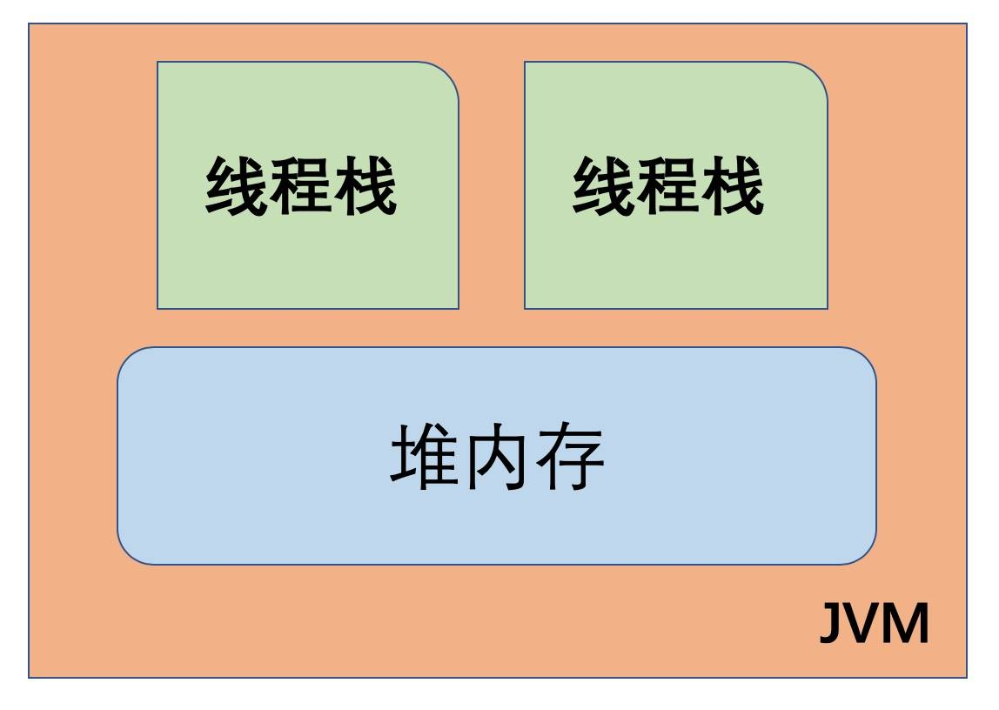
JVM 中，每个正在运行的线程，都有自己的线程栈。 线程栈包含了当前正在执行的方法链/调用链上的所有方法的状态信息。
所以线程栈又被称为“方法栈”或“调用栈”（call stack）。线程在执行代码时，调用栈中的信息会一直在变化。
线程栈里面保存了调用链上正在执行的所有方法中的局部变量。
- 每个线程都只能访问自己的线程栈。
- 每个线程都不能访问(看不见)其他线程的局部变量。
即使两个线程正在执行完全相同的代码，但每个线程都会在自己的线程栈内创建对应代码中声明的局部变量。 所以每个线程都有一份自己的局部变量副本。
- 所有原生类型的局部变量都存储在线程栈中，因此对其他线程是不可见的。
- 线程可以将一个原生变量值的副本传给另一个线程，但不能共享原生局部变量本身。
- 堆内存中包含了 Java 代码中创建的所有对象，不管是哪个线程创建的。 其中也涵盖了包装类型（例如
Byte，Integer，Long等）。 - 不管是创建一个对象并将其赋值给局部变量， 还是赋值给另一个对象的成员变量， 创建的对象都会被保存到堆内存中。
下图演示了线程栈上的调用栈和局部变量，以及存储在堆内存中的对象：
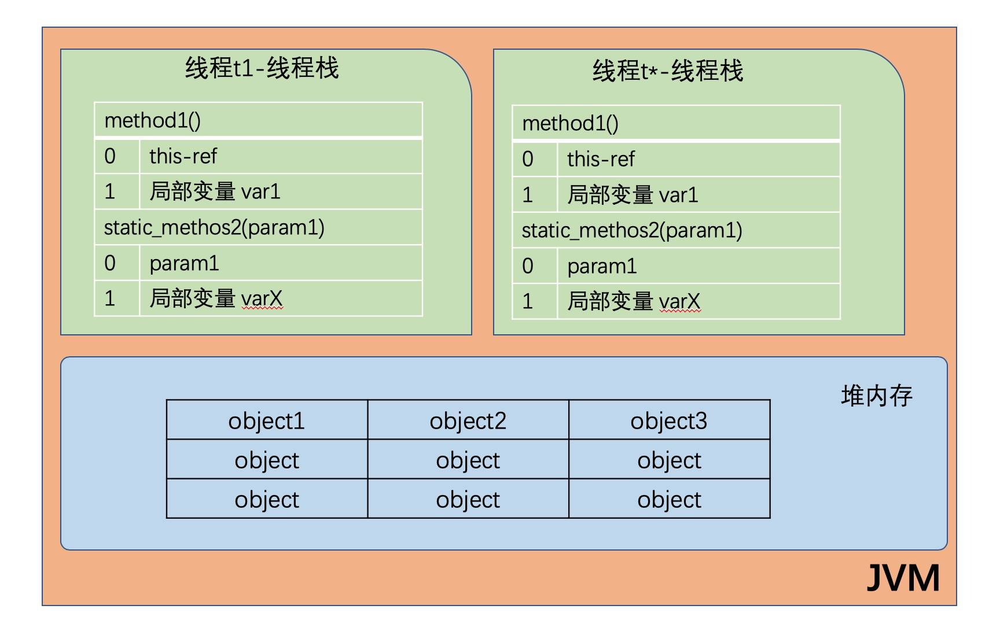
- 如果是原生数据类型的局部变量，那么它的内容就全部保留在线程栈上。
- 如果是对象引用，则栈中的局部变量槽位中保存着对象的引用地址，而实际的对象内容保存在堆中。
- 对象的成员变量与对象本身一起存储在堆上, 不管成员变量的类型是原生数值，还是对象引用。
- 类的静态变量则和类定义一样都保存在堆中。
总结一下：原始数据类型和对象引用地址在栈上；对象、对象成员与类定义、静态变量在堆上。
堆内存又称为“共享堆”，堆中的所有对象，可以被所有线程访问, 只要他们能拿到对象的引用地址。
- 如果一个线程可以访问某个对象时，也就可以访问该对象的成员变量。
- 如果两个线程同时调用某个对象的同一方法，则它们都可以访问到这个对象的成员变量，但每个线程的局部变量副本是独立的。
示意图如下所示：
总结一下：虽然各个线程自己使用的局部变量都在自己的栈上，但是大家可以共享堆上的对象，特别地各个不同线程访问同一个对象实例的基础类型的成员变量，会给每个线程一个变量的副本。
6.2 栈内存的结构
根据以上内容和对 JVM 内存划分的理解，制作了几张逻辑概念图供大家参考。
先看看栈内存(Stack)的大体结构：

每启动一个线程，JVM 就会在栈空间栈分配对应的线程栈, 比如 1MB 的空间（-Xss1m）。
线程栈也叫做 Java 方法栈。 如果使用了 JNI 方法，则会分配一个单独的本地方法栈(Native Stack)。
线程执行过程中，一般会有多个方法组成调用栈(Stack Trace), 比如 A 调用 B，B 调用 C……每执行到一个方法，就会创建对应的栈帧(Frame)。
栈帧是一个逻辑上的概念，具体的大小在一个方法编写完成后基本上就能确定。
比如 返回值 需要有一个空间存放吧，每个局部变量都需要对应的地址空间，此外还有给指令使用的 操作数栈，以及 class 指针(标识这个栈帧对应的是哪个类的方法, 指向非堆里面的 Class 对象）。
6.3 堆内存的结构
Java 程序除了栈内存之外，最主要的内存区域就是堆内存了。

堆内存是所有线程共用的内存空间，理论上大家都可以访问里面的内容。
但 JVM 的具体实现一般会有各种优化。比如将逻辑上的 Java 堆,划分为堆(Heap)和非堆(Non-Heap)两个部分.。这种划分的依据在于，我们编写的 Java 代码，基本上只能使用 Heap 这部分空间，发生内存分配和回收的主要区域也在这部分，所以有一种说法，这里的 Heap 也叫 GC 管理的堆(GC Heap)。
GC 理论中有一个重要的思想，叫做分代。 经过研究发现，程序中分配的对象，要么用过就扔，要么就能存活很久很久。
因此，JVM 将 Heap 内存分为年轻代（Young generation）和老年代（Old generation, 也叫 Tenured）两部分。
年轻代还划分为 3 个内存池，新生代(Eden space)和存活区(Survivor space), 在大部分 GC 算法中有 2 个存活区(S0, S1)，在我们可以观察到的任何时刻，S0 和 S1 总有一个是空的, 但一般较小，也不浪费多少空间。
具体实现对新生代还有优化，那就是 TLAB(Thread Local Allocation Buffer), 给每个线程先划定一小片空间，你创建的对象先在这里分配，满了再换。这能极大降低并发资源锁定的开销。
Non-Heap 本质上还是 Heap，只是一般不归 GC 管理，里面划分为 3 个内存池。
- Metaspace, 以前叫持久代(永久代, Permanent generation), Java8 换了个名字叫 Metaspace. Java8 将方法区移动到了 Meta 区里面，而方法又是class的一部分和 CCS 交叉了?
- CCS, Compressed Class Space, 存放 class 信息的，和 Metaspace 有交叉。
- Code Cache, 存放 JIT 编译器编译后的本地机器代码。
JVM 的内存结构大致如此。 掌握了这些基础知识，我们再来看看 JMM。
6.4 CPU 指令
我们知道，计算机按支持的指令大致可以分为两类：
精简指令集计算机(RISC), 代表是如今大家熟知的 ARM 芯片，功耗低，运算能力相对较弱。复杂指令集计算机(CISC), 代表作是 Intel 的 X86 芯片系列，比如奔腾，酷睿，至强，以及 AMD 的 CPU。特点是性能强劲，功耗高。（实际上从奔腾 4 架构开始，对外是复杂指令集，内部实现则是精简指令集，所以主频才能大幅度提高）
写过程序的人都知道，同样的计算，可以有不同的实现方式。 硬件指令设计同样如此，比如说我们的系统需要实现某种功能，那么复杂点的办法就是在 CPU 中封装一个逻辑运算单元来实现这种的运算，对外暴露一个专用指令。
当然也可以偷懒，不实现这个指令，而是由程序编译器想办法用原有的那些基础的，通用指令来模拟和拼凑出这个功能。那么随着时间的推移，实现专用指令的 CPU 指令集就会越来越复杂, ，被称为复杂指令集。 而偷懒的 CPU 指令集相对来说就会少很多，甚至砍掉了很多指令，所以叫精简指令集计算机。
不管哪一种指令集，CPU 的实现都是采用流水线的方式。如果 CPU 一条指令一条指令地执行，那么很多流水线实际上是闲置的。简单理解，可以类比一个 KFC 的取餐窗口就是一条流水线。于是硬件设计人员就想出了一个好办法： “指令乱序”。 CPU 完全可以根据需要，通过内部调度把这些指令打乱了执行，充分利用流水线资源，只要最终结果是等价的，那么程序的正确性就没有问题。但这在如今多 CPU 内核的时代，随着复杂度的提升，并发执行的程序面临了很多问题。
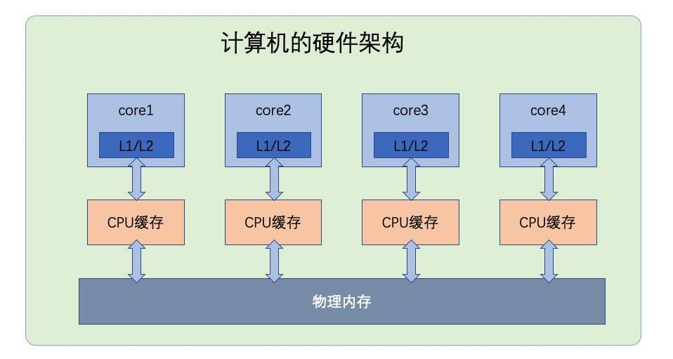
CPU 是多个核心一起执行，同时 JVM 中还有多个线程在并发执行，这种多对多让局面变得异常复杂，稍微控制不好，程序的执行结果可能就是错误的。
6.5 JMM 背景
目前的 JMM 规范对应的是 “JSR-133. Java Memory Model and Thread Specification” ，这个规范的部分内容润色之后就成为了《Java语言规范》的 $17.4. Memory Model章节。可以看到，JSR133 的最终版修订时间是在 2014 年，这是因为之前的 Java 内存模型有些坑，所以在 Java 1.5 版本的时候进行了重新设计，并一直沿用到今天。
JMM 规范明确定义了不同的线程之间，通过哪些方式，在什么时候可以看见其他线程保存到共享变量中的值；以及在必要时，如何对共享变量的访问进行同步。这样的好处是屏蔽各种硬件平台和操作系统之间的内存访问差异，实现了 Java 并发程序真正的跨平台。
随着 Java 在 Web 领域的大规模应用，为了充分利用多核的计算能力，多线程编程越来越受欢迎。这时候就出现很多线程安全方面的问题。想要真正掌握并发程序设计，则必须要理解 Java 内存模型。可以说，我们在 JVM 内存结构中学过的堆内存、栈内存等知识，以及 Java 中的同步、锁、线程等等术语都和JMM 有非常大的关系。
6.6 JMM 简介
JVM 支持程序多线程执行，每个线程是一个 Thread，如果不指定明确的同步措施，那么多个线程在访问同一个共享变量时，就看会发生一些奇怪的问题，比如 A 线程读取了一个变量 a=10，想要做一个只要大于9就减2的操作，同时 B 线程先在 A 线程操作前设置 a=8，其实这时候已经不满足 A 线程的操作条件了，但是 A 线程不知道，依然执行了 a-2，最终 a=6；实际上 a 的正确值应该是 8，这个没有同步的机制在多线程下导致了错误的最终结果。
这样一来，就需要 JMM 定义多线程执行环境下的一些语义问题，也就是定义了哪些方式是允许的。
下面我们简要介绍一下 JMM 规范里有些什么内容。
给定一个程序和该程序的一串执行轨迹，内存模型描述了该执行轨迹是否是该程序的一次合法执行。对于 Java，内存模型检查执行轨迹中的每次读操作，然后根据特定规则，检验该读操作观察到的写是否合法。 内存模型描述了某个程序的可能行为。JVM 实现可以自由地生成想要的代码，只要该程序所有最终执行产生的结果能通过内存模型进行预测。这为大量的代码转换提供了充分的自由，包括动作（action）的重排序以及非必要的同步移除。 内存模型的一个高级、非正式的表述"显示其是一组规则，规定了一个线程的写操作何时会对另一个线程可见"。通俗地说，读操作 r 通常能看到任何写操作 w 写入的值，意味着 w 不是在 r 之后发生，且 w 看起来没有被另一个写操作 w' 覆盖掉（从 r 的角度看）。
JMM 定义了一些术语和规定，大家略有了解即可。
- 能被多个线程共享使用的内存称为“
共享内存”或“堆内存”。 - 所有的对象(包括内部的实例成员变量)，static 变量，以及数组，都必须存放到堆内存中。
- 局部变量，方法的形参/入参，异常处理语句的入参不允许在线程之间共享，所以不受内存模型的影响。
- 多个线程同时对一个变量访问时【读取/写入】，这时候只要有某个线程执行的是写操作，那么这种现象就称之为“冲突”。
- 可以被其他线程影响或感知的操作，称为线程间的交互行为， 可分为： 读取、写入、同步操作、外部操作等等。 其中同步操作包括：对 volatile 变量的读写，对管程(monitor)的锁定与解锁，线程的起始操作与结尾操作，线程启动和结束等等。 外部操作则是指对线程执行环境之外的操作，比如停止其他线程等等。
JMM 规范的是线程间的交互操作，而不管线程内部对局部变量进行的操作。
有兴趣的同学可参阅: ifeve 翻译的: JSR133 中文版.pdf
6.7 内存屏障简介
前面提到了CPU会在合适的时机，按需要对将要进行的操作重新排序，但是有时候这个重排机会导致我们的代码跟预期不一致。
怎么办呢？JMM 引入了内存屏障机制。
内存屏障可分为读屏障和写屏障，用于控制可见性。 常见的 内存屏障 包括：
#LoadLoad
#StoreStore
#LoadStore
#StoreLoad
这些屏障的主要目的，是用来短暂屏蔽 CPU 的指令重排序功能。 和 CPU 约定好，看见这些指令时，就要保证这个指令前后的相应操作不会被打乱。
- 比如看见
#LoadLoad, 那么屏障前面的 Load 指令就一定要先执行完，才能执行屏障后面的 Load 指令。 - 比如我要先把 a 值写到 A 字段中，然后再将 b 值写到 B 字段对应的内存地址。如果要严格保障这个顺序,那么就可以在这两个 Store 指令之间加入一个
#StoreStore屏障。 - 遇到
#LoadStore屏障时, CPU 自废武功，短暂屏蔽掉指令重排序功能。 #StoreLoad屏障, 能确保屏障之前执行的所有 store 操作，都对其他处理器可见; 在屏障后面执行的 load 指令, 都能取得到最新的值。换句话说, 有效阻止屏障之前的 store 指令，与屏障之后的 load 指令乱序 、即使是多核心处理器，在执行这些操作时的顺序也是一致的。
代价最高的是 #StoreLoad 屏障, 它同时具有其他几类屏障的效果，可以用来代替另外三种内存屏障。
如何理解呢?
就是只要有一个 CPU 内核收到这类指令，就会做一些操作，同时发出一条广播, 给某个内存地址打个标记，其他 CPU 内核与自己的缓存交互时，就知道这个缓存不是最新的，需要从主内存重新进行加载处理。
小结
本节我们讲解了JMM的一系列知识，让大家能够了解Java的内存模型，包括：
- JVM 的内存区域分为:
堆内存和栈内存； - 堆内存的实现可分为两部分:
堆(Heap)和非堆(Non-Heap); - 堆主要由 GC 负责管理，按分代的方式一般分为: 老年代+年轻代；年轻代=新生代+存活区；
- CPU 有一个性能提升的利器:
指令重排序； - JMM 规范对应的是 JSR133, 现在由 Java 语言规范和 JVM 规范来维护；
- 内存屏障的分类与作用。
参考链接
08 JVM 启动参数详解：博观而约取、厚积而薄发
JVM 作为一个通用的虚拟机，我们可以通过启动 Java 命令时指定不同的 JVM 参数，让 JVM 调整自己的运行状态和行为，内存管理和垃圾回收的 GC 算法，添加和处理调试和诊断信息等等。本节概括地讲讲 JVM 参数，对于 GC 相关的详细参数将在后续的 GC 章节说明和分析。
直接通过命令行启动 Java 程序的格式为:
java [options] classname [args]
java [options] -jar filename [args]
其中:
[options]部分称为 "JVM 选项",对应 IDE 中的 VM options, 可用jps -v查看。[args]部分是指 "传给main函数的参数", 对应 IDE 中的 Program arguments, 可用jps -m查看。
如果是使用 Tomcat 之类自带 startup.sh 等启动脚本的程序，我们一般把相关参数都放到一个脚本定义的 JAVA_OPTS 环境变量中，最后脚本启动 JVM 时会把 JAVA_OPTS 变量里的所有参数都加到命令的合适位置。
如果是在 IDEA 之类的 IDE 里运行的话，则可以在“Run/Debug Configurations”里看到 VM 选项和程序参数两个可以输入参数的地方，直接输入即可。
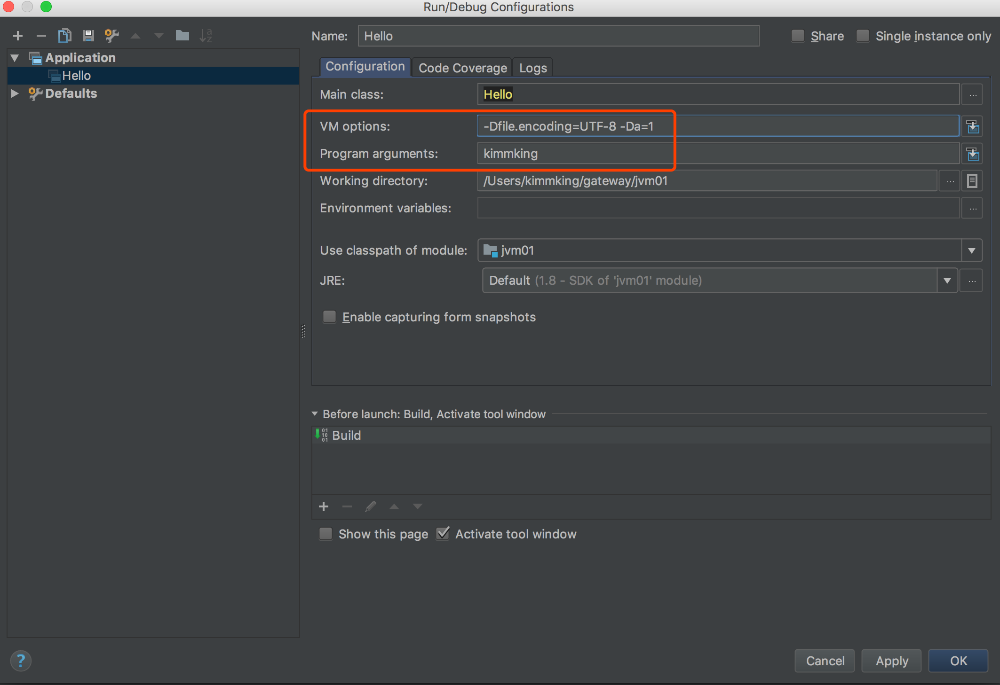
上图输入了两个 VM 参数，都是环境变量，一个是指定文件编码使用 UTF-8，一个是设置了环境变量 a 的值为 1。
Java 和 JDK 内置的工具，指定参数时都是一个 -，不管是长参数还是短参数。有时候，JVM 启动参数和 Java 程序启动参数，并没必要严格区分，大致知道都是一个概念即可。
JVM 的启动参数, 从形式上可以简单分为：
- 以
-开头为标准参数，所有的 JVM 都要实现这些参数，并且向后兼容。 - 以
-X开头为非标准参数， 基本都是传给 JVM 的，默认 JVM 实现这些参数的功能，但是并不保证所有 JVM 实现都满足，且不保证向后兼容。 - 以
-XX:开头为非稳定参数, 专门用于控制 JVM 的行为，跟具体的 JVM 实现有关，随时可能会在下个版本取消。 -XX:+-Flags形式,+-是对布尔值进行开关。-XX:key=value形式, 指定某个选项的值。
实际上，直接在命令行输入 java，然后回车，就会看到 java 命令可以其使用的参数列表说明：
$ java
用法: java [-options] class [args...]
(执行类)
或 java [-options] -jar jarfile [args...]
(执行 jar 文件)
其中选项包括:
-d32 使用 32 位数据模型 (如果可用)
-d64 使用 64 位数据模型 (如果可用)
-server 选择 "server" VM
默认 VM 是 server,
因为您是在服务器类计算机上运行。
-cp <目录和 zip/jar 文件的类搜索路径>
-classpath <目录和 zip/jar 文件的类搜索路径>
用 : 分隔的目录, JAR 档案
和 ZIP 档案列表, 用于搜索类文件。
-D<名称>=<值>
设置系统属性
-verbose:[class|gc|jni]
启用详细输出
-version 输出产品版本并退出
-version:<值>
警告: 此功能已过时, 将在
未来发行版中删除。
需要指定的版本才能运行
-showversion 输出产品版本并继续
-jre-restrict-search | -no-jre-restrict-search
警告: 此功能已过时, 将在
未来发行版中删除。
在版本搜索中包括/排除用户专用 JRE
-? -help 输出此帮助消息
-X 输出非标准选项的帮助
-ea[:<packagename>...|:<classname>]
-enableassertions[:<packagename>...|:<classname>]
按指定的粒度启用断言
-da[:<packagename>...|:<classname>]
-disableassertions[:<packagename>...|:<classname>]
禁用具有指定粒度的断言
-esa | -enablesystemassertions
启用系统断言
-dsa | -disablesystemassertions
禁用系统断言
-agentlib:<libname>[=<选项>]
加载本机代理库 <libname>, 例如 -agentlib:hprof
另请参阅 -agentlib:jdwp=help 和 -agentlib:hprof=help
-agentpath:<pathname>[=<选项>]
按完整路径名加载本机代理库
-javaagent:<jarpath>[=<选项>]
加载 Java 编程语言代理, 请参阅 java.lang.instrument
-splash:<imagepath>
使用指定的图像显示启动屏幕
有关详细信息, 请参阅 http://www.oracle.com/technetwork/java/javase/documentation/index.html。
7.1 设置系统属性
当我们给一个 Java 程序传递参数，最常用的方法有两种：
- 系统属性，有时候也叫环境变量，例如直接给 JVM 传递指定的系统属性参数，需要使用
-Dkey=value这种形式，此时如果系统的环境变量里不管有没有指定这个参数，都会以这里的为准。 - 命令行参数，直接通过命令后面添加的参数，比如运行 Hello 类，同时传递 2 个参数 kimm、king：
java Hello kimm king，然后在Hello类的 main 方法的参数里可以拿到一个字符串的参数数组，有两个字符串，kimm 和 king。
比如我们常见的设置 $JAVA_HOME 就是一个环境变量，只要在当前命令执行的上下文里有这个环境变量，就可以在启动的任意程序里，通过相关 API 拿到这个参数，比如 Java 里：
System.getProperty("key")来获取这个变量的值，这样就可以做到多个不同的应用进程可以共享这些变量，不用每个都重复设置，也可以实现简化 Java 命令行的长度（想想要是配置了 50 个参数多恐怖，放到环境变量里，可以简化启动输入的字符）。此外，由于环境变量的 key-value 的形式，所以不管是环境上下文里配置的，还是通过运行时-D来指定，都可以不在意参数的顺序，而命令行参数就必须要注意顺序，顺序错误就会导致程序错误。
例如指定随机数熵源(Entropy Source)，示例:
JAVA_OPTS="-Djava.security.egd=file:/dev/./urandom"
此外还有一些常见设置：
-Duser.timezone=GMT+08 // 设置用户的时区为东八区
-Dfile.encoding=UTF-8 // 设置默认的文件编码为UTF-8
查看默认的所有系统属性，可以使用命令：
$ java -XshowSettings:properties -version
Property settings:
awt.toolkit = sun.lwawt.macosx.LWCToolkit
file.encoding = UTF-8
file.encoding.pkg = sun.io
file.separator = /
gopherProxySet = false
java.awt.graphicsenv = sun.awt.CGraphicsEnvironment
java.awt.printerjob = sun.lwawt.macosx.CPrinterJob
java.class.path = .
java.class.version = 52.0
...... 省略了几十行
同样可以查看 VM 设置：
$ java -XshowSettings:vm -version
VM settings:
Max. Heap Size (Estimated): 1.78G
Ergonomics Machine Class: server
Using VM: Java HotSpot(TM) 64-Bit Server VM
......
查看当前 JDK/JRE 的默认显示语言设置：
java -XshowSettings:locale -version
Locale settings:
default locale = 中文
default display locale = 中文 (中国)
default format locale = 英文 (中国)
available locales = , ar, ar_AE, ar_BH, ar_DZ, ar_EG, ar_IQ, ar_JO,
ar_KW, ar_LB, ar_LY, ar_MA, ar_OM, ar_QA, ar_SA, ar_SD,
......
还有常见的，我们使用 mvn 脚本去执行编译的同时，如果不想编译和执行单元测试代码：
$ mvn package -Djava.test.skip=true
或者
$ mvn package -DskipTests
等等，很多地方会用设置系统属性的方式去传递数据给Java程序，而不是直接用程序参数的方式。
7.2 Agent 相关的选项
Agent 是 JVM 中的一项黑科技, 可以通过无侵入方式来做很多事情，比如注入 AOP 代码，执行统计等等，权限非常大。这里简单介绍一下配置选项，详细功能在后续章节会详细讲。
设置 agent 的语法如下:
-agentlib:libname[=options]启用native方式的agent, 参考LD_LIBRARY_PATH路径。-agentpath:pathname[=options]启用native方式的agent。-javaagent:jarpath[=options]启用外部的agent库, 比如pinpoint.jar等等。-Xnoagent则是禁用所有 agent。
以下示例开启 CPU 使用时间抽样分析:
JAVA_OPTS="-agentlib:hprof=cpu=samples,file=cpu.samples.log"
其中 hprof 是 JDK 内置的一个性能分析器。cpu=samples 会抽样在各个方法消耗的时间占比, Java 进程退出后会将分析结果输出到文件。
7.3 JVM 运行模式
JVM 有两种运行模式：
-server：设置 jvm 使 server 模式，特点是启动速度比较慢，但运行时性能和内存管理效率很高，适用于生产环境。在具有 64 位能力的 jdk 环境下将默认启用该模式，而忽略 -client 参数。-client：JDK1.7 之前在 32 位的 x86 机器上的默认值是-client选项。设置 jvm 使用 client 模式，特点是启动速度比较快，但运行时性能和内存管理效率不高，通常用于客户端应用程序或者PC应用开发和调试。
此外，我们知道 JVM 加载字节码后，可以解释执行，也可以编译成本地代码再执行，所以可以配置 JVM 对字节码的处理模式：
-Xint：在解释模式（interpreted mode）下，-Xint 标记会强制 JVM 解释执行所有的字节码，这当然会降低运行速度，通常低 10 倍或更多。-Xcomp：-Xcomp 参数与 -Xint 正好相反，JVM 在第一次使用时会把所有的字节码编译成本地代码，从而带来最大程度的优化。-Xmixed：-Xmixed 是混合模式，将解释模式和变异模式进行混合使用，有 JVM 自己决定，这是 JVM 的默认模式，也是推荐模式。 我们使用java -version可以看到mixed mode等信息。
示例:
JAVA_OPTS="-server"
7.4 设置堆内存
JVM 的内存设置是最重要的参数设置，也是 GC 分析和调优的重点。
JVM 总内存=堆+栈+非堆+堆外内存。
相关的参数：
-Xmx, 指定最大堆内存。 如-Xmx4g. 这只是限制了 Heap 部分的最大值为 4g。这个内存不包括栈内存，也不包括堆外使用的内存。-Xms, 指定堆内存空间的初始大小。 如-Xms4g。 而且指定的内存大小，并不是操作系统实际分配的初始值，而是 GC 先规划好，用到才分配。 专用服务器上需要保持-Xms和-Xmx一致，否则应用刚启动可能就有好几个 FullGC。当两者配置不一致时，堆内存扩容可能会导致性能抖动。-Xmn, 等价于-XX:NewSize，使用 G1 垃圾收集器 不应该 设置该选项，在其他的某些业务场景下可以设置。官方建议设置为-Xmx的1/2 ~ 1/4。-XX:MaxPermSize=size, 这是 JDK1.7 之前使用的。Java8 默认允许的 Meta 空间无限大，此参数无效。-XX:MaxMetaspaceSize=size, Java8 默认不限制 Meta 空间, 一般不允许设置该选项。XX:MaxDirectMemorySize=size，系统可以使用的最大堆外内存，这个参数跟-Dsun.nio.MaxDirectMemorySize效果相同。-Xss, 设置每个线程栈的字节数。 例如-Xss1m指定线程栈为 1MB，与-XX:ThreadStackSize=1m等价
这里要特别说一下堆外内存，也就是说不在堆上的内存，我们可以通过jconsole，jvisualvm 等工具查看。
RednaxelaFX 提到：
一个 Java 进程里面，可以分配 native memory 的东西有很多，特别是使用第三方 native 库的程序更是如此。
但在这里面除了
- GC heap = Java heap + Perm Gen（JDK <= 7）
- Java thread stack = Java thread count * Xss
- other thread stack = other thread count * stack size
- CodeCache 等东西之外
还有诸如 HotSpot VM 自己的 StringTable、SymbolTable、SystemDictionary、CardTable、HandleArea、JNIHandleBlock 等许多数据结构是常驻内存的，外加诸如 JIT 编译器、GC 等在工作的时候都会额外临时分配一些 native memory，这些都是 HotSpot VM自己所分配的 native memory；在 JDK 类库实现中也有可能有些功能分配长期存活或者临时的 native memory。
然后就是各种第三方库的 native 部分分配的 native memory。
“Direct Memory”，一般来说是 Java NIO 使用的 Direct-X-Buffer（例如 DirectByteBuffer）所分配的 native memory，这个地方如果我们使用 netty 之类的框架，会产生大量的堆外内存。
示例:
JAVA_OPTS="-Xms28g -Xmx28g"
最佳实践
配置多少 xmx 合适
从上面的分析可以看到，系统有大量的地方使用堆外内存，远比我们常说的 xmx 和 xms 包括的范围要广。所以我们需要在设置内存的时候留有余地。
实际上，我个人比较推荐配置系统或容器里可用内存的 70-80% 最好。比如说系统有 8G 物理内存，系统自己可能会用掉一点，大概还有 7.5G 可以用，那么建议配置
-Xmx6g 说明：xmx : 7.5G*0.8 = 6G，如果知道系统里有明确使用堆外内存的地方，还需要进一步降低这个值。
举个具体例子，我在过去的几个不同规模，不同发展时期，不同研发成熟度的公司研发团队，都发现过一个共同的 JVM 问题，就是线上经常有JVM实例突然崩溃，这个过程也许是三天，也可能是 2 周，异常信息也很明确，就是内存溢出 OOM。
运维人员不断加大堆内存或者云主机的物理内存，也无济于事，顶多让这个过程延缓。
大家怀疑内存泄露，但是看 GC 日志其实一直还挺正常，系统在性能测试环境也没什么问题，开发和运维还因此不断地发生矛盾和冲突。
其中有个运维同事为了缓解问题，通过一个多月的观察，持续地把一个没什么压力的服务器从 2 台逐渐扩展了 15 台，因为每天都有几台随机崩溃，他需要在系统通知到他去处理的这段时间，保证其他机器可以持续提供服务。
大家付出了很多努力，做了一些技术上的探索，还想了不少的歪招，但是没有解决问题，也就是说没有创造价值。
后来我去深入了解一下，几分钟就解决了问题，创造了技术的价值，把服务器又压缩回 2 台就可以保证系统稳定运行，业务持续可用了，降低成本带来的价值，也得到业务方和客户认可。
那么实际问题出在哪儿呢？一台云主机 4G 或 8G 内存，为了让 JVM 最大化的使用内存，服务部署的同事直接配置了xmx4g 或 xmx8g。因为他不知道 xmx 配置的内存和 JVM 可能使用的最大内存是不相等的。我让他把 8G 内存的云主机，设置 xmx6g，再也没出过问题，而且让他观察看到在 Java 进程最多的时候 JVM 进程使用了 7G 出头的内存（堆最多用 6g， java 进程自身、堆外空间都需要使用内存，这些内存不在 xmx 的范围内），而不包含 xmx 设置的 6g 内存内。
xmx 和 xms 是不是要配置成一致的
一般情况下，我们的服务器是专用的，就是一个机器（也可能是云主机或 docker 容器）只部署一个 Java 应用，这样的时候建议配置成一样的，好处是不会再动态去分配，如果内存不足（像上面的情况）上来就知道。
7.5 GC 日志相关的参数
在生产环境或性能压测环境里，我们用来分析和判断问题的重要数据来源之一就是 GC 日志，JVM 启动参数为我们提供了一些用于控制 GC 日志输出的选项。
-verbose:gc：和其他 GC 参数组合使用, 在 GC 日志中输出详细的GC信息。 包括每次 GC 前后各个内存池的大小，堆内存的大小，提升到老年代的大小，以及消耗的时间。此参数支持在运行过程中动态开关。比如使用 jcmd, jinfo， 以及使用 JMX 技术的其他客户端。-XX:+PrintGCDetails和-XX:+PrintGCTimeStamps：打印 GC 细节与发生时间。请关注我们后续的 GC 课程章节。-Xloggc:file：与-verbose:gc功能类似，只是将每次 GC 事件的相关情况记录到一个文件中，文件的位置最好在本地，以避免网络的潜在问题。若与 verbose:gc 命令同时出现在命令行中，则以 -Xloggc 为准。
示例:
export JAVA_OPTS="-Xms28g -Xmx28g -Xss1m \
-verbosegc -XX:+UseG1GC -XX:MaxGCPauseMillis=200 \
-XX:+HeapDumpOnOutOfMemoryError -XX:HeapDumpPath=/usr/local/"
7.6 指定垃圾收集器相关参数
垃圾回收器是 JVM 性能分析和调优的核心内容之一，也是近几个 JDK 版本大力发展和改进的地方。通过不同的 GC 算法和参数组合，配合其他调优手段，我们可以把系统精确校验到性能最佳状态。
以下参数指定具体的垃圾收集器，详细情况会在第二部分讲解：
-XX:+UseG1GC：使用 G1 垃圾回收器-XX:+UseConcMarkSweepGC：使用 CMS 垃圾回收器-XX:+UseSerialGC：使用串行垃圾回收器-XX:+UseParallelGC：使用并行垃圾回收器
7.7 特殊情况执行脚本的参数
除了上面介绍的一些 JVM 参数，还有一些用于出现问题时提供诊断信息之类的参数。
-XX:+-HeapDumpOnOutOfMemoryError选项, 当OutOfMemoryError产生，即内存溢出(堆内存或持久代)时，自动 Dump 堆内存。 因为在运行时并没有什么开销, 所以在生产机器上是可以使用的。 示例用法:java -XX:+HeapDumpOnOutOfMemoryError -Xmx256m ConsumeHeap
java.lang.OutOfMemoryError: Java heap space
Dumping heap to java_pid2262.hprof ...
......
-XX:HeapDumpPath选项, 与HeapDumpOnOutOfMemoryError搭配使用, 指定内存溢出时 Dump 文件的目录。 如果没有指定则默认为启动 Java 程序的工作目录。 示例用法:java -XX:+HeapDumpOnOutOfMemoryError -XX:HeapDumpPath=/usr/local/ ConsumeHeap自动 Dump 的 hprof 文件会存储到/usr/local/目录下。-XX:OnError选项, 发生致命错误时(fatal error)执行的脚本。 例如, 写一个脚本来记录出错时间, 执行一些命令, 或者 curl 一下某个在线报警的url. 示例用法:java -XX:OnError="gdb - %p" MyApp可以发现有一个%p的格式化字符串，表示进程 PID。-XX:OnOutOfMemoryError选项, 抛出 OutOfMemoryError 错误时执行的脚本。-XX:ErrorFile=filename选项, 致命错误的日志文件名，绝对路径或者相对路径。
本节只简要的介绍一下 JVM 参数，其实还有大量的参数跟 GC 垃圾收集器有关系，将会在第二部分进行详细的解释和分析。
参考资料
- 如何比较准确地估算一个Java进程到底申请了多大的Direct Memory？：https://www.zhihu.com/question/55033583/answer/142577881
- 最全的官方JVM参数清单：https://www.oracle.com/technetwork/java/javase/tech/vmoptions-jsp-140102.html
09 JDK 内置命令行工具：工欲善其事，必先利其器
很多情况下，JVM 运行环境中并没有趁手的工具，所以掌握基本的内置工具是一项基本功。
JDK 自带的工具和程序可以分为 2 大类型：
- 开发工具
- 诊断分析工具
JDK 内置的开发工具
写过 Java 程序的同学，对 JDK 中的开发工具应该比较熟悉。 下面列举常用的部分：
| 工具 | 简介 |
|---|---|
| java | Java 应用的启动程序 |
| javac | JDK 内置的编译工具 |
| javap | 反编译 class 文件的工具 |
| javadoc | 根据 Java 代码和标准注释，自动生成相关的 API 说明文档 |
| javah | JNI 开发时，根据 Java 代码生成需要的 .h 文件。 |
| extcheck | 检查某个 jar 文件和运行时扩展 jar 有没有版本冲突，很少使用 |
| jdb | Java Debugger 可以调试本地和远端程序，属于 JPDA 中的一个 Demo 实现，供其他调试器参考。开发时很少使用 |
| jdeps | 探测 class 或 jar 包需要的依赖 |
| jar | 打包工具，可以将文件和目录打包成为 .jar 文件；.jar 文件本质上就是 zip 文件，只是后缀不同。使用时按顺序对应好选项和参数即可。 |
| keytool | 安全证书和密钥的管理工具（支持生成、导入、导出等操作） |
| jarsigner | jar 文件签名和验证工具 |
| policytool | 实际上这是一款图形界面工具，管理本机的 Java 安全策略 |
开发工具此处不做详细介绍，有兴趣的同学请参考文末的链接。
下面介绍诊断和分析工具。
命令行诊断和分析工具
JDK 内置了各种命令行工具，条件受限时我们可以先用命令行工具快速查看 JVM 实例的基本情况。
macOS X、Windows 系统的某些账户权限不够，有些工具可能会报错/失败，假如出问题了请排除这个因素。
JPS 工具简介
我们知道，操作系统提供一个工具叫做 ps，用于显示进程状态（Process Status）。
Java也 提供了类似的命令行工具，叫做 JPS，用于展示 Java 进程信息（列表）。
需要注意的是，JPS 展示的是当前用户可看见的 Java 进程，如果看不见某些进程可能需要 sudo、su 之类的命令来切换权限。
查看帮助信息：
$
jps -help
usage: jps [-help]
jps [-q] [-mlvV] [<hostid>]
Definitions:
<hostid>: <hostname>[:<port>]
可以看到， 这些参数分为了多个组，-help、-q、-mlvV， 同一组可以共用一个 -。
常用参数是小写的 -v，显示传递给 JVM 的启动参数。
$
jps -v
15883 Jps -Dapplication.home=/usr/local/jdk1.8.0_74 -Xms8m
6446 Jstatd -Dapplication.home=/usr/local/jdk1.8.0_74 -Xms8m
-Djava.security.policy=/etc/java/jstatd.all.policy
32383 Bootstrap -Xmx4096m -XX:+UseG1GC -verbose:gc
-XX:+PrintGCDateStamps -XX:+PrintGCDetails
-Xloggc:/xxx-tomcat/logs/gc.log
-Dcatalina.base=/xxx-tomcat -Dcatalina.home=/data/tomcat
看看输出的内容，其中最重要的信息是前面的进程 ID（PID）。
其他参数不太常用：
-q：只显示进程号。-m：显示传给 main 方法的参数信息-l：显示启动 class 的完整类名，或者启动 jar 的完整路径-V：大写的 V，这个参数有问题，相当于没传一样。官方说的跟-q差不多。<hostid>：部分是远程主机的标识符，需要远程主机启动jstatd服务器支持。
可以看到，格式为 <hostname>[:<port>]，不能用 IP，示例：jps -v sample.com:1099。
知道 JVM 进程的 PID 之后，就可以使用其他工具来进行诊断了。
jstat 工具简介
jstat 用来监控 JVM 内置的各种统计信息，主要是内存和 GC 相关的信息。
查看 jstat 的帮助信息，大致如下：
$
jstat -help
Usage: jstat -help|-options
jstat -<option> [-t] [-h<lines>] <vmid> [<interval> [<count>]]
Definitions:
<option> 可用的选项，查看详情请使用 -options
<vmid> 虚拟机标识符，格式：<lvmid>[@<hostname>[:<port>]]
<lines> 标题行间隔的频率.
<interval> 采样周期，<n>["ms"|"s"]，默认单位是毫秒 "ms"
<count> 采用总次数
-J<flag> 传给jstat底层JVM的 <flag> 参数
再来看看 <option> 部分支持哪些选项：
$
jstat -options
-class
-compiler
-gc
-gccapacity
-gccause
-gcmetacapacity
-gcnew
-gcnewcapacity
-gcold
-gcoldcapacity
-gcutil
-printcompilation
简单说明这些选项，不感兴趣可以跳着读。
-class：类加载（Class loader）信息统计。-compiler：JIT 即时编译器相关的统计信息。-gc：GC 相关的堆内存信息，用法：jstat -gc -h 10 -t 864 1s 20。-gccapacity：各个内存池分代空间的容量。-gccause：看上次 GC、本次 GC（如果正在 GC 中）的原因，其他输出和-gcutil选项一致。-gcnew：年轻代的统计信息（New = Young = Eden + S0 + S1）。-gcnewcapacity：年轻代空间大小统计。-gcold：老年代和元数据区的行为统计。-gcoldcapacity：old 空间大小统计。-gcmetacapacity：meta 区大小统计。-gcutil：GC 相关区域的使用率（utilization）统计。-printcompilation：打印 JVM 编译统计信息。
实例：
jstat -gcutil -t 864
-gcutil 选项是统计 GC 相关区域的使用率（utilization），结果如下：
| Timestamp | S0 | S1 | E | O | M | CCS | YGC | YGCT | FGC | FGCT | GCT |
|---|---|---|---|---|---|---|---|---|---|---|---|
| 14251645.5 | 0.00 | 13.50 | 55.05 | 71.91 | 83.84 | 69.52 | 113767 | 206.036 | 4 | 0.122 | 206.158 |
-t 选项的位置是固定的，不能在前也不能在后。可以看出是用于显示时间戳，即 JVM 启动到现在的秒数。
简单分析一下：
- Timestamp 列：JVM 启动了 1425 万秒，大约 164 天。
- S0：就是 0 号存活区的百分比使用率。0% 很正常，因为 S0 和 S1 随时有一个是空的。
- S1：就是 1 号存活区的百分比使用率。
- E：就是 Eden 区，新生代的百分比使用率。
- O：就是 Old 区，老年代。百分比使用率。
- M：就是 Meta 区，元数据区百分比使用率。
- CCS：压缩 class 空间（Compressed class space）的百分比使用率。
- YGC（Young GC）：年轻代 GC 的次数。11 万多次，不算少。
- YGCT 年轻代 GC 消耗的总时间。206 秒，占总运行时间的万分之一不到，基本上可忽略。
- FGC：FullGC 的次数，可以看到只发生了 4 次，问题应该不大。
- FGCT：FullGC 的总时间，0.122 秒，平均每次 30ms 左右，大部分系统应该能承受。
- GCT：所有 GC 加起来消耗的总时间，即 YGCT + FGCT。
可以看到，-gcutil 这个选项出来的信息不太好用，统计的结果是百分比，不太直观。
再看看 -gc 选项，GC 相关的堆内存信息。
jstat -gc -t 864 1s
jstat -gc -t 864 1s 3
jstat -gc -t -h 10 864 1s 15
其中的 1s 占了 <interval> 这个槽位，表示每 1 秒输出一次信息。
1s 3 的意思是每秒输出 1 次，最多 3 次。
如果只指定刷新周期，不指定 <count> 部分，则会一直持续输出。 退出输出按 CTRL+C 即可。
-h 10 的意思是每 10 行输出一次表头。
结果大致如下：
| Timestamp | S0C | S1C | S0U | S1U | EC | EU | OC | OU | MC | MU | YGC | YGCT | FGC | FGCT |
|---|---|---|---|---|---|---|---|---|---|---|---|---|---|---|
| 14254245.3 | 1152.0 | 1152.0 | 145.6 | 0.0 | 9600.0 | 2312.8 | 11848.0 | 8527.3 | 31616.0 | 26528.6 | 113788 | 206.082 | 4 | 0.122 |
| 14254246.3 | 1152.0 | 1152.0 | 145.6 | 0.0 | 9600.0 | 2313.1 | 11848.0 | 8527.3 | 31616.0 | 26528.6 | 113788 | 206.082 | 4 | 0.122 |
| 14254247.3 | 1152.0 | 1152.0 | 145.6 | 0.0 | 9600.0 | 2313.4 | 11848.0 | 8527.3 | 31616.0 | 26528.6 | 113788 | 206.082 | 4 | 0.122 |
上面的结果是精简过的，为了排版去掉了 GCT、CCSC、CCSU 这三列。看到这些单词可以试着猜一下意思，详细的解读如下：
- Timestamp 列：JVM 启动了 1425 万秒，大约 164 天。
- S0C：0 号存活区的当前容量（capacity），单位 kB。
- S1C：1 号存活区的当前容量，单位 kB。
- S0U：0 号存活区的使用量（utilization），单位 kB。
- S1U：1 号存活区的使用量，单位 kB。
- EC：Eden 区，新生代的当前容量，单位 kB。
- EU：Eden 区，新生代的使用量，单位 kB。
- OC：Old 区，老年代的当前容量，单位 kB。
- OU：Old 区，老年代的使用量，单位 kB。 （需要关注）
- MC：元数据区的容量，单位 kB。
- MU：元数据区的使用量，单位 kB。
- CCSC：压缩的 class 空间容量，单位 kB。
- CCSU：压缩的 class 空间使用量，单位 kB。
- YGC：年轻代 GC 的次数。
- YGCT：年轻代 GC 消耗的总时间。 （重点关注）
- FGC：Full GC 的次数
- FGCT：Full GC 消耗的时间。 （重点关注）
- GCT：垃圾收集消耗的总时间。
最重要的信息是 GC 的次数和总消耗时间，其次是老年代的使用量。
在没有其他监控工具的情况下， jstat 可以简单查看各个内存池和 GC 的信息，可用于判别是否是 GC 问题或者内存溢出。
jmap 工具
面试最常问的就是 jmap 工具了。jmap 主要用来 Dump 堆内存。当然也支持输出统计信息。
官方推荐使用 JDK 8 自带的 jcmd 工具来取代 jmap，但是 jmap 深入人心，jcmd 可能暂时取代不了。
查看 jmap 帮助信息：
$
jmap -help
Usage:
jmap [option] <pid>
(连接到本地进程)
jmap [option] <executable <core>
(连接到 core file)
jmap [option] [server_id@]<remote-IP-hostname>
(连接到远程 debug 服务)
where <option> is one of:
<none> 等同于 Solaris 的 pmap 命令
-heap 打印 Java 堆内存汇总信息
-histo[:live] 打印 Java 堆内存对象的直方图统计信息
如果指定了 "live" 选项则只统计存活对象，强制触发一次 GC
-clstats 打印 class loader 统计信息
-finalizerinfo 打印等待 finalization 的对象信息
-dump:<dump-options> 将堆内存 dump 为 hprof 二进制格式
支持的 dump-options：
live 只 dump 存活对象，不指定则导出全部。
format=b 二进制格式(binary format)
file=<file> 导出文件的路径
示例：jmap -dump:live,format=b,file=heap.bin <pid>
-F 强制导出，若 jmap 被 hang 住不响应，可断开后使用此选项。
其中 "live" 选项不支持强制导出。
-h | -help to print this help message
-J<flag> to pass <flag> directly to the runtime system
常用选项就 3 个：
-heap：打印堆内存（/内存池）的配置和使用信息。-histo：看哪些类占用的空间最多，直方图。-dump:format=b,file=xxxx.hprof：Dump 堆内存。
示例：看堆内存统计信息。
$
jmap -heap 4524
输出信息：
Attaching to process ID 4524, please wait...
Debugger attached successfully.
Server compiler detected.
JVM version is 25.65-b01
using thread-local object allocation.
Parallel GC with 4 thread(s)
Heap Configuration:
MinHeapFreeRatio = 0
MaxHeapFreeRatio = 100
MaxHeapSize = 2069889024 (1974.0MB)
NewSize = 42991616 (41.0MB)
MaxNewSize = 689963008 (658.0MB)
OldSize = 87031808 (83.0MB)
NewRatio = 2
SurvivorRatio = 8
MetaspaceSize = 21807104 (20.796875MB)
CompressedClassSpaceSize = 1073741824 (1024.0MB)
MaxMetaspaceSize = 17592186044415 MB
G1HeapRegionSize = 0 (0.0MB)
Heap Usage:
PS Young Generation
Eden Space:
capacity = 24117248 (23.0MB)
used = 11005760 (10.49591064453125MB)
free = 13111488 (12.50408935546875MB)
45.63439410665761% used
From Space:
capacity = 1048576 (1.0MB)
used = 65536 (0.0625MB)
free = 983040 (0.9375MB)
6.25% used
To Space:
capacity = 1048576 (1.0MB)
used = 0 (0.0MB)
free = 1048576 (1.0MB)
0.0% used
PS Old Generation
capacity = 87031808 (83.0MB)
used = 22912000 (21.8505859375MB)
free = 64119808 (61.1494140625MB)
26.32600715361446% used
12800 interned Strings occupying 1800664 bytes.
- Attached，连着；
- Detached，分离。
可以看到堆内存和内存池的相关信息。当然，这些信息有多种方式可以得到，比如 JMX。
看看直方图：
$
jmap -histo 4524
结果为：
num #instances #bytes class name
----------------------------------------------
1: 52214 11236072 [C
2: 126872 5074880 java.util.TreeMap$Entry
3: 5102 5041568 [B
4: 17354 2310576 [I
5: 45258 1086192 java.lang.String
......
简单分析，其中 [C 占用了 11MB 内存，没占用什么空间。
[C 表示 chat[]，[B 表示 byte[]，[I 表示 int[]，其他类似。这种基础数据类型很难分析出什么问题。
Java 中的大对象、巨无霸对象，一般都是长度很大的数组。
Dump 堆内存：
cd $CATALINA_BASE
jmap -dump:format=b,file=3826.hprof 3826
导出完成后，dump 文件大约和堆内存一样大。可以想办法压缩并传输。
分析 hprof 文件可以使用 jhat 或者 mat 工具。
jcmd 工具
诊断工具：jcmd 是 JDK 8 推出的一款本地诊断工具，只支持连接本机上同一个用户空间下的 JVM 进程。
查看帮助：
$
jcmd -help
Usage: jcmd <pid | main class> <command ...|PerfCounter.print|-f file>
or: jcmd -l
or: jcmd -h
command 必须是指定 JVM 可用的有效 jcmd 命令。
可以使用 "help" 命令查看该 JVM 支持哪些命令。
如果指定 pid 部分的值为 0，则会将 commands 发送给所有可见的 Java 进程。
指定 main class 则用来匹配启动类。可以部分匹配。（适用同一个类启动多实例）。
If no options are given, lists Java processes (same as -p).
PerfCounter.print 命令可以展示该进程暴露的各种计数器
-f 从文件读取可执行命令
-l 列出（list）本机上可见的 JVM 进程
-h this help
查看进程信息：
jcmd
jcmd -l
jps -lm
11155 org.jetbrains.idea.maven.server.RemoteMavenServer
这几个命令的结果差不多。可以看到其中有一个 PID 为 11155 的进程，下面看看可以用这个 PID 做什么。
给这个进程发一个 help 指令：
jcmd 11155 help
jcmd RemoteMavenServer help
pid 和 main-class 输出信息是一样的：
11155:
The following commands are available:
VM.native_memory
ManagementAgent.stop
ManagementAgent.start_local
ManagementAgent.start
GC.rotate_log
Thread.print
GC.class_stats
GC.class_histogram
GC.heap_dump
GC.run_finalization
GC.run
VM.uptime
VM.flags
VM.system_properties
VM.command_line
VM.version
help
可以试试这些命令。查看 VM 相关的信息：
# JVM 实例运行时间
jcmd 11155 VM.uptime
9307.052 s
#JVM 版本号
jcmd 11155 VM.version
OpenJDK 64-Bit Server VM version 25.76-b162
JDK 8.0_76
# JVM 实际生效的配置参数
jcmd 11155 VM.flags
11155:
-XX:CICompilerCount=4 -XX:InitialHeapSize=268435456
-XX:MaxHeapSize=536870912 -XX:MaxNewSize=178782208
-XX:MinHeapDeltaBytes=524288 -XX:NewSize=89128960
-XX:OldSize=179306496 -XX:+UseCompressedClassPointers
-XX:+UseCompressedOops -XX:+UseParallelGC
# 查看命令行参数
jcmd 11155 VM.command_line
VM Arguments:
jvm_args: -Xmx512m -Dfile.encoding=UTF-8
java_command: org.jetbrains.idea.maven.server.RemoteMavenServer
java_class_path (initial): ...(xxx省略)...
Launcher Type: SUN_STANDARD
# 系统属性
jcmd 11155 VM.system_properties
...
java.runtime.name=OpenJDK Runtime Environment
java.vm.version=25.76-b162
java.vm.vendor=Oracle Corporation
user.country=CN
GC 相关的命令，统计每个类的实例占用字节数。
$
jcmd 11155 GC.class_histogram
num #instances #bytes class name
----------------------------------------------
1: 11613 1420944 [C
2: 3224 356840 java.lang.Class
3: 797 300360 [B
4: 11555 277320 java.lang.String
5: 1551 193872 [I
6: 2252 149424 [Ljava.lang.Object;
Dump 堆内存：
$
jcmd 11155 help GC.heap_dump
Syntax : GC.heap_dump [options] <filename>
Arguments: filename : Name of the dump file (STRING, no default value)
Options: -all=true 或者 -all=false (默认)
# 两者效果差不多; jcmd 需要指定绝对路径； jmap 不能指定绝对路径
jcmd 11155 GC.heap_dump -all=true ~/11155-by-jcmd.hprof
jmap -dump:file=./11155-by-jmap.hprof 11155
jcmd 坑的地方在于，必须指定绝对路径，否则导出的 hprof 文件就以 JVM 所在的目录计算。（因为是发命令交给 JVM 执行的）
其他命令用法类似，必要时请参考官方文档。
jstack 工具
命令行工具、诊断工具：jstack 工具可以打印出 Java 线程的调用栈信息（Stack Trace）。一般用来查看存在哪些线程，诊断是否存在死锁等。
这时候就看出来给线程（池）命名的必要性了（开发不规范，整个项目都是坑），具体可参考阿里巴巴的 Java 开发规范。
看看帮助信息：
$
jstack -help
Usage:
jstack [-l] <pid>
(to connect to running process)
jstack -F [-m] [-l] <pid>
(to connect to a hung process)
jstack [-m] [-l] <executable> <core>
(to connect to a core file)
jstack [-m] [-l] [server_id@]<remote server IP or hostname>
(to connect to a remote debug server)
Options:
-F to force a thread dump. Use when jstack <pid> does not respond (process is hung)
-m to print both java and native frames (mixed mode)
-l long listing. Prints additional information about locks
-h or -help to print this help message
选项说明：
-F：强制执行 Thread Dump，可在 Java 进程卡死（hung 住）时使用，此选项可能需要系统权限。-m：混合模式（mixed mode），将 Java 帧和 native 帧一起输出，此选项可能需要系统权限。-l：长列表模式，将线程相关的 locks 信息一起输出，比如持有的锁，等待的锁。
常用的选项是 -l，示例用法。
jstack 4524
jstack -l 4524
死锁的原因一般是锁定多个资源的顺序出了问题（交叉依赖）， 网上示例代码很多，比如搜索“Java 死锁 示例”。
在 Linux 和 macOS 上，jstack pid 的效果跟 kill -3 pid 相同。
jinfo 工具
诊断工具：jinfo 用来查看具体生效的配置信息以及系统属性，还支持动态增加一部分参数。
看看帮助信息：
$
jinfo -help
Usage:
jinfo [option] <pid>
(to connect to running process)
jinfo [option] <executable <core>
(to connect to a core file)
jinfo [option] [server_id@]<remote-IP-hostname>
(to connect to remote debug server)
where <option> is one of:
-flag <name> to print the value of the named VM flag
-flag [+|-]<name> to enable or disable the named VM flag
-flag <name>=<value> to set the named VM flag to the given value
-flags to print VM flags
-sysprops to print Java system properties
<no option> to print both of the above
-h | -help to print this help message
使用示例：
jinfo 36663
jinfo -flags 36663
不加参数过滤，则打印所有信息。
jinfo 在 Windows 上比较稳定。在 macOS 上需要 root 权限，或是需要在提示下输入当前用户的密码。
然后就可以看到如下信息：
jinfo 36663
Attaching to process ID 36663, please wait...
Debugger attached successfully.
Server compiler detected.
JVM version is 25.131-b11
Java System Properties:
java.runtime.name = Java(TM) SE Runtime Environment
java.vm.version = 25.131-b11
sun.boot.library.path = /Library/Java/JavaVirtualMachines/jdk1.8.0_131.jdk/Contents/Home/jre/lib
// 中间省略了几十行
java.ext.dirs = /Users/kimmking/Library/Java/Extensions:/Library/Java/JavaVirtualMachines/jdk1.8.0_131.jdk/Contents/Home/jre/lib/ext:/Library/Java/Extensions:/Network/Library/Java/Extensions:/System/Library/Java/Extensions:/usr/lib/java
sun.boot.class.path = /Library/Java/JavaVirtualMachines/jdk1.8.0_131.jdk/Contents/Home/jre/lib/resources.jar:/Library/Java/JavaVirtualMachines/jdk1.8.0_131.jdk/Contents/Home/jre/lib/rt.jar:/Library/Java/JavaVirtualMachines/jdk1.8.0_131.jdk/Contents/Home/jre/lib/sunrsasign.jar:/Library/Java/JavaVirtualMachines/jdk1.8.0_131.jdk/Contents/Home/jre/lib/jsse.jar:/Library/Java/JavaVirtualMachines/jdk1.8.0_131.jdk/Contents/Home/jre/lib/jce.jar:/Library/Java/JavaVirtualMachines/jdk1.8.0_131.jdk/Contents/Home/jre/lib/charsets.jar:/Library/Java/JavaVirtualMachines/jdk1.8.0_131.jdk/Contents/Home/jre/lib/jfr.jar:/Library/Java/JavaVirtualMachines/jdk1.8.0_131.jdk/Contents/Home/jre/classes
java.vendor = Oracle Corporation
maven.home = /Users/kimmking/tools/apache-maven-3.5.0
file.separator = /
java.vendor.url.bug = http://bugreport.sun.com/bugreport/
sun.io.unicode.encoding = UnicodeBig
sun.cpu.endian = little
sun.cpu.isalist =
VM Flags:
Non-default VM flags: -XX:CICompilerCount=3 -XX:InitialHeapSize=134217728 -XX:MaxHeapSize=2147483648 -XX:MaxNewSize=715653120 -XX:MinHeapDeltaBytes=524288 -XX:NewSize=44564480 -XX:OldSize=89653248 -XX:+TraceClassLoading -XX:+TraceClassUnloading -XX:+UseCompressedClassPointers -XX:+UseCompressedOops -XX:+UseFastUnorderedTimeStamps -XX:+UseParallelGC
Command line: -Dclassworlds.conf=/Users/kimmking/tools/apache-maven-3.5.0/bin/m2.conf -Dmaven.home=/Users/kimmking/tools/apache-maven-3.5.0 -Dmaven.multiModuleProjectDirectory=/Users/kimmking/gateway/spring-cloud-gateway-demo/netty-server
可以看到所有的系统属性和启动使用的 VM 参数、命令行参数。非常有利于我们排查问题，特别是去排查一个已经运行的 JVM 里问题，通过 jinfo 我们就知道它依赖了哪些库，用了哪些参数启动。
如果在 Mac 和 Linux 系统上使用一直报错，则可能是没有权限，或者 jinfo 版本和目标 JVM 版本不一致的原因，例如：
Error attaching to process:
sun.jvm.hotspot.runtime.VMVersionMismatchException:
Supported versions are 25.74-b02. Target VM is 25.66-b17
jrunscript 和 jjs 工具
jrunscript 和 jjs 工具用来执行脚本，只要安装了 JDK 8+，就可以像 shell 命令一样执行相关的操作了。这两个工具背后，都是 JDK 8 自带的 JavaScript 引擎 Nashorn。
执行交互式操作：
$ jrunscript
nashorn> 66+88
154
或者：
$ jjs
jjs> 66+88
154
按 CTRL+C 或者输入 exit() 回车，退出交互式命令行。
其中 jrunscript 可以直接用来执行 JS 代码块或 JS 文件。比如类似 curl 这样的操作：
jrunscript -e "cat('http://www.baidu.com')"
或者这样：
jrunscript -e "print('hello,kk.jvm'+1)"
甚至可以执行 JS 脚本：
jrunscript -l js -f /XXX/XXX/test.js
而 jjs 则只能交互模式，但是可以指定 JavaScript 支持的 ECMAScript 语言版本，比如 ES5 或者 ES6。
这个工具在某些情况下还是有用的，还可以在脚本中执行 Java 代码，或者调用用户自己的 jar 文件或者 Java 类。详细的操作说明可以参考：
如果是 JDK 9 及以上的版本，则有一个更完善的 REPL 工具——JShell，可以直接解释执行 Java 代码。
而这些性能诊断工具官方并不提供技术支持，所以如果碰到报错信息，请不要着急，可以试试其他工具。不行就换 JDK 版本。
参考文档
10 JDK 内置图形界面工具：海阔凭鱼跃，天高任鸟飞
GUI 图形界面工具，主要是 3 款：JConsole、JVisualVM、JMC。其实这三个产品可以说是 3 代不同的 JVM 分析工具。
这三个工具都支持我们分析本地 JVM 进程，或者通过 JMX 等方式连接到远程 JVM 进程。当然，图形界面工具的版本号和目标 JVM 不能差别太大，否则可能会报错。
下面分别对它们进行介绍。
JConsole
JConsole，顾名思义，就是“Java 控制台”，在这里，我们可以从多个维度和时间范围去监控一个 Java 进程的内外部指标。进而通过这些指标数据来分析判断 JVM 的状态，为我们的调优提供依据。
在 Windows 或 macOS 的运行窗口或命令行输入 jconsole，然后回车，可以看到如下界面：
本地进程列表列出了本机的所有 Java 进程（远程进程我们在 JMX 课程进行讲解），选择一个要连接的 Java 进程，点击连接，然后可以看到如下界面：
注意，点击右上角的绿色连接图标，即可连接或断开这个 Java 进程。
上图中显示了总共 6 个标签页，每个标签页对应一个监控面板，分别为：
- 概览：以图表方式查看 Java 进程的堆内存、线程、类、CPU 占用率四项指标和历史。
- 内存：JVM 的各个内存池的使用情况以及明细。
- 线程：JVM 内所有的线程列表和具体的状态信息。
- 类：JVM 加载和卸载的类数量汇总信息。
- VM 概要：JVM 的供应商、运行时间、JVM 参数，以及其他数据的摘要。
- MBean：跟 JMX 相关的 MBean，我们在后面的 JMX 课程中进行讲解。
概览
概览信息见上图，四项指标具体为：
- 堆内存使用量：此处展示的就是前面 Java 内存模型课程中提到的堆内存使用情况，从图上可以看到，堆内存使用了 94MB 左右，并且一直在增长。
- 线程：展示了 JVM 中活动线程的数量，当前时刻共有 17 个活动线程。
- 类：JVM 一共加载了 5563 个类，没有卸载类。
- CPU 占用率：目前 CPU 使用率为 0.2%，这个数值非常低，且最高的时候也不到 3%，初步判断系统当前并没有什么负载和压力。
在概览面板中，我们可以看到从 JConsole 连接到 Java 进程之后的所有数据。但是如果从连接进程到现在的时间很长，比如 2 天，那么这里的图表就因为要在一个界面展示而挤压到一起，历史的数据被平滑处理了，当前的变化细节就看不清楚。
所以，JConsole 提供了多个时间范围供我们选择，点击时间范围后面的下拉列表，即可查看不同区间的数据。有如下几个时间维度可供选择：
1 分钟、5 分钟、10 分钟、30 分钟、1 小时、2 小时、3 小时、6小时、12 小时、1 天、7 天、1 个月、3 个月、6 个月、1 年、全部，一共是 16 档。
当我们想关注最近 1 小时或者 1 分钟的数据，就可以选择对应的档。旁边的 3 个标签页（内存、线程、类），也都支持选择时间范围。
内存
内存监控，是 JConsole 中最常用的面板。内存面板的主区域中展示了内存占用量随时间变化的图像，可以通过这个图表，非常直观地判断内存的使用量和变化趋势。
同时在左上方，我们可以在图表后面的下拉框中选择不同的内存区：
本例中，我们使用的是 JDK 8，默认不配置 GC 启动参数。关于 GC 参数的详情请关注后面的 GC 内容，可以看到，这个 JVM 提供的内存图表包括：
- 堆内存使用量，主要包括老年代（内存池“PS Old Gen”）、新生代（“PS Eden Space”）、存活区（“PS Survivor Space”）；
- 非堆内存使用量，主要包括内存池“Metaspace”、“Code Cache”、“Compressed Class Space”等；
- 可以分别选择对应的 6 个内存池。
通过内存面板，我们可以看到各个区域的内存使用和变化情况，并且可以：
- 手动执行 GC，见图上的标号 1，点击按钮即可执行 JDK 中的 System.gc()，直接触发 GC 操作，一般来说，除非启动时明确指定了禁止手动 GC，否则 JVM 都会立刻执行 FullGC（猜一下前些年出租 JSP 空间的供应商会怎么选择）；
- 通过图中右下角标号 2 的界面，可以看到各个内存池的百分比使用率，以及堆/非堆空间的汇总使用情况，这个图会实时变化，同时可以直接点击这里的各个部分快速切换上方图表，显示对应区域的内存使用情况；
- 从左下角标号 3 的界面，可以看到 JVM 使用的垃圾收集器，以及执行垃圾收集的次数，以及相应的时间消耗。
打开一段时间以后，我们可以看到内存使用量出现了直线下降（见下图），这表明刚经过了一次 GC，也就是 JVM 执行了垃圾回收。
其实我们可以注意到，内存面板其实相当于是 jstat -gc 或 jstat -gcutil 命令的图形化展示，它们的本质是一样的，都是通过采样的方式拿到JVM各个内存池的数据进行统计，并展示出来。
其实图形界面存在一个问题，如果 GC 特别频繁，每秒钟执行了很多次 GC，实际上图表方式就很难反应出每一次的变化信息。
线程
线程面板展示了线程数变化信息，以及监测到的线程列表。
- 我们可以常根据名称直接查看线程的状态（运行还是等待中）和调用栈（正在执行什么操作）。
- 特别地，我们还可以直接点击“检测死锁”按钮来检测死锁，如果没有死锁则会提示“未检测到死锁”。
类
类监控面板，可以直接看到 JVM 加载和卸载的类数量汇总信息。
VM 概要
VM 概要的数据也很有用，可以看到总共有五个部分：
- 第一部分是虚拟机的信息；
- 第二部分是线程数量，以及类加载的汇总信息；
- 第三部分是堆内存和 GC 统计；
- 第四部分是操作系统和宿主机的设备信息，比如 CPU 数量、物理内存、虚拟内存等等；
- 第五部分是 JVM 启动参数和几个关键路径，这些信息其实跟 jinfo 命令看到的差不多。
这些信息能让我们对 JVM 的基本情况有一个快速的了解。
JVisualVM 图形界面监控工具
在命令行或者运行窗口直接输入 jvisualvm 即可启动：
$
jvisualvm
JVisualVM 启动后的界面大致如下：
在其中可以看到本地的 JVM 实例。
通过双击本地进程或者右键打开，就可以连接到某个 JVM，此时显示的基本信息如下图所示：
可以看到，在概述页签中有 PID、启动参数、系统属性等信息。
切换到监视页签：
在监视页签中可以看到 JVM 整体的运行情况。比如 CPU、堆内存、类、线程等信息。还可以执行一些操作，比如“强制执行垃圾回收”、“堆 Dump”等。
"线程"页签则展示了 JVM 中的线程列表。再一次看出在程序中对线程（池）命名的好处。
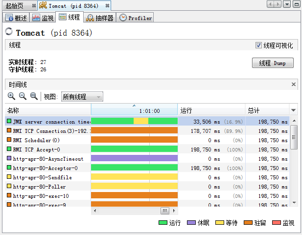
与 JConsole 只能看线程的调用栈和状态信息相比，这里可以直观看到所有线程的状态颜色和运行时间，从而帮助我们分析过去一段时间哪些线程使用了较多的 CPU 资源。
抽样器与 Profiler
JVisualVM 默认情况下，比 JConsole 多了抽样器和 Profiler 这两个工具。
例如抽样，可以配合我们在性能压测的时候，看压测过程中，各个线程发生了什么、或者是分配了多少内存，每个类直接占用了多少内存等等。
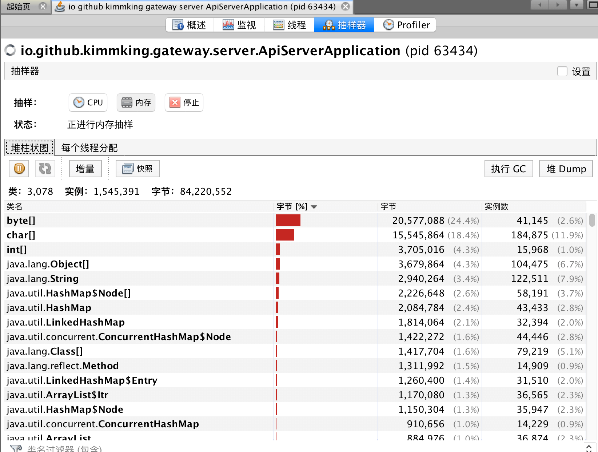
使用 Profiler 时，需要先校准分析器。
然后可以像抽样器一样使用了。
从这个面板直接能看到热点方法与执行时间、占用内存以及比例，还可以设置过滤条件。
同时我们可以直接把当前的数据和分析，作为快照保存，或者将数据导出，以后可以继续加载和分析。
插件
JVisualVM 最强大的地方在于插件。
JDK 8 需要安装较高版本（如 Java SE 8u211），才能从官方服务器安装/更新 JVisualVM 的插件（否则只能凭运气找对应的历史版本）。
JVisualVM 安装 MBeans 插件的步骤：
通过工具(T)–插件(G)–可用插件–勾选具体的插件–安装–下一步–等待安装完成。
最常用的插件是 VisualGC 和 MBeans。
如果看不到可用插件，请安装最新版本，或者下载插件到本地安装。 先排除网络问题，或者检查更新，重新启动试试。
安装完成后，重新连接某个 JVM，即可看到新安装的插件。
切换到 VisualGC 页签：
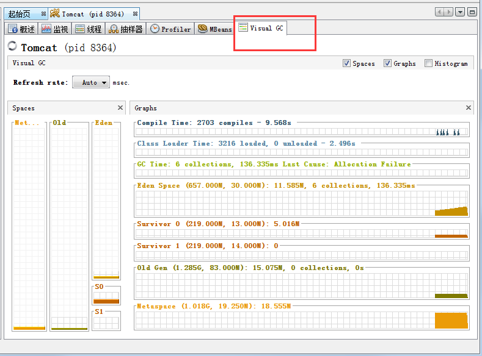
在其中可以看到各个内存池的使用情况，以及类加载时间、GC 总次数、GC 总耗时等信息。比起命令行工具要简单得多。
切换到 MBeans 标签：
一般人可能不怎么关注 MBean，但 MBean 对于理解 GC的原理倒是挺有用的。
主要看 java.lang 包下面的 MBean。比如内存池或者垃圾收集器等。
从图中可以看到，Metaspace 内存池的 Type 是 NON_HEAP。
当然，还可以看垃圾收集器（GarbageCollector）。
对所有的垃圾收集器，通过 JMX API 获取的信息包括：
- CollectionCount：垃圾收集器执行的 GC 总次数。
- CollectionTime：收集器运行时间的累计，这个值等于所有 GC 事件持续时间的总和。
- LastGcInfo：最近一次 GC 事件的详细信息。包括 GC 事件的持续时间（duration）、开始时间（startTime）和结束时间（endTime），以及各个内存池在最近一次 GC 之前和之后的使用情况。
- MemoryPoolNames：各个内存池的名称。
- Name：垃圾收集器的名称。
- ObjectName：由 JMX 规范定义的 MBean 的名字。
- Valid：此收集器是否有效。本人只见过 "true" 的情况。
根据经验，这些信息对分析GC性能来说，不能得出什么结论。只有编写程序，获取GC相关的 JMX 信息来进行统计和分析。
下面看怎么执行远程实时监控。
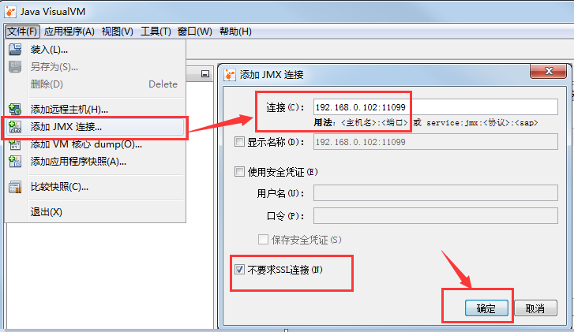
如上图所示，从文件菜单中，我们可以选择“添加远程主机”，以及“添加 JMX 连接”。
比如“添加 JMX 连接”，填上 IP 和端口号之后，勾选“不要求 SSL 连接”，点击“确定”按钮即可。
关于目标 JVM 怎么启动 JMX 支持，请参考后面的 JMX 小节。
远程主机则需要 JStatD 的支持。请参考 JStatD 部分。
JMC 图形界面客户端
JMC 和 JVisualVM 功能类似，因为 JMC 的前身是 JRMC，JRMC 是 BEA 公司的 JRockit JDK 自带的分析工具，被 Oracle 收购以后，整合成了 JMC 工具。Oracle 试图用 JMC 来取代 JVisualVM，在商业环境使用 JFR 需要付费获取授权。
在命令行输入 jmc 后，启动后的界面如下：
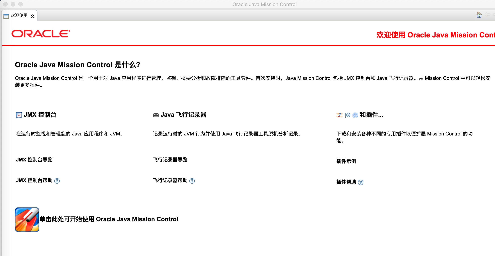
点击相关的按钮或者菜单即可启用对应的功能，JMC 提供的功能和 JVisualVM 差不多。
飞行记录器
除了 JConsole 和 JVisualVM 的常见功能（包括 JMX 和插件）以外，JMC 最大的亮点是飞行记录器。
在进程上点击“飞行记录器”以后，第一次使用时需要确认一下取消锁定商业功能的选项：
然后就可以看到飞行记录向导：
点击下一步可以看到更多的配置：
这里我们可以把堆内存分析、类加载两个选型也勾选上。点击完成，等待一分钟，就可以看到飞行记录。
概况里可以使用仪表盘方式查看堆内存、CPU 占用率、GC 暂停时间等数据。
内存面板则可以看到 GC 的详细分析：
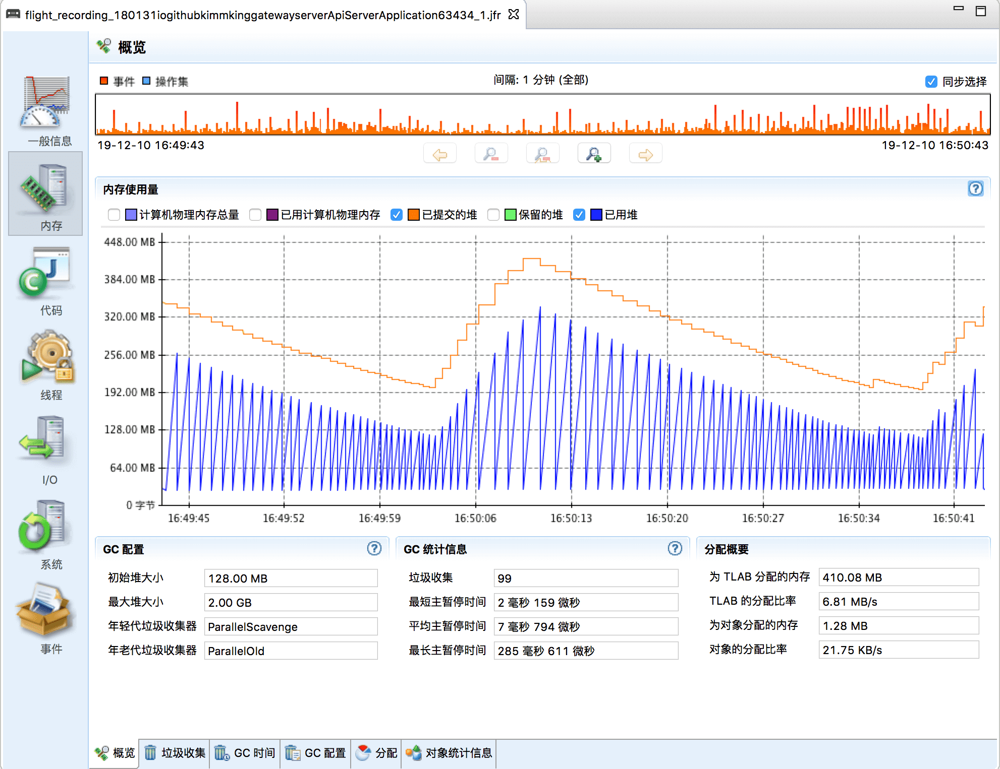
代码面板则可以看到热点方法的执行情况：
线程面板则可以看到线程的锁争用情况等：
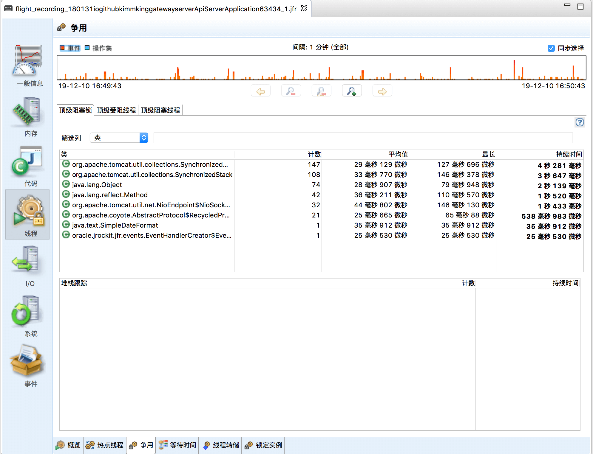
跟 JConsole 和 JVisualVM 相比，这里已经有了很多分析数据了，内存分配速率、GC 的平均时间等等。
最后，我们也可以通过保存飞行记录为 jfr 文件，以后随时查看和分析，或者发给其他人员来进行分析。
JStatD 服务端工具
JStatD 是一款强大的服务端支持工具，用于配合远程监控，所以放到图形界面这一篇介绍。
但因为涉及暴露一些服务器信息，所以需要配置安全策略文件。
$
cat /etc/java/jstatd.all.policy
grant codebase "file:${java.home}/../lib/tools.jar" {
permission java.security.AllPermission;
};
后台启动 JStatD 的命令：
jstatd -J-Djava.security.policy=jstatd.all.policy
-J-Djava.rmi.server.hostname=198.11.188.188 &
其中 198.11.188.188 是公网 IP，如果没有公网，那么就是内网 IP。
然后使用 JVisualVM 或者 JConsole 连接远程服务器。其中 IP 为 198.11.188.188，端口号是默认的 1099。当然，端口号可以通过参数自定义。
说明：客户端与服务器的 JVM 大版本号必须一致或者兼容。
CPU 图形没有显示，原因是 JStatD 不监控单个实例的 CPU。可以在对应 Java 应用的启动参数中增加 JMX 监控配置，具体请参考稍后的 JMX 课程。
更多工具
JDK 还自带了其他工具，比如 jsadebugd 可以在服务端主机上，开启 RMI Server。jhat 可用于解析 hprof 内存 Dump 文件等。 在此不进行介绍，有兴趣可以搜索看看。
在实际的 JVM 性能分析过程中，我们可以根据自己的需要，从这些工具中选择适合自己的工具来了解系统的指标和状态，为我们的调优决策提供依据。
11 JDWP 简介：十步杀一人，千里不留行
Java 平台调试体系（Java Platform Debugger Architecture，JPDA），由三个相对独立的层次共同组成。这三个层次由低到高分别是 Java 虚拟机工具接口（JVMTI）、Java 调试连接协议（JDWP）以及 Java 调试接口（JDI）。
| 模块 | 层次 | 编程语言 | 作用 |
|---|---|---|---|
| JVMTI | 底层 | C | 获取及控制当前虚拟机状态 |
| JDWP | 中间层 | C | 定义 JVMTI 和 JDI 交互的数据格式 |
| JDI | 高层 | Java | 提供 Java API 来远程控制被调试虚拟机 |
详细介绍请参考或搜索：JPDA 体系概览。
服务端 JVM 配置
本篇主要讲解如何在 JVM 中启用 JDWP，以供远程调试。 假设主启动类是 com.xxx.Test。
在 Windows 机器上：
java -Xdebug -Xrunjdwp:transport=dt_shmem,address=debug,server=y,suspend=y com.xxx.Test
在 Solaris 或 Linux 操作系统上：
java -Xdebug -Xrunjdwp:transport=dt_socket,address=8888,server=y,suspend=y com.xxx.Test
其实，-Xdebug 这个选项什么用都没有，官方说是为了历史兼容性，避免报错才没有删除。
另外这个参数配置里的 suspend=y 会让 Java 进程启动时先挂起，等到有调试器连接上以后继续执行程序。
而如果改成 suspend=n 的话，则此 Java 进程会直接执行，但是我们可以随时通过调试器连上进程。
就是说，比如说我们启动一个 Web 服务器进程，当这个值是 y 的时候，服务器的 JVM 初始化以后不会启动 Web 服务器，会一直等到我们用 IDEA 或 Eclipse、JDB 等工具连上这个 Java 进程后，再继续启动 Web 服务器。而如果是 n 的话，则会不管有没有调试器连接，都会正常运行。
通过这些启动参数，Test 类将运行在调试模式下，并等待调试器连接到 JVM 的调试地址：在 Windows 上是 Debug，在 Oracle Solaris 或 Linux 操作系统上是 8888 端口。
如果细心观察的话，会发现 IDEA 中 Debug 模式启动的程序，自动设置了类似的启动选项。
JDB
启用了 JDWP 之后，可以使用各种客户端来进行调试/远程调试。比如 JDB 调试本地 JVM：
jdb -attach 'debug'
jdb -attach 8888
当 JDB 初始化并连接到 Test 之后，就可以进行 Java 代码级（Java-level）的调试。
但是 JDB 调试非常麻烦，比如说几个常用命令：
\1. 设置断点：
stop at 类名:行号
\2. 清除断点：
clear at 类名:行号
\3. 显示局部变量：
localx
\4. 显示变量 a 的值：
print a
\5. 显示当前线程堆栈：
wherei
\6. 代码执行到下一行：
next
\7. 代码继续执行，直到遇到下一个断点：
cont
可以看到使用 JDB 调试的话非常麻烦，所以我们一般还是在开发工具 IDE（IDEA、Eclipse）里调试代码。
开发工具 IDEA 中使用远程调试
下面介绍 IDEA 中怎样使用远程调试。与常规的 Debug 配置类似，进入编辑：
添加 Remote（不是 Tomcat 下面的那个 Remote Server）：
然后配置端口号，比如 8888。
然后点击应用（Apply）按钮。
点击 Debug 的那个按钮即可启动远程调试，连上之后就和调试本地程序一样了。当然，记得加断点或者条件断点。
注意：远程调试时，需要保证服务端 JVM 中运行的代码和本地完全一致，否则可能会有莫名其妙的问题。
细心的同学可能已经发现，IDEA 给出了远程 JVM 的启动参数，建议使用 agentlib 的方式：
-agentlib:jdwp=transport=dt_socket,server=y,suspend=n,address=8888
远程调试代码不仅在开发程序的过程中非常有用，而且实际生产环境，有时候我们无法判断程序运行的过程中出现了什么问题，到时运行结果跟期望值不一致，这时候就可以使用远程调试功能连接到生产环境，从而可以追踪导致执行过程中的哪个步骤出了问题。
JVM 为什么可以让不同的开发工具和调试器都连接上进行调试呢？因为它提供了一套公开的调试信息的交互协议，各家厂商就可以根据这个协议去实现自己的调试图形工具，进而方便 Java 开发人员的使用。下面就简单谈谈这个协议。
JDWP 协议规范
JDWP 全称是 Java Debug Wire Protocol，中文翻译为“Java 调试连接协议”，是用于规范调试器（Debugger）与目标 JVM 之间通信的协议。
JDWP 是一个可选组件，可能在某些 JDK 实现中不可用。
JDWP 支持两种调试场景：
- 同一台计算机上的其他进程
- 远程计算机上
与许多协议规范的不同之处在于，JDWP 只规定了具体的格式和布局，而不管你用什么协议来传输数据。
JDWP 实现可以只使用简单的 API 来接受不同的传输机制。具体的传输不一定支持各种组合。
JDWP 设计得非常简洁，容易实现，而且对于未来的升级也足够灵活。
当前，JDWP 没有指定任何传输机制。将来如果发生变更，会在单独的文档中来进行规范。
JDWP 是 JPDA 中的一层。JPDA（Java Platform Debugger Architecture，Java 平台调试器体系结构）架构还包含更上层的 Java 调试接口（JDI，Java Debug Interface）。JDWP 旨在促进 JDI 的有效使用；为此，它的许多功能都是量身定制的。
对于那些用 Java 语言编写的 Debugger 工具来说，直接使用 JDI 比起 JDWP 更加方便。
有关 JPDA 的更多信息，请参考：
JDWP 握手过程
连接建立之后，在发送其他数据包之前，连接双方需要进行握手：
握手过程包括以下步骤：
- Debugger 端向目标 JVM 发送 14 个字节，也就是包括 14 个 ASCII 字符的字符串 "JDWP-Handshake"。
- VM 端以相同的 14 个字节答复：JDWP-Handshake。
JDWP 数据包
JDWP 是无状态的协议，基于数据包来传输数据。包含两种基本的数据包类型：命令包（Command Packet）和应答包（Reply Packet）。
调试器和目标 VM 都可以发出命令包，调试器可以用命令包来从目标 VM 请求相关信息或者控制程序的执行，目标 VM 可以将自身的某些事件（例如断点或异常）用命令数据包的方式通知调试器。
应答包仅用于对命令包进行响应，并且标明该命令是成功还是失败。 应答包还可以携带命令中请求的数据（例如字段或变量的值）。当前，从目标 VM 发出的事件不需要调试器的应答。
JDWP 是异步的，在收到某个应答之前，可以发送多个命令包。
命令包和应答包的 header 大小相等。这样使传输更易于实现和抽象。每个数据包的布局如下所示。
命令包（Command Packet）
- Header
- length（4 bytes）
- id（4 bytes）
- flags（1 byte）
- command set（1 byte）
- command（1 byte）
- data（长度不固定）
应答包（Reply Packet）
- Header
- length（4 bytes）
- id（4 bytes）
- flags（1 byte）
- error code（2 bytes）
- data（Variable）
可以看到，这两种数据包的 Header 中，前三个字段格式是相同的。
通过 JDWP 发送的所有字段和数据都应采用大端字节序（big-endian）。大端字节序的定义请参考《Java 虚拟机规范》。
数据包字段说明
通用 Header 字段
下面的 Header 字段是命令包与应答包通用的。
length
length 字段表示整个数据包（包括 header）的字节数。因为数据包 header 的大小为 11 个字节，因此没有 data 的数据包会将此字段值设置为 11。
id
id 字段用于唯一标识每一对数据包（command/reply）。应答包 id 值必须与对应的命令包 ID 相同。这样异步方式的命令和应答就能匹配起来。同一个来源发送的所有未完成命令包的 id 字段必须唯一。（调试器发出的命令包，与 JVM 发出的命令包如果 ID 相同也没关系。） 除此之外，对 ID 的分配没有任何要求。对于大多数实现而言，使用自增计数器就足够了。id 的取值允许 2^32 个数据包，足以应对各种调试场景。
flags
flags 标志用于修改命令的排队和处理方式，也用来标记源自 JVM 的数据包。当前只定义了一个标志位 0x80，表示此数据包是应答包。协议的未来版本可能会定义其他标志。
命令包的 Header
除了前面的通用 Header 字段，命令包还有以下请求头。
command set
该字段主要用于通过一种有意义的方式对命令进行分组。Sun 定义的命令集，通过在 JDI 中支持的接口进行分组。例如，所有支持 VirtualMachine 接口的命令都在 VirtualMachine 命令集里面。命令集空间大致分为以下几类：
- 0-63：发给目标 VM 的命令集
- 64-127：发送给调试器的命令集
- 128-256：JVM 提供商自己定义的命令和扩展。
command
该字段用于标识命令集中的具体命令。该字段与命令集字段一起用于指示应如何处理命令包。更简洁地说，它们告诉接收者该怎么做。具体命令将在本文档后面介绍。
应答包的 Header
除了前面的通用 Header 字段，应答包还有以下请求头。
error code
此字段用于标识是否成功处理了对应的命令包。0 值表示成功，非零值表示错误。返回的错误代码由具体的命令集/命令规定，但是通常会映射为 JVM TI 标准错误码。
Data
每个命令的 Data 部分都是不同的。相应的命令包和应答包之间也有所不同。例如，请求命令包希望获取某个字段的值，可以在 Data 中填上 object ID 和 field ID。应答包的 Data 字段将存放该字段的值。
JDWP 中常用的数据类型
通常，命令或应答包的 Data 字段格式由具体的命令规定。Data 中的每个字段都是（Java 标准的）大端格式编码。下面介绍每个 Data 字段的数据类型。
大部分 JDWP 数据包中的数据类型如下所述。
| Name | Size |
|---|---|
| byte | 1 byte |
| boolean | 1 byte |
| int | 4 bytes |
| long | 8 bytes |
| objectID | 由具体的 JVM 确定，最多 8 字节 |
| tagged-objectID | objectID 的大小 +1 字节 |
| threadID | 同 objectID |
| threadGroupID | 同 objectID |
| stringID | 同 objectID |
| classLoaderID | 同 objectID |
| classObjectID | 同 objectID |
| arrayID | 同 objectID |
| referenceTypeID | 同 objectID |
| classID | 同 referenceTypeID |
| interfaceID | 同 referenceTypeID |
| arrayTypeID | 同 referenceTypeID |
| methodID | 由具体的 JVM 确定，最多 8 字节 |
| fieldID | 由具体的 JVM 确定，最多 8 字节 |
| frameID | 由具体的 JVM 确定，最多 8 字节 |
| location | 由具体的 JVM 确定 |
| string | 长度不固定 |
| value | 长度不固定 |
| untagged-value | 长度不固定 |
| arrayregion | 长度不固定 |
不同的 JVM 中，Object IDs、Reference Type IDs、Field IDs、Method IDs 和 Frame IDs 的大小可能不同。
通常，它们的大小与 JNI 和 JVMDI 调用中用于这些项目的 native 标识符的大小相对应。这些类型中最大的 size 为 8 个字节。当然，调试器可以使用 "idSizes" 这个命令来确定每种类型的大小。
如果 JVM 收到的命令包里面含有未实现（non-implemented）或无法识别（non-recognized）的命令/命令集，则会返回带有错误码 NOT_IMPLEMENTED 的应答包。具体的错误常量可参考：
参考文档
12 JMX 与相关工具：山高月小，水落石出
Java 平台提供了全面的 JVM 监控和管理措施。
在 Java SE 5 之前，虽然 JVM 提供了一些底层的 API，比如 JVMPI 和 JVMTI，但这些 API 都是面向 C 语言的，需要通过 JNI 等方式才能调用，想要监控 JVM 和系统资源非常不方便。
Java SE 5.0 版本引入了 JMX 技术（Java Management Extensions，Java 管理扩展），JMX 技术的前身是“JSR3:Java Management Extensions”，以及“JSR 160:JMX Remote API”。
JMX 是用于监控和管理 JVM 资源（包括应用程序、设备、服务和 JVM）的一组标准 API。
通过这些 API 接口，可以对外暴露 JVM 和宿主机的一些信息，甚至支持远程动态调整某些运行时参数。
JMX 技术让我们在 JDK 中开发自检程序成为可能，同时也提供了很多轻量级的 API 来监测 JVM 状态和运行中对象/线程状态，从而提高了 Java 语言自身的管理监测能力。
客户端使用 JMX 主要通过两种方式：
- 程序代码手动获取 MXBean；
- 通过网络远程获取 MBean。
从 JVM 运行时获取 GC 行为数据，最简单的办法是使用标准 JMX API 接口。JMX 也是获取 JVM 内部运行时状态信息 的标准 API。可以编写程序代码，通过 JMX API 来访问本程序所在的 JVM，也可以通过 JMX 客户端执行（远程）访问。MXBean 可用于监控和管理 JVM，每个 MXBean 都封装了一部分功能。
如果用通俗的话来讲，就是我们可以在 JVM 这个机构内部搞一个“政务信息公开系统”，这个东西就可以看做是 MBeanServer，然后系统默认有很多信息，比如 JVM 的基本信息、内存和 GC 的信息等，可以放到这个系统来公开。应用程序里的其他 Java 代码也可以自己定义一些 MBean，然后把这些自己想要公开的信息挂到这个系统里来。这个时候，就不管是本 JVM 内部，还是其他的 Java 应用程序，都可以访问到这个 MBeanServer 上的所有公开信息，也就是 MBean 的属性，甚至可以直接调用 MBean 提供的方法反过来影响系统。
获取当前 JVM 的 MXBean 信息
JDK 默认提供的 MXBean 相关类，主要位于 rt.jar 文件的 java.lang.management 包中。获取 JVM 中 MXBean 信息的代码示例如下：
package jvm.chapter11;
import com.alibaba.fastjson.JSON;
import com.alibaba.fastjson.serializer.*;
import java.lang.management.*;
import java.util.*;
public class MXBeanTest {
public static void main(String[] args) {
Map<String, Object> beansMap = loadMXBeanMap();
String jsonString = toJSON(beansMap);
System.out.println(jsonString);
}
public static Map<String, Object> loadMXBeanMap() {
// import java.lang.management.*
// 1. 操作系统信息
OperatingSystemMXBean operatingSystemMXBean =
ManagementFactory.getOperatingSystemMXBean();
// 2. 运行时
RuntimeMXBean runtimeMXBean =
ManagementFactory.getRuntimeMXBean();
// 3.1 JVM 内存信息
MemoryMXBean memoryMXBean =
ManagementFactory.getMemoryMXBean();
// 3.2 JVM 内存池-列表
List<MemoryPoolMXBean> memoryPoolMXBeans =
ManagementFactory.getMemoryPoolMXBeans();
// 3.3 内存管理器-列表
List<MemoryManagerMXBean> memoryManagerMXBeans =
ManagementFactory.getMemoryManagerMXBeans();
// 4. class 加载统计信息
ClassLoadingMXBean classLoadingMXBean =
ManagementFactory.getClassLoadingMXBean();
// 5. 编译统计信息
CompilationMXBean compilationMXBean =
ManagementFactory.getCompilationMXBean();
// 6. 线程
ThreadMXBean threadMXBean =
ManagementFactory.getThreadMXBean();
// 7. GC
List<GarbageCollectorMXBean> garbageCollectorMXBeans =
ManagementFactory.getGarbageCollectorMXBeans();
// 8. 获取平台日志 MXBean
PlatformLoggingMXBean platformLoggingMXBean =
ManagementFactory.getPlatformMXBean(PlatformLoggingMXBean.class);
//
Map<String, Object> beansMap = new HashMap<String, Object>();
//
beansMap.put("operatingSystemMXBean", operatingSystemMXBean);
beansMap.put("runtimeMXBean", runtimeMXBean);
beansMap.put("memoryMXBean", memoryMXBean);
beansMap.put("memoryPoolMXBeans", memoryPoolMXBeans);
beansMap.put("memoryManagerMXBeans", memoryManagerMXBeans);
beansMap.put("classLoadingMXBean", classLoadingMXBean);
beansMap.put("compilationMXBean", compilationMXBean);
beansMap.put("threadMXBean", threadMXBean);
beansMap.put("garbageCollectorMXBeans", garbageCollectorMXBeans);
beansMap.put("platformLoggingMXBean", platformLoggingMXBean);
return beansMap;
}
public static String toJSON(Object obj) {
// MemoryPoolMXBean 这些未设置的属性序列化时会报错
SimplePropertyPreFilter filter = new SimplePropertyPreFilter();
filter.getExcludes().add("collectionUsageThreshold");
filter.getExcludes().add("collectionUsageThresholdCount");
filter.getExcludes().add("collectionUsageThresholdExceeded");
filter.getExcludes().add("usageThreshold");
filter.getExcludes().add("usageThresholdCount");
filter.getExcludes().add("usageThresholdExceeded");
//
String jsonString = JSON.toJSONString(obj, filter,
SerializerFeature.PrettyFormat);
return jsonString;
}
}
取得这些 MXBean 之后，就能采集到对应的 Java 运行时信息，定时上报给某个系统，那么一个简单的监控就创建了。
当然，这么简单的事情，肯定有现成的轮子啦。比如 Spring Boot Actuator，以及后面介绍的 Micrometer 等。各种监控服务提供的 Agent-lib 中也会通过类似的手段采集相应的数据。
如果想通过编程方式获取远程机器上的 MXBean，请参考：
使用 JMX 工具远程连接
最常见的 JMX 客户端是 JConsole 和 JVisualVM（可以安装各种插件，十分强大）。两个工具都是标准 JDK 的一部分，而且很容易使用. 如果使用的是 JDK 7u40 及更高版本，还可以使用另一个工具：Java Mission Control（JMC，大致翻译为 Java 控制中心）。
监控本地 JVM 并不需要额外配置，如果是远程监控，还可以在服务端部署 Jstatd 服务暴露部分信息给 JMX 客户端。
所有 JMX 客户端都是独立的程序，可以连接到目标 JVM 上。目标 JVM 可以在本机，也可以是远端 JVM。
想要支持 JMX 客户端连接服务端 JVM 实例，则 Java 启动脚本中需要加上相关的配置参数，示例如下：
-Dcom.sun.management.jmxremote
-Dcom.sun.management.jmxremote.port=10990
-Dcom.sun.management.jmxremote.ssl=false
-Dcom.sun.management.jmxremote.authenticate=false
如果服务器具有多张网卡（多个 IP），由于安全限制，必须明确指定 hostname， 一般是 IP。
-Djava.rmi.server.hostname=47.57.227.67
这样启动之后，JMX 客户端（如 JConsole、JVisualVM、JMC）就可以通过 <IP:端口> 连接。(参考 JVisualVM 的示例）。
如这里对应的就类似于：47.57.227.67:10990。
如果想要远程查看 VisualGC，则服务端需要开启 Jstatd 来支持，JVisualVM 先连 Jstatd 远程主机，接着在远程主机上点右键添加 JMX 连接。关于 JVisualVM 的使用，请参考前面的文章《JDK 内置图形界面工具》。
以 JConsole 为例，我们看一下，连接到了远程 JVM 以后，在最后一个面板即可看到 MBean 信息。
例如，我们可以查看 JVM 的一些信息：
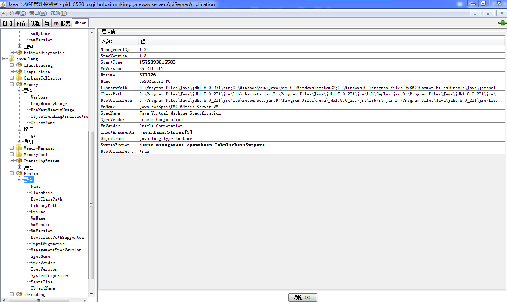
也可以直接调用方法，例如查看 VM 参数：
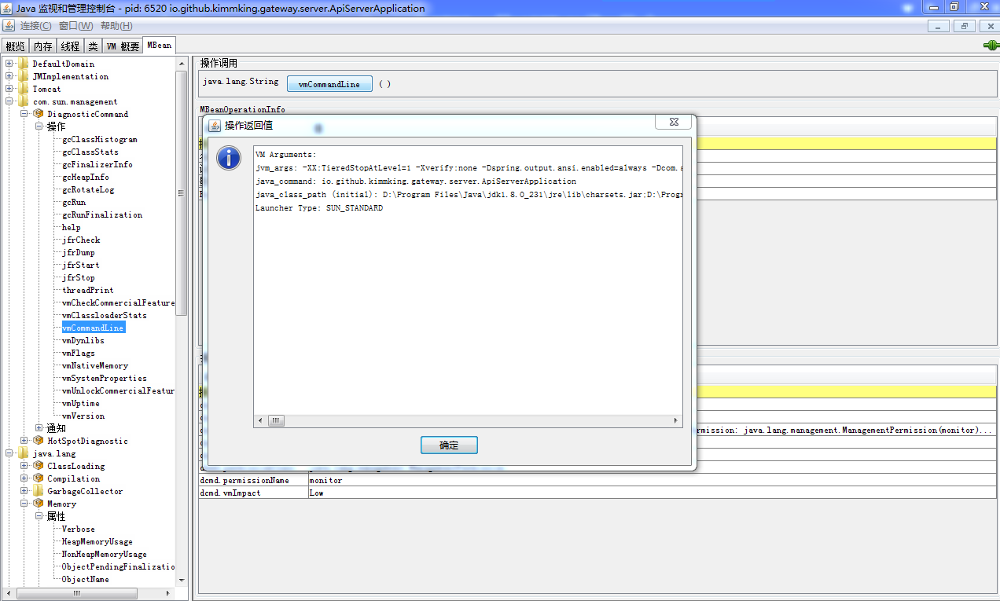
如果启动的进程是 Tomcat 或者是 Spring Boot 启动的嵌入式 Tomcat，那么我们还可以看到很多 Tomcat 的信息：
JMX 的 MBean 创建和远程访问
前面讲了在同一个 JVM 里获取 MBean，现在我们再来写一个更完整的例子：创建一个 MBean，然后远程访问它。
先定义一个 UserMBean 接口（必须以 MBean 作为后缀）：
package io.github.kimmking.jvmstudy.jmx;
public interface UserMBean {
Long getUserId();
String getUserName();
void setUserId(Long userId);
void setUserName(String userName);
}
然后实现它：
package io.github.kimmking.jvmstudy.jmx;
public class User implements UserMBean {
Long userId = 12345678L;
String userName = "jvm-user";
@Override
public Long getUserId() {
return userId;
}
@Override
public String getUserName() {
return userName;
}
@Override
public void setUserId(Long userId) {
this.userId = userId;
}
@Override
public void setUserName(String userName) {
this.userName = userName;
}
}
最后实现一个类来启动 MBeanServer：
package io.github.kimmking.jvmstudy.jmx;
import javax.management.MBeanServer;
import javax.management.MBeanServerFactory;
import javax.management.ObjectName;
import javax.management.remote.JMXConnectorServer;
import javax.management.remote.JMXConnectorServerFactory;
import javax.management.remote.JMXServiceURL;
import java.lang.management.ManagementFactory;
import java.rmi.registry.LocateRegistry;
import java.rmi.registry.Registry;
public class UserJmxServer {
public static void main(String[] args){
MBeanServer server;
User bean=new User();
try {
int rmiPort = 1099;
String jmxServerName = "TestJMXServer";
Registry registry = LocateRegistry.createRegistry(rmiPort);
server = MBeanServerFactory.createMBeanServer("user");
ObjectName objectName = new ObjectName("user:name=User");
server.registerMBean(bean, objectName);
JMXServiceURL url = new JMXServiceURL("service:jmx:rmi:///jndi/rmi://localhost:1099/user");
System.out.println("JMXServiceURL: " + url.toString());
JMXConnectorServer jmxConnServer = JMXConnectorServerFactory.newJMXConnectorServer(url, null, server);
jmxConnServer.start();
}catch (Exception e){
e.printStackTrace();
}
}
}
通过这几个代码我们可以看到，使用 MBean 机制，需要：
- 先定义 MBean 接口；
- 实现这个接口；
- 然后把接口和类，注册到 MBeanServer，这里可以用 JVM 里的默认 MBeanServer，也可以自己创建一个新的 Server，这里为了简单，就使用了默认的。
然后我们就可以使用客户端工具或者代码来访问 MBeanServer，查看和操作 MBean，由于 MBean 类似反射的机制（如果早期做过 Windows 平台的 COM 对象开发，就会发现是类似的），客户端不需要知道具体的 MBean 接口或者实现类，也能请求服务器端。
如果大家学习过 Apache Dubbo，就知道在 Dubbo 里消费端必须拿到服务提供者的服务接口，才能配置和调用，这里不同的地方就是客户端是不需要 MBean 接口的。
JConsole 里查看自定义 MBean
首先我们启动这个应用 UserJmxServer，接下来我们使用工具来查看和操作它。
打开 JConsole，在远程输入：
service:jmx:rmi:///jndi/rmi://localhost:1099/user
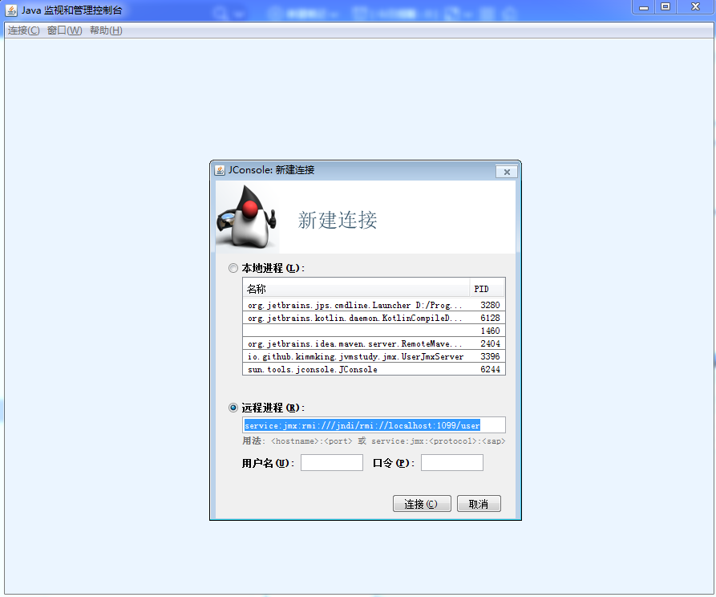
查看 User 的属性：
直接修改 UserName 的值：
使用 JMX 远程访问 MBean
我们先使用 JMXUrl 来创建一个 MBeanServerConnection，连接到 MBeanServer，然后就可以通过 ObjectName，也可以看做是 MBean 的地址，像反射一样去拿服务器端 MBean 里的属性，或者调用 MBean 的方法。示例如下：
package io.github.kimmking.jvmstudy.jmx;
import javax.management.*;
import javax.management.remote.*;
import java.rmi.registry.LocateRegistry;
import java.rmi.registry.Registry;
import java.util.Iterator;
import java.util.Set;
public class UserJmxClient {
public static void main(String[] args){
try {
String surl = "service:jmx:rmi:///jndi/rmi://localhost:1099/user";
JMXServiceURL url = new JMXServiceURL(surl);
JMXConnector jmxc = JMXConnectorFactory.connect(url, null);
MBeanServerConnection mbsc = jmxc.getMBeanServerConnection();
System.out.println("Domains:---------------");
String domains[] = mbsc.getDomains();
for (int i = 0; i < domains.length; i++) {
System.out.println("\tDomain[" + i + "] = " + domains[i]);
}
System.out.println("all ObjectName：---------------");
Set<ObjectInstance> set = mbsc.queryMBeans(null, null);
for (Iterator<ObjectInstance> it = set.iterator(); it.hasNext();) {
ObjectInstance objectInstance = (ObjectInstance) it.next();
System.out.println("\t" + objectInstance.getObjectName() + " => " + objectInstance.getClassName());
}
System.out.println("user:name=User：---------------");
ObjectName mbeanName = new ObjectName("user:name=User");
MBeanInfo info = mbsc.getMBeanInfo(mbeanName);
System.out.println("Class: " + info.getClassName());
if (info.getAttributes().length > 0){
for(MBeanAttributeInfo m : info.getAttributes())
System.out.println("\t ==> Attriber：" + m.getName());
}
if (info.getOperations().length > 0){
for(MBeanOperationInfo m : info.getOperations())
System.out.println("\t ==> Operation：" + m.getName());
}
System.out.println("Testing userName and userId .......");
Object userNameObj = mbsc.getAttribute(mbeanName,"UserName");
System.out.println("\t ==> userName：" + userNameObj);
Object userIdObj = mbsc.getAttribute(mbeanName,"UserId");
System.out.println("\t ==> userId：" + userIdObj);
Attribute userNameAttr = new Attribute("UserName","kimmking");
mbsc.setAttribute(mbeanName,userNameAttr);
System.out.println("Modify UserName .......");
userNameObj = mbsc.getAttribute(mbeanName,"UserName");
System.out.println("\t ==> userName：" + userNameObj);
jmxc.close();
}catch (Exception e){
e.printStackTrace();
}
}
}
直接运行，输出如下：
Domains:---------------
Domain[0] = JMImplementation
Domain[1] = user
all ObjectName：---------------
JMImplementation:type=MBeanServerDelegate => javax.management.MBeanServerDelegate
user:name=User => io.github.kimmking.jvmstudy.jmx.User
user:name=User：---------------
Class: io.github.kimmking.jvmstudy.jmx.User
==> Attriber：UserName
==> Attriber：UserId
Testing userName and userId .......
==> userName：jvm-user
==> userId：12345678
Modify UserName .......
==> userName：kimmking
在前面的 JConsole 示例中，我们可以看到 JMX 的 MBeanServer 里的所有 MBean 就是一个树结构，那么怎么定位一个 MBean 对象，就是靠它的地址，ObjectName 属性，例如例子里的 user:name=User。ObjectName 跟 LDAP 里定位的 DN 非常像，可以直接在客户端拿到一个服务端实际对象的代理对象。然后进行操作：
- queryMBeans：查询当前 Server 的所有 MBean 对象，进而可以拿到每个 MBean 内的 MBeanInfo 信息，有什么属性和方法。
- getAttribute：从 Server 上拿到某个 MBean 对象的某个属性值。
- setAttribute：设置 Server 上的某个 MBean 的某个属性值。
- invoke：调用 Server 上某个 MBean 的某个方法。
从上面的分析，我们可以看到，JMX 其实是基于 MBean 和 MBeanServer 模型、RMI 协议，在设计上非常精巧的远程调用技术。通过学习这个技术的细节，我们可以了解一般的 RPC 等技术。学会了这种 JVM 默认的管理 API 技术，我们也可以更方便的了解和分析 JVM 情况。
更多用法
JMX 是基于 RMI 的 JVM 管理技术，底层是 Java 平台专有的 RMI 远程方法调用，很难做到跨语言调用。怎么才能做到跨平台呢？现在最火的远程调用方式非 REST 莫属。能否让 JMX 使用 REST API 直接调用呢？答案是肯定的。
另外，想要进行性能分析，只有 JVM 的信息还是不够的，我们还需要跟其他的各类监控集成，比如 Datadog 或是其他 APM，本篇只是简单涉及。
JMX 与 REST API
先说一下 JMX 的 REST API，有一个框架 Jolokia，它可以自动把 JMX 的结构转换成 REST API 和 JSON 数据。在开源软件 ActiveMQ 的控制台里就默认使用了这个框架，这样可以直接达到如下效果。
我们使用 curl 手工执行一次 REST 调用，会直接返回给我们 API 的 JSON 结果。
$ curl http://localhost:8161/hawtio/jolokia/read/org.apache.activemq:brokerName=localhost,type=Broker/Queues
{"timestamp":1392110578,"status":200,"request":{"mbean":"org.apache.activemq:brokerName=localhost,type=Broker","attribute":"Queues","type":"read"},"value":[{"objectName":"org.apache.activemq:brokerName=localhost,destinationName=a,destinationType=Queue,type=Broker"}]}
更多信息，可以阅读参考材料。
JMX 与其他软件
JConsole 及 JVisualVM 等工具提供了实时查看的能力，但如果我们想监控大量 JVM 实例的历史数据，应该怎么办呢?
既然 JMX 提供了这些数据，只要我们有一个工具来定时采集，并上报给对应的 APM 收集系统，那么我们就保存了长期的历史数据，作为进一步分析和性能诊断的依据。
例如 DataDog，听云等服务提供商都集成了对 JMX 的支持。
因为我们的专栏主要讲解 JDK 相关工具的用法，所以想了解的同学请搜索关键字，如：“Datadog JMX”或者“听云 JMX”等等。
如果你搜索“Spring JMX“，甚至能看到 JMX 可以把很多东西玩出花来，但 JMX 比起 HTTP API 来说还是比较重的，所以对于具有编程能力的企业和工程师来说，想要灵活和方便的话，HTTP 接口才是最方便的方式。
相关链接
13 常见的 GC 算法（GC 的背景与原理）
GC 是英文词汇 Garbage Collection 的缩写，中文一般直译为“垃圾收集”。当然有时候为了让文字更流畅，也会说“垃圾回收”。一般认为“垃圾回收”和“垃圾收集”是同样的意思。此外，GC 也有“垃圾收集器”的意思，英文表述为 Garbage Collector。本节我们就来详细讲解常用的 GC 算法。
闲话 GC
假如我们做生意，需要仓库来存放物资。如果所有仓库都需要公司自建，那成本就太高了，一般人玩不转，而且效率也不高，成本控制不好就很难赚到钱。所以现代社会就有了一种共享精神和租赁意识，大幅度提高了整个社会的资源利用率。
比如说一条供应链，A 公司转给 B 公司，B 公司转给 C 公司，那么每个公司自己的加工车间和私有仓库，就类似于线程空间，工厂内部会有相应的流水线。因为每个公司/业务员的精力有限，这个私有空间不可能无限大。
公共的仓库，就类似于堆内存，相比私有空间要大很多，而且很方便别的公司来存取物资，或者可以直接存取，或者加锁需要钥匙才能存取。 很明显，这个体系需要进行有效的管理，整个仓储系统才能良好运转。不再使用的仓库需要去打个招呼说我们不用了，要不然公司需要一直付费，实际上是浪费的公司的钱，也在浪费社会的资源。这就类似于内存释放。
也可以使用创客空间的共享工位做类比，工位（内存）是有限的且固定的。大家都可以来租赁（申请内存），拿到所有权以后就可以使用工位（内存）。使用结束后归还给管理方（系统），然后其他人就可以来租赁和使用。
本节课程先简要介绍 GC 相关的基础知识，然后再介绍常见的三种垃圾收集器实现（Parallel/CMS/G1）。
手动内存管理
有之前 C/C++ 编程经验、或者了解计算机原理的同学，会很容易理解“内存分配”和“内存释放”这两个概念。
计算机程序在执行过程中，需要有地方来存放输入参数、中间变量，以及运算结果。通过前面的课程学习，我们知道这些参数都会存放到栈内存之中。
但如果系统业务处理代码中现在就需要使用内存，例如场景：
比如说，我一个销售员，负责跟其他公司谈业务，合同签订之后还得盯着，决定什么时候去把仓库退了。在使用 C/C++ 编程时就是这种情况，我们称之为”手动内存管理”。
公司规模很小，业务简单时，这种方式很灵活，业务员的权力很大。但如果公司业务规模扩大，业务变得复杂之后，这种方式的弊端就会显露出来。因为业务员也很难决定什么时候去退仓库，不退呢可能会浪费资源，退了呢可能下游的某个公司还要用呢，那样容易被投诉。
所以 C++ 程序员很爽，就像上帝之手，一切尽在掌握之中。但是使用 C++ 开发业务的公司，其他部门就不一定很爽了。
这种方式在计算机中称为“手动内存管理”。
弊端就是：经手处理过仓库的人多了，很可能就不记得是不是这个仓库需要归还还是已经归还过了，就会导致仓库的管理混乱，使用仓库的多方抢仓库而发生冲突。
引用计数法
然后老板们合计了一下，咱还是成立一个部门专门来管理仓库吧。谁要用就向仓库部门申请，至于后续什么时候释放就由仓库自己进行管理，业务员就不用操心了。
GC 垃圾收集器就像这个仓库部门，负责分配内存，负责追踪这些内存的使用情况，并在适当的时候进行释放。
于是仓库部门就建立起来，专门管理这些仓库。怎么管理呢？
先是想了一个办法，叫做“引用计数法”。有人办业务需要来申请仓库，就找个计数器记下次数 1，后续哪个业务用到呢都需要登记一下，继续加 1，每个业务办完计数器就减一。如果一个仓库（对象使用的内存）的计数到降了 0，就说明可以人使用这个仓库了，我们就可以随时在方便的时候去归还/释放这个仓库。（需要注意：一般不是一个仓库到 0 了就立即释放，出于效率考虑，系统总是会等一批仓库一起处理，这样更加高效。）
但是呢，如果业务变得更复杂。仓库之间需要协同工作，有了依赖关系之后。
这时候单纯的引用计数就会出问题，循环依赖的仓库/对象没办法回收，就像数据库的死锁一样让人讨厌，你没法让它自己变成 0。
这种情况在计算机中叫做“内存泄漏”，该释放的没释放，该回收的没回收。
如果依赖关系更复杂，计算机的内存资源很可能用满，或者说不够用，内存不够用则称为“内存溢出”。
这样我们知道了引用计数法有一些缺陷，有没有办法解决呢？俗话说办法总比困难多，我找个人专门来排查循环计数行了吧，一个不够就两个……但如果仓库成千上万，或者上亿呢？还是能解决的，最多不就是慢点嘛。
像 Perl、Python 和 PHP 等平台/语言使用的就是引用计数法（当然也都做了一定的优化，一般使用不用太担心，而且每个语言有自己的适用场景，专门干好自己的事就是好语言）。
- 第一代自动垃圾收集算法，使用的是引用计数（reference counting）。针对每个对象，只需要记住被引用的次数，当引用计数变为 0 时，这个对象就可以被安全地回收（reclaimed）了。著名的示例是 C++ 的共享指针（shared pointers）；
- 第二代的垃圾收集算法，被称为“引用追踪（reference tracing）”，JVM 使用的各种垃圾收集算法都是基于引用追踪方式的算法。
下面我们一起来看看 JVM 中使用的垃圾收集方法。
标记清除算法（Mark and Sweep）
前面我们讲解了引用计数里需要查找所有的对象计数和对象之间的引用关系。那么如何来查找所有对象，怎么来做标记呢？本节主要讲解这个过程。
为了遍历所有对象，JVM 明确定义了什么是对象的可达性（reachability）。
有一类很明确很具体的对象，称为 垃圾收集根元素（Garbage Collection Roots），包括：
- 局部变量（Local variables）
- 活动线程（Active threads）
- 静态域（Static fields）
- JNI 引用（JNI references）
- 其他对象（稍后介绍）
JVM 使用标记—清除算法（Mark and Sweep algorithm），来跟踪所有的可达对象（即存活对象），确保所有不可达对象（non-reachable objects）占用的内存都能被重用。其中包含两步：
- Marking（标记）：遍历所有的可达对象，并在本地内存（native）中分门别类记下。
- Sweeping（清除）：这一步保证了，不可达对象所占用的内存，在之后进行内存分配时可以重用。
JVM 中包含了多种 GC 算法，如 Parallel Scavenge（并行清除），Parallel Mark+Copy（并行标记 + 复制）以及 CMS，他们在实现上略有不同，但理论上都采用了以上两个步骤。
标记清除算法最重要的优势，就是不再因为循环引用而导致内存泄露：
标记—清除（Mark and Sweep）是最经典的垃圾收集算法。将理论用于生产实践时，会有很多需要优化调整的地方，以适应具体环境。后面我们会通过一个简单的例子，看看如何才能保证 JVM 能安全持续地分配对象。
而这种处理方式不好的地方在于：垃圾收集过程中，需要暂停应用程序的所有线程。假如不暂停，则对象间的引用关系会一直不停地发生变化，那样就没法进行统计了。这种情况叫做 STW 停顿（Stop The World pause，全线暂停），让应用程序暂时停止，让 JVM 进行内存清理工作。如果把 JVM 里的环境看做一个世界，就好像我们经常在电影里看到的全世界时间静止了一样。有很多原因会触发 STW 停顿，其中垃圾收集是最主要的原因。
碎片整理
每次执行清除（Sweeping），JVM 都必须保证不可达对象占用的内存能被回收重用。这时候，就像是摆满棋子的围棋盘上，一部分位置上棋子被拿掉而产生了一些零散的空位置。但这（最终）有可能会产生内存碎片（类似于磁盘碎片），进而引发两个问题：
- 写入操作越来越耗时，因为寻找一块足够大的空闲内存会变得困难（棋盘上没有一整片的空地方）；
- 在创建新对象时，JVM 在连续的块中分配内存。如果碎片问题很严重，直至没有空闲片段能存放下新创建的对象，就会发生内存分配错误（allocation error）。
要避免这类问题，JVM 必须确保碎片问题不失控。因此在垃圾收集过程中，不仅仅是标记和清除，还需要执行“内存碎片整理”过程。这个过程让所有可达对象（reachable objects）依次排列，以消除（或减少）碎片。就像是我们把棋盘上剩余的棋子都聚集到一起，留出来足够大的空余区域。示意图如下所示：
说明：
JVM 中的引用是一个抽象的概念，如果 GC 移动某个对象，就会修改（栈和堆中）所有指向该对象的引用。
移动/拷贝/提升/压缩一般来说是一个 STW 的过程，所以修改对象引用是一个安全的行为。但要更新所有的引用，可能会影响应用程序的性能。
分代假设
我们前面提到过，执行垃圾收集需要停止整个应用。很明显，对象越多则收集所有垃圾消耗的时间就越长。但可不可以只处理一个较小的内存区域呢？为了探究这种可能性，研究人员发现，程序中的大多数可回收的内存可归为两类：
- 大部分对象很快就不再使用，生命周期较短；
- 还有一部分不会立即无用，但也不会持续太长时间。
这些观测形成了 弱代假设（Weak Generational Hypothesis），即我们可以根据对象的不同特点，把对象进行分类。基于这一假设，VM 中的内存被分为年轻代（Young Generation）和老年代（Old Generation）。老年代有时候也称为年老区（Tenured）。
拆分为这样两个可清理的单独区域，我们就可以根据对象的不同特点，允许采用不同的算法来大幅提高 GC 的性能。
天下没有免费的午餐，所以这种方法也不是没有任何问题。例如，在不同分代中的对象可能会互相引用，在收集某一个分代时就会成为“事实上的”GC root。
当然，要着重强调的是，分代假设并不适用于所有程序。因为分代 GC 算法专门针对“要么死得快”、“否则活得长”这类特征的对象来进行优化，此时 JVM 管理那种存活时间半长不长的对象就显得非常尴尬了。
内存池划分
堆内存中的内存池划分也是类似的，不太容易理解的地方在于各个内存池中的垃圾收集是如何运行的。请注意：不同的 GC 算法在实现细节上可能会有所不同，但和本章所介绍的相关概念都是一致的。
新生代（Eden Space）
Eden Space，也叫伊甸区，是内存中的一个区域，用来分配新创建的对象。通常会有多个线程同时创建多个对象，所以 Eden 区被划分为多个 线程本地分配缓冲区（Thread Local Allocation Buffer，简称 TLAB）。通过这种缓冲区划分，大部分对象直接由 JVM 在对应线程的 TLAB 中分配，避免与其他线程的同步操作。
如果 TLAB 中没有足够的内存空间，就会在共享 Eden 区（shared Eden space）之中分配。如果共享 Eden 区也没有足够的空间，就会触发一次 年轻代 GC 来释放内存空间。如果 GC 之后 Eden 区依然没有足够的空闲内存区域，则对象就会被分配到老年代空间（Old Generation）。
当 Eden 区进行垃圾收集时，GC 将所有从 root 可达的对象过一遍，并标记为存活对象。
我们曾指出，对象间可能会有跨代的引用，所以需要一种方法来标记从其他分代中指向 Eden 的所有引用。这样做又会遭遇各个分代之间一遍又一遍的引用。JVM 在实现时采用了一些绝招：卡片标记（card-marking）。从本质上讲，JVM 只需要记住 Eden 区中“脏”对象的粗略位置，可能有老年代的对象引用指向这部分区间。更多细节请参考：Nitsan 的博客。
标记阶段完成后，Eden 区中所有存活的对象都会被复制到存活区（Survivor spaces）里面。整个 Eden 区就可以被认为是空的，然后就能用来分配新对象。这种方法称为“标记—复制”（Mark and Copy）：存活的对象被标记，然后复制到一个存活区（注意，是复制，而不是移动）。
读者可以考虑，为什么是复制不是移动？
存活区（Survivor Spaces）
Eden 区的旁边是两个存活区（Survivor Spaces），称为 from 空间和 to 空间。需要着重强调的的是，任意时刻总有一个存活区是空的（empty）。
空的那个存活区用于在下一次年轻代 GC 时存放收集的对象。年轻代中所有的存活对象（包括 Eden 区和非空的那个“from”存活区）都会被复制到 ”to“ 存活区。GC 过程完成后，“to”区有对象，而“from”区里没有对象。两者的角色进行正好切换，from 变成 to，to 变成 from。
存活的对象会在两个存活区之间复制多次，直到某些对象的存活 时间达到一定的阀值。分代理论假设，存活超过一定时间的对象很可能会继续存活更长时间。
这类“年老”的对象因此被提升（promoted）到老年代。提升的时候，存活区的对象不再是复制到另一个存活区，而是迁移到老年代，并在老年代一直驻留，直到变为不可达对象。
为了确定一个对象是否“足够老”，可以被提升（Promotion）到老年代，GC 模块跟踪记录每个存活区对象存活的次数。每次分代 GC 完成后，存活对象的年龄就会增长。当年龄超过提升阈值（tenuring threshold），就会被提升到老年代区域。
具体的提升阈值由 JVM 动态调整，但也可以用参数 -XX:+MaxTenuringThreshold 来指定上限。如果设置 -XX:+MaxTenuringThreshold=0 ，则 GC 时存活对象不在存活区之间复制，直接提升到老年代。现代 JVM 中这个阈值默认设置为 15 个 GC 周期。这也是 HotSpot JVM 中允许的最大值。
如果存活区空间不够存放年轻代中的存活对象，提升（Promotion）也可能更早地进行。
老年代（Old Gen）
老年代的 GC 实现要复杂得多。老年代内存空间通常会更大，里面的对象是垃圾的概率也更小。
老年代 GC 发生的频率比年轻代小很多。同时，因为预期老年代中的对象大部分是存活的，所以不再使用标记和复制（Mark and Copy）算法。而是采用移动对象的方式来实现最小化内存碎片。老年代空间的清理算法通常是建立在不同的基础上的。原则上，会执行以下这些步骤：
- 通过标志位（marked bit），标记所有通过 GC roots 可达的对象；
- 删除所有不可达对象；
- 整理老年代空间中的内容，方法是将所有的存活对象复制，从老年代空间开始的地方依次存放。
通过上面的描述可知，老年代 GC 必须明确地进行整理，以避免内存碎片过多。
永久代（Perm Gen）
在 Java 8 之前有一个特殊的空间，称为“永久代”（Permanent Generation）。这是存储元数据（metadata）的地方，比如 class 信息等。此外，这个区域中也保存有其他的数据和信息，包括内部化的字符串（internalized strings）等等。
实际上这给 Java 开发者造成了很多麻烦，因为很难去计算这块区域到底需要占用多少内存空间。预测失败导致的结果就是产生 java.lang.OutOfMemoryError: Permgen space 这种形式的错误。除非 OutOfMemoryError 确实是内存泄漏导致的，否则就只能增加 permgen 的大小，例如下面的示例，就是设置 perm gen 最大空间为 256 MB：
-XX:MaxPermSize=256m
元数据区（Metaspace）
既然估算元数据所需空间那么复杂，Java 8 直接删除了永久代（Permanent Generation），改用 Metaspace。从此以后，Java 中很多杂七杂八的东西都放置到普通的堆内存里。
当然，像类定义（class definitions）之类的信息会被加载到 Metaspace 中。元数据区位于本地内存（native memory），不再影响到普通的 Java 对象。默认情况下，Metaspace 的大小只受限于 Java 进程可用的本地内存。这样程序就不再因为多加载了几个类/JAR 包就导致 java.lang.OutOfMemoryError: Permgen space.。注意，这种不受限制的空间也不是没有代价的 —— 如果 Metaspace 失控，则可能会导致严重影响程序性能的内存交换（swapping），或者导致本地内存分配失败。
如果需要避免这种最坏情况，那么可以通过下面这样的方式来限制 Metaspace 的大小，如 256 MB：
-XX:MaxMetaspaceSize=256m
垃圾收集
各种垃圾收集器的实现细节虽然并不相同，但总体而言，垃圾收集器都专注于两件事情：
- 查找所有存活对象
- 抛弃其他的部分，即死对象，不再使用的对象。
第一步，记录（census）所有的存活对象，在垃圾收集中有一个叫做 标记（Marking） 的过程专门干这件事。
标记可达对象（Marking Reachable Objects）
现代 JVM 中所有的 GC 算法，第一步都是找出所有存活的对象。下面的示意图对此做了最好的诠释：
首先，有一些特定的对象被指定为 Garbage Collection Roots（GC 根元素）。包括：
- 当前正在执行的方法里的局部变量和输入参数
- 活动线程（Active threads）
- 内存中所有类的静态字段（static field）
- JNI 引用
其次，GC 遍历（traverses）内存中整体的对象关系图（object graph），从 GC 根元素开始扫描，到直接引用，以及其他对象（通过对象的属性域）。所有 GC 访问到的对象都被标记（marked） 为存活对象。
存活对象在上图中用蓝色表示。标记阶段完成后，所有存活对象都被标记了。而其他对象（上图中灰色的数据结构）就是从 GC 根元素不可达的，也就是说程序不能再使用这些不可达的对象（unreachable object）。这样的对象被认为是垃圾，GC 会在接下来的阶段中清除他们。
在标记阶段有几个需要注意的地方：在标记阶段，需要暂停所有应用线程，以遍历所有对象的引用关系。因为不暂停就没法跟踪一直在变化的引用关系图。这种情景叫做 Stop The World pause（全线停顿），而可以安全地暂停线程的点叫做安全点（safe point），然后，JVM 就可以专心执行清理工作。安全点可能有多种因素触发，当前，GC 是触发安全点最常见的原因。
此阶段暂停的时间，与堆内存大小，对象的总数没有直接关系，而是由存活对象（alive objects）的数量来决定。所以增加堆内存的大小并不会直接影响标记阶段占用的时间。
标记 阶段完成后，GC 进行下一步操作，删除不可达对象。
删除不可达对象（Removing Unused Objects）
各种 GC 算法在删除不可达对象时略有不同，但总体可分为三类：清除（sweeping）、整理（compacting）和复制（copying）。[下一小节] 将详细讲解这些算法。
清除（Sweeping）
**Mark and Sweep（标记—清除）**算法的概念非常简单：直接忽略所有的垃圾。也就是说在标记阶段完成后，所有不可达对象占用的内存空间，都被认为是空闲的，因此可以用来分配新对象。
这种算法需要使用空闲表（free-list），来记录所有的空闲区域，以及每个区域的大小。维护空闲表增加了对象分配时的开销。此外还存在另一个弱点 —— 明明还有很多空闲内存，却可能没有一个区域的大小能够存放需要分配的对象，从而导致分配失败（在 Java 中就是 OutOfMemoryError）。
整理（Compacting）
标记—清除—整理算法（Mark-Sweep-Compact），将所有被标记的对象（存活对象），迁移到内存空间的起始处，消除了“标记—清除算法”的缺点。
相应的缺点就是 GC 暂停时间会增加，因为需要将所有对象复制到另一个地方，然后修改指向这些对象的引用。
此算法的优势也很明显，碎片整理之后，分配新对象就很简单，只需要通过指针碰撞（pointer bumping）即可。使用这种算法，内存空间剩余的容量一直是清楚的，不会再导致内存碎片问题。
复制（Copying）
**标记—复制算法（Mark and Copy）**和“标记—整理算法”（Mark and Compact）十分相似：两者都会移动所有存活的对象。区别在于，“标记—复制算法”是将内存移动到另外一个空间：存活区。“标记—复制方法”的优点在于：标记和复制可以同时进行。缺点则是需要一个额外的内存区间，来存放所有的存活对象。
下一小节，我们将介绍 JVM 中具体的 GC 算法和实现。
14 常见的 GC 算法（ParallelCMSG1）
学习了 GC 算法的相关概念之后，我们将介绍在 JVM 中这些算法的具体实现。首先要记住的是，大多数 JVM 都需要使用两种不同的 GC 算法——一种用来清理年轻代，另一种用来清理老年代。
我们可以选择 JVM 内置的各种算法。如果不通过参数明确指定垃圾收集算法，则会使用相应 JDK 版本的默认实现。本章会详细介绍各种算法的实现原理。
串行 GC（Serial GC）
串行 GC 对年轻代使用 mark-copy（标记—复制）算法，对老年代使用 mark-sweep-compact（标记—清除—整理）算法。
两者都是单线程的垃圾收集器，不能进行并行处理，所以都会触发全线暂停（STW），停止所有的应用线程。
因此这种 GC 算法不能充分利用多核 CPU。不管有多少 CPU 内核，JVM 在垃圾收集时都只能使用单个核心。
要启用此款收集器，只需要指定一个 JVM 启动参数即可，同时对年轻代和老年代生效：
-XX:+UseSerialGC
该选项只适合几百 MB 堆内存的 JVM，而且是单核 CPU 时比较有用。
对于服务器端来说，因为一般是多个 CPU 内核，并不推荐使用，除非确实需要限制 JVM 所使用的资源。大多数服务器端应用部署在多核平台上，选择 串行 GC 就意味着人为地限制了系统资源的使用，会导致资源闲置，多余的 CPU 资源也不能用增加业务处理的吞吐量。
关于串行垃圾收集器的日志内容，我们在后面的内容《GC 日志解读与分析》之中进行详细的讲解。
并行 GC（Parallel GC）
并行垃圾收集器这一类组合，在年轻代使用“标记—复制（mark-copy）算法”，在老年代使用“标记—清除—整理（mark-sweep-compact）算法”。年轻代和老年代的垃圾回收都会触发 STW 事件，暂停所有的应用线程来执行垃圾收集。两者在执行“标记和复制/整理”阶段时都使用多个线程，因此得名“Parallel”。通过并行执行，使得 GC 时间大幅减少。
通过命令行参数 -XX:ParallelGCThreads=NNN 来指定 GC 线程数，其默认值为 CPU 核心数。可以通过下面的任意一组命令行参数来指定并行 GC：
-XX:+UseParallelGC
-XX:+UseParallelOldGC
-XX:+UseParallelGC -XX:+UseParallelOldGC
并行垃圾收集器适用于多核服务器，主要目标是增加吞吐量。因为对系统资源的有效使用，能达到更高的吞吐量：
- 在 GC 期间，所有 CPU 内核都在并行清理垃圾，所以总暂停时间更短；
- 在两次 GC 周期的间隔期，没有 GC 线程在运行，不会消耗任何系统资源。
另一方面，因为此 GC 的所有阶段都不能中断，所以并行 GC 很容易出现长时间的卡顿（注：这里说的长时间也很短，一般来说例如 minor GC 是毫秒级别，full GC 是几十几百毫秒级别）。如果系统的主要目标是最低的停顿时间/延迟，而不是整体的吞吐量最大，那么就应该选择其他垃圾收集器组合。
注：长时间卡顿的意思是，此 GC 启动之后，属于一次性完成所有操作，于是单次 暂停 的时间会较长。
CMS 垃圾收集器
CMS GC 的官方名称为 Mostly Concurrent Mark and Sweep Garbage Collector（最大并发—标记—清除—垃圾收集器）。其对年轻代采用并行 STW 方式的 mark-copy（标记—复制）算法，对老年代主要使用并发 mark-sweep（标记—清除）算法。
CMS GC 的设计目标是避免在老年代垃圾收集时出现长时间的卡顿，主要通过两种手段来达成此目标：
- 第一，不对老年代进行整理，而是使用空闲列表（free-lists）来管理内存空间的回收。
- 第二，在 mark-and-sweep（标记—清除）阶段的大部分工作和应用线程一起并发执行。
也就是说，在这些阶段并没有明显的应用线程暂停。但值得注意的是，它仍然和应用线程争抢 CPU 时间。默认情况下，CMS 使用的并发线程数等于 CPU 核心数的 1/4。
通过以下选项来指定 CMS 垃圾收集器：
-XX:+UseConcMarkSweepGC
如果服务器是多核 CPU，并且主要调优目标是降低 GC 停顿导致的系统延迟，那么使用 CMS 是个很明智的选择。通过减少每一次 GC 停顿的时间，很多时候会直接改善系统的用户体验。因为多数时候都有部分 CPU 资源被 GC 消耗，所以在 CPU 资源受限的情况下，CMS GC 会比并行 GC 的吞吐量差一些（对于绝大部分系统，这个吞吐和延迟的差别应该都不明显）。
在实际情况下，进行老年代的并发回收时，可能会伴随着多次年轻代的 minor GC。在这种情况下，full GC 的日志中就会掺杂着多次 minor GC 事件，像前面所介绍的一样。下面我们来看一看 CMS GC 的几个阶段。
阶段 1：Initial Mark（初始标记）
这个阶段伴随着 STW 暂停。初始标记的目标是标记所有的根对象，包括根对象直接引用的对象，以及被年轻代中所有存活对象所引用的对象（老年代单独回收）。
为什么 CMS 不管年轻代了呢？前面不是刚刚完成 minor GC 嘛，再去收集年轻代估计也没什么效果。
看看示意图：
阶段 2：Concurrent Mark（并发标记）
在此阶段，CMS GC 遍历老年代，标记所有的存活对象，从前一阶段“Initial Mark”找到的根对象开始算起。“并发标记”阶段，就是与应用程序同时运行，不用暂停的阶段。请注意，并非所有老年代中存活的对象都在此阶段被标记，因为在标记过程中对象的引用关系还在发生变化。
在上面的示意图中，“当前处理的对象”的一个引用就被应用线程给断开了，即这个部分的对象关系发生了变化（下面会讲如何处理）。
阶段 3：Concurrent Preclean（并发预清理）
此阶段同样是与应用线程并发执行的，不需要停止应用线程。
因为前一阶段“并发标记”与程序并发运行，可能有一些引用关系已经发生了改变。如果在并发标记过程中引用关系发生了变化，JVM 会通过“Card（卡片）”的方式将发生了改变的区域标记为“脏”区，这就是所谓的“卡片标记（Card Marking）”。
在预清理阶段，这些脏对象会被统计出来，它们所引用的对象也会被标记。此阶段完成后，用以标记的 card 也就会被清空。
此外，本阶段也会进行一些必要的细节处理，还会为 Final Remark 阶段做一些准备工作。
阶段 4：Concurrent Abortable Preclean（可取消的并发预清理）
此阶段也不停止应用线程。本阶段尝试在 STW 的 Final Remark 阶段 之前尽可能地多做一些工作。本阶段的具体时间取决于多种因素，因为它循环做同样的事情，直到满足某个退出条件（如迭代次数，有用工作量，消耗的系统时间等等）。
此阶段可能显著影响 STW 停顿的持续时间，并且有许多重要的配置选项和失败模式。
阶段 5：Final Remark（最终标记）
最终标记阶段是此次 GC 事件中的第二次（也是最后一次）STW 停顿。
本阶段的目标是完成老年代中所有存活对象的标记. 因为之前的预清理阶段是并发执行的，有可能 GC 线程跟不上应用程序的修改速度。所以需要一次 STW 暂停来处理各种复杂的情况。
通常 CMS 会尝试在年轻代尽可能空的情况下执行 Final Remark 阶段，以免连续触发多次 STW 事件。
在 5 个标记阶段完成之后，老年代中所有的存活对象都被标记了，然后 GC 将清除所有不使用的对象来回收老年代空间。
阶段 6：Concurrent Sweep（并发清除）
此阶段与应用程序并发执行，不需要 STW 停顿。JVM 在此阶段删除不再使用的对象，并回收它们占用的内存空间。
阶段 7：Concurrent Reset（并发重置）
此阶段与应用程序并发执行，重置 CMS 算法相关的内部数据，为下一次 GC 循环做准备。
总之，CMS 垃圾收集器在减少停顿时间上做了很多复杂而有用的工作，用于垃圾回收的并发线程执行的同时，并不需要暂停应用线程。当然，CMS 也有一些缺点，其中最大的问题就是老年代内存碎片问题（因为不压缩），在某些情况下 GC 会造成不可预测的暂停时间，特别是堆内存较大的情况下。
G1 垃圾收集器
G1 的全称是 Garbage-First，意为垃圾优先，哪一块的垃圾最多就优先清理它。
G1 GC 最主要的设计目标是：将 STW 停顿的时间和分布，变成可预期且可配置的。
事实上，G1 GC 是一款软实时垃圾收集器，可以为其设置某项特定的性能指标。例如可以指定：在任意 xx 毫秒时间范围内，STW 停顿不得超过 yy 毫秒。举例说明：任意 1 秒内暂停时间不超过 5 毫秒。G1 GC 会尽力达成这个目标（有很大概率会满足，但并不完全确定）。
G1 GC 的特点
为了达成可预期停顿时间的指标，G1 GC 有一些独特的实现。
首先，堆不再分成年轻代和老年代，而是划分为多个（通常是 2048 个）可以存放对象的 小块堆区域（smaller heap regions）。每个小块，可能一会被定义成 Eden 区，一会被指定为 Survivor 区或者 Old 区。在逻辑上，所有的 Eden 区和 Survivor 区合起来就是年轻代，所有的 Old 区拼在一起那就是老年代，如下图所示：
这样划分之后，使得 G1 不必每次都去收集整个堆空间，而是以增量的方式来进行处理：每次只处理一部分内存块，称为此次 GC 的回收集（collection set）。每次 GC 暂停都会收集所有年轻代的内存块，但一般只包含部分老年代的内存块，见下图带对号的部分：
G1 的另一项创新是，在并发阶段估算每个小堆块存活对象的总数。构建回收集的原则是：垃圾最多的小块会被优先收集。这也是 G1 名称的由来。
通过以下选项来指定 G1 垃圾收集器：
-XX:+UseG1GC -XX:MaxGCPauseMillis=50
G1 GC 常用参数设置
-XX:+UseG1GC：启用 G1 GC，JDK 7 和 JDK 8 要求必须显示申请启动 G1 GC；-XX:G1NewSizePercent：初始年轻代占整个 Java Heap 的大小，默认值为 5%；-XX:G1MaxNewSizePercent：最大年轻代占整个 Java Heap 的大小，默认值为 60%；-XX:G1HeapRegionSize：设置每个 Region 的大小，单位 MB，需要为 1、2、4、8、16、32 中的某个值，默认是堆内存的 1/2000。如果这个值设置比较大，那么大对象就可以进入 Region 了。-XX:ConcGCThreads：与 Java 应用一起执行的 GC 线程数量，默认是 Java 线程的 1/4，减少这个参数的数值可能会提升并行回收的效率，提高系统内部吞吐量。如果这个数值过低，参与回收垃圾的线程不足，也会导致并行回收机制耗时加长。-XX:+InitiatingHeapOccupancyPercent（简称 IHOP）：G1 内部并行回收循环启动的阈值，默认为 Java Heap 的 45%。这个可以理解为老年代使用大于等于 45% 的时候，JVM 会启动垃圾回收。这个值非常重要，它决定了在什么时间启动老年代的并行回收。-XX:G1HeapWastePercent：G1 停止回收的最小内存大小，默认是堆大小的 5%。GC 会收集所有的 Region 中的对象，但是如果下降到了 5%，就会停下来不再收集了。就是说，不必每次回收就把所有的垃圾都处理完，可以遗留少量的下次处理，这样也降低了单次消耗的时间。-XX:G1MixedGCCountTarget：设置并行循环之后需要有多少个混合 GC 启动，默认值是 8 个。老年代 Regions 的回收时间通常比年轻代的收集时间要长一些。所以如果混合收集器比较多，可以允许 G1 延长老年代的收集时间。-XX:+G1PrintRegionLivenessInfo：这个参数需要和-XX:+UnlockDiagnosticVMOptions配合启动，打印 JVM 的调试信息，每个 Region 里的对象存活信息。-XX:G1ReservePercent：G1 为了保留一些空间用于年代之间的提升，默认值是堆空间的 10%。因为大量执行回收的地方在年轻代（存活时间较短），所以如果你的应用里面有比较大的堆内存空间、比较多的大对象存活，这里需要保留一些内存。-XX:+G1SummarizeRSetStats：这也是一个 VM 的调试信息。如果启用，会在 VM 退出的时候打印出 RSets 的详细总结信息。如果启用-XX:G1SummaryRSetStatsPeriod参数，就会阶段性地打印 RSets 信息。-XX:+G1TraceConcRefinement：这个也是一个 VM 的调试信息，如果启用，并行回收阶段的日志就会被详细打印出来。-XX:+GCTimeRatio：大家知道，GC 的有些阶段是需要 Stop—the—World，即停止应用线程的。这个参数就是计算花在 Java 应用线程上和花在 GC 线程上的时间比率，默认是 9，跟新生代内存的分配比例一致。这个参数主要的目的是让用户可以控制花在应用上的时间，G1 的计算公式是 100/（1+GCTimeRatio）。这样如果参数设置为 9，则最多 10% 的时间会花在 GC 工作上面。Parallel GC 的默认值是 99，表示 1% 的时间被用在 GC 上面，这是因为 Parallel GC 贯穿整个 GC，而 G1 则根据 Region 来进行划分，不需要全局性扫描整个内存堆。-XX:+UseStringDeduplication：手动开启 Java String 对象的去重工作，这个是 JDK8u20 版本之后新增的参数，主要用于相同 String 避免重复申请内存，节约 Region 的使用。-XX:MaxGCPauseMills：预期 G1 每次执行 GC 操作的暂停时间，单位是毫秒，默认值是 200 毫秒，G1 会尽量保证控制在这个范围内。
这里面最重要的参数，就是：
-XX:+UseG1GC：启用 G1 GC；-XX:+InitiatingHeapOccupancyPercent：决定什么情况下发生 G1 GC；-XX:MaxGCPauseMills：期望每次 GC 暂定的时间，比如我们设置为 50，则 G1 GC 会通过调节每次 GC 的操作时间，尽量让每次系统的 GC 停顿都在 50 上下浮动。如果某次 GC 时间超过 50ms，比如说 100ms，那么系统会自动在后面动态调整 GC 行为，围绕 50 毫秒浮动。
年轻代模式转移暂停（Evacuation Pause）
通过前面的分析可以看到，G1 GC 会通过前面一段时间的运行情况来不断的调整自己的回收策略和行为，以此来比较稳定地控制暂停时间。在应用程序刚启动时，G1 还没有采集到什么足够的信息，这时候就处于初始的 fully-young 模式。当年轻代空间用满后，应用线程会被暂停，年轻代内存块中的存活对象被拷贝到存活区。如果还没有存活区，则任意选择一部分空闲的内存块作为存活区。
拷贝的过程称为转移（Evacuation），这和前面介绍的其他年轻代收集器是一样的工作原理。
并发标记（Concurrent Marking）
同时我们也可以看到，G1 GC 的很多概念建立在 CMS 的基础上，所以下面的内容需要对 CMS 有一定的理解。
G1 并发标记的过程与 CMS 基本上是一样的。G1 的并发标记通过 Snapshot-At-The-Beginning（起始快照） 的方式，在标记阶段开始时记下所有的存活对象。即使在标记的同时又有一些变成了垃圾。通过对象的存活信息，可以构建出每个小堆块的存活状态，以便回收集能高效地进行选择。
这些信息在接下来的阶段会用来执行老年代区域的垃圾收集。
有两种情况是可以完全并发执行的：
- 如果在标记阶段确定某个小堆块中没有存活对象，只包含垃圾；
- 在 STW 转移暂停期间，同时包含垃圾和存活对象的老年代小堆块。
当堆内存的总体使用比例达到一定数值，就会触发并发标记。这个默认比例是 45%，但也可以通过 JVM 参数 InitiatingHeapOccupancyPercent 来设置。和 CMS 一样，G1 的并发标记也是由多个阶段组成，其中一些阶段是完全并发的，还有一些阶段则会暂停应用线程。
阶段 1：Initial Mark（初始标记）
此阶段标记所有从 GC 根对象直接可达的对象。在 CMS 中需要一次 STW 暂停，但 G1 里面通常是在转移暂停的同时处理这些事情，所以它的开销是很小的。
阶段 2：Root Region Scan（Root 区扫描）
此阶段标记所有从“根区域”可达的存活对象。根区域包括：非空的区域，以及在标记过程中不得不收集的区域。
因为在并发标记的过程中迁移对象会造成很多麻烦，所以此阶段必须在下一次转移暂停之前完成。如果必须启动转移暂停，则会先要求根区域扫描中止，等它完成才能继续扫描。在当前版本的实现中，根区域是存活的小堆块：包括下一次转移暂停中肯定会被清理的那部分年轻代小堆块。
阶段 3：Concurrent Mark（并发标记）
此阶段和 CMS 的并发标记阶段非常类似：只遍历对象图，并在一个特殊的位图中标记能访问到的对象。
为了确保标记开始时的快照准确性，所有应用线程并发对对象图执行引用更新，G1 要求放弃前面阶段为了标记目的而引用的过时引用。
阶段 4：Remark（再次标记）
和 CMS 类似，这是一次 STW 停顿（因为不是并发的阶段），以完成标记过程。
G1 收集器会短暂地停止应用线程，停止并发更新信息的写入，处理其中的少量信息，并标记所有在并发标记开始时未被标记的存活对象。 这一阶段也执行某些额外的清理，如引用处理或者类卸载（class unloading）。
阶段 5：Cleanup（清理）
最后这个清理阶段为即将到来的转移阶段做准备，统计小堆块中所有存活的对象，并将小堆块进行排序，以提升 GC 的效率。此阶段也为下一次标记执行必需的所有整理工作（house-keeping activities）：维护并发标记的内部状态。
所有不包含存活对象的小堆块在此阶段都被回收了。有一部分任务是并发的：例如空堆区的回收，还有大部分的存活率计算。此阶段也需要一个短暂的 STW 暂停，才能不受应用线程的影响并完成作业。
转移暂停：混合模式（Evacuation Pause(mixed)）
并发标记完成之后，G1 将执行一次混合收集（mixed collection），就是不只清理年轻代，还将一部分老年代区域也加入到 回收集 中。混合模式的转移暂停不一定紧跟并发标记阶段。有很多规则和历史数据会影响混合模式的启动时机。比如，假若在老年代中可以并发地腾出很多的小堆块，就没有必要启动混合模式。因此，在并发标记与混合转移暂停之间，很可能会存在多次 young 模式的转移暂停。
具体添加到回收集的老年代小堆块的大小及顺序，也是基于许多规则来判定的。其中包括指定的软实时性能指标，存活性，以及在并发标记期间收集的 GC 效率等数据，外加一些可配置的 JVM 选项。混合收集的过程，很大程度上和前面的 fully-young gc 是一样的。
Remembered Sets（历史记忆集）简介
Remembered Sets（历史记忆集）用来支持不同的小堆块进行独立回收。
例如，在回收小堆块 A、B、C 时，我们必须要知道是否有从 D 区或者 E 区指向其中的引用，以确定它们的存活性. 但是遍历整个堆需要相当长的时间，这就违背了增量收集的初衷，因此必须采取某种优化手段。类似于其他 GC 算法中的“卡片”方式来支持年轻代的垃圾收集，G1 中使用的则是 Remembered Sets。
如下图所示，每个小堆块都有一个 Remembered Set，列出了从外部指向本块的所有引用。这些引用将被视为附加的 GC 根。注意，在并发标记过程中，老年代中被确定为垃圾的对象会被忽略，即使有外部引用指向它们：因为在这种情况下引用者也是垃圾（如垃圾对象之间的引用或者循环引用）。
接下来的行为，和其他垃圾收集器一样：多个 GC 线程并行地找出哪些是存活对象，确定哪些是垃圾：
最后，存活对象被转移到存活区（survivor regions），在必要时会创建新的小堆块。现在，空的小堆块被释放，可用于存放新的对象了。
GC 选择的经验总结
通过本节内容的学习，你应该对 G1 垃圾收集器有了一定了解。当然，为了简洁我们省略了很多实现细节，例如如何处理“巨无霸对象（humongous objects）”。
综合来看，G1 是 JDK11 之前 HotSpot JVM 中最先进的准产品级（production-ready） 垃圾收集器。重要的是，HotSpot 工程师的主要精力都放在不断改进 G1 上面。在更新的 JDK 版本中，将会带来更多强大的功能和优化。
可以看到，G1 作为 CMS 的代替者出现，解决了 CMS 中的各种疑难问题，包括暂停时间的可预测性，并终结了堆内存的碎片化。对单业务延迟非常敏感的系统来说，如果 CPU 资源不受限制，那么 G1 可以说是 HotSpot 中最好的选择，特别是在最新版本的 JVM 中。当然这种降低延迟的优化也不是没有代价的：由于额外的写屏障和守护线程，G1 的开销会更大。如果系统属于吞吐量优先型的，又或者 CPU 持续占用 100%，而又不在乎单次 GC 的暂停时间，那么 CMS 是更好的选择。
总之，G1 适合大内存，需要较低延迟的场景。
选择正确的 GC 算法，唯一可行的方式就是去尝试，并找出不合理的地方，一般性的指导原则：
- 如果系统考虑吞吐优先，CPU 资源都用来最大程度处理业务，用 Parallel GC；
- 如果系统考虑低延迟有限，每次 GC 时间尽量短，用 CMS GC；
- 如果系统内存堆较大，同时希望整体来看平均 GC 时间可控，使用 G1 GC。
对于内存大小的考量：
- 一般 4G 以上，算是比较大，用 G1 的性价比较高。
- 一般超过 8G，比如 16G-64G 内存，非常推荐使用 G1 GC。
最后讨论一个很多开发者经常忽视的问题，也是面试大厂常问的问题：
JDK 8 的默认 GC 是什么？
很多人或觉得是 CMS，甚至 G1，其实都不是。
答案是：并行 GC 是 JDK8 里的默认 GC 策略。
注意，G1 成为 JDK9 以后版本的默认 GC 策略，同时，ParNew + SerialOld 这种组合不被支持。
下一节将会介绍更高 JDK 版本的新 GC 策略（ZGC、Shenandoah）等。
15 Java11 ZGC 和 Java12 Shenandoah 介绍：苟日新、日日新、又日新
随着互联网的迅速发展和计算机硬件的迭代更新，越来越多的业务系统使用大内存。而且这些实时在线业务对响应时间比较敏感。比如需要实时获得响应消息的支付业务，如果 JVM 的某一次 GC 暂停时间达到 10 秒，显然会让客户的耐心耗尽。
还有一些对延迟特别敏感的系统，一般要求响应时间在 100ms 以内。例如高频交易系统，业务本身就有一些运算耗时，如果 GC 暂停时间超过一半（>50ms），那很可能就会让某些交易策略失效，从而达不到规定的性能指标。
在这样的背景下，GC 消耗的资源（如 CPU、内存）相对来说并不是那么重要，吞吐量稍微小一点是能接受的。因为在这类系统中，硬件资源一般都有很多冗余，而且还可以通过限频、分流、集群等措施将单机的吞吐限制在一定范围内。也就是说低延迟才是这些系统的核心非功能性需求。
如何让系统能够在高并发、高吞吐、大内存（如堆内存 64/128G+）的情况下，保持长期稳定运行，将 GC 停顿延迟降低到 10ms 级别，就成为一个非常值得思考的问题，也是业界迫切需要解决的难题。
Pauseless GC 基本情况
早在 2005 年，Azul Systems 公司的三位工程师就给出了非常棒的解决方案，在论文《无停顿 GC 算法（The Pauseless GC Algorithm）》中提出了 Pauseless GC 设计。他们发现，低延迟的秘诀主要在于两点：
- 使用读屏障
- 使用增量并发垃圾回收
论文提出后，经历了 10 多年的研究和开发，JDK 11 正式引入 ZGC 垃圾收集器，基本上就是按照这篇论文中提出的算法和思路来实现的。当然，JDK 12 中引入的 Shenandoah GC（读作“谢南多厄”）也是类似的设计思想。
之前的各种 GC 算法实现，都是在业务线程执行的代码中强制增加“写屏障（write barrier）”，以控制对堆内存的修改，同时也可以跟踪堆内存中跨区的引用。这种实现方法使得基于分代/分区的 GC 算法具有非常卓越的性能，被广泛用于各种产品级 JVM 中。换句话说，以前在生产环境中很少有人使用“读屏障（read barrier）”，主要原因是理论研究和实现都不成熟，也没有优势。
好的 GC 算法肯定要保证内存清理的速度要比内存分配的速度快，除此之外，Pauseless GC 并没有规定哪个阶段是必须快速完成的。每个阶段都不必跟业务线程争抢 CPU 资源，没有哪个阶段需要抢在后面的业务操作之前必须完成。
Pauseless GC 算法主要分为三个阶段：标记（Mark）、重定位（Relocate）和重映射（Remap）。每个阶段都是完全并行的，而且每个阶段都是和业务线程并发执行的。
JDK 11 下载与安装
JDK 11 是 JDK 8 之后的长期维护版本（LTS 版本，Long Term Support），可以从官网下载和安装。
Oracle 官网：
https://www.oracle.com/technetwork/java/javase/downloads/index.html
也可以直接从我的百度云盘，链接：
https://pan.baidu.com/s/1SwEcrPI3srrwEKtb-y5dfQ#list/path=%2F
安装完成后，按照第一课中提供的方案配置 Java_HOME、PATH 环境变量，并验证是否安装成功：
$ java -version
java version "11.0.5" 2019-10-15 LTS
Java(TM) SE Runtime Environment 18.9 (build 11.0.5+10-LTS)
Java HotSpot(TM) 64-Bit Server VM 18.9 (build 11.0.5+10-LTS, mixed mode)
有类似的输出就表示安装成功，可以使用了。
JDK 11 在开发时还提供了一些方便的改进，例如之前的 JDK 版本中如果要编译和执行 Java 文件，需要有两步操作：
$ javac Hello.java // 先编译为 class 格式
$ java Hello // 再执行 class
而在 JDK 11 中只需要一个步骤即可：
$ java Hello.java // 检测到 Java 源文件后缀则会自动执行编译
ZGC 简介：聚焦于低延迟的垃圾收集器
JDK 11 从 JDK 9 和 JDK 10 版本中继承了很多优秀的特性，比如 JDK 9 引入的模块化功能和 jhsdb 调试工具等等。
如果要在 JDK 11 中选择一个最令人激动的特性，那就非 ZGC 莫属了。
ZGC 即 Z Garbage Collector（Z 垃圾收集器，Z 有 Zero 的意思，主要作者是 Oracle 的 Per Liden），这是一款低停顿、高并发，基于小堆块（region）、不分代的增量压缩式垃圾收集器，平均 GC 耗时不到 2 毫秒，最坏情况下的暂停时间也不超过 10 毫秒。
注意：
ZGC 垃圾收集器从 JDK11 开始支持，但截止目前（2020 年 2 月），仅支持 x64 平台的 Linux 操作系统。
在 Linux x64 下的 JDK 11 以上版本中可以使用 ZGC 垃圾收集器。
笔者翻阅了一下移植版本的开发进展情况，发现 macOS 系统上的开发已经完成，但还没有集成到 JDK 中；按官方计划，会在 JDK 14 中集成进来（当前的日常 JDK 14 早期 build 版本中也没有加入）。
JDK 13 是 2019 年 9 月份发布的，按照半年发布一次的约定，JDK 14 大约会在 2020 年 3 月份发布。
如果在 macOS 上安装的 JDK 11 中使用 ZGC，则会报错：
$ java -XX:+UnlockExperimentalVMOptions -XX:+UseZGC Hello
Error occurred during initialization of VM
Option -XX:+UseZGC not supported
在 Linux 系统中，JDK 11 安装完成后，可以通过如下参数启用 ZGC：
-XX:+UnlockExperimentalVMOptions -XX:+UseZGC -Xmx16g
嗯，这里还指定了堆内存的大小（这个参数比较重要）。前面的参数 -XX:+UnlockExperimentalVMOptions，根据字面意思理解——解锁实验性质的 VM 选项。
ZGC 特性简介
ZGC 最主要的特点包括：
- GC 最大停顿时间不超过 10ms
- 堆内存支持范围广，小至几百 MB 的堆空间，大至 4TB 的超大堆内存（JDK 13 升至 16TB）
- 与 G1 相比，应用吞吐量下降不超过 15%
- 当前只支持 Linux/x64 位平台，预期 JDK14 后支持 macOS 和 Windows 系统
有的地方说“GC 暂停”，有的地方说“GC 停顿”，其实两者是一个意思，但为了表述的流畅，所以会使用不同的词语。更细致的辨别，可以认为暂停是业务线程的暂停，停顿是指应用程序层面的停顿。
官方介绍说停顿时间在 10ms 以下，其实这个数据是非常保守的值。
根据基准测试（见参考材料里的 PDF 链接），在 128G 的大堆下，最大停顿时间只有 1.68ms，远远低于 10ms；和 G1 算法比起来相比，改进非常明显。
请看下图：
左边的图是线性坐标，右边是指数坐标。
可以看到，不管是平均值、95 线、99 线还是最大暂停时间，ZGC 都优胜于 G1 和并行 GC 算法。
根据我们在生产环境的监控数据来看（16G~64G 堆内存），每次暂停都不超过 3ms。
比如下图是一个低延迟网关系统的监控信息，几十 GB 的堆内存环境中，ZGC 表现得毫无压力，暂停时间非常稳定。
像 G1 和 ZGC 之类的现代 GC 算法，只要空闲的堆内存足够多，基本上不触发 FullGC。
所以很多时候，只要条件允许，加内存才是最有效的解决办法。
既然低延迟是 ZGC 的核心看点，而 JVM 低延迟的关键是 GC 暂停时间，那么我们来看看有哪些方法可以减少 GC 暂停时间：
- 使用多线程“并行”清理堆内存，充分利用多核 CPU 的资源；
- 使用“分阶段”的方式运行 GC 任务，把暂停时间打散；
- 使用“增量”方式进行处理，每次 GC 只处理一部分堆内存（小堆块，region）；
- 让 GC 与业务线程“并发”执行，例如增加并发标记，并发清除等阶段，从而把暂停时间控制在非常短的范围内（目前来说还是必须使用少量的 STW 暂停，比如根对象的扫描，最终标记等阶段）；
- 完全不进行堆内存整理，比如 Golang 的 GC 就采用这种方式（题外话）。
上一节课我们介绍的是 GC 基本算法，可以看到“标记清除”算法就是不进行内存整理，所以会产生内存空间碎片。“复制清除”和“标记整理”算法则会进行内存空间整理，以消除内存碎片，但为了让堆结构不再变化，这个整理的过程需要将用户线程全部暂停，也就是我们所说的 STW 现象。只有在 STW 结束之后，程序才能继续运行。这个暂停时间一般是几百毫秒，多的可能到几秒，甚至几十秒。对于现在的实时应用系统和低延迟业务系统来说，这是一个大坑。
到了 G1，就把堆内存分成很多“小堆块”（region，为了不和区块链冲突，我们就不叫它“小区块”了）。就像 ConcurrentHashmap 将 hash 表分成很多段（segment）、来支持更小粒度的锁以提升性能一样，更小粒度的内存块划分，也就允许增量垃圾收集的实现，意味着每次暂停的时间更短。
当然实际经验证明，G1 设置的最大暂停时间（-XX:MaxGCPauseMillis）这个预估值十分不精确。甚至在恶劣情况下还会退化，出现长时间的 Full GC（JDK 10 之前是单线程串行回收，之后是多线程执行）。
ZGC，以及后面将要介绍的 Shenandoah GC，还有 Azul 公司的 C4 垃圾收集器处理方法都类似，它们专注于减少停顿时间，同时也会整理堆内存。
和前面介绍的其他 GC 算法不同，ZGC 几乎在所有地方都是（与应用线程）并发执行的，只有初始标记阶段会有 STW 暂停。所以 ZGC 的停顿时间基本上就消耗在了初始标记上，这部分时间非常短，而且这个暂停时间不会随着堆内存和存活对象的数量增加而递增。
而内存整理，也就是重定位的过程是并发执行的，用到了我们前面说到的“读屏障”。读屏障是 ZGC 的关键法宝，具体实现原理将继续阅读下面的部分。
注：Azul System 是一家提供高性能商业化 JVM/GC 的公司，无停顿 GC 概念的引领者，著名的有 Azul VM 的 Pauseless GC，以及 Zing VM 中的 C4 GC。
ZGC 的原理
ZCG 的 GC 周期如图所示：
每个 GC 周期分为 6 个小阶段：
- 暂停—标记开始阶段：第一次暂停，标记根对象集合指向的对象；
- 并发标记/重映射阶段：遍历对象图结构，标记对象；
- 暂停—标记结束阶段：第二次暂停，同步点，弱根对象清理；
- 并发准备重定位阶段：引用处理、弱对象清理等；
- 暂停—重定位开始阶段：第三次暂停，根对象指向重定向集合；
- 并发重定位阶段：重定向集合中的对象重定向。
这 6 个阶段在绝大部分时间都是并发执行的，因此对应用运行的 GC 停顿影响很小。
ZGC 采用了并发的设计方式，这个实现是非常有技术含量的：
- 需要把一个对象拷贝到另一个地址，这时另外一个线程可能会读取或者修改原来的这个老对象；
- 即使拷贝成功，在堆中依然会有很多引用指向老的地址，那么就需要将这些引用更新为新地址。
为了解决这些问题，ZGC 引入了两项关键技术：“着色指针”和“读屏障”。
着色指针
ZGC 使用着色指针来标记所处的 GC 阶段。
着色指针是从 64 位的指针中，挪用了几位出来标识表示 Marked0、Marked1、Remapped、Finalizable。所以不支持 32 位系统，也不支持指针压缩技术，堆内存的上限是 4TB。
从这些标记上就可以知道对象目前的状态，判断是不是可以执行清理压缩之类的操作。
读屏障
对于 GC 线程与用户线程并发执行时，业务线程修改对象的操作可能带来的不一致问题，ZGC 使用的是读屏障，这点与其他 GC 使用写屏障不同。
有读屏障在，就可以留待之后的其他阶段，根据指针颜色快速的处理。并且不是所有的读操作都需要屏障，例如下面只有第一种语句（加载指针时）需要读屏障，后面三种都不需要，又或者是操作原生类型的时候也不需要。
著名的 JVM 技术专家 RednaxelaFX 提到：ZGC 的 Load Value Barrier，与 Red Hat 的 Shenandoah 收集器使用的屏障不同，后者选择了 70 年代比较基础的 Brooks Pointer，而 ZGC 则是在古老的 Baker barrier 基础上增加了 self healing 特性。
可以把“读屏障”理解为一段代码，或者是一个指令，后面挂着对应的处理函数。
比如下面的代码：
Object a = obj.x;
Object b = obj.x;
两行 load 操作对应的代码都插入了读屏障，但 ZGC 在第一个读屏障触发之后，不但将 a 的值更新为最新的，通过 self healing 机制使得 obj.x 的指针也会被修正，第二个读屏障再触发时就直接进入 FastPath，基本上没有什么性能损耗了；而 Shenandoah 则不会修正 obj.x 的值，所以第二个读屏障又要走一次 SlowPath。
计算机科学领域的任何问题都可以通过增加一个间接的中间层来解决。
着色指针和读屏障，相当于在内存管理和应用程序代码之间加了一个中间层，通过这个中间层就可以实现更多的功能。但是也可以看到算法本身有一定的开销，也带来了很多复杂性。
ZGC 的参数介绍
除了上面提到的 -XX:+UnlockExperimentalVMOptions -XX:+UseZGC 参数可以用来启用 ZGC 以外，ZGC 可用的参数见下表：
一些常用的参数介绍：
-XX:ZCollectionInterval：固定时间间隔进行 GC，默认值为0。-XX:ZAllocationSpikeTolerance：内存分配速率预估的一个修正因子，默认值为 2，一般不需要更改。-XX:ZProactive：是否启用主动回收策略，默认值为 true，建议开启。-XX:ZUncommit：将不再使用的内存还给 OS，JDK 13 以后可以使用；JVM 会让内存不会降到 Xms 以下，所以如果 Xmx 和 Xms 配置一样这个参数就会失效。-XX:+UseLargePages -XX:ZPath：使用大内存页。Large Pages 在 Linux 称为 Huge Pages，配置 ZGC 使用 Huge Pages 可以获得更好的性能（吞吐量、延迟、启动时间）。配置 Huge Pages 时，一般配合 ZPath 使用。配置方法可以见：https://wiki.openjdk.java.net/display/zgc/Main。-XX:UseNUMA：启用 NUMA 支持（挂载很多 CPU，每个 CPU 指定一部分内存条的系统）。ZGC 默认开启 NUMA 支持，意味着在分配堆内存时，会尽量使用 NUMA-local 的内存。开启和关闭可以使用-XX:+UseNUMA或者-XX:-UseNUMA。-XX:ZFragmentationLimit：根据当前 region 已大于 ZFragmentationLimit，超过则回收，默认为 25。-XX:ZStatisticsInterval：设置打印 ZStat 统计数据（CPU、内存等 log）的间隔。
此外还有前面提过的并发线程数参数 -XX:ConcGCThreads=<number>，这个参数对于并发执行的 GC 策略都很重要，需要根据 CPU 核心数考虑，配置太多导致线程切换消耗太大，配置太少导致回收垃圾速度跟不上系统使用的速度。
Java 13 对 ZGC 的改进
Java 11 中的 ZGC，并没有像这个版本中的 G1 一样，主动将未使用的内存释放给操作系统。
也就是说内存回收以后，没有还给操作系统，依然是自己在管理。
对于大多数应用程序来说，CPU 和内存都属于有限的紧缺资源，这样就不利于资源的最大化利用（对于单个系统只部署一个 Java 应用，独享所有内存的部署，特别是 Xmx 和 Xms 一样大的时候，其实对系统影响不大）。
在 Java 13 中，ZGC 将会释放掉被标识为长时间未使用的页面，还给操作系统，这样就可以被其他进程使用（考虑多个批处理作业系统轮流执行等场景）。同时将这些未使用的内存还给操作系统不会导致堆大小缩小到参数设置的初始值以下，如果将最小和最大堆内存设置为相同的值，则不会释放任何内存给操作系统。
Java 13 中对 ZGC 的改进，主要体现在下面几点：
- 可以释放不使用的内存给操作系统
- 最大堆内存支持从 4TB 增加到 16TB
- 添加参数
-XX:SoftMaxHeapSize来软限制堆大小
注意，SoftMaxHeapSize 是指 GC 跟原来的 Xmx 和 Xms 都不相同，默认情况下 GC 会尽量让堆内存不超过这个大小，但是也不能排除在特定情况下超过这个限制，可以看做是变得更有弹性了。主要用在下面几种情况：
- 当希望在一般情况下降低堆内存占用，同时保持应对堆空间临时增加的能力，
- 亦或想保留充足内存空间，以能够应对内存分配，而不会因为内存分配意外增加而陷入分配停滞状态。
注意，不要将 SoftMaxHeapSize 设置为大于 Xmx 的值，因为如果设置了 Xmx，会以 Xmx 为最大值，即永远不会到达SoftMaxHeapSize。
在 Java 13 中，ZGC 内存释放给操作系统特性是默认开启的，可以使用参数 -XX:-ZUncommit 来关闭。也可以使用参数 -XX:ZUncommitDelay=<seconds> 来配置延迟一定时间后再释放内存，默认为 300 秒。
Shenandoah GC 简介
Java 12 正式发布于 2019 年 3 月 19 日，这个版本引入了一款新的垃圾收集器：Shenandoah（读作“谢南多厄”，美国地名），WIKI 请参考：
作为 ZGC 的另一个选择，Shenandoah 是一款超低延迟垃圾收集器（Ultra-Low-Pause-Time Garbage Collector），其设计目标是管理大型的多核服务器上,超大型的堆内存。GC 线程与应用线程并发执行、使得虚拟机的停顿时间非常短暂。
Shenandoah 的特点
Shenandoah GC 立项比 ZGC 更早，Red Hat 早在 2014 年就宣布启动开展此项目，实现 JVM 上 GC 低延迟的需求。
设计为 GC 线程与应用线程并发执行的方式，通过实现垃圾回收过程的并发处理，改善停顿时间，使得 GC 执行线程能够在业务处理线程运行过程中进行堆压缩、标记和整理，从而消除了绝大部分的暂停时间。
Shenandoah 团队对外宣称 Shenandoah GC 的暂停时间与堆大小无关，无论是 200 MB 还是 200 GB 的堆内存，都可以保障具有很低的暂停时间（注意：并不像 ZGC 那样保证暂停时间在 10ms 以内）。
Shenandoah GC 原理介绍
Shenandoah GC 的原理，跟 ZGC 非常类似。
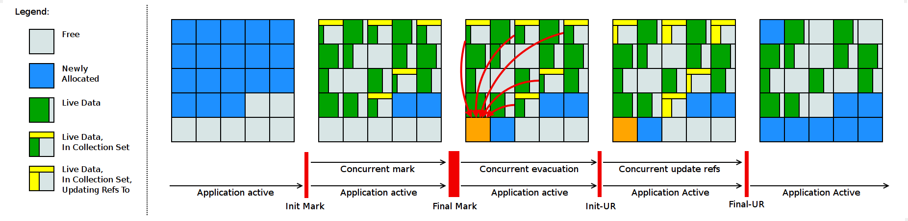
部分日志内容如下：
GC(3) Pause Init Mark 0.771ms
GC(3) Concurrent marking 76480M->77212M(102400M) 633.213ms
GC(3) Pause Final Mark 1.821ms
GC(3) Concurrent cleanup 77224M->66592M(102400M) 3.112ms
GC(3) Concurrent evacuation 66592M->75640M(102400M) 405.312ms
GC(3) Pause Init Update Refs 0.084ms
GC(3) Concurrent update references 75700M->76424M(102400M) 354.341ms
GC(3) Pause Final Update Refs 0.409ms
GC(3) Concurrent cleanup 76244M->56620M(102400M) 12.242ms
对应工作周期如下：
- 初始标记阶段（Init Mark）：为堆和应用程序准备并发标记，然后扫描根对象集。这是 GC 周期的第一次暂停，持续时间取决于根对象集的大小。因为根对象集很小，所以速度很快，暂停非常短。
- 并发标记阶段（Concurrent Mark）：并发标记遍历堆，并跟踪可到达的对象。该阶段与应用程序同时运行，其持续时间取决于存活对象的数量以及堆中对象图的结构。由于应用程序可以在此阶段自由分配新数据，因此在并发标记期间堆占用率会上升。
- 最终标记阶段（Final Mark）：通过排空所有等待中的标记/更新队列，并重新扫描根对象集来完成并发标记。这是 GC 周期中的第二次暂停，这里最主要的时间消耗在排空队列并扫描根对象集合。
- 并发清理阶段（Concurrent Cleanup）：并发清除会回收即时的垃圾区域，即在并发标记之后检测到的没有活动对象的区域。
- 并发转移阶段（Concurrent Evacuation）：并发转移将对象从各个不同区域复制到指定区域。这是与其他 OpenJDK GC 的主要区别。此阶段与应用程序还是可以同时运行，持续时间取决于要复制的集合大小，不会导致程序暂停。
- 初始引用更新阶段（Init Update Refs）：本阶段确保所有 GC 和应用程序线程均已完成转移，然后为下一阶段 GC 做准备。这是周期中的第三次暂停，是所有暂停中最短的一次。
- 并发引用更新阶段（Concurrent Update References）：遍历堆，并发更新引用，并将引用更新为在并发转移期间移动的对象。这是与其他 OpenJDK GC 的主要区别。它的持续时间取决于堆中对象的数量，而不在乎对象图结构，因为它会线性扫描堆。此阶段与应用程序同时运行。
- 最终引用更新阶段（Final Update Refs）：通过再次更新现有的根对象集合来完成更新引用阶段。这是 GC 周期中的最后一个暂停，其持续时间取决于根对象集的大小。
- 并发清理阶段（Concurrent cleanup）：回收现阶段没有引用的区域。
详细的原理，以及每一个步骤具体都发生了什么，可以参考 2019 北京 QCon 上开发组成员古政宇的演讲 PPT：
[《Shenandoah:Your Next Garbage Collector-古政宇》.pdf](https://gitee.com/kimmking/QConBeijing2019/raw/master/Java生态系统/Shenandoah：Your Next Garbage Collector-古政宇.pdf)
需要提醒，并非只有 GC 停顿会导致应用程序响应时间变长。 除了GC长时间停顿会导致系统响应变慢，其他诸如 消息队列延迟、网络延迟、计算逻辑过于复杂、以及外部服务的延时，操作提供的调度程序抖动等都可能导致响应变慢。
使用 Shenandoah 时需要全面了解系统运行情况，综合分析系统响应时间。下图是官方给出的各种 GC 工作负载对比：
可以看到，相对于 CMS、G1、Parallel GC，Shenandoah 在系统负载增加的情况下，延迟时间稳定在非常低的水平，而其他几种 GC 都会迅速上升。
常用参数介绍
推荐几个配置或调试 Shenandoah 的 JVM 参数：
-XX:+AlwaysPreTouch：使用所有可用的内存分页，减少系统运行停顿，为避免运行时性能损失。- 让
-Xmx等于-Xms：设置初始堆大小与最大值一致，可以减轻堆内存扩容带来的压力，与 AlwaysPreTouch 参数配合使用，在启动时申请所有内存，避免在使用中出现系统停顿。 -XX:+UseTransparentHugePages：能够大大提高大堆的性能。
启发式参数
启发式参数告知 Shenandoah GC何时开始GC处理，以及确定要归集的堆块。可以使用 -XX:ShenandoahGCHeuristics=<name> 来选择不同的启发模式，有些启发模式可以配置一些参数，帮助我们更好地使用 GC。可用的启发模式如下。
1. 自适应模式（adaptive）
此为默认参数，通过观察之前的一些 GC 周期，以便在堆耗尽之前尝试启动下一个 GC 周期。
-XX:ShenandoahInitFreeThreshold=#：触发“学习”集合的初始阈值-XX:ShenandoahMinFreeThreshold=#：启发式无条件触发GC的可用空间阈值-XX:ShenandoahAllocSpikeFactor=#：要保留多少堆来应对内存分配峰值-XX:ShenandoahGarbageThreshold=#：设置在将区域标记为收集之前需要包含的垃圾百分比
2. 静态模式（static）
根据堆使用率和内存分配压力决定是否启动 GC 周期。
-XX:ShenandoahFreeThreshold=#：设置空闲堆百分比阈值-XX:ShenandoahAllocationThreshold=#：设置内存分配量百分比阈值-XX:ShenandoahGarbageThreshold=#：设置小堆块标记为可回收的百分比阈值-XX:ShenandoahFreeThreshold=#：设置启动GC周期时的可用堆百分比阈值-XX:ShenandoahAllocationThreshold=#：设置从上一个GC周期到新的GC周期开始之前的内存分配百分比阈值-XX:ShenandoahGarbageThreshold=#：设置在将区域标记为收集之前需要包含的垃圾百分比阈值
3. 紧凑模式（compact）
只要有内存分配，就会连续运行 GC 回收，并在上一个周期结束后立即开始下一个周期。此模式通常会有吞吐量开销，但能提供最迅速的内存空间回收。
-XX:ConcGCThreads=#：设置并发 GC 线程数，可以减少并发 GC 线程的数量，以便为应用程序运行留出更多空间-XX:ShenandoahAllocationThreshold=#：设置从上一个 GC 周期到新的 GC 周期开始之前的内存分配百分比
4. 被动模式（passive）
内存一旦用完，则发生 STW，用于系统诊断和功能测试。
5. 积极模式（aggressive）
它将尽快在上一个 GC 周期完成时启动新的 GC 周期（类似于“紧凑型”），并且将全部的存活对象归集到一块，这会严重影响性能，但是可以被用来测试 GC 本身。
有时候启发式模式会在判断后把更新引用阶段和并发标记阶段合并。可以通过 -XX:ShenandoahUpdateRefsEarly=[on|off] 强制启用和禁用这个特性。
同时针对于内存分配失败时的策略，可以通过调节 ShenandoahPacing 和 ShenandoahDegeneratedGC 参数，对线程进行一定的调节控制。如果还是没有足够的内存，最坏的情况下可能会产生 Full GC，以使得系统有足够的内存不至于发生 OOM。
更多有关如何配置、调试 Shenandoah 的参数信息，请参阅 Shenandoah 官方 Wiki 页面。
各版本 JDK 对 Shenandoah 的集成情况
这张图展示了 Shenandoah GC 目前在各个 JDK 版本上的进展情况，可以看到 OpenJDK 12 和 13 上都可以用。
在 Red Hat Enterprise Linux、Fedora 系统中则可以在 JDK 8 和 JDK 11 版本上使用（肯定的，这两个 Linux 发行版都是 Red Hat 的，谁让这个 GC 也是 Red Hat 开发维护的呢）。
- 默认情况下，OpenJDK 12+ 发布版本通常包括 Shenandoah；
- Fedora 24+ 中 OpenJDK 8+ 发布版本包括 Shenandoah；
- RHEL 7.4+ 中 OpenJDK 8+ 发布版本中包括 Shenandoah 作为技术预览版；
- 基于 RHEL/Fedora 的发行版或其他使用它们包装的发行版也可能启用了 Shenandoah（CentOS、Oracle Linux、Amazon Linux 中也带了 Shenandoah）。
Java 11 版本中的 Epsilon GC
其实 Java 11 版本中还新引入了 Epsilon GC，可以通过参数 -XX:+UseEpsilonGC 开启。
Epsilon GC 的目标是只分配内存，不执行垃圾回收。神兽貔貅一般只吃不拉，不回收和释放内存，所以适合用来做性能分析，但无法用于生产环境，很少有人提及，大家有一个映像即可。
因为不回收，所以在程序执行过程中也就没有 GC 消耗，性能测试更准确！
GC 的使用总结
到目前为止，我们一共了解了 Java 目前支持的所有 GC 算法，一共有 7 类：
- 串行 GC（Serial GC）：单线程执行，应用需要暂停；
- 并行 GC（ParNew、Parallel Scavenge、Parallel Old）：多线程并行地执行垃圾回收，关注与高吞吐；
- CMS（Concurrent Mark-Sweep）：多线程并发标记和清除，关注与降低延迟；
- G1（G First）：通过划分多个内存区域做增量整理和回收，进一步降低延迟；
- ZGC（Z Garbage Collector）：通过着色指针和读屏障，实现几乎全部的并发执行，几毫秒级别的延迟，线性可扩展；
- Epsilon：实验性的 GC，供性能分析使用；
- Shenandoah：G1 的改进版本，跟 ZGC 类似。
从中可以看出 GC 算法和实现的演进路线：
- 串行 -> 并行：重复利用多核 CPU 的优势，大幅降低 GC 暂停时间，提升吞吐量。
- 并行 -> 并发：不只开多个 GC 线程并行回收，还将 GC 操作拆分为多个步骤，让很多繁重的任务和应用线程一起并发执行，减少了单次 GC 暂停持续的时间，这能有效降低业务系统的延迟。
- CMS -> G1：G1 可以说是在 CMS 基础上进行迭代和优化开发出来的。修正了 CMS 一些存在的问题，而且在 GC 思想上有了重大进步，也就是划分为多个小堆块进行增量回收，这样就更进一步地降低了单次 GC 暂停的时间。可以发现，随着硬件性能的提升，业界对延迟的需求也越来越迫切。
- G1 -> ZGC：ZGC 号称无停顿垃圾收集器，这又是一次极大的改进。ZGC 和 G1 有一些相似的地方，但是底层的算法和思想又有了全新的突破。 ZGC 把一部分 GC 工作，通过读屏障触发陷阱处理程序的方式，让业务线程也可以帮忙进行 GC。这样业务线程会有一点点工作量，但是不用等，延迟也被极大地降下来了。
同时我们应该注意到，并发压缩目前似乎是减少暂停时间的最佳解决方案。但是经验告诉我们：“脱离场景谈性能都是耍流氓”。
目前绝大部分 Java 应用系统，堆内存并不大比如 2G~4G 以内，而且对 10ms 这种低延迟的 GC 暂停不敏感，也就是说处理一个业务步骤，大概几百毫秒都是可以接受的，GC 暂停 100ms 还是 10ms 没多大区别。另一方面，系统的吞吐量反而往往是我们追求的重点，这时候就需要考虑采用并行 GC 或 CMS。如果堆内存再大一些，可以考虑 G1、GC。如果内存非常大（比如超过 16G，甚至是 64G、128G），或者是对延迟非常敏感（比如高频量化交易系统），就需要考虑使用本节提到的新 GC 实现。
伴随着业务需求、Java 生态的演进，硬件技术的进步，以及 GC 理论研究的进展，我们可选的 GC 算法越来越多，适用的场景也越来越多。每一种 GC 算法都有自己的适应场景，只是范围广不广而已。
现在是技术爆炸的时代，随着各类业务场景的不断涌现，新的技术也在不断发展。新的技术升级一般都是为了针对性地解决原有技术的一些问题。这样只要我们能提前预研一些新技术，就能够最短的时间把这些新技术应用到自己的某些适当场景，享受到技术作为第一生产力的红利，提升技术水平和对业务的支持发展和服务能力。
参考材料
- https://wiki.openjdk.java.net/display/zgc/Main
- https://www.usenix.org/legacy/events/vee05/full_papers/p46-click.pdf
- http://dinfuehr.github.io/blog/a-first-look-into-zgc/
- https://medium.com/airbnb-engineering/nebula-as-a-storage-platform-to-build-airbnbs-search-backends-ecc577b05f06
- https://www.cnblogs.com/JunFengChan/p/11707360.html
- https://dzone.com/articles/jhsdb-a-new-tool-for-jdk-9
- https://wiki.openjdk.java.net/display/shenandoah/Main
- https://jdk.java.net/14/release-notes
- http://openjdk.java.net/jeps/364
- https://bugs.openjdk.java.net/browse/JDK-8229358
- http://cr.openjdk.java.net/~pliden/slides/ZGC-FOSDEM-2018.pdf
- https://www.ibm.com/developerworks/cn/java/the-new-features-of-Java-10/index.html
- https://www.ibm.com/developerworks/cn/java/the-new-features-of-Java-11/index.html
- https://www.ibm.com/developerworks/cn/java/j-tutorials-migration-to-java-11-made-easy/index.html
- https://www.ibm.com/developerworks/cn/java/the-new-features-of-Java-12/index.html
- https://www.ibm.com/developerworks/cn/java/the-new-features-of-Java-13/index.html
- The pauseless GC algorithm 论文
16 Oracle GraalVM 介绍：会当凌绝顶、一览众山小
GraalVM 简介与特性
前面了解了那么多的 JVM 相关技术，我们可以发现一个脉络就是 Java 相关的体系越来越复杂，越来越强大。放眼看去，最近十年来，各种各类的技术和平台层出不穷，每类技术都有自己的适用场景和使用人群。并且伴随着微服务和云原生等理念的出现和发展，越来越多的技术被整合到一起。那么作为目前最流行的平台技术，Java/JVM 也自然不会在这个大潮中置身事外。本节我们介绍一个语言平台的集大成者 GraalVM：
- 从功能的广度上，它的目标是打通各类不同的语言平台，这样开发者可以博取众长，不同的团队、不同的模块能够使用不同的平台去做。（这也是目前微服务架构的一个流行趋势。试想一下：一个非常大的产品线，大家共同维护几十个不同功能、各自独立部署运行的服务模块，那么每个团队就可以按照自己的想法选择合适的语言和平台工具去做。但是随着业务的不断发展，模块一直在重构，分分合合，怎么办？Python 的算法服务、Node.js 的 REST 脚手架，怎么跟 Java 的模块产生联系？！）
- 从性能的深度上，它则可以把各类程序转换成本地的原生应用，脱离中间语言和虚拟机来执行，从而获得最佳的性能，包括运行速度和内存占用。
什么是 GraalVM
GraalVM 是 Oracle 开源的一款通用虚拟机产品，官方称之为 Universal GraalVM，是新一代的通用多语言高性能虚拟机。能执行各类高性能与互操作性任务，在无需额外开销的前提下允许用户构建多语言应用程序。
官方网站为：
GraalVM 有什么特点
GraalVM 既可以独立运行，也可以在不同的部署场景中使用，比如在 OpenJDK 虚拟机环境、Node.js 环境，或者 Oracle、MySQL 数据库等环境中运行。下图来自 GraalVM 官网，展示了目前支持的平台技术。
GraalVM 支持大量的语言，包括：
- 基于 JVM 的语言（例如 Java、Scala、Groovy、Kotlin、Clojure 等）；
- 基于 LLVM 的语言（例如 C、C++ 等语言）；
- 动态语言，例如 JavaScript、Ruby、Python、R 语言等等。
包括以下动态语言引擎：
- JavaScript 引擎：Graal.js 是一款 JavaScript 解释器/编译器，能够在 JVM 上运行 Node.js 应用；
- FastR 引擎：这是 R 语言解释器/编译器；
- RubyTruffle 引擎：支持 Ruby 且性能优于 Ruby。
GraalVM 支持哪些特性呢？
- 编译质量和执行性能更高，不管是 Java、Ruby 还是 R 语言，GraalVM 的编译器编译出来的代码，性能都更强悍
- 开发中可以组合 JavaScript、Java、Ruby 和 R 语言
- 在 GraalVM 上运行本地语言
- 开发适用于所有编程语言的通用工具
- 扩展基于 JVM 的应用程序
- 扩展本地应用程序
- 将 Java 程序编译之后作为本地库，供其他程序链接和调用
- 在数据库环境中支持多种语言，主要是 Oracle 和 MySQL 数据库环境
- 在 GraalVM 的基础上，我们甚至可以创建自己的语言
- 对于 Node.js 开发者来说，GraalVM 环境支持更大的堆内存，而且性能损失很小
- 程序的启动时间更短
- 占用内存更低
启动时间对比：
占用内存对比：
解决了哪些痛点
GraalVM 提供了一个全面的生态系统，消除编程语言之间的隔离，打通了不同语言之间的鸿沟，在共享的运行时中实现了互操作性，让我们可以进行混合式多语言编程。
用 Graal 执行的语言可以互相调用，允许使用来自其他语言的库，提供了语言的互操作性。同时结合了对编译器技术的最新研究，在高负载场景下 GraalVM 的性能比传统 JVM 要好得多。
GraalVM 的混合式多语言编程可以解决开发中常见的这些问题：
- 那个库我这个语言没有，我就不得不自己撸一个；
- 那个语言最适合解决我这个问题，但是我这个环境下跑不起来；
- 这个问题已经被我的语言解决了，但是我的语言跑起来太慢了；
- 通过使用 Polyglot API，GraalVM 要给开发者带来真正的语言级自由。
开发人员使用自己最擅长的语言来编程，提高生产力的同时，更有希望赢得市场。
跨语言的工作原理
GraalVM 提供了一种在不同语言之间无缝传值的方法，而不需要像其它虚拟机一样进行序列化和反序列化。这样就保证了跨语言的零开销互操作性，也就是说性能无损失，所以才号称高性能虚拟机。
GraalVM 开发了“跨语言互操作协议”，它是一种特殊的接口协议，每种运行在 GraalVM 之上的语言都要实现这种协议，这样就能保证跨语言的互操作性。语言和语言之间无须了解对方就可以高效传值。该协议还在不断改进中，未来会支持更多特性。
弱化主语言
GraalVM 开发了一个实验性的启动器 Polyglot。在 Polyglot 里面不存在主语言的概念，每种语言都是平等的，可以使用 Polyglot 运行任意语言编写的程序，而不需要前面的每种语言单独一个启动器。Polyglot 会通过文件的扩展名来自动分类语言。
Shell
GraalVM 还开发了一个动态语言的 Shell，该 Shell 默认使用 JS 语言，可以使用命令切换到任意其它语言进行解释操作。
将 Java 程序编译为可执行文件
我们知道，Hotspot 推出之后，号称达到了 C++ 80% 的性能，其关键诀窍就在于 JIT 即时编译。
稍微推测一下，我们就会发现高性能的诀窍在于编译，而不是解释执行。
同样的道理，如果能够把 Java 代码编译为本地机器码，那么性能肯定也会有一个很大的提高。
恰好，GraalVM 就有静态编译的功能，可以把 Java 程序编译为本地二进制可执行文件。
GraalVM 可以为基于 JVM 的程序创建本地镜像。 镜像生成过程中，通过使用静态分析技术，从 Java main 方法开始，查找所有可以执行到的代码，然后执行全量的提前编译（AOT，ahead-of-time）。
生成的二进制可执行文件，包含整个程序的所有机器码指令，可以快速启动和执行，还可以被其他程序链接。
编译时还可以选择包含 GraalVM 编译器，以提供额外的即时（JIT）编译支持，从而高性能地运行任何基于 GraalVM 的语言。
为了获得额外的性能，还可以使用在应用程序的前一次运行中收集的配置文件引导优化来构建本机映像。下文可以看到如何构建本地映像的示例。
在 JVM 中运行应用程序需要启动过程，会消耗一定的时间，并且会额外占用一些内存。但通过静态编译之后的程序，相对来说占用内存更小、启动速度也更快。
GraalVM 组件
GraalVM 由核心组件和附加组件组成，打包在一起提供下载，GraalVM 当前最新版本是 19.3.1，是一款独立部署的 JDK。也包含一个共享的运行时，用于执行 Java 或基于 JVM 的语言（如 Scala、Kotlin）、动态语言（如 JavaScript、R、Ruby、Python）和基于 LLVM 的语言（如 C、C++）。
- 运行时：主要是 Java 运行时系统和 NodeJS 运行时系统
- 库文件：比如编译器，JavaScript 解释器，LLVM 字节码（bitcode）执行器，Polyglot API 等。
- 工具：JavaScript REPL 环境、LLVM 相关的命令行工具、支持其他语言的安装程序。
下载与安装
GraalVM 支持 Docker 容器，本文不进行介绍，相关信息请参考：
下面我们来看看怎么在开发环境下载和安装。
\1. 打开官方网站：
\2. 找到下载页面：
从下载页面中可以看到，GraalVM 分为社区版和企业版两种版本。
社区版（Community Edition）
很明显，社区版是免费版本，提供基于 OpenJDK 8 和 OpenJDK 11 的版本，支持 x86 架构的 64 位系统：包括 macOS、Linux 和 Windows 平台。
需要从 GitHub 下载。下载页面为：
企业版（Enterprise Edition）
企业版提供基于 Oracle Java 8 和 Oracle Java 11 的版本，主要支持 macOS 和 Linux 系统，Windows 系统的 GraalVM 企业版还是实验性质的开发者版本。
每个授权大约 1000~1500 人民币，当然，基于 Oracle 的习惯，大家是可以免费下载和试用的。
需要从 OTN（Oracle TechNetwork）下载：
https://www.oracle.com/technetwork/graalvm/downloads/index.html
根据需要确定对应的版本，比如我们选择社区版。
社区版的组件包括：
- JVM
- JavaScript Engine & Node.js Runtime
- LLVM Engine
- Developer Tools
从 GitHub 下载页面 中找到下载链接。
如下图所示：
这里区分操作系统（macOS/darwin、Linux、Windows）、CPU 架构（AArch64、AMD64（Intel/AMD））、以及 JDK 版本。 我们根据自己的系统选择对应的下载链接。
比如 macOS 系统的 JDK 11 版本，对应的下载文件为：
# GraalVM 主程序绿色安装包
graalvm-ce-java11-darwin-amd64-19.3.1.tar.gz
# llvm-toolchain 的本地安装包；使用 gu -L 命令
llvm-toolchain-installable-java11-darwin-amd64-19.3.1.jar
# native-image 工具的本地安装包；使用 gu -L 命令
native-image-installable-svm-java11-darwin-amd64-19.3.1.jar
Windows 系统则只提供单个 zip 包下载：
# JDK11 版本
graalvm-ce-java11-windows-amd64-19.3.1.zip
# JDK8 版本
graalvm-ce-java8-windows-amd64-19.3.1.zip
然后右键另存为即可。
因为 GitHub 的某些资源可能被屏蔽，这里可能需要一点技巧。
如果下载不了，可以求助小伙伴，或者加入我们的交流群。或者试试下载 Oracle 的企业版，或者试试迅雷。
下载完成后进行解压，解压之后会发现这就是一个 JDK 的结构。
好吧，会使用 Java 的我，表示使用起来没什么压力。
进到解压后的 bin 目录，查看版本号：
# 注意这里是笔者的目录
cd graalvm-ce-java11-19.3.1/Contents/Home/bin/
# 看 Java 版本号
./java -version
openjdk version "11.0.6" 2020-01-14
OpenJDK Runtime Environment GraalVM CE 19.3.1 (build 11.0.6+9-jvmci-19.3-b07)
OpenJDK 64-Bit Server VM GraalVM CE 19.3.1 (build 11.0.6+9-jvmci-19.3-b07, mixed mode, sharing)
和 JDK 使用起来没多少差别，是吧？
如果是独立的环境，还可以执行设置 PATH 环境变量等操作。
解压后的 bin 目录下，除了 JDK 相关的可执行文件之外，还有：
- js 这个文件可以启动 JavaScript 控制台，类似于 Chrome 调试控制台一样的 REPL 环境。CTRL+C 退出。
- node 这是嵌入的 Node.js，使用的是 GraalVM 的 JavaScript 引擎。
- lli 官方说这是 GraalVM 集成的高性能 LLVM bitcode interpreter。
- gu 全称是 GraalVM Updater，程序安装工具，比如可以安装 Python、R 和 Ruby 的语言包。
使用示例
官方为各种语言提供了 GraalVM 相关的介绍和开发者文档：
Java 用法
下载并解压之后，只需要设置好 PATH，即可用于 Java 开发。
看官方的示例代码：
public class HelloWorld {
public static void main(String[] args) {
System.out.println("Hello, World!");
}
}
这里为了省事，我们干点 stupid 的事情，读者理解意思即可，试验时也可以像我这样折腾。
# 查看当前目录
$ pwd
/Users/renfufei/SOFT_ALL/graalvm-ce-java11-19.3.1/Contents/Home/bin
# 查看源文件
$ cat HelloWorld.java
public class HelloWorld {
public static void main(String[] args) {
System.out.println("Hello, World!");
}
}
然后进行编译和执行：
# 查看当前目录
$ pwd
/Users/renfufei/SOFT_ALL/graalvm-ce-java11-19.3.1/Contents/Home/bin
# 编译
$ ./javac HelloWorld.java
# 执行程序
$ ./java HelloWorld
Hello, World!
OK，程序正常输出。
更多示例请参考：
官方的示例还是很有意思的，对于提升我们的开发水平有一些帮助。
JS 的用法
执行 JS 的 REPL 调试环境：
$ ./js
> 1 + 1
2
想要退出，按 CTRL+C 即可。
查看 node 和 npm 的版本号：
$ ./node -v
v12.14.0
$ ./npm -v
6.13.4
接下来就可以和正常的 Node.js 环境一样安装各种依赖包进行开发和使用了。
更多程序，请参考：
https://www.graalvm.org/docs/getting-started/#running-javascript
LLVM 的用法
根据官方的示例：
https://www.graalvm.org/docs/getting-started/#running-llvm-bitcode
我们执行以下命令来安装 LLVM 相关工具：
$ ./gu install llvm-toolchain
Downloading: Component catalog from www.graalvm.org
Processing Component: LLVM.org toolchain
Downloading: Component llvm-toolchain: LLVM.org toolchain from github.com
[ ]
如果下载速度比较慢的话，这里得等好长时间，这里没有进度条显示，不要着急。
如果因为网络问题安装失败，也可以下载后使用本地的 jar 文件安装：
./gu -L install ../lib/llvm-toolchain-installable-java11-darwin-amd64-19.3.1.jar
其中 -L 选项，等价于 --local-file 或者 --file，表示从本地文件安装组件。只要路径别填写错就行。
安装 llvm-toolchain 完成之后，查看安装路径，并配置到环境变量中：
$ ./lli --print-toolchain-path
/Users/renfufei/SOFT_ALL/graalvm-ce-java11-19.3.1/Contents/Home/languages/llvm/native/bin
$ export LLVM_TOOLCHAIN=$(./lli --print-toolchain-path)
$ echo $LLVM_TOOLCHAIN
/Users/renfufei/SOFT_ALL/graalvm-ce-java11-19.3.1/Contents/Home/languages/llvm/native/bin
注意这里我偷懒，没配置 PATH，所以使用了 ./lli。
创建一个 C 程序文件，内容示例如下：
cat hello.c
#include <stdio.h>
int main() {
printf("Hello from GraalVM!\n");
return 0;
}
然后就可以编译和执行 bitcode 了：
# 编译
$ $LLVM_TOOLCHAIN/clang hello.c -o hello
# 执行
$ ./lli hello
Hello from GraalVM!
安装其他工具和语言开发环境
安装 Ruby
安装文档请参考：
./gu install ruby
安装 R
安装文档请参考：
./gu install R
安装 Python
安装文档请参考：
https://www.graalvm.org/docs/getting-started/#running-python
./gu install python
启动 Python：
graalpython
编译 Java 程序为可执行文件
首先需要安装 native-image 工具，参考：
https://www.graalvm.org/docs/reference-manual/native-image/#install-native-image
安装好之后就可以根据文档来使用了，就比如前面的 HelloWorld 程序。
// HelloWorld.java
public class HelloWorld {
public static void main(String[] args) {
System.out.println("Hello, World!");
}
}
编译并执行：
# Javac 编译
$ javac HelloWorld.java
# 编译为本地可执行程序
$ native-image HelloWorld
# 直接执行
$ ./helloworld
Hello, World!
看到这里，同学们可以不妨自己动手试试，把自己的 Spring Boot 之类的项目，用 GraalVM 打包成可执行文件（目前还不支持 Windows 版本）。再看一下启动时间，有惊喜哦。
参考文档：
组合各种语言
请参考文档：
参考资料
17 GC 日志解读与分析（基础配置）
本章通过具体示例来演示如何输出 GC 日志，并对输出的日志信息进行解读分析，从中提取有用的信息。
本次演示的示例代码
为了演示需要，我们先来编写一段简单的 Java 代码：
package demo.jvm0204;
import java.util.Random;
import java.util.concurrent.TimeUnit;
import java.util.concurrent.atomic.LongAdder;
/*
演示 GC 日志生成与解读
*/
public class GCLogAnalysis {
private static Random random = new Random();
public static void main(String[] args) {
// 当前毫秒时间戳
long startMillis = System.currentTimeMillis();
// 持续运行毫秒数; 可根据需要进行修改
long timeoutMillis = TimeUnit.SECONDS.toMillis(1);
// 结束时间戳
long endMillis = startMillis + timeoutMillis;
LongAdder counter = new LongAdder();
System.out.println("正在执行...");
// 缓存一部分对象; 进入老年代
int cacheSize = 2000;
Object[] cachedGarbage = new Object[cacheSize];
// 在此时间范围内,持续循环
while (System.currentTimeMillis() < endMillis) {
// 生成垃圾对象
Object garbage = generateGarbage(100*1024);
counter.increment();
int randomIndex = random.nextInt(2 * cacheSize);
if (randomIndex < cacheSize) {
cachedGarbage[randomIndex] = garbage;
}
}
System.out.println("执行结束!共生成对象次数:" + counter.longValue());
}
// 生成对象
private static Object generateGarbage(int max) {
int randomSize = random.nextInt(max);
int type = randomSize % 4;
Object result = null;
switch (type) {
case 0:
result = new int[randomSize];
break;
case 1:
result = new byte[randomSize];
break;
case 2:
result = new double[randomSize];
break;
default:
StringBuilder builder = new StringBuilder();
String randomString = "randomString-Anything";
while (builder.length() < randomSize) {
builder.append(randomString);
builder.append(max);
builder.append(randomSize);
}
result = builder.toString();
break;
}
return result;
}
}
程序并不复杂，我们指定一个运行时间作为退出条件，时间一到自动退出循环。在 generateGarbage 方法中，我们用了随机数来生成各种类型的数组对象并返回。
在 main 方法中，我们用一个数组来随机存放一部分生成的对象，这样可以模拟让部分对象晋升到老年代。具体的持续运行时间和缓存对象个数，各位同学可以自己进行调整。
一般来说，Java 中的大对象主要就是各种各样的数组，比如开发中最常见的字符串，实际上 String 内部就是使用字符数组 char[] 来存储的。
额外说一句，这个示例除了可以用来进行 GC 日志分析之外，稍微修改一下，还可以用作其他用途：
- 比如让缓存的对象变多，在限制堆内存的情况下，就可以模拟“内存溢出”。
- 增加运行时长，比如加到 30 分钟或者更长，我们就可以用前面介绍过的 VisualVM 等工具来实时监控和观察。
- 当然，我们也可以使用全局静态变量来缓存，用来模拟“内存泄漏”，以及进行堆内存 Dump 的试验和分析。
- 加大每次生成的数组的大小，可以用来模拟“大对象/巨无霸对象”（大对象/巨无霸对象主要是 G1 中的概念，比如超过 1MB 的数组，具体情况在后面的内容中再进行探讨）。
常用的 GC 参数
我们从简单到复杂，一步一步来验证前面学习的知识，学会使用，加深巩固。
启动示例程序
如果是在 IDEA、Eclipse 等集成开发环境中，直接在文件中点击鼠标右键，选择“Run…”即可执行。
如果使用 JDK 命令行，则可以使用 javac 工具来编译，使用 java 命令来执行（还记得吗？JDK 8 以上版本，这两个命令可以合并成一个）：
$ javac demo/jvm0204/*.java
$ java demo.jvm0204.GCLogAnalysis
正在执行...
执行结束!共生成对象次数:1423
程序执行 1 秒钟就自动结束了，因为没有指定任何启动参数，所以输出的日志内容也很简单。
还记得我们在前面的《[JVM 启动参数详解]》章节中介绍的 GC 参数吗？
我们依次加上这些参数来看看效果。
输出 GC 日志详情
然后加上启动参数 -XX:+PrintGCDetails，打印 GC 日志详情，再次执行示例。
IDEA 等集成开发环境可以在“VM options”中指定启动参数，参考前面的内容。注意不要有多余的空格。
java -XX:+PrintGCDetails demo.jvm0204.GCLogAnalysis
执行结果摘录如下：
正在执行...
[GC (Allocation Failure)
[PSYoungGen: 65081K->10728K(76288K)]
65081K->27102K(251392K), 0.0112478 secs]
[Times: user=0.03 sys=0.02, real=0.01 secs]
......此处省略了多行
[Full GC (Ergonomics)
[PSYoungGen: 80376K->0K(872960K)]
[ParOldGen: 360220K->278814K(481280K)]
440597K->278814K(1354240K),
[Metaspace: 3443K->3443K(1056768K)],
0.0406179 secs]
[Times: user=0.23 sys=0.01, real=0.04 secs]
执行结束!共生成对象次数:746
Heap
PSYoungGen total 872960K, used 32300K [0x000000076ab00000, 0x00000007b0180000, 0x00000007c0000000)
eden space 792576K, 4% used [0x000000076ab00000,0x000000076ca8b370,0x000000079b100000)
from space 80384K, 0% used [0x00000007a3800000,0x00000007a3800000,0x00000007a8680000)
to space 138240K, 0% used [0x000000079b100000,0x000000079b100000,0x00000007a3800000)
ParOldGen total 481280K, used 278814K [0x00000006c0000000, 0x00000006dd600000, 0x000000076ab00000)
object space 481280K, 57% used [0x00000006c0000000,0x00000006d1047b10,0x00000006dd600000)
Metaspace used 3449K, capacity 4494K, committed 4864K, reserved 1056768K
class space used 366K, capacity 386K, committed 512K, reserved 1048576K
可以看到，使用启动参数 -XX:+PrintGCDetails，发生 GC 时会输出相关的 GC 日志。
这个参数的格式为:
-XX:+，这是一个布尔值开关。
在程序执行完成后、JVM 关闭前，还会输出各个内存池的使用情况，从最后面的输出中可以看到。
下面我们来简单解读上面输出的堆内存信息。
Heap 堆内存使用情况
PSYoungGen total 872960K, used 32300K [0x......)
eden space 792576K, 4% used [0x......)
from space 80384K, 0% used [0x......)
to space 138240K, 0% used [0x......)
PSYoungGen，年轻代总计 872960K，使用量 32300K，后面的方括号中是内存地址信息。
- 其中 eden space 占用了 792576K，其中 4% used
- 其中 from space 占用了 80384K，其中 0% used
- 其中 to space 占用了 138240K，其中 0% used
ParOldGen total 481280K, used 278814K [0x......)
object space 481280K, 57% used [0x......)
ParOldGen，老年代总计 total 481280K，使用量 278814K。
- 其中 object space 占用了 481280K，其中 57% used
Metaspace used 3449K, capacity 4494K, committed 4864K, reserved 1056768K
class space used 366K, capacity 386K, committed 512K, reserved 1048576K
Metaspace，元数据区总计使用了 3449K，容量是 4494K，JVM 保证可用的大小是 4864K，保留空间 1GB 左右。
- 其中 class space 使用了 366K，capacity 386K
指定 GC 日志文件
我们在前面的基础上，加上启动参数 -Xloggc:gc.demo.log，再次执行。
# 请注意命令行启动时没有换行，此处是手工排版
java -Xloggc:gc.demo.log -XX:+PrintGCDetails
demo.jvm0204.GCLogAnalysis
提示：从 JDK 8 开始，支持使用
%p、%t等占位符来指定 GC 输出文件，分别表示进程 pid 和启动时间戳。例如：
-Xloggc:gc.%p.log、-Xloggc:gc-%t.log。
在某些情况下，将每次 JVM 执行的 GC 日志输出到不同的文件可以方便排查问题。
如果业务访问量大，导致 GC 日志文件太大，可以开启 GC 日志轮换，分割成多个文件，可以参考：
执行后在命令行输出的结果如下：
正在执行...
执行结束!共生成对象次数:1327
GC 日志哪去了？
查看当前工作目录，可以发现多了一个文件 gc.demo.log。 如果是 IDE 开发环境，gc.demo.log 文件可能在项目的根目录下。 当然，我们也可以指定 GC 日志文件存放的绝对路径，比如 -Xloggc:/var/log/gc.demo.log 等形式。
gc.demo.log 文件的内容如下：
Java HotSpot(TM) 64-Bit Server VM (25.162-b12) ......
Memory: 4k page，physical 16777216k(1519448k free)
/proc/meminfo:
CommandLine flags:
-XX:InitialHeapSize=268435456 -XX:MaxHeapSize=4294967296
-XX:+PrintGC -XX:+PrintGCDetails -XX:+PrintGCTimeStamps
-XX:+UseCompressedClassPointers -XX:+UseCompressedOops
-XX:+UseParallelGC
0.310: [GC (Allocation Failure)
[PSYoungGen: 61807K->10732K(76288K)]
61807K->22061K(251392K), 0.0094195 secs]
[Times: user=0.02 sys=0.02, real=0.01 secs]
0.979: [Full GC (Ergonomics)
[PSYoungGen: 89055K->0K(572928K)]
[ParOldGen: 280799K->254491K(434176K)]
369855K->254491K(1007104K),
[Metaspace: 3445K->3445K(1056768K)],
0.0362652 secs]
[Times: user=0.20 sys=0.01, real=0.03 secs]
...... 此处省略部分内容
Heap
...... 堆内存信息格式请参考前面的日志
我们可以发现，加上 -Xloggc: 参数之后，GC 日志信息输出到日志文件中。
文件里最前面是 JVM 相关信息，比如内存页面大小、物理内存大小、剩余内存等信息。
然后是 CommandLine flags 这部分内容。在分析 GC 日志文件时，命令行参数也是一项重要的参考。因为可能你拿到了日志文件，却不知道线上的配置，日志文件中打印了这个信息，能有效减少分析排查时间。
指定 -Xloggc: 参数，自动加上了 -XX:+PrintGCTimeStamps 配置。观察 GC 日志文件可以看到，每一行前面多了一个时间戳（如 0.310:），表示 JVM 启动后经过的时间（单位秒）。
细心的同学还可以发现，JDK 8 默认使用的垃圾收集器参数：
-XX:+UseParallelGC。
打印 GC 事件发生的日期和时间
我们在前面的基础上，加上启动参数 -XX:+PrintGCDateStamps，再次执行。
java -Xloggc:gc.demo.log -XX:+PrintGCDetails
-XX:+PrintGCDateStamps demo.jvm0204.GCLogAnalysis
执行完成后，GC 日志文件中的内容摘录如下：
...... 省略多行
CommandLine flags:
-XX:InitialHeapSize=268435456 -XX:MaxHeapSize=4294967296
-XX:+PrintGC -XX:+PrintGCDateStamps
-XX:+PrintGCDetails -XX:+PrintGCTimeStamps
-XX:+UseCompressedClassPointers -XX:+UseCompressedOops
-XX:+UseParallelGC
2019-12-15T15:09:59.235-0800: 0.296:
[GC (Allocation Failure)
[PSYoungGen: 63844K->10323K(76288K)]
63844K->20481K(251392K),
0.0087896 secs]
[Times: user=0.02 sys=0.02, real=0.01 secs]
2019-12-15T15:09:59.889-0800: 0.951:
[Full GC (Ergonomics)
[PSYoungGen: 81402K->0K(577536K)]
[ParOldGen: 270176K->261230K(445952K)]
351579K->261230K(1023488K),
[Metaspace: 3445K->3445K(1056768K)],
0.0369622 secs]
[Times: user=0.19 sys=0.00, real=0.04 secs]
Heap
.......省略内容参考前面的格式
可以看到，加上 -XX:+PrintGCDateStamps 参数之后，GC 日志每一行前面，都打印了 GC 发生时的具体时间。如 2019-12-15T15:09:59.235-0800 表示的是“东 8 区时间 2019 年 12 月 15 日 15:09:59 秒.235 毫秒”。
指定堆内存的大小
从前面的示例中可以看到 GC 日志文件中输出的 CommandLine flags 信息。
即使我们没有指定堆内存，JVM在启动时也会自动算出一个默认值出来。例如：-XX:InitialHeapSize=268435456 -XX:MaxHeapSize=4294967296 是笔者机器上的默认值，等价于 -Xms256m -Xmx4g 配置。
我们现在继续增加参数，这次加上启动参数 -Xms512m -Xmx512m，再次执行。
java -Xms512m -Xmx512m
-Xloggc:gc.demo.log -XX:+PrintGCDetails
-XX:+PrintGCDateStamps demo.jvm0204.GCLogAnalysis
此时输出的 GC 日志文件内容摘录如下：
......
CommandLine flags:
-XX:InitialHeapSize=536870912 -XX:MaxHeapSize=536870912
-XX:+PrintGC -XX:+PrintGCDateStamps
-XX:+PrintGCDetails -XX:+PrintGCTimeStamps
-XX:+UseCompressedClassPointers -XX:+UseCompressedOops
-XX:+UseParallelGC
2019-12-15T15:15:09.677-0800: 0.358:
[GC (Allocation Failure)
[PSYoungGen: 129204K->21481K(153088K)]
129204K->37020K(502784K), 0.0121865 secs]
[Times: user=0.03 sys=0.03, real=0.01 secs]
2019-12-15T15:15:10.058-0800: 0.739:
[Full GC (Ergonomics)
[PSYoungGen: 20742K->0K(116736K)]
[ParOldGen: 304175K->247922K(349696K)]
324918K->247922K(466432K),
[Metaspace: 3444K->3444K(1056768K)],
0.0319225 secs]
[Times: user=0.18 sys=0.01, real=0.04 secs]
此时堆内存的初始值和最大值都是 512MB。具体的参数可根据实际需要配置，我们为了演示，使用了一个较小的堆内存配置。
指定垃圾收集器
一般来说，使用 JDK 8 时我们可以使用以下几种垃圾收集器：
-XX:+UseSerialGC
-XX:+UseParallelGC
-XX:+UseParallelGC -XX:+UseParallelOldGC
-XX:+UseConcMarkSweepGC
-XX:+UseConcMarkSweepGC -XX:+UseParNewGC
-XX:+UseG1GC
它们都是什么意思呢，我们再简单回顾一下：
- 使用串行垃圾收集器：
-XX:+UseSerialGC - 使用并行垃圾收集器：
-XX:+UseParallelGC和-XX:+UseParallelGC -XX:+UseParallelOldGC是等价的，可以通过 GC 日志文件中的 flags 看出来。 - 使用 CMS 垃圾收集器：
-XX:+UseConcMarkSweepGC和-XX:+UseParNewGC -XX:+UseConcMarkSweepGC是等价的。但如果只指定-XX:+UseParNewGC参数则老年代 GC 会使用 SerialGC。使用CMS时，命令行参数中会自动计算出年轻代、老年代的初始值和最大值，以及最大晋升阈值等信息（例如-XX:MaxNewSize=178958336 -XX:NewSize=178958336 -XX:OldSize=357912576）。 - 使用 G1 垃圾收集器：
-XX:+UseG1GC。原则上不能指定 G1 垃圾收集器的年轻代大小，否则不仅是画蛇添足，更是自废武功了。因为 G1 的回收方式是小批量划定区块（region）进行，可能一次普通 GC 中既有年轻代又有老年代，可能某个区块一会是老年代，一会又变成年轻代了。
如果使用不支持的 GC 组合，会怎么样呢？答案是会启动失败，报 fatal 错误，有兴趣的同学可以试一下。
下一节会依次演示各种垃圾收集器的使用，并采集和分析他们产生的日志。它们的格式差距并不大，学会分析一种 GC 日志之后，就可以举一反三，对于其他类型的 GC 日志，基本上也能看懂各项信息的大概意思。
其他参数
JVM 里还有一些 GC 日志相关的参数，例如：
-XX:+PrintGCApplicationStoppedTime可以输出每次 GC 的持续时间和程序暂停时间；-XX:+PrintReferenceGC输出 GC 清理了多少引用类型。
这里就不再赘述，想了解配置详情的，可以回头复习前面的章节。
说明：大部分情况下，配置 GC 参数并不是越多越好。原则上只配置最重要的几个参数即可，其他的都保持默认值，除非你对系统的业务特征有了深入的分析和了解，才需要进行某些细微参数的调整。毕竟，古语有云：“过早优化是万恶之源”。
GC 事件的类型简介
一般来说，垃圾收集事件（Garbage Collection events）可以分为三种类型：
- Minor GC（小型 GC）
- Major GC（大型 GC）
- Full GC（完全 GC）
虽然 Minor GC，Major GC 和 Full GC 这几个词汇到处都在用，但官方并没有给出标准的定义。这些术语出现在官方的各种分析工具和垃圾收集日志中，并不是很统一。官方的文档和工具之间也常常混淆，这些混淆甚至根植于标准的 JVM 工具中。
MinorGC 称为“小型 GC”，还是“次要GC”更合理呢？
辨析：在大部分情况下，发生在年轻代的 Minor GC 次数更多，有些文章将次数更多的 GC 称为“次要 GC”明显是不太合理的。
在这里，我们将 Minor GC 翻译为“小型 GC”，而不是“次要 GC”；将 Major GC 翻译为“大型GC”而不是“主要 GC”；Full GC 翻译为完全 GC；有时候也直接称为 Full GC。
其实这也是因为专有名词在中英文翻译的时候，可能会有多个英语词汇对应一个中文词语，也会有一个英文词汇对应多个中文词语，要看具体情况而定。
比如一个类似的情况：Major Version 和 Minor Version，这两个名词一般翻译为“主要版本”和“次要版本”。这当然没问题，大家都能理解，一看就知道什么意思。甚至直接翻译为“大版本号”和“小版本号”也是能讲得通的。
本节简单介绍了这几种事件类型及其区别，下面我们来看看这些事件类型的具体细节。
Minor GC（小型 GC）
收集年轻代内存的 GC 事件称为 Minor GC。关于 Minor GC 事件，我们需要了解一些相关的内容：
- 当 JVM 无法为新对象分配内存空间时就会触发 Minor GC（ 一般就是 Eden 区用满了）。如果对象的分配速率很快，那么 Minor GC 的次数也就会很多，频率也就会很快。
- Minor GC 事件不处理老年代，所以会把所有从老年代指向年轻代的引用都当做 GC Root。从年轻代指向老年代的引用则在标记阶段被忽略。
- 与我们一般的认知相反，Minor GC 每次都会引起 STW 停顿（stop-the-world），挂起所有的应用线程。对大部分应用程序来说，Minor GC 的暂停时间可以忽略不计，因为 Eden 区里面的对象大部分都是垃圾，也不怎么复制到存活区/老年代。但如果不符合这种情况，那么很多新创建的对象就不能被 GC 清理，Minor GC 的停顿时间就会增大，就会产生比较明显的 GC 性能影响。
简单定义：Minor GC 清理的是年轻代，又或者说 Minor GC 就是“年轻代 GC”（Young GC，简称 YGC）。
Major GC vs. Full GC
值得一提的是，这几个术语都没有正式的定义--无论是在 JVM 规范中还是在 GC 论文中。
我们知道，除了 Minor GC 外，另外两种 GC 事件则是：
- Major GC（大型 GC）：清理老年代空间（Old Space）的 GC 事件。
- Full GC（完全 GC）：清理整个堆内存空间的 GC 事件，包括年轻代空间和老年代空间。
其实 Major GC 和 Full GC 有时候并不能很好地区分。更复杂的情况是，很多 Major GC 是由 Minor GC 触发的，所以很多情况下这两者是不可分离的。
另外，像 G1 这种垃圾收集算法，是每次找一小部分区域来进行清理，这部分区域中可能有一部分是年轻代，另一部分区域属于老年代。
所以我们不要太纠结具体是叫 Major GC 呢还是叫 Full GC，它们一般都会造成单次较长时间的 STW 暂停。所以我们需要关注的是：某次 GC 事件，是暂停了所有线程、进而对系统造成了性能影响呢，还是与其他业务线程并发执行、暂停时间几乎可以忽略不计。
本节内容到此就结束了，下一节我们通过实例来分析各种 GC 算法产生的日志。
18 GC 日志解读与分析（实例分析上篇）
上一节讲述了 GC 日志相关的基础信息和配置。
需要提醒的是，这些参数是基于 JDK 8 配置的。
在 JDK 9 之后的版本中，启动参数有一些变化，继续使用原来的参数配置可能会在启动时报错。不过也不用担心，如果碰到，一般都可以从错误提示中找到对应的处置措施和解决方案。
例如 JDK 11 版本中打印 info 级别 GC 日志的启动脚本：
# JDK 11 环境，输出 info 级别的 GC 日志
java -Xms512m -Xmx512m
-Xlog:gc*=info:file=gc.log:time:filecount=0
demo.jvm0204.GCLogAnalysis
从 JDK 9 开始，可以使用命令 java -Xlog:help 来查看当前 JVM 支持的日志参数，本文不进行详细的介绍，有兴趣的同学可以查看 JEP 158: Unified JVM Logging 和 JEP 271: Unified GC Logging。
另外，JMX 技术提供了 GC 事件的通知机制，监听 GC 事件的示例程序我们会在《应对容器时代面临的挑战》这一章节中给出。
但很多情况下 JMX 通知事件中报告的 GC 数据并不完全，只是一个粗略的统计汇总。
GC 日志才是我们了解 JVM 和垃圾收集器最可靠和全面的信息，因为里面包含了很多细节。再次强调，分析 GC 日志是一项很有价值的技能，能帮助我们更好地排查性能问题。
下面我们通过实际操作来分析和解读 GC 日志。
Serial GC 日志解读
关于串行垃圾收集器的介绍，请参考前面的文章：《常见 GC 算法介绍》。
首先，为了打开 GC 日志记录，我们使用下面的 JVM 启动参数如下：
# 请注意命令行启动时没有换行，此处是手工排版
java -XX:+UseSerialGC
-Xms512m -Xmx512m
-Xloggc:gc.demo.log
-XX:+PrintGCDetails
-XX:+PrintGCDateStamps
demo.jvm0204.GCLogAnalysis
让我们看看 Serial GC 的垃圾收集日志，并从中提取信息。
启用串行垃圾收集器，程序执行后输出的 GC 日志类似这样（为了方便大家阅读，已手工折行）：
Java HotSpot(TM) 64-Bit Server VM (25.162-b12) ......
Memory: 4k page，physical 16777216k(1551624k free)
CommandLine flags:
-XX:InitialHeapSize=536870912 -XX:MaxHeapSize=536870912
-XX:+PrintGC -XX:+PrintGCDateStamps
-XX:+PrintGCDetails -XX:+PrintGCTimeStamps
-XX:+UseCompressedClassPointers -XX:+UseCompressedOops
-XX:+UseSerialGC
2019-12-15T15:18:36.592-0800: 0.420:
[GC (Allocation Failure)
2019-12-15T15:18:36.592-0800: 0.420:
[DefNew: 139776K->17472K(157248K)，0.0364555 secs]
139776K->47032K(506816K)，
0.0365665 secs]
[Times: user=0.02 sys=0.01，real=0.03 secs]
......
2019-12-15T15:18:37.081-0800: 0.908:
[GC (Allocation Failure)
2019-12-15T15:18:37.081-0800: 0.908:
[DefNew: 156152K->156152K(157248K)，0.0000331 secs]
2019-12-15T15:18:37.081-0800: 0.908:
[Tenured: 299394K->225431K(349568K)，0.0539242 secs]
455546K->225431K(506816K)，
[Metaspace: 3431K->3431K(1056768K)]，
0.0540948 secs]
[Times: user=0.05 sys=0.00，real=0.05 secs]
日志的第一行是 JVM 版本信息，第二行往后到第一个时间戳之间的部分，展示了内存分页、物理内存大小，命令行参数等信息，这部分前面介绍过，不在累述。
仔细观察，我们发现在这段日志中发生了两次 GC 事件，其中一次清理的是年轻代，另一次清理的是整个堆内存。让我们先来分析前一次年轻代 GC 事件。
Minor GC 日志分析
这次年轻代 GC 事件对应的日志内容：
2019-12-15T15:18:36.592-0800: 0.420:
[GC (Allocation Failure)
2019-12-15T15:18:36.592-0800: 0.420:
[DefNew: 139776K->17472K(157248K)，0.0364555 secs]
139776K->47032K(506816K)，
0.0365665 secs]
[Times: user=0.02 sys=0.01，real=0.03 secs]
从中可以解读出这些信息：
2019-12-15T15:18:36.592-0800：GC 事件开始的时间点。其中-0800表示当前时区为东八区，这只是一个标识，方便我们直观判断 GC 发生的时间点。后面的0.420是 GC 事件相对于 JVM 启动时间的间隔，单位是秒。GC用来区分 Minor GC 还是 Full GC 的标志。GC表明这是一次小型 GC（Minor GC），即年轻代 GC。Allocation Failure表示触发 GC 的原因。本次 GC 事件，是由于对象分配失败，年轻代中没有空间来存放新生成的对象引起的。DefNew表示垃圾收集器的名称。这个名字表示：年轻代使用的单线程、标记—复制、STW 垃圾收集器。139776K->17472K表示在垃圾收集之前和之后的年轻代使用量。(157248K)表示年轻代的总空间大小。进一步分析可知：GC 之后年轻代使用率为 11%。139776K->47032K(506816K)表示在垃圾收集之前和之后整个堆内存的使用情况。(506816K)则表示堆内存可用的总空间大小。进一步分析可知：GC 之后堆内存使用量为 9%。0.0365665 secs：GC 事件持续的时间，以秒为单位。[Times: user=0.02 sys=0.01，real=0.03 secs]：此次 GC 事件的持续时间，通过三个部分来衡量。user 部分表示所有 GC 线程消耗的 CPU 时间；sys 部分表示系统调用和系统等待事件消耗的时间。real 则表示应用程序暂停的时间。因为串行垃圾收集器（Serial Garbage Collector）只使用单个线程，所以这里 real=user+system，0.03 秒也就是 30 毫秒。
凭经验，这个暂停时间对大部分系统来说可以接受，但对某些延迟敏感的系统就不太理想了，比如实时的游戏服务、高频交易业务，30ms 暂停导致的延迟可能会要了亲命。
这样解读之后，我们可以分析 JVM 在 GC 事件中的内存使用以及变化情况。
在此次垃圾收集之前，堆内存总的使用量为 139776K，其中年轻代使用了 139776K。可以算出，GC 之前老年代空间的使用量为 0。（实际上这是 GC 日志中的第一条记录）
这些数字中蕴含了更重要的信息：
- GC 前后对比，年轻代的使用量为 139776K->17472K，减少了 122304K。
- 但堆内存的总使用量 139776K->47032K，只下降了 92744K。
可以算出，从年轻代提升到老年代的对象占用了“122304K-92744K=29560K”的内存空间。当然，另一组数字也能推算出 GC 之后老年代的使用量：47032K-17472K=29560K。
总结：
通过这么分析下来，同学们应该发现，我们关注的主要是两个数据：GC 暂停时间，以及 GC 之后的内存使用量/使用率。
此次 GC 事件的示意图如下所示：
Full GC 日志分析
分析完第一次 GC 事件之后，我们心中应该有个大体的模式了。一起来看看另一次 GC 事件的日志：
2019-12-15T15:18:37.081-0800: 0.908:
[GC (Allocation Failure)
2019-12-15T15:18:37.081-0800: 0.908:
[DefNew: 156152K->156152K(157248K)，0.0000331 secs]
2019-12-15T15:18:37.081-0800: 0.908:
[Tenured: 299394K->225431K(349568K)，0.0539242 secs]
455546K->225431K(506816K)，
[Metaspace: 3431K->3431K(1056768K)]，
0.0540948 secs]
[Times: user=0.05 sys=0.00，real=0.05 secs]
从中可以解读出这些信息：
2019-12-15T15:18:37.081-0800：GC 事件开始的时间。[DefNew: 156152K->156152K(157248K)，0.0000331 secs]：前面已经解读过了，因为内存分配失败，发生了一次年轻代 GC。此次 GC 同样用的 DefNew 收集器。注意：此次垃圾收集消耗了 0.0000331 秒，基本上确认本次 GC 事件没怎么处理年轻代。Tenured：用于清理老年代空间的垃圾收集器名称。Tenured表明使用的是单线程的 STW 垃圾收集器，使用的算法为“标记—清除—整理（mark-sweep-compact）”。299394K->225431K(349568K)表示 GC 前后老年代的使用量，以及老年代的空间大小。0.0539242 secs是清理老年代所花的时间。455546K->225431K(506816K)：在 GC 前后整个堆内存部分的使用情况，以及可用的堆空间大小。[Metaspace: 3431K->3431K(1056768K)]：Metaspace 空间的变化情况。可以看出，此次 GC 过程中 Metaspace 也没有什么变化。[Times: user=0.05 sys=0.00，real=0.05 secs]：GC 事件的持续时间，分为 user、sys、real 三个部分。因为串行垃圾收集器只使用单个线程，因此“real=user+system”。50 毫秒的暂停时间，比起前面年轻代的 GC 来说增加了一倍左右。这个时间跟什么有关系呢？答案是：GC 时间，与 GC 后存活对象的总数量关系最大。
进一步分析这些数据，GC 之后老年代的使用率为：225431K/349568K=64%，这个比例不算小，但也不能就此说出了什么问题，毕竟 GC 后内存使用量下降了，还需要后续的观察……
和年轻代 GC 相比，比较明显的差别是此次 GC 事件清理了老年代和 Metaspace。
总结：
FullGC，我们主要关注 GC 之后内存使用量是否下降，其次关注暂停时间。简单估算，GC 后老年代使用量为 220MB 左右，耗时 50ms。如果内存扩大 10 倍，GC 后老年代内存使用量也扩大 10 倍，那耗时可能就是 500ms 甚至更高，就会系统有很明显的影响了。这也是我们说串行 GC 性能弱的一个原因，服务端一般是不会采用串行 GC 的。
此次 GC 事件的内存变化情况，可以表示为下面的示意图：
年轻代看起来数据几乎没变化，怎么办？因为上下文其实还有其他的 GC 日志记录，我们照着这个格式去解读即可。
Parallel GC 日志解读
并行垃圾收集器对年轻代使用“标记—复制（mark-copy）”算法，对老年代使用“标记—清除—整理（mark-sweep-compact）”算法。
年轻代和老年代的垃圾回收时都会触发 STW 事件，暂停所有的应用线程，再来执行垃圾收集。在执行“标记”和“复制/整理”阶段时都使用多个线程，因此得名“Parallel”。
通过多个 GC 线程并行执行的方式，能使 JVM 在多 CPU 平台上的 GC 时间大幅减少。
通过命令行参数 -XX:ParallelGCThreads=NNN 可以指定 GC 线程的数量，其默认值为 CPU 内核数量。
下面的三组命令行参数是等价的，都可用来指定并行垃圾收集器：
-XX:+UseParallelGC
-XX:+UseParallelOldGC
-XX:+UseParallelGC -XX:+UseParallelOldGC
示例：
# 请注意命令行启动时没有换行
java -XX:+UseParallelGC
-Xms512m -Xmx512m
-Xloggc:gc.demo.log
-XX:+PrintGCDetails
-XX:+PrintGCDateStamps
demo.jvm0204.GCLogAnalysis
并行垃圾收集器适用于多核服务器，其主要目标是增加系统吞吐量（也就是降低 GC 总体消耗的时间）。为了达成这个目标，会使用尽可能多的 CPU 资源：
- 在 GC 事件执行期间，所有 CPU 内核都在并行地清理垃圾，所以暂停时间相对来说更短；
- 在两次 GC 事件中间的间隔期，不会启动 GC 线程，所以这段时间内不会消耗任何系统资源。
另一方面，因为并行 GC 的所有阶段都不能中断，所以并行 GC 很可能会出现长时间的卡顿。
长时间卡顿的意思，就是并行 GC 启动后，一次性完成所有的 GC 操作，所以单次暂停的时间较长。
假如系统延迟是非常重要的性能指标，那么就应该选择其他垃圾收集器。
执行上面的命令行，让我们看看并行垃圾收集器的 GC 日志长什么样子：
CommandLine flags:
-XX:InitialHeapSize=536870912 -XX:MaxHeapSize=536870912
-XX:+PrintGC -XX:+PrintGCDateStamps -XX:+PrintGCDetails -XX:+PrintGCTimeStamps
-XX:+UseCompressedClassPointers -XX:+UseCompressedOops
-XX:+UseParallelGC
......
2019-12-18T00:37:47.463-0800: 0.690:
[GC (Allocation Failure)
[PSYoungGen: 104179K->14341K(116736K)]
383933K->341556K(466432K)，0.0229343 secs]
[Times: user=0.04 sys=0.08，real=0.02 secs]
2019-12-18T00:37:47.486-0800: 0.713:
[Full GC (Ergonomics)
[PSYoungGen: 14341K->0K(116736K)]
[ParOldGen: 327214K->242340K(349696K)]
341556K->242340K(466432K)，
[Metaspace: 3322K->3322K(1056768K)]，
0.0656553 secs]
[Times: user=0.30 sys=0.02，real=0.07 secs]
......
如果跑出来的 GC 日志和阶段不一样的话，可以多跑几次试试，因为我们用了随机数嘛。
Minor GC 日志分析
前面的 GC 事件是发生在年轻代 Minor GC：
2019-12-18T00:37:47.463-0800: 0.690:
[GC (Allocation Failure)
[PSYoungGen: 104179K->14341K(116736K)]
383933K->341556K(466432K)，0.0229343 secs]
[Times: user=0.04 sys=0.08，real=0.02 secs]
解读如下：
2019-12-18T00:37:47.463-0800: 0.690：GC 事件开始的时间。GC：用来区分 Minor GC 还是 Full GC 的标志。这里是一次“小型 GC（Minor GC）”。PSYoungGen：垃圾收集器的名称。这个名字表示的是在年轻代中使用并行的“标记—复制（mark-copy）”，全线暂停（STW）垃圾收集器。104179K->14341K(116736K)表示 GC 前后的年轻代使用量，以及年轻代的总大小，简单计算 GC 后的年轻代使用率 14341K/116736K=12%。383933K->341556K(466432K)则是 GC 前后整个堆内存的使用量，以及此时可用堆的总大小，GC 后堆内存使用率为 341556K/466432K=73%，这个比例不低，事实上前面已经发生过 FullGC 了，只是这里没有列出来。[Times: user=0.04 sys=0.08，real=0.02 secs]：GC 事件的持续时间，通过三个部分来衡量。user 表示 GC 线程所消耗的总 CPU 时间，sys 表示操作系统调用和系统等待事件所消耗的时间； real 则表示应用程序实际暂停的时间。因为并不是所有的操作过程都能全部并行，所以在 Parallel GC 中，real 约等于 user+system/GC 线程数。笔者的机器是 8 个物理线程，所以默认是 8 个 GC 线程。分析这个时间，可以发现，如果使用串行 GC，可能得暂停 120 毫秒，但并行 GC 只暂停了 20 毫秒，实际上性能是大幅度提升了。
通过这部分日志可以简单算出：在 GC 之前，堆内存总使用量为 383933K，其中年轻代为 104179K，那么可以算出老年代使用量为 279754K。
在此次 GC 完成后，年轻代使用量减少了 104179K-14341K=89838K，总的堆内存使用量减少了 383933K-341556K=42377K。
那么我们可以计算出有“89838K-42377K=47461K”的对象从年轻代提升到老年代。老年代的使用量为：341556K-14341K=327215K。
老年代的大小为 466432K-116736K=349696K，使用率为 327215K/349696K=93%，基本上快满了。
总结：
年轻代 GC，我们可以关注暂停时间，以及 GC 后的内存使用率是否正常，但不用特别关注 GC 前的使用量，而且只要业务在运行，年轻代的对象分配就少不了，回收量也就不会少。
此次 GC 的内存变化示意图为：
Full GC 日志分析
前面介绍了并行 GC 清理年轻代的 GC 日志，下面来看看清理整个堆内存的 GC 日志：
2019-12-18T00:37:47.486-0800: 0.713:
[Full GC (Ergonomics)
[PSYoungGen: 14341K->0K(116736K)]
[ParOldGen: 327214K->242340K(349696K)]
341556K->242340K(466432K)，
[Metaspace: 3322K->3322K(1056768K)]，
0.0656553 secs]
[Times: user=0.30 sys=0.02，real=0.07 secs]
解读一下：
2019-12-18T00:37:47.486-0800：GC 事件开始的时间。Full GC：完全 GC 的标志。Full GC表明本次 GC 清理年轻代和老年代，Ergonomics是触发 GC 的原因，表示 JVM 内部环境认为此时可以进行一次垃圾收集。[PSYoungGen: 14341K->0K(116736K)]：和上面的示例一样，清理年轻代的垃圾收集器是名为“PSYoungGen”的 STW 收集器，采用“标记—复制（mark-copy）”算法。年轻代使用量从 14341K 变为 0，一般 Full GC 中年轻代的结果都是这样。ParOldGen：用于清理老年代空间的垃圾收集器类型。在这里使用的是名为 ParOldGen 的垃圾收集器，这是一款并行 STW 垃圾收集器，算法为“标记—清除—整理（mark-sweep-compact）”。327214K->242340K(349696K)]：在 GC 前后老年代内存的使用情况以及老年代空间大小。简单计算一下，GC 之前，老年代使用率为 327214K/349696K=93%，GC 后老年代使用率 242340K/349696K=69%，确实回收了不少。那么有多少内存提升到老年代呢？其实在 Full GC 里面不好算，而在 Minor GC 之中比较好算，原因大家自己想一想。341556K->242340K(466432K)：在垃圾收集之前和之后堆内存的使用情况，以及可用堆内存的总容量。简单分析可知，GC 之前堆内存使用率为 341556K/466432K=73%，GC 之后堆内存的使用率为：242340K/466432K=52%。[Metaspace: 3322K->3322K(1056768K)]：前面我们也看到了关于 Metaspace 空间的类似信息。可以看出，在 GC 事件中 Metaspace 里面没有回收任何对象。0.0656553secs：GC 事件持续的时间，以秒为单位。[Times: user=0.30 sys=0.02，real=0.07 secs]：GC 事件的持续时间，含义参见前面。
Full GC 和 Minor GC 的区别是很明显的，此次 GC 事件除了处理年轻代，还清理了老年代和 Metaspace。
总结：
Full GC 时我们更关注老年代的使用量有没有下降，以及下降了多少。如果 FullGC 之后内存不怎么下降，使用率还很高，那就说明系统有问题了。
此次 GC 的内存变化示意图为：
细心的同学可能会发现，此次 FullGC 事件和前一次 MinorGC 事件是紧挨着的：0.690+0.02secs~0.713。因为 Minor GC 之后老年代使用量达到了 93%，所以接着就触发了 Full GC。
本节到此就结束了，下节我们接着分析 CMS GC 日志。
19 GC 日志解读与分析（实例分析中篇）
CMS 的 GC 日志解读
CMS 也可称为“并发标记清除垃圾收集器”。其设计目标是避免在老年代 GC 时出现长时间的卡顿。默认情况下，CMS 使用的并发线程数等于 CPU 内核数的 1/4。
通过以下选项来指定 CMS 垃圾收集器：
-XX:+UseConcMarkSweepGC
如果 CPU 资源受限，CMS 的吞吐量会比并行 GC 差一些。示例：
# 请注意命令行启动时没有换行，此处是方便大家阅读。
java -XX:+UseConcMarkSweepGC
-Xms512m
-Xmx512m
-Xloggc：gc.demo.log
-XX:+PrintGCDetails
-XX:+PrintGCDateStamps
demo.jvm0204.GCLogAnalysis
和前面分析的串行 GC/并行 GC 一样，我们将程序启动起来，看看 CMS 算法生成的 GC 日志是什么样子：
Java HotSpot(TM) 64-Bit Server VM (25.162-b12) 。。。
Memory： 4k page，physical 16777216k(1168104k free)
CommandLine flags：
-XX:InitialHeapSize=536870912 -XX:MaxHeapSize=536870912
-XX:MaxNewSize=178958336 -XX:MaxTenuringThreshold=6
-XX:NewSize=178958336 -XX:OldPLABSize=16 -XX:OldSize=357912576
-XX:+PrintGC -XX:+PrintGCDateStamps
-XX:+PrintGCDetails -XX:+PrintGCTimeStamps
-XX:+UseCompressedClassPointers -XX:+UseCompressedOops
-XX:+UseConcMarkSweepGC -XX:+UseParNewGC
2019-12-22T00:00:31.865-0800: 1.067：
[GC (Allocation Failure)
2019-12-22T00:00:31.865-0800: 1.067：
[ParNew： 136418K->17311K(157248K)，0.0233955 secs]
442378K->360181K(506816K)，0.0234719 secs]
[Times: user=0.10 sys=0.02，real=0.02 secs]
2019-12-22T00:00:31.889-0800: 1.091：
[GC (CMS Initial Mark)
[1 CMS-initial-mark: 342870K(349568K)]
363883K(506816K)，0.0002262 secs]
[Times: user=0.00 sys=0.00,real=0.00 secs]
2019-12-22T00:00:31.889-0800: 1.091：
[CMS-concurrent-mark-start]
2019-12-22T00:00:31.890-0800: 1.092：
[CMS-concurrent-mark: 0.001/0.001 secs]
[Times: user=0.00 sys=0.00,real=0.01 secs]
2019-12-22T00:00:31.891-0800: 1.092：
[CMS-concurrent-preclean-start]
2019-12-22T00:00:31.891-0800: 1.093：
[CMS-concurrent-preclean: 0.001/0.001 secs]
[Times: user=0.00 sys=0.00,real=0.00 secs]
2019-12-22T00:00:31.891-0800: 1.093：
[CMS-concurrent-abortable-preclean-start]
2019-12-22T00:00:31.891-0800: 1.093：
[CMS-concurrent-abortable-preclean: 0.000/0.000 secs]
[Times: user=0.00 sys=0.00,real=0.00 secs]
2019-12-22T00:00:31.891-0800: 1.093：
[GC (CMS Final Remark)
[YG occupancy: 26095 K (157248 K)]
2019-12-22T00:00:31.891-0800: 1.093：
[Rescan (parallel) ，0.0002680 secs]
2019-12-22T00:00:31.891-0800: 1.093：
[weak refs processing，0.0000230 secs]
2019-12-22T00:00:31.891-0800: 1.093：
[class unloading，0.0004008 secs]
2019-12-22T00:00:31.892-0800: 1.094：
[scrub symbol table，0.0006072 secs]
2019-12-22T00:00:31.893-0800: 1.095：
[scrub string table，0.0001769 secs]
[1 CMS-remark: 342870K(349568K)]
368965K(506816K)，0.0015928 secs]
[Times: user=0.01 sys=0.00,real=0.00 secs]
2019-12-22T00:00:31.893-0800: 1.095：
[CMS-concurrent-sweep-start]
2019-12-22T00:00:31.893-0800: 1.095：
[CMS-concurrent-sweep： 0.000/0.000 secs]
[Times: user=0.00 sys=0.00,real=0.00 secs]
2019-12-22T00:00:31.893-0800: 1.095：
[CMS-concurrent-reset-start]
2019-12-22T00:00:31.894-0800: 1.096：
[CMS-concurrent-reset: 0.000/0.000 secs]
[Times: user=0.00 sys=0.00,real=0.00 secs]
这只是摘录的一部分 GC 日志。比起串行 GC/并行 GC 来说，CMS 的日志信息复杂了很多，这一方面是因为 CMS 拥有更加精细的 GC 步骤，另一方面 GC 日志很详细就意味着暴露出来的信息也就更全面细致。
Minor GC 日志分析
最前面的几行日志是清理年轻代的 Minor GC 事件：
2019-12-22T00:00:31.865-0800: 1.067：
[GC (Allocation Failure)
2019-12-22T00:00:31.865-0800: 1.067：
[ParNew： 136418K->17311K(157248K)，0.0233955 secs]
442378K->360181K(506816K)，0.0234719 secs]
[Times: user=0.10 sys=0.02，real=0.02 secs]
我们一起来解读：
2019-12-22T00:00:31.865-0800: 1.067：GC 事件开始的时间。GC (Allocation Failure)：用来区分 Minor GC 还是 Full GC 的标志。GC表明这是一次“小型 GC”；Allocation Failure表示触发 GC 的原因。本次 GC 事件，是由于年轻代可用空间不足，新对象的内存分配失败引起的。[ParNew： 136418K->17311K(157248K)，0.0233955 secs]：其中ParNew是垃圾收集器的名称，对应的就是前面日志中打印的-XX:+UseParNewGC这个命令行标志。表示在年轻代中使用的“并行的标记—复制（mark-copy）”垃圾收集器，专门设计了用来配合 CMS 垃圾收集器，因为 CMS 只负责回收老年代。后面的数字表示 GC 前后的年轻代使用量变化，以及年轻代的总大小。0.0233955 secs是消耗的时间。442378K->360181K(506816K)，0.0234719 secs：表示 GC 前后堆内存的使用量变化，以及堆内存空间的大小。消耗的时间是0.0234719 secs，和前面的 ParNew 部分的时间基本上一样。[Times: user=0.10 sys=0.02，real=0.02 secs]：GC 事件的持续时间。user是 GC 线程所消耗的总 CPU 时间；sys是操作系统调用和系统等待事件消耗的时间；应用程序实际暂停的时间real ~= (user + sys)/GC线程数。我的机器是 4 核 8 线程，而这里是 6 倍的比例，因为总有一定比例的处理过程是不能并行执行的。
进一步计算和分析可以得知，在 GC 之前，年轻代使用量为 136418K/157248K=86%。堆内存的使用率为 442378K/506816K=87%。稍微估算一下，老年代的使用率为：(442378K-136418K)/(506816K-157248K)=(305960K /349568K)=87%。这里是凑巧了，GC 之前 3 个比例都在 87% 左右。
GC 之后呢？年轻代使用量为 17311K ~= 17%，下降了 119107K。堆内存使用量为 360181K ~= 71%，只下降了 82197K。两个下降值相减，就是年轻代提升到老年代的内存量：119107-82197=36910K。
那么老年代空间有多大？老年代使用量是多少？正在阅读的同学，请开动脑筋，用这些数字算一下。
此次 GC 的内存变化示意图为：
哇塞，这个数字不得了，老年代使用量 98% 了，非常高了。后面紧跟着就是一条 Full GC 的日志，请接着往下看。
Full GC 日志分析
实际上这次截取的年轻代 GC 日志和 FullGC 日志是紧连着的，我们从间隔时间也能大致看出来，1.067 + 0.02secs ~ 1.091。
CMS 的日志是一种完全不同的格式，并且很长，因为 CMS 对老年代进行垃圾收集时每个阶段都会有自己的日志。为了简洁，我们将对这部分日志按照阶段依次介绍。
首先来看 CMS 这次 FullGC 的日志：
2019-12-22T00:00:31.889-0800: 1.091:
[GC (CMS Initial Mark)
[1 CMS-initial-mark: 342870K(349568K)]
363883K(506816K)，0.0002262 secs]
[Times: user=0.00 sys=0.00,real=0.00 secs]
2019-12-22T00:00:31.889-0800: 1.091:
[CMS-concurrent-mark-start]
2019-12-22T00:00:31.890-0800: 1.092:
[CMS-concurrent-mark: 0.001/0.001 secs]
[Times: user=0.00 sys=0.00,real=0.01 secs]
2019-12-22T00:00:31.891-0800: 1.092:
[CMS-concurrent-preclean-start]
2019-12-22T00:00:31.891-0800: 1.093:
[CMS-concurrent-preclean: 0.001/0.001 secs]
[Times: user=0.00 sys=0.00,real=0.00 secs]
2019-12-22T00:00:31.891-0800: 1.093:
[CMS-concurrent-abortable-preclean-start]
2019-12-22T00:00:31.891-0800: 1.093:
[CMS-concurrent-abortable-preclean: 0.000/0.000 secs]
[Times: user=0.00 sys=0.00,real=0.00 secs]
2019-12-22T00:00:31.891-0800: 1.093:
[GC (CMS Final Remark)
[YG occupancy: 26095 K (157248 K)]
2019-12-22T00:00:31.891-0800: 1.093:
[Rescan (parallel) ，0.0002680 secs]
2019-12-22T00:00:31.891-0800: 1.093:
[weak refs processing，0.0000230 secs]
2019-12-22T00:00:31.891-0800: 1.093:
[class unloading，0.0004008 secs]
2019-12-22T00:00:31.892-0800: 1.094:
[scrub symbol table，0.0006072 secs]
2019-12-22T00:00:31.893-0800: 1.095:
[scrub string table，0.0001769 secs]
[1 CMS-remark: 342870K(349568K)]
368965K(506816K)，0.0015928 secs]
[Times: user=0.01 sys=0.00,real=0.00 secs]
2019-12-22T00:00:31.893-0800: 1.095:
[CMS-concurrent-sweep-start]
2019-12-22T00:00:31.893-0800: 1.095:
[CMS-concurrent-sweep： 0.000/0.000 secs]
[Times: user=0.00 sys=0.00,real=0.00 secs]
2019-12-22T00:00:31.893-0800: 1.095:
[CMS-concurrent-reset-start]
2019-12-22T00:00:31.894-0800: 1.096:
[CMS-concurrent-reset: 0.000/0.000 secs]
[Times: user=0.00 sys=0.00,real=0.00 secs]
在实际运行中，CMS 在进行老年代的并发垃圾回收时，可能会伴随着多次年轻代的 Minor GC（想想是为什么）。在这种情况下，Full GC 的日志中可能会掺杂着多次 Minor GC 事件。
阶段 1：Initial Mark（初始标记）
前面章节提到过，这个阶段伴随着 STW 暂停。初始标记的目标是标记所有的根对象，包括 GC ROOT 直接引用的对象，以及被年轻代中所有存活对象所引用的对象。后面这部分也非常重要，因为老年代是独立进行回收的。
先看这个阶段的日志：
2019-12-22T00:00:31.889-0800: 1.091:
[GC (CMS Initial Mark)
[1 CMS-initial-mark: 342870K(349568K)]
363883K(506816K), 0.0002262 secs]
[Times: user=0.00 sys=0.00,real=0.00 secs]
让我们简单解读一下：
2019-12-22T00:00:31.889-0800: 1.091:：时间部分就不讲了，参考前面的解读。后面的其他阶段也一样，不再进行重复介绍。CMS Initial Mark：这个阶段的名称为“Initial Mark”，会标记所有的 GC Root。[1 CMS-initial-mark: 342870K(349568K)]：这部分数字表示老年代的使用量，以及老年代的空间大小。363883K(506816K)，0.0002262 secs：当前堆内存的使用量，以及可用堆的大小、消耗的时间。可以看出这个时间非常短，只有 0.2 毫秒左右，因为要标记的这些 Roo 数量很少。[Times: user=0.00 sys=0.00,real=0.00 secs]：初始标记事件暂停的时间，可以看到可以忽略不计。
阶段 2：Concurrent Mark（并发标记）
在并发标记阶段，CMS 从前一阶段“Initial Mark”找到的 ROOT 开始算起，遍历老年代并标记所有的存活对象。
看看这个阶段的 GC 日志：
2019-12-22T00:00:31.889-0800: 1.091:
[CMS-concurrent-mark-start]
2019-12-22T00:00:31.890-0800: 1.092:
[CMS-concurrent-mark: 0.001/0.001 secs]
[Times: user=0.00 sys=0.00,real=0.01 secs]
简单解读一下：
CMS-concurrent-mark：指明了是 CMS 垃圾收集器所处的阶段为并发标记（“Concurrent Mark”）。0.001/0.001 secs：此阶段的持续时间，分别是 GC 线程消耗的时间和实际消耗的时间。[Times: user=0.00 sys=0.00,real=0.01 secs]：Times对并发阶段来说这些时间并没多少意义，因为是从并发标记开始时刻计算的，而这段时间应用线程也在执行，所以这个时间只是一个大概的值。
阶段 3：Concurrent Preclean（并发预清理）
此阶段同样是与应用线程并发执行的，不需要停止应用线程。
看看并发预清理阶段的 GC 日志：
2019-12-22T00:00:31.891-0800: 1.092:
[CMS-concurrent-preclean-start]
2019-12-22T00:00:31.891-0800: 1.093:
[CMS-concurrent-preclean: 0.001/0.001 secs]
[Times: user=0.00 sys=0.00,real=0.00 secs]
简单解读：
CMS-concurrent-preclean：表明这是并发预清理阶段的日志，这个阶段会统计前面的并发标记阶段执行过程中发生了改变的对象。0.001/0.001 secs：此阶段的持续时间，分别是 GC 线程运行时间和实际占用的时间。[Times: user=0.00 sys=0.00,real=0.00 secs]：Times 这部分对并发阶段来说没多少意义，因为是从开始时间计算的，而这段时间内不仅 GC 线程在执行并发预清理，应用线程也在运行。
阶段 4：Concurrent Abortable Preclean（可取消的并发预清理）
此阶段也不停止应用线程，尝试在会触发 STW 的 Final Remark 阶段开始之前，尽可能地多干一些活。
本阶段的具体时间取决于多种因素，因为它循环做同样的事情，直到满足某一个退出条件（如迭代次数、有用工作量、消耗的系统时间等等）。
看看 GC 日志：
2019-12-22T00:00:31.891-0800: 1.093:
[CMS-concurrent-abortable-preclean-start]
2019-12-22T00:00:31.891-0800: 1.093:
[CMS-concurrent-abortable-preclean: 0.000/0.000 secs]
[Times: user=0.00 sys=0.00,real=0.00 secs]
简单解读：
CMS-concurrent-abortable-preclean：指示此阶段的名称：“Concurrent Abortable Preclean”。0.000/0.000 secs：此阶段 GC 线程的运行时间和实际占用的时间。从本质上讲，GC 线程试图在执行 STW 暂停之前等待尽可能长的时间。默认条件下，此阶段可以持续最长 5 秒钟的时间。[Times: user=0.00 sys=0.00,real=0.00 secs]：“Times”这部分对并发阶段来说没多少意义，因为程序在并发阶段中持续运行。
此阶段完成的工作可能对 STW 停顿的时间有较大影响，并且有许多重要的配置选项和失败模式。
阶段 5：Final Remark（最终标记）
最终标记阶段是此次 GC 事件中的第二次（也是最后一次）STW 停顿。
本阶段的目标是完成老年代中所有存活对象的标记。因为之前的预清理阶段是并发执行的，有可能 GC 线程跟不上应用程序的修改速度。所以需要一次 STW 暂停来处理各种复杂的情况。
通常 CMS 会尝试在年轻代尽可能空的情况下执行 final remark 阶段，以免连续触发多次 STW 事件。
这部分的 GC 日志看起来稍微复杂一些：
2019-12-22T00:00:31.891-0800: 1.093:
[GC (CMS Final Remark)
[YG occupancy: 26095 K (157248 K)]
2019-12-22T00:00:31.891-0800: 1.093:
[Rescan (parallel) ，0.0002680 secs]
2019-12-22T00:00:31.891-0800: 1.093:
[weak refs processing，0.0000230 secs]
2019-12-22T00:00:31.891-0800: 1.093:
[class unloading，0.0004008 secs]
2019-12-22T00:00:31.892-0800: 1.094:
[scrub symbol table，0.0006072 secs]
2019-12-22T00:00:31.893-0800: 1.095:
[scrub string table，0.0001769 secs]
[1 CMS-remark: 342870K(349568K)]
368965K(506816K)，0.0015928 secs]
[Times: user=0.01 sys=0.00,real=0.00 secs]
一起来进行解读：
CMS Final Remark：这是此阶段的名称，最终标记阶段，会标记老年代中所有的存活对象，包括此前的并发标记过程中创建/修改的引用。YG occupancy: 26095 K (157248 K)：当前年轻代的使用量和总容量。[Rescan (parallel) ，0.0002680 secs]：在程序暂停后进行重新扫描（Rescan），以完成存活对象的标记。这部分是并行执行的，消耗的时间为 0.0002680 秒。weak refs processing，0.0000230 secs：第一个子阶段，处理弱引用的持续时间。class unloading，0.0004008 secs：第二个子阶段，卸载不使用的类，以及持续时间。scrub symbol table，0.0006072 secs：第三个子阶段，清理符号表，即持有 class 级别 metadata 的符号表（symbol tables）。scrub string table，0.0001769 secs：第四个子阶段， 清理内联字符串对应的 string tables。[1 CMS-remark: 342870K(349568K)]：此阶段完成后老年代的使用量和总容量。368965K(506816K)，0.0015928 secs：此阶段完成后，整个堆内存的使用量和总容量。[Times: user=0.01 sys=0.00,real=0.00 secs]：GC 事件的持续时间。
在这 5 个标记阶段完成后，老年代中的所有存活对象都被标记上了，接下来 JVM 会将所有不使用的对象清除，以回收老年代空间。
阶段 6：Concurrent Sweep（并发清除）
此阶段与应用程序并发执行，不需要 STW 停顿。目的是删除不再使用的对象，并回收他们占用的内存空间。
看看这部分的 GC 日志：
2019-12-22T00:00:31.893-0800: 1.095:
[CMS-concurrent-sweep-start]
2019-12-22T00:00:31.893-0800: 1.095:
[CMS-concurrent-sweep: 0.000/0.000 secs]
[Times: user=0.00 sys=0.00,real=0.00 secs]
简单解读：
CMS-concurrent-sweep：此阶段的名称，“Concurrent Sweep”，并发清除老年代中所有未被标记的对象、也就是不再使用的对象，以释放内存空间。0.000/0.000 secs：此阶段的持续时间和实际占用的时间，这是一个四舍五入值，只精确到小数点后 3 位。[Times: user=0.00 sys=0.00,real=0.00 secs]：“Times”部分对并发阶段来说没有多少意义，因为是从并发标记开始时计算的，而这段时间内不仅是并发标记线程在执行，程序线程也在运行。
阶段 7：Concurrent Reset（并发重置）
此阶段与应用程序线程并发执行，重置 CMS 算法相关的内部数据结构，下一次触发 GC 时就可以直接使用。
对应的日志为：
2019-12-22T00:00:31.893-0800: 1.095:
[CMS-concurrent-reset-start]
2019-12-22T00:00:31.894-0800: 1.096:
[CMS-concurrent-reset: 0.000/0.000 secs]
[Times: user=0.00 sys=0.00,real=0.00 secs]
简单解读：
CMS-concurrent-reset：此阶段的名称，“Concurrent Reset”，重置 CMS 算法的内部数据结构，为下一次 GC 循环做准备。0.000/0.000 secs：此阶段的持续时间和实际占用的时间[Times: user=0.00 sys=0.00,real=0.00 secs]：“Times”部分对并发阶段来说没多少意义，因为是从并发标记开始时计算的，而这段时间内不仅 GC 线程在运行，程序也在运行。
那么问题来了，CMS 之后老年代内存使用量是多少呢？很抱歉这里分析不了，只能通过后面的 Minor GC 日志来分析了。
例如本次运行，后面的 GC 日志是这样的：
2019-12-22T00:00:31.921-0800: 1.123:
[GC (Allocation Failure) 2019-12-22T00:00:31.921-0800: 1.123:
[ParNew: 153242K->16777K(157248K), 0.0070050 secs]
445134K->335501K(506816K)，
0.0070758 secs]
[Times: user=0.05 sys=0.00,real=0.00 secs]
参照前面年轻代 GC 日志的分析方法，我们推算出来，上面的 CMS Full GC 之后，老年代的使用量应该是：445134K-153242K=291892K，老年代的总容量 506816K-157248K=349568K，所以 Full GC 之后老年代的使用量占比是 291892K/349568K=83%。
这个占比不低。说明什么问题呢？ 一般来说就是分配的内存小了，毕竟我们才指定了 512MB 的最大堆内存。
按照惯例，来一张 GC 前后的内存使用情况示意图：
总之，CMS 垃圾收集器在减少停顿时间上做了很多给力的工作，很大一部分 GC 线程是与应用线程并发运行的，不需要暂停应用线程，这样就可以在一般情况下每次暂停的时候较少。当然，CMS 也有一些缺点，其中最大的问题就是老年代的内存碎片问题，在某些情况下 GC 会有不可预测的暂停时间，特别是堆内存较大的情况下。
透露一个学习 CMS 的诀窍：参考上面各个阶段的示意图，请同学们自己画一遍。
本节的学习到此就结束了，下一节我们继续介绍 G1 日志分析。
20 GC 日志解读与分析（实例分析下篇）
复习一下：G1 的全称是 Garbage-First，意为垃圾优先，哪一块的垃圾最多就优先清理它。
G1 相关的调优参数，可以参考：
https://www.oracle.com/technical-resources/articles/java/g1gc.html
G1 使用示例：
# 请注意命令行启动时没有换行
java -XX:+UseG1GC
-Xms512m
-Xmx512m
-Xloggc:gc.demo.log
-XX:+PrintGCDetails
-XX:+PrintGCDateStamps
demo.jvm0204.GCLogAnalysis
运行之后，我们看看 G1 的日志长什么样：
Java HotSpot(TM) 64-Bit Server VM (25.162-b12) ......
Memory: 4k page，physical 16777216k(709304k free)
CommandLine flags: -XX:InitialHeapSize=536870912
-XX:MaxHeapSize=536870912
-XX:+PrintGC -XX:+PrintGCDateStamps
-XX:+PrintGCDetails -XX:+PrintGCTimeStamps
-XX:+UseCompressedClassPointers -XX:+UseCompressedOops
-XX:+UseG1GC
2019-12-23T01:45:40.605-0800: 0.181:
[GC pause (G1 Evacuation Pause) (young)，0.0038577 secs]
[Parallel Time: 3.1 ms，GC Workers: 8]
...... 此处省略多行
[Code Root Fixup: 0.0 ms]
[Code Root Purge: 0.0 ms]
[Clear CT: 0.2 ms]
[Other: 0.6 ms]
...... 此处省略多行
[Eden: 25.0M(25.0M)->0.0B(25.0M)
Survivors: 0.0B->4096.0K Heap: 28.2M(512.0M)->9162.7K(512.0M)]
[Times: user=0.01 sys=0.01，real=0.00 secs]
2019-12-23T01:45:40.881-0800: 0.456:
[GC pause (G1 Evacuation Pause) (young) (to-space exhausted)，0.0147955 secs]
[Parallel Time: 12.3 ms，GC Workers: 8]
...... 此处省略多行
[Eden: 298.0M(298.0M)->0.0B(63.0M)
Survivors: 9216.0K->26.0M
Heap: 434.1M(512.0M)->344.2M(512.0M)]
[Times: user=0.02 sys=0.05，real=0.02 secs]
2019-12-23T01:45:41.563-0800: 1.139:
[GC pause (G1 Evacuation Pause) (mixed)，0.0042371 secs]
[Parallel Time: 3.7 ms，GC Workers: 8]
...... 此处省略多行
[Eden: 20.0M(20.0M)->0.0B(34.0M) Survivors: 5120.0K->4096.0K Heap: 393.7M(512.0M)->358.5M(512.0M)]
[Times: user=0.02 sys=0.00，real=0.00 secs]
2019-12-23T01:45:41.568-0800: 1.144: [GC pause (G1 Humongous Allocation) (young) (initial-mark)，0.0012116 secs]
[Parallel Time: 0.7 ms，GC Workers: 8]
...... 此处省略多行
[Other: 0.4 ms]
[Humongous Register: 0.1 ms]
[Humongous Reclaim: 0.0 ms]
[Eden: 2048.0K(34.0M)->0.0B(33.0M)
Survivors: 4096.0K->1024.0K
Heap: 359.5M(512.0M)->359.0M(512.0M)]
[Times: user=0.01 sys=0.00，real=0.00 secs]
2019-12-23T01:45:41.569-0800: 1.145: [GC concurrent-root-region-scan-start]
2019-12-23T01:45:41.569-0800: 1.145: [GC concurrent-root-region-scan-end，0.0000360 secs]
2019-12-23T01:45:41.569-0800: 1.145: [GC concurrent-mark-start]
2019-12-23T01:45:41.571-0800: 1.146: [GC concurrent-mark-end，0.0015209 secs]
2019-12-23T01:45:41.571-0800: 1.146: [GC remark
2019-12-23T01:45:41.571-0800: 1.147: [Finalize Marking，0.0002456 secs]
2019-12-23T01:45:41.571-0800: 1.147: [GC ref-proc，0.0000504 secs]
2019-12-23T01:45:41.571-0800: 1.147: [Unloading，0.0007297 secs]，
0.0021658 secs]
[Times: user=0.01 sys=0.00，real=0.00 secs]
2019-12-23T01:45:41.573-0800: 1.149: [GC cleanup 366M->366M(512M)，0.0006795 secs]
[Times: user=0.00 sys=0.00，real=0.00 secs]
Heap
garbage-first heap total 524288K，used 381470K [......
region size 1024K，12 young (12288K)，1 survivors (1024K)
Metaspace used 3331K，capacity 4494K，committed 4864K，reserved 1056768K
class space used 364K，capacity 386K，committed 512K，reserved 1048576K
以上是摘录的一部分 GC 日志信息。实际运行我们的示例程序1秒钟，可能会生成上千行的 GC 日志。
Evacuation Pause：young（纯年轻代模式转移暂停）
当年轻代空间用满后，应用线程会被暂停，年轻代内存块中的存活对象被拷贝到存活区。如果还没有存活区，则任意选择一部分空闲的内存块作为存活区。
拷贝的过程称为转移（Evacuation），这和前面介绍的其他年轻代收集器是一样的工作原理。
转移暂停的日志信息很长，为简单起见，我们去除了一些不重要的信息。在并发阶段之后我们会进行详细的讲解。此外，由于日志记录很多，所以并行阶段和“其他”阶段的日志将拆分为多个部分来进行讲解。
我们从 GC 日志中抽取部分关键信息：
2019-12-23T01:45:40.605-0800: 0.181:
[GC pause (G1 Evacuation Pause) (young)，0.0038577 secs]
[Parallel Time: 3.1 ms，GC Workers: 8]
...... worker 线程的详情，下面单独讲解
[Code Root Fixup: 0.0 ms]
[Code Root Purge: 0.0 ms]
[Clear CT: 0.2 ms]
[Other: 0.6 ms]
...... 其他琐碎任务，下面单独讲解
[Eden: 25.0M(25.0M)->0.0B(25.0M)
Survivors: 0.0B->4096.0K Heap: 28.2M(512.0M)->9162.7K(512.0M)]
[Times: user=0.01 sys=0.01，real=0.00 secs]
大家一起来分析：
[GC pause (G1 Evacuation Pause) (young)，0.0038577 secs]：G1 转移暂停，纯年轻代模式；只清理年轻代空间。这次暂停在 JVM 启动之后 181ms 开始，持续的系统时间为 0.0038577 秒，也就是 3.8ms。[Parallel Time: 3.1 ms，GC Workers: 8]：表明后面的活动由 8 个 Worker 线程并行执行，消耗时间为 3.1 毫秒（real time）；worker是一种模式，类似于一个老板指挥多个工人干活。…...：为阅读方便，省略了部分内容，可以参考前面的日志，下面紧接着也会讲解。[Code Root Fixup: 0.0 ms]：释放用于管理并行活动的内部数据，一般都接近于零。这个过程是串行执行的。[Code Root Purge: 0.0 ms]：清理其他部分数据，也是非常快的，如非必要基本上等于零。也是串行执行的过程。[Other: 0.6 ms]：其他活动消耗的时间，其中大部分是并行执行的。…：请参考后文。[Eden: 25.0M(25.0M)->0.0B(25.0M)：暂停之前和暂停之后，Eden 区的使用量/总容量。Survivors: 0.0B->4096.0K：GC 暂停前后，存活区的使用量。Heap: 28.2M(512.0M)->9162.7K(512.0M)]：暂停前后，整个堆内存的使用量与总容量。[Times: user=0.01 sys=0.01，real=0.00 secs]：GC 事件的持续时间。
说明：系统时间（wall clock time/elapsed time），是指一段程序从运行到终止，系统时钟走过的时间。一般系统时间都要比 CPU 时间略微长一点。
最繁重的 GC 任务由多个专用的 worker 线程来执行，下面的日志描述了它们的行为：
[Parallel Time: 3.1 ms，GC Workers: 8]
[GC Worker Start (ms): Min: 180.6，Avg: 180.6，Max: 180.7，Diff: 0.1]
[Ext Root Scanning (ms): Min: 0.1，Avg: 0.3，Max: 0.6，Diff: 0.4，Sum: 2.1]
[Update RS (ms): Min: 0.0，Avg: 0.0，Max: 0.0，Diff: 0.0，Sum: 0.0]
[Processed Buffers: Min: 0，Avg: 0.0，Max: 0，Diff: 0，Sum: 0]
[Scan RS (ms): Min: 0.0，Avg: 0.0，Max: 0.0，Diff: 0.0，Sum: 0.0]
[Code Root Scanning (ms): Min: 0.0，Avg: 0.0，Max: 0.1，Diff: 0.1，Sum: 0.1]
[Object Copy (ms): Min: 2.2，Avg: 2.5，Max: 2.7，Diff: 0.4，Sum: 19.8]
[Termination (ms): Min: 0.0，Avg: 0.2，Max: 0.4，Diff: 0.4，Sum: 1.5]
[Termination Attempts: Min: 1，Avg: 1.0，Max: 1，Diff: 0，Sum: 8]
[GC Worker Other (ms): Min: 0.0，Avg: 0.0，Max: 0.0，Diff: 0.0，Sum: 0.1]
[GC Worker Total (ms): Min: 2.9，Avg: 3.0，Max: 3.0，Diff: 0.1，Sum: 23.7]
[GC Worker End (ms): Min: 183.6，Avg: 183.6，Max: 183.6，Diff: 0.0]
Worker 线程的日志信息解读：
[Parallel Time: 3.1 ms，GC Workers: 8]：前面介绍过，这表明下列活动由 8 个线程并行执行，消耗的时间为 3.1 毫秒（real time）。GC Worker Start (ms)：GC 的 worker 线程开始启动时，相对于 pause 开始时间的毫秒间隔。如果 Min 和 Max 差别很大，则表明本机其他进程所使用的线程数量过多，挤占了 GC 的可用 CPU 时间。Ext Root Scanning (ms)：用了多长时间来扫描堆外内存（non-heap）的 GC ROOT，如 classloaders、JNI 引用、JVM 系统 ROOT 等。后面显示了运行时间，“Sum”指的是 CPU 时间。Update RS、Processed Buffers、Scan RS这三部分也是类似的，RS是Remembered Set的缩写，可以参考前面章节。Code Root Scanning (ms)：扫描实际代码中的 root 用了多长时间：例如线程栈中的局部变量。Object Copy (ms)：用了多长时间来拷贝回收集中的存活对象。Termination (ms)：GC 的 worker 线程用了多长时间来确保自身可以安全地停止，在这段时间内什么也不做，完成后 GC 线程就终止运行了，所以叫终止等待时间。Termination Attempts：GC 的 worker 线程尝试多少次 try 和 teminate。如果 worker 发现还有一些任务没处理完，则这一次尝试就是失败的，暂时还不能终止。GC Worker Other (ms)：其他的小任务， 因为时间很短，在 GC 日志将他们归结在一起。GC Worker Total (ms)：GC 的 worker 线程工作时间总计。[GC Worker End (ms)：GC 的 worker 线程完成作业时刻，相对于此次 GC 暂停开始时间的毫秒数。通常来说这部分数字应该大致相等，否则就说明有太多的线程被挂起，很可能是因为“[坏邻居效应（noisy neighbor）](https://github.com/cncounter/translation/blob/master/tiemao_2016/45_noisy_neighbors/noisy_neighbor_cloud _performance.md)”所导致的。
此外，在转移暂停期间，还有一些琐碎的小任务。
[Other: 0.6 ms]
[Choose CSet: 0.0 ms]
[Ref Proc: 0.3 ms]
[Ref Enq: 0.0 ms]
[Redirty Cards: 0.1 ms]
[Humongous Register: 0.0 ms]
[Humongous Reclaim: 0.0 ms]
[Free CSet: 0.0 ms]
其他琐碎任务，这里只介绍其中的一部分：
[Other: 0.6 ms]：其他活动消耗的时间，其中很多是并行执行的。Choose CSet：选择 CSet 消耗的时间，CSet 是 Collection Set 的缩写。[Ref Proc: 0.3 ms]：处理非强引用（non-strong）的时间，进行清理或者决定是否需要清理。[Ref Enq: 0.0 ms]：用来将剩下的 non-strong 引用排列到合适的 ReferenceQueue 中。Humongous Register、Humongous Reclaim大对象相关的部分，后面进行介绍。[Free CSet: 0.0 ms]：将回收集中被释放的小堆归还所消耗的时间，以便他们能用来分配新的对象。
此次 Young GC 对应的示意图如下所示：
Concurrent Marking（并发标记）
当堆内存的总体使用比例达到一定数值时，就会触发并发标记。这个默认比例是 45%，但也可以通过 JVM 参数 InitiatingHeapOccupancyPercent 来设置。和 CMS 一样，G1 的并发标记也是由多个阶段组成，其中一些阶段是完全并发的，还有一些阶段则会暂停应用线程。
阶段 1：Initial Mark（初始标记）
可以在 Evacuation Pause 日志中的第一行看到（initial-mark）暂停，类似这样：
2019-12-23T01:45:41.568-0800: 1.144:
[GC pause (G1 Humongous Allocation) (young) (initial-mark)，
0.0012116 secs]
当然，这里引发 GC 的原因是大对象分配，也可能是其他原因，例如：to-space exhausted，或者默认 GC 原因等等。
阶段 2：Root Region Scan（Root 区扫描）
此阶段标记所有从“根区域”可达的存活对象。
根区域包括：非空的区域，以及在标记过程中不得不收集的区域。
对应的日志：
2019-12-23T01:45:41.569-0800: 1.145:
[GC concurrent-root-region-scan-start]
2019-12-23T01:45:41.569-0800: 1.145:
[GC concurrent-root-region-scan-end，0.0000360 secs]
阶段 3：Concurrent Mark（并发标记）
对应的日志：
2019-12-23T01:45:41.569-0800: 1.145:
[GC concurrent-mark-start]
2019-12-23T01:45:41.571-0800: 1.146:
[GC concurrent-mark-end，0.0015209 secs]
阶段 4：Remark（再次标记）
对应的日志：
2019-12-23T01:45:41.571-0800: 1.146:
[GC remark
2019-12-23T01:45:41.571-0800: 1.147:
[Finalize Marking，0.0002456 secs]
2019-12-23T01:45:41.571-0800: 1.147:
[GC ref-proc，0.0000504 secs]
2019-12-23T01:45:41.571-0800: 1.147:
[Unloading，0.0007297 secs]，0.0021658 secs]
[Times: user=0.01 sys=0.00，real=0.00 secs]
阶段 5：Cleanup（清理）
最后这个清理阶段为即将到来的转移阶段做准备，统计小堆块中所有存活的对象，并将小堆块进行排序，以提升 GC 的效率。此阶段也为下一次标记执行必需的所有整理工作（house-keeping activities）——维护并发标记的内部状态。
要提醒的是，所有不包含存活对象的小堆块在此阶段都被回收了。有一部分任务是并发的：例如空堆区的回收，还有大部分的存活率计算，此阶段也需要一个短暂的 STW 暂停，才能不受应用线程的影响并完成作业。
这种 STW 停顿的对应的日志如下：
2019-12-23T01:45:41.573-0800: 1.149:
[GC cleanup 366M->366M(512M)，0.0006795 secs]
[Times: user=0.00 sys=0.00，real=0.00 secs]
如果发现某些小堆块中只包含垃圾，则日志格式可能会有点不同，如：
2019-12-23T21:26:42.411-0800: 0.689:
[GC cleanup 247M->242M(512M)，0.0005349 secs]
[Times: user=0.00 sys=0.00，real=0.00 secs]
2019-12-23T21:26:42.412-0800: 0.689:
[GC concurrent-cleanup-start]
2019-12-23T21:26:42.412-0800: 0.689:
[GC concurrent-cleanup-end，0.0000134 secs]
如果你在执行示例程序之后没有看到对应的 GC 日志，可以多跑几遍试试。毕竟 GC 和内存分配属于运行时动态的，每次运行都可能有些不同。
我们在示例程序中生成的数组大小和缓存哪个对象都是用的随机数，每次运行结果都不一样。
请思考一下我们学过的 Java 随机数 API，有什么办法让每次生成的随机数结果都一致呢？
如有不了解的同学，请搜索：随机数种子。
标记周期一般只在碰到 region 中一个存活对象都没有的时候，才会顺手处理一把，大多数情况下都不释放内存。
示意图如下所示：
Evacuation Pause（mixed）（转移暂停：混合模式）
并发标记完成之后，G1 将执行一次混合收集（mixed collection），不只清理年轻代，还将一部分老年代区域也加入到 collection set 中。
混合模式的转移暂停（Evacuation Pause）不一定紧跟并发标记阶段。
在并发标记与混合转移暂停之间，很可能会存在多次 Young 模式的转移暂停。
“混合模式”就是指这次 GC 事件混合着处理年轻代和老年代的 region。这也是 G1 等增量垃圾收集器的特色。
而 ZGC 等最新的垃圾收集器则不使用分代算法。当然，以后可能还是会实现分代的，毕竟分代之后性能还会有提升。
混合模式下的日志，和纯年轻代模式相比，可以发现一些有趣的地方：
2019-12-23T21:26:42.383-0800: 0.661:
[GC pause (G1 Evacuation Pause) (mixed)，0.0029192 secs]
[Parallel Time: 2.2 ms，GC Workers: 8]
......
[Update RS (ms): Min: 0.1，Avg: 0.2，Max: 0.3，Diff: 0.2，Sum: 1.4]
[Processed Buffers: Min: 0，Avg: 1.8，Max: 3，Diff: 3，Sum: 14]
[Scan RS (ms): Min: 0.0，Avg: 0.0，Max: 0.0，Diff: 0.0，Sum: 0.1]
......
[Clear CT: 0.4 ms]
[Other: 0.4 ms]
[Choose CSet: 0.0 ms]
[Ref Proc: 0.1 ms]
[Ref Enq: 0.0 ms]
[Redirty Cards: 0.1 ms]
[Free CSet: 0.1 ms]
[Eden: 21.0M(21.0M)->0.0B(21.0M)
Survivors: 4096.0K->4096.0K
Heap: 337.7M(512.0M)->274.3M(512.0M)]
[Times: user=0.01 sys=0.00，real=0.00 secs]
简单解读（部分概念和名称，可以参考 G1 章节）：
[Update RS (ms)：因为 Remembered Sets 是并发处理的，必须确保在实际的垃圾收集之前，缓冲区中的 card 得到处理。如果 card 数量很多，则 GC 并发线程的负载可能就会很高。可能的原因是修改的字段过多，或者 CPU 资源受限。Processed Buffers：各个 worker 线程处理了多少个本地缓冲区（local buffer）。Scan RS (ms)：用了多长时间扫描来自 RSet 的引用。[Clear CT: 0.4 ms]：清理 card table 中 cards 的时间。清理工作只是简单地删除“脏”状态，此状态用来标识一个字段是否被更新的，供 Remembered Sets 使用。[Redirty Cards: 0.1 ms]：将 card table 中适当的位置标记为 dirty 所花费的时间。“适当的位置”是由 GC 本身执行的堆内存改变所决定的，例如引用排队等。
Full GC（Allocation Failure）
G1 是一款自适应的增量垃圾收集器。一般来说，只有在内存严重不足的情况下才会发生 Full GC。比如堆空间不足或者 to-space 空间不足。
在前面的示例程序基础上，增加缓存对象的数量，即可模拟 Full GC。
示例日志如下：
2020-03-02T18:44:17.814-0800: 2.826:
[Full GC (Allocation Failure) 403M->401M(512M)，0.0046647 secs]
[Eden: 0.0B(25.0M)->0.0B(25.0M)
Survivors: 0.0B->0.0B
Heap: 403.6M(512.0M)->401.5M(512.0M)]，
[Metaspace: 2789K->2789K(1056768K)]
[Times: user=0.00 sys=0.00，real=0.00 secs]
因为我们的堆内存空间很小，存活对象的数量也不多，所以这里看到的 Full GC 暂停时间很短。
此次 Full GC 的示意图如下所示：
在堆内存较大的情况下（8G+），如果 G1 发生了 Full GC，暂停时间可能会退化，达到几十秒甚至更多。如下面这张图片所示：
从其中的 OldGen 部分可以看到，118 次 Full GC 消耗了 31 分钟，平均每次达到 20 秒，按图像比例可粗略得知，吞吐率不足 30%。
这张图片所表示的场景是在压测 Flink 按时间窗口进行聚合计算时发生的，主要原因是对象太多，堆内存空间不足而导致的，修改对象类型为原生数据类型之后问题得到缓解，加大堆内存空间，满足批处理/流计算的需求之后 GC 问题不再复现。
发生持续时间很长的 Full GC 暂停时，就需要我们进行排查和分析，确定是否需要修改 GC 配置，或者增加内存，还是需要修改程序的业务逻辑。关于 G1 的调优，我们在后面的调优部分再进行介绍。
关于 G1 的日志分析，到此就告一段落了，后面我们看看番外篇，怎么用可视化的工具来查看和分析 GC 日志。
21 GC 日志解读与分析（番外篇可视化工具）
通过前面的学习，我们发现 GC 日志量很大，人工分析太消耗精力了。由于各种 GC 算法的复杂性，它们的日志格式互相之间不太兼容。
有没有什么工具来减少我们的重复劳动呢? 这种轮子肯定是有现成的。比如 GCEasy、GCViwer 等等。
这一节我们就开始介绍一些能让我们事半功倍的工具。
GCEasy 工具
GCEasy 工具由 Tier1app 公司 开发和支持，这家公司主要提供3款分析工具：
- GCEasy，访问地址：https://gceasy.io/，是一款在线的 GC 日志分析工具，支持各种版本的 GC 日志格式。
- FastThread，官网地址：https://fastthread.io/，线程分析工具，后面我们专门有一节课程会进行介绍。
- HeapHero，官网地址：https://heaphero.io/，顾名思义，这是一款 Heap Dump 分析工具。
其中 GCEasy 可用来分析定位GC和内存性能问题，支持以下三种模式：
- 官方网站在线分析（免费），我们主要介绍这种方式
- API 接口调用（付费计划）
- 本地安装（企业付费）
特性介绍
作为一款商业产品，分析能力和结果报告自然是棒棒的。
- 可以分析 GC 日志和 JStat 日志
- 支持上传文件的方式（免费）
- 支持粘贴日志文本的方式（免费）
- 支持下载结果报告 *（付费方案）
- 支持分享链接（免费】
- 支持 API 调用的方式 *（付费方案）
- 企业版支持本地安装 *（企业付费）
- 付费方案可以免费试用：就是说结果现在也是可以试用下载的
测试案例
我们这里依然使用前面演示的示例代码，稍微修改一下，让其执行 30 秒左右。
假设程序启动参数为：
-XX:+UseParallelGC
-Xms512m
-Xmx512m
-Xloggc:gc.demo.log
-XX:+PrintGCDetails
-XX:+PrintGCDateStamps
然后我们就得到了一个 GC 日志文件 gc.demo.log。
在线使用示例
打开页面 https://gceasy.io/，选择上传文件或者粘贴文本：
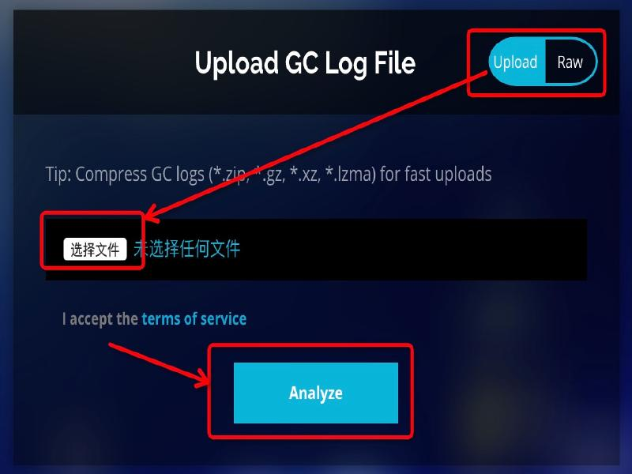
比如使用我们前面生成的 gc.demo.log 文件，然后点击页面上的分析按钮，就可以生成分析报告。
如果日志内容很大，我们也可以粘贴或者上传一部分 GC 日志进行分析。
1. 总体报告
可以看到检测到了内存问题。
2. JVM 内存大小分析
这里有对内存的分配情况的细节图表。
3. GC 暂停时间的分布情况
关键的性能指标：平均 GC 暂停时间 45.7ms，最大暂停时间 70.0ms。绝大部分 GC 暂停时间分布在 30~60ms，占比 89%。
4. GC 之后的内存情况统计
GC 执行以后堆内存的使用情况。
5. GC 情况汇总统计信息
可以看到 Full GC 是影响性能的绝对大头。
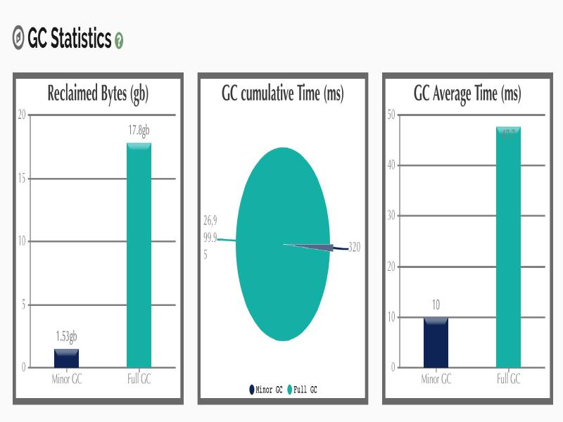
6. 内存分配速度
内存分配的速度越快，说明我们程序里创建对象越频繁。
7. 内存泄漏、长暂停、安全点等信息
没有检测到内存泄漏。
8. GC 原因汇总
可以看到 GC 发生的原因，其中 566 次是 GC 策略自己调整的（Ergonomics），32 次是因为分配失败导致的。
9. 其他信息
可以看到，这里介绍了两个工具：
- fastThread，官网地址：https://fastthread.io/，我们后面专门有一个章节进行介绍。
- HeapHero，官网地址：https://heaphero.io/，顾名思义，这是一款 Java & Android Heap Dump Analyzer。
工具用得棒，能力自然就会被放大。
API 调用
我们也可以使用 API 调用方式，官方给出的示例如下：
curl -X POST --data-binary @./my-app-gc.log
https://api.gceasy.io/analyzeGC?apiKey={API_KEY_SENT_IN_EMAIL}
--header "Content-Type:text"
有 API 支持，就可以通过编程的方式，或者自动化脚本的方式来使用这个工具。
当然，有上传 API，肯定也有下载 API。本文不进行详细的介绍，有兴趣可以看官方文档。
GCViwer 工具
下面我们介绍一款很好用的开源分析工具：GCViwer。
GCViewer 项目的 GitHub 主页是：
下载与安装
然后我们在 Github 项目的 releases 页面 中，找到并下载最新的版本，例如：gcviewer-1.36.jar。
Mac 系统可以直接下载封装好的应用：gcviewer-1.36-dist-mac.zip。下载，解压，安装之后首次打开可能会报安全警告，这时候可能需要到安全设置里面去勾选允许，例如：
测试案例
先获取 GC 日志文件，方法同上面的 GCEasy 一样。
启动 GCViewer
可以通过命令行的方式启动 GCViewer 工具来进行分析：
java -jar gcviewer_1.3.4.jar
新版本支持用 java 命令直接启动。老版本可能需要在后面加上 GC 日志文件的路径。工具启动之后，大致会看到类似下面的图形界面：
然后在图形界面中点击对应的按钮打开日志文件即可。现在的版本支持单个 GC 日志文件，多个 GC 日志文件，以及网络 URL。
当然，如果不想使用图形界面，或者没法使用图形界面的情况下，也可以在后面加上程序参数，直接将分析结果输出到文件。
例如执行以下命令：
java -jar gcviewer-1.36.jar /xxxx/gc.demo.log summary.csv chart.png
这会将信息汇总到当前目录下的 summary.csv 文件之中，并自动将图形信息保存为 chart.png 文件。
结果报告
在图形界面中打开某个 GC 日志文件。
上图中，Chart 区域是对 GC 事件的图形化展示。包括各个内存池的大小和 GC 事件。其中有 2 个可视化指标：蓝色线条表示堆内存的使用情况，黑色的 Bar 则表示 GC 暂停时间的长短。每个颜色表示什么信息可以参考 View 菜单。
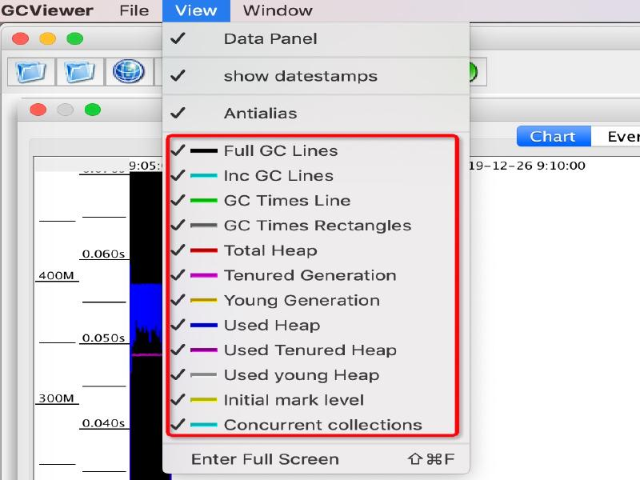
从前面的图中可以看到，程序启动很短的时间后，堆内存几乎全部被消耗，不能顺利分配新对象，并引发频繁的 Full GC 事件. 这说明程序可能存在内存泄露，或者启动时指定的内存空间不足。
从图中还可以看到 GC 暂停的频率和持续时间。然后发现 GC 几乎不间断地运行。
右边也有三个选项卡可以展示不同的汇总信息：
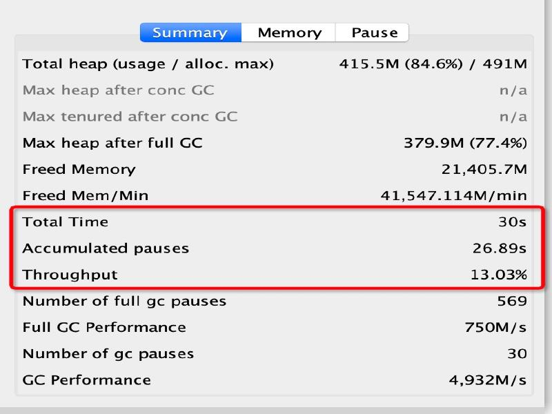
“Summary（摘要）” 中比较有用的是：
- “Throughput”（吞吐量百分比），吞吐量显示了有效工作的时间比例，剩下的部分就是 GC 的消耗
- “Number of GC pauses”（GC 暂停的次数）
- “Number of full GC pauses”（Full GC 暂停的次数）
以上示例中的吞吐量为 13.03%。这意味着有 86.97% 的 CPU 时间用在了 GC 上面。很明显系统所面临的情况很糟糕——宝贵的 CPU 时间没有用于执行实际工作，而是在试图清理垃圾。原因也很简单，我们只给程序分配了 512MB 堆内存。
下一个有意思的地方是“Pause”（暂停）选项卡：
其中“Pause”展示了 GC 暂停的总时间，平均值，最小值和最大值，并且将 total 与 minor/major 暂停分开统计。如果要优化程序的延迟指标，这些统计可以很快判断出暂停时间是否过长。
另外，我们可以得出明确的信息：累计暂停时间为 26.89 秒，GC 暂停的总次数为 599 次，这在 30 秒的总运行时间里那不是一般的高。
更详细的 GC 暂停汇总信息，请查看主界面中的“Event details”选项卡：
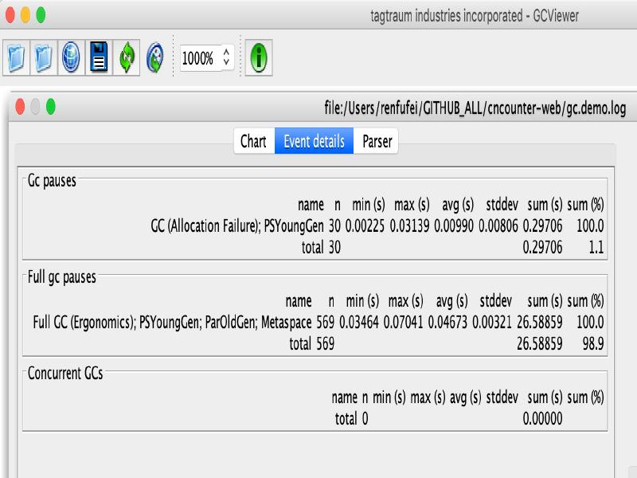
从“Event details”标签中，可以看到日志中所有重要的GC事件汇总：普通 GC 的停顿次数和 Full GC 停顿次数，以及并发GC 执行数等等。
此示例中，可以看到一个明显的地方：Full GC 暂停严重影响了吞吐量和延迟，依据是 569 次 Full GC，暂停了 26.58 秒（一共执行 30 秒）。
可以看到，GCViewer 能用图形界面快速展现异常的 GC 行为。一般来说，图像化信息能迅速揭示以下症状：
- 低吞吐量。当应用的吞吐量下降到不能容忍的地步时，用于真正的业务处理的有效时间就大量减少。具体有多大的“容忍度”（tolerable）取决于具体场景。按照经验，低于 90% 的有效时间就值得警惕了，可能需要好好优化下 GC。
- 单次 GC 的暂停时间过长。只要有一次 GC 停顿时间过长，就会影响程序的延迟指标。例如，延迟需求规定必须在 1000ms 以内完成交易，那就不能容忍任何一次GC暂停超过 1000 毫秒。
- 堆内存使用率过高。如果老年代空间在 Full GC 之后仍然接近全满，程序性能就会大幅降低，可能是资源不足或者内存泄漏。这种症状会对吞吐量产生严重影响。
真是业界的福音——图形化展示的 GC 日志信息绝对是我们重磅推荐的。不用去阅读和分析冗长而又复杂的 GC 日志，通过图形界面，可以很容易得到同样的信息。不过，虽然图形界面以对用户友好的方式展示了重要信息，但是有时候部分细节也可能需要从日志文件去寻找。
22 JVM 的线程堆栈等数据分析：操千曲而后晓声、观千剑而后识器
Java 线程简介与示例
多线程的使用和调优也是 Java 应用程序性能的一个重要组成部分，本节我们主要来讨论这一部分内容。
线程（Thread）是系统内核级的重要资源，并不能无限制地创建和使用。创建线程的开销很大，由于线程管理较为复杂，在编写多线程代码时，如果有哪里未设置正确，可能会产生一些莫名其妙的 Bug。
开发中一般会使用资源池模式，也就是“线程池”（Thread Pool）。通过把线程的调度管理委托给线程池，应用程序可以实现用少量的线程，来执行大量的任务。
线程池的思路和原理大概如下：与其为每个任务创建一个线程，执行完就销毁；倒不如统一创建少量的线程，然后将执行的逻辑作为一个个待处理的任务包装起来，提交给线程池来调度执行。有任务需要调度的时候，线程池找一个空闲的线程，并通知它干活。任务执行完成后，再将这个线程放回池子里，等待下一次调度。这样就避免了每次大量的创建和销毁线程的开销，也隔离开了任务处理和线程池管理这两个不同的代码部分，让开发者可以关注与任务处理的逻辑。同时通过管理和调度，控制实际线程的数量，也避免了一下子创建了（远超过 CPU 核心数的）太多线程导致并不能并发执行，反而产生了大量线程切换调度，导致性能降低的问题。
Java 语言从一开始就实现了对多线程的支持，但是在早期版本中需要开发者手动地去创建和管理线程。
Java 5.0 版本开始提供标准的线程池 API：Executor 和 ExecutorService 接口，它们定义了线程池以及支持的交互操作。相关的类和接口都位于 java.util.concurrent 包中，在编写简单的并发任务时，可以直接使用。一般来说，我们可以使用 Executors 的静态工厂方法来实例化 ExecutorService。
下面我们通过示例代码来进行讲解。
先创建一个线程工厂：
package demo.jvm0205;
import java.util.concurrent.ThreadFactory;
import java.util.concurrent.atomic.AtomicInteger;
// Demo线程工厂
public class DemoThreadFactory implements ThreadFactory {
// 线程的名称前缀
private String threadNamePrefix;
// 线程 ID 计数器
private AtomicInteger counter = new AtomicInteger();
public DemoThreadFactory(String threadNamePrefix) {
this.threadNamePrefix = threadNamePrefix;
}
@Override
public Thread newThread(Runnable r) {
// 创建新线程
Thread t = new Thread(r);
// 设置一个有意义的名字
t.setName(threadNamePrefix + "-" + counter.incrementAndGet());
// 设置为守护线程
t.setDaemon(Boolean.TRUE);
// 设置不同的优先级; 比如我们有多个线程池，分别处理普通任务和紧急任务。
t.setPriority(Thread.MAX_PRIORITY);
// 设置某个类的或者自定义的的类加载器
// t.setContextClassLoader();
// 设置此线程的最外层异常处理器
// t.setUncaughtExceptionHandler();
// 不需要启动; 直接返回;
return t;
}
}
一般来说，在线程工厂中，建议给每个线程指定名称，以方便监控、诊断和调试。
根据需要，还会设置是否是“守护线程”的标志。守护线程就相当于后台线程，如果 JVM 判断所有线程都是守护线程，则会自动退出。
然后我们创建一个“重型”任务类，实现 Runnable 接口：
package demo.jvm0205;
import java.util.Random;
import java.util.concurrent.TimeUnit;
// 模拟重型任务
public class DemoHeavyTask implements Runnable {
// 线程的名称前缀
private int taskId;
public DemoHeavyTask(int taskId) {
this.taskId = taskId;
}
@Override
public void run() {
// 执行一些业务逻辑
try {
int mod = taskId % 50;
if (0 == mod) {
// 模拟死等;
synchronized (this) {
this.wait();
}
}
// 模拟耗时任务
TimeUnit.MILLISECONDS.sleep(new Random().nextInt(400) + 50);
} catch (InterruptedException e) {
e.printStackTrace();
}
String threadName = Thread.currentThread().getName();
System.out.println("JVM核心技术：" + taskId + "; by：" + threadName);
}
}
最后，创建线程池并提交任务来执行：
package demo.jvm0205;
import java.util.concurrent.ExecutorService;
import java.util.concurrent.Executors;
import java.util.concurrent.TimeUnit;
/**
* 线程池示例;
*/
public class GitChatThreadDemo {
public static void main(String[] args) throws Exception {
// 1. 线程工厂
DemoThreadFactory threadFactory
= new DemoThreadFactory("JVM.GitChat");
// 2. 创建 Cached 线程池; FIXME：其实这里有坑...
ExecutorService executorService =
Executors.newCachedThreadPool(threadFactory);
// 3. 提交任务;
int taskSum = 10000;
for (int i = 0; i < taskSum; i++) {
// 执行任务
executorService.execute(new DemoHeavyTask(i + 1));
// 提交任务的间隔时间
TimeUnit.MILLISECONDS.sleep(5);
}
// 4. 关闭线程池
executorService.shutdownNow();
}
}
启动执行之后，输出的内容大致是这样的：
......
JVM核心技术：9898; by：JVM.GitChat-219
JVM核心技术：9923; by：JVM.GitChat-185
JVM核心技术：9918; by：JVM.GitChat-204
JVM核心技术：9922; by：JVM.GitChat-209
JVM核心技术：9903; by：JVM.GitChat-246
JVM核心技术：9886; by：JVM.GitChat-244
......
java.lang.InterruptedException
at java.lang.Object.wait(Native Method)
at java.lang.Object.wait(Object.java：502)
at demo.jvm0205.DemoHeavyTask.run(DemoHeavyTask.java：23)
at java.util.concurrent.ThreadPoolExecutor.runWorker(ThreadPoolExecutor.java：1149)
at java.util.concurrent.ThreadPoolExecutor$Worker.run(ThreadPoolExecutor.java：624)
at java.lang.Thread.run(Thread.java：748)
可以看到，这里抛出了 InterruptedException 异常。
这是因为我们的代码中，main 方法提交任务之后，并不等待这些任务执行完成，就调用 shutdownNow 方法强制关闭了线程池。
这是一个需要注意的地方，如果不需要强制关闭，则应该使用 shutdown 方法。
一般来说，线程池的关闭逻辑，会挂载到应用程序的关闭钩子之中，比如注册web应用的监听器，并在 destroy 方法中执行，这样实现的关闭我们有时候也称之为“优雅关闭”（Graceful Shutdown）。
JVM 线程模型
通过前面的示例，我们看到 Java 中可以并发执行多个线程。
那么 JVM 是怎么实现底层的线程以及调度的呢？
每个线程都有自己的线程栈，当然堆内存是由所有线程共享的。
以 Hotspot 为例，这款 JVM 将 Java 线程（java.lang.Thread）与底层操作系统线程之间进行 1:1 的映射。
很简单吧！但这就是最基础的 JVM 线程模型。
但我们要排查问题，就需要掌握其中的一些细节。
线程创建和销毁
在语言层面，线程对应的类是 java.lang.Thread，启动方法为 Thread#start()。
在 Java 线程启动时会创建底层线程（native Thread），在任务执行完成后会自动回收。
JVM 中所有线程都交给操作系统来负责调度，以将线程分配到可用的 CPU 上执行。
根据对 Hotspot 线程模型的理解，我们制作了下面这下示意图：
从图中可以看到，调用 Thread 对象的 start() 方法后，JVM 会在内部执行一系列的操作。
因为 Hotspot JVM 是使用 C++ 语言编写的，所以在 JVM 层面会有很多和线程相关的 C++ 对象。
- 在 Java 代码中，表示线程的 java.lang.Thread 对象。
- JVM 内部表示 java.lang.Thread 的 JavaThread 实例，这个实例是 C++ 对象，其中保存了各种额外的信息以支持线程状态跟踪监控。
- OSThread 实例表示一个操作系统线程（有时候我们也叫物理线程），包含跟踪线程状态时所需的系统级信息。当然，OSThread 持有了对应的“句柄”，以标识实际指向的底层线程。
关联的 java.lang.Thread 对象和 JavaThread 实例，互相持有对方的引用（地址值/OOP 指针）。当然，JavaThread 还持有对应的 OSThread 引用。
在启动 java.lang.Thread 时，JVM 会创建对应的 JavaThread 和 OSThread 对象，并最终创建 native 线程。
准备好所有的VM状态（比如 thread-local 存储，对象分配缓冲区，同步对象等等）之后，就启动 native 线程。
native 线程完成初始化后，执行一个启动方法，在其中会调用 java.lang.Thread 对象的 run() 方法。
run() 方法指向完成后，根据返回的结果或者抛出的异常，进行相应的捕获和处理。
接着就终止线程，并通知 VM 线程，让他判断该线程终止后是否需要停止整个虚拟机（判断是否还有前台线程）。
线程结束会释放所有分配给他的资源，并从已知线程集合中删除 JavaThread 实例，调用 OSThread 和 JavaThread 的析构函数，在底层线程对应的钩子方法执行完成后，最终停止。
现在我们知道了，在 Java 代码中，可以调用 java.lang.Thread 对象的 start() 方法来启动线程；除此之外还有没有其他方式可以增加 JVM 中的线程呢？我们还可以在 JNI 代码中，将现有的本地线程并入 JVM 中，之后的过程，JVM 创建的数据结构和普通 Java 线程基本一致。
Java 线程优先级，与操作系统线程的优先级之间，是比较复杂的关系，在不同的系统之间有所不同，本文不进行详细讲解。
线程状态
JVM 使用不同的状态来标识每个线程在做什么。这有助于协调线程之间的交互，在出现问题时也能提供有用的调试信息。
线程在执行不同的操作时，其状态会发生转换，这些转换点对应的代码会检查线程在该时间点是否适合执行所请求的操作，具体情况请参阅后面的安全点这一节。
从 JVM 的角度看，线程状态主要包括 4 种：
_thread_new：正在初始化的新线程_thread_in_Java：正在执行 Java 代码的线程_thread_in_vm：在 JVM 内部执行的线程_thread_blocked：由于某种原因被阻塞的线程（例如获取锁、等待条件、休眠、执行阻塞的 I/O 操作等等）
出于调试目的，线程状态中还维护了其他信息。这些信息在 OSThread 中维护，其中一些已被废弃。
在线程转储，调用栈跟踪时，相关的工具会使用这些信息。
在线程转储等报告中会使用到的状态包括：
MONITOR_WAIT：线程正在等待获取竞争的管程锁。CONDVAR_WAIT：线程正在等待 JVM 使用的内部条件变量（不与任何 Java 级别对象相关联）。OBJECT_WAIT：线程正在执行 Object.wait() 调用。
其他子系统和库也可能会添加一些自己的状态信息，例如 JVMTI 系统，以及 java.lang.Thread 类自身也暴露了 ThreadState。
通常来说，后面介绍的这些信息与 JVM 内部的线程管理无关，JVM 并不会使用到这些信息。
JVM 内部线程
我们会发现，即使启动一个简单的“Hello World”示例程序，也会在 Java 进程中创建几十号线程。
这几十个线程主要是 JVM 内部线程，以及 Lib 相关的线程（例如引用处理器、终结者线程等等）。
JVM 内部线程主要分为以下几种：
- VM 线程：单例的 VMThread 对象，负责执行 VM 操作，下文将对此进行讨论；
- 定时任务线程：单例的 WatcherThread 对象，模拟在 VM 中执行定时操作的计时器中断；
- GC 线程：垃圾收集器中，用于支持并行和并发垃圾回收的线程；
- 编译器线程：将字节码编译为本地机器代码；
- 信号分发线程：等待进程指示的信号，并将其分配给 Java 级别的信号处理方法。
JVM 中的所有线程都是 Thread 实例，而所有执行 Java 代码的线程都是（Thread 的子类）JavaThread 的实例。
JVM 在链表 Threads_list 中跟踪所有线程，并使用 Threads_lock 来保护（这是 JVM 内部使用的一个核心同步锁）。
线程间协调与通信
大部分情况下，某一个子线程只需要关心自身执行的任务。但有些情况下也需要多个线程来协同完成某个任务，这就涉及到线程间通信（inter-thread communication）的问题了。
线程之间有多种通信方式，例如：
- 线程等待，使用 threadA.join() 方法，可以让当前线程等待另一个线程执行结束后进行“汇合”
- 同步（Synchronization），包括 synchronized 关键字以及 object.wait()、object.notify()
- 使用并发工具类，常见的包括 CountdownLatch 类、CyclicBarrier 类等等
- 可管理的线程池相关接口，比如：FutureTask 类、Callable 接口等等
- Java 还支持其他的同步机制，例如 volatile 域以及 java.util.concurrent 包（有时候简称 juc）中的类
其中最基础也最简单的是同步（Synchronization），JVM可以通过操作系统提供的管程（Monitor）来实现，一般称为对象锁或者管程锁。
synchronized 基础
广义上讲，我们将“同步（Synchronization）”定义为一种机制，用来防止并发操作中发生不符合预期的污染（通常称为“竞争”）。
HotSpot 为 Java 提供了管程锁（Monitor），线程执行程序代码时可以通过管程来实现互斥。管程有两种状态：锁定、解锁。获得了管程的所有权后，线程才可以进入受管程保护的关键部分（critical section）。在 Java 中，这种关键部分被称为“同步块（synchronized blocks）”，在代码中由 synchronized 语句标识。
每个 Java 对象都默认有一个相关联的管程，线程可以锁定（lock）以及解锁（unlock）持有的管程。一个线程可以多次锁定同一个管程，解锁则是锁定的反操作。
任一时刻，只能有一个线程持有管程锁，其他试图获得该管程的线程都会阻塞（blocked）。也就是说不同线程在管程锁上是互斥的，任一时刻最多允许一个线程访问受保护的代码或数据。
在 Java 中，使用 synchronized 语句块，可以要求线程先获取具体对象上的管程锁。只有获取了相应的管程锁才能继续运行，并执行 synchronized 语句块中的代码。正常执行/异常执行完毕后，会自动解锁一次对应的管程。
调用被标记为 synchronized 的方法也会自动执行锁定操作，同样需要获取对应的锁才能执行该方法。一个类的某个实例方法锁定的是 this 指向的对象锁，静态方法（static）锁定的则是 Class 对象的管程，所有的实例都会受到影响。方法进入/退出时，会自动触发一次相应管程的 lock/unlock 操作。
如果线程尝试锁定某个管程，并且该管程处于未锁定状态，则该线程立即获得该管程的所有权。
假如在锁定管程的情况下，第二个线程尝试获取该管程的所有权，则不允许进入关键部分（即同步块内的代码）；在管程的所有者解锁之后，第二个线程也必须先设法获得（或被授予）这个锁的独占所有权。
以下是一些管程锁相关的术语：
- “进入（enter）”，意味着获得管程锁的唯一所有权，并可以执行关键部分。
- “退出（exit）”，意味着释放管程的所有权并退出关键部分。
- “拥有（owns）”，即锁定管程的线程拥有该管程。
- “无竞争（Uncontended）”，是指仅有一个线程在未被锁定的管程上进行同步操作。
另外说一句，Java 语言不负责死锁的检测，需要由程序员自行处理。
总结一下，同步关键字 synchronized 通过使用管程锁，用于协调多个不同线程对一段代码逻辑的访问，它可以作用在静态方法、方法以及代码块上。
锁定范围：静态方法（作用在 class 上） > 方法（作用在具体实例上） > 代码块（作用在一块代码上）。
等待与通知
每个对象都有一个关联的管程锁，JVM 会维护这个锁上面对应的等待集合（wait set），里面保存的是线程引用。
新创建的对象，其等待集合是空的。增加或者减少等待集的过程是原子操作，对应的操作方法是 Object#wait、Object#notify 和 Object#notifyAll。
线程中断也会影响等待集，但 Thread#sleep 和 Thread#join 并不在此范围内。
Hotspot JVM 对同步的优化
HotSpot JVM 综合运用了“无竞争同步操作”和“有竞争同步操作”两种先进手段，从而大大提高了同步语句的性能。
无竞争同步操作，是大多数业务场景下的同步情况，通过恒定时间技术来实现优化。借助于“偏向锁（biased locking）”，在一般情况下，这种同步操作基本上没有性能开销。
这是因为，大多数对象的生命周期中，往往最多只会被一个线程锁定和使用，因此就让这个对象锁“偏向”该线程。
一旦有了偏向，该线程就可以在后续的操作中轻松锁定和解锁，不再需要使用开销巨大的原子指令。
竞争情景下的同步操作，使用高级自适应自旋技术来优化和提高吞吐量，这种优化对于高并发高竞争的锁争用场景也是有效的。
HotSpot JVM 这么一优化之后，Java 自带的同步操作对于大多数系统来说，就不再有之前版本的性能问题。
线程切换的代价：
Linux 时间片默认 0.75~6ms；Win XP 大约 10~15ms 左右；各个系统可能略有差别，但都在毫秒级别。假设 CPU 是 2G HZ，则每个时间片大约对应 2 百万个时钟周期，如果切换一次就有这么大的开销，系统的性能就会很糟糕。
所以 JDK 的信号量实现经过了自旋优化，先进行一定量时间的自旋操作，充分利用了操作系统已经分配给当前线程的时间片，否则这个时间片就被浪费了。
如果在 Java 代码中进行多个线程的 synchronized 和 wait-notify 操作的性能测试，则会发现程序的性能基本上不受时间片周期的影响。
在 HotSpot JVM 中，大多数同步操作是通过所谓的“快速路径”代码处理的。
JVM 有两个即时编译器（JIT）和一个解释器，都会生成快速路径代码。
这两个 JIT 是“C1”（即 -client 编译器）和“C2”（即 -server 编译器）。C1 和 C2 都直接在同步位置生成快速路径代码。
在没有争用的情况下，同步操作将完全在快速路径中完成。但是，如果我们需要阻塞或唤醒线程（分别在 monitorenter 或 monitorexit 中），则快速路径代码将会调用慢速路径。
慢路径实现是用本地 C++ 代码实现的，而快速路径是由 JIT 生成的。
标记字
对象锁的同步状态得有个地方来记录，Hotspot将其编码到内存中对象头里面的第一个位置中（即“标记字”）。
标记字被用来标识多种状态，这个位置也可以被复用，可以指向其他同步元数据。
此外，标记字还可以被用来保存GC年龄数据和对象的唯一 hashCode 值。
标记字的状态包括：
- 中立（Neutral）：表示未锁定（Unlocked）。
- 偏向（Biased）：可以表示“锁定/解锁”和“非共享”的状态。
- 栈锁定（Stack-Locked）：锁定+共享，但没有竞争标记指向所有者线程栈上面的移位标记字。
- 膨胀（Inflated）：锁定/解锁 + 共享，竞争线程在 monitorenter 或 wait() 中被阻塞。该标记指向重量级锁对应的“对象管程”结构体。
安全点
有几个安全点相关的概念需要辨别一下：
- 方法代码中被植入的安全点检测入口；
- 线程处于安全点状态：线程暂停执行，这个时候线程栈不再发生改变；
- JVM 的安全点状态：所有线程都处于安全点状态。
简而言之，当虚拟机处于安全点时，JVM 中其他的所有线程都会被阻塞；那么在 VMThread 执行操作时，就不会再有业务线程来修改 Java 堆内存，而且所有线程都处于可检查状态，也就是说这个时候它们的线程栈不会发生改变（想想看，为什么？）。
JVM 有一个特殊的内部线程，称为"VMThread"。VMThread 会等待 VMOperationQueue 中出现的操作，然后在虚拟机到达安全点之后执行这些操作。
为什么要将这些操作抽出来单独用一个线程来执行呢?
因为有很多操作要求 JVM 在执行前要到达所谓的“安全点”。刚刚我们提到，在安全点之中，堆内存不再发生变化。
这些操作只能传给 VMThread 来执行，例如：垃圾收集算法中的 STW 阶段，偏向锁撤销，线程栈转储，线程暂停或停止，以及通过 JVMTI 请求的许多检查/修改操作等等。
安全点是使用基于轮询的合作机制来启动的。
简单来说，线程可能经常执行判断：“我应该在安全点处暂停吗？”。
想要高效地检查并不简单。执行安全点检测的地方包括：
- 线程状态转换时。大部分的状态转换都会执行这类操作，但不是全部，例如，线程离开 JVM 进入 native 代码时。
- 其他发出询问的位置，是从编译后的 native 代码方法返回时，或在循环迭代中的某些阶段。
请求安全点后，VMThread 必须等待所有已知的线程都处于安全点状态，才能执行VM操作。
在安全点期间，通过 Threads_lock 来阻塞所有正在运行的线程，在执行完VM操作之后，VMThread 会释放 Threads_lock。
很多 VM 操作是同步的，即请求者在操作完成之前一直被阻塞；但也有些操作是异步或并发的，这意味着请求者可以和 VMThread 并行执行（当然，是在还没有进入安全点状态之前）。
线程转储
线程转储（Thread Dump）是 JVM 中所有线程状态的快照。一般是文本格式，可以将其保存到文本文件中，然后可以人工查看和分析，也可以通过程序自动分析。
每个线程的状态都可以通过调用栈来表示。线程转储展示了各个线程的行为，对于诊断和排查问题非常有用。
简言之，线程转储就是线程快照，线程状态主要是 那个大家都很熟悉的 StackTrace，即方法调用栈。
JVM 支持多种方式来进行线程转储，包括：
- JDK 工具，包括：jstack 工具、jcmd 工具、jconsole、jvisualvm、Java Mission Control 等；
- Shell 命令或者系统控制台, 比如 Linux 的
kill -3、Windows 的Ctrl + Break等； - JMX 技术，主要是使用 ThreadMxBean，我们可以在程序中，后者 JMX 客户端调用，返回结果是文本字符串，可以灵活处理。
我们一般使用 JDK 自带的命令行工具来获取 Java 应用程序的线程转储。
jstack 工具
前面的章节中我们详细介绍过 jstack 工具，这是专门用来执行线程转储的。一般连接本地 JVM：
jstack [-F] [-l] [-m] <pid>
pid 是指对应的 Java 进程 id，使用时支持如下的选项：
-F选项强制执行线程转储；有时候jstack pid会假死，则可以加上-F标志-l选项，会查找堆内存中拥有的同步器以及资源锁-m选项，额外打印 native 栈帧（C 和 C++ 的）
使用示例：
jstack 8248 > ./threaddump.txt
jcmd 工具
前面的章节中我们详细介绍过 jcmd 工具，本质上是向目标 JVM 发送一串命令，示例用法如下：
jcmd 8248 Thread.print
JMX 方式
JMX 技术支持各种各样的花式操作。我们可以通过 ThreadMxBean 来线程转储。
示例代码如下：
package demo.jvm0205;
import java.lang.management.*;
/**
* 线程转储示例
*/
public class JMXDumpThreadDemo {
public static void main(String[] args) {
String threadDump = snapThreadDump();
System.out.println("=================");
System.out.println(threadDump);
}
public static String snapThreadDump() {
StringBuffer threadDump = new StringBuffer(System.lineSeparator());
ThreadMXBean threadMXBean = ManagementFactory.getThreadMXBean();
for (ThreadInfo threadInfo : threadMXBean.dumpAllThreads(true, true)) {
threadDump.append(threadInfo.toString());
}
return threadDump.toString();
}
}
线程 Dump 结果
因为都是字符串表示形式，各种方式得到的线程转储结果大同小异。
例如前面的 JMX 线程转储示例程序，以 debug 模式运行后得到以下结果：
"JDWP Command Reader" Id=7 RUNNABLE (in native)
"JDWP Event Helper Thread" Id=6 RUNNABLE
"JDWP Transport Listener: dt_socket" Id=5 RUNNABLE
"Signal Dispatcher" Id=4 RUNNABLE
"Finalizer" Id=3 WAITING on java.lang.ref.ReferenceQueue$Lock@606d8acf
at java.lang.Object.wait(Native Method)
- waiting on java.lang.ref.ReferenceQueue$Lock@606d8acf
at java.lang.ref.ReferenceQueue.remove(ReferenceQueue.java:143)
at java.lang.ref.ReferenceQueue.remove(ReferenceQueue.java:164)
at java.lang.ref.Finalizer$FinalizerThread.run(Finalizer.java:212)
"Reference Handler" Id=2 WAITING on java.lang.ref.Reference$Lock@782830e
at java.lang.Object.wait(Native Method)
- waiting on java.lang.ref.Reference$Lock@782830e
at java.lang.Object.wait(Object.java:502)
at java.lang.ref.Reference.tryHandlePending(Reference.java:191)
at java.lang.ref.Reference$ReferenceHandler.run(Reference.java:153)
"main" Id=1 RUNNABLE
at sun.management.ThreadImpl.dumpThreads0(Native Method)
at sun.management.ThreadImpl.dumpAllThreads(ThreadImpl.java:454)
at demo.jvm0205.JMXDumpThreadDemo.snapThreadDump(JMXDumpThreadDemo.java:21)
at demo.jvm0205.JMXDumpThreadDemo.main(JMXDumpThreadDemo.java:13)
简单分析，可以看到最简单的 Java 程序中有这些线程：
- JDWP 相关的线程，请同学们回顾一下前面的课程中介绍的这个调试技术。
- Signal Dispatcher，将操作系统信号（例如
kill -3）分发给不同的处理器进行处理，我们也可以在程序中注册自己的信号处理器，有兴趣的同学可以搜索关键字。 - Finalizer，终结者线程，处理 finalize 方法进行资源释放，现在一般不怎么关注。
- Reference Handler，引用处理器。
- main，这是主线程，属于前台线程，本质上和普通线程没什么区别。
如果程序运行的时间比较长，那么除了业务线程之外，还会有一些 GC 线程之类的，具体情况请参考前文。
建议同学们动手实践各种命令，并尝试简单的分析。
死锁示例与分析
关于线程与锁的知识，在网上到处都是，因为本课程主要介绍 JVM，所以在此只进行简单的演示。
模拟线程死锁
下面是一个简单的死锁示例代码：
package demo.jvm0207;
import java.util.concurrent.TimeUnit;
public class DeadLockSample {
private static Object lockA = new Object();
private static Object lockB = new Object();
public static void main(String[] args) {
ThreadTask1 task1 = new ThreadTask1();
ThreadTask2 task2 = new ThreadTask2();
//
new Thread(task1).start();
new Thread(task2).start();
}
private static class ThreadTask1 implements Runnable {
public void run() {
synchronized (lockA) {
System.out.println("lockA by thread:"
+ Thread.currentThread().getId());
try {
TimeUnit.SECONDS.sleep(2);
} catch (InterruptedException e) {
e.printStackTrace();
}
synchronized (lockB) {
System.out.println("lockB by thread:"
+ Thread.currentThread().getId());
}
}
}
}
private static class ThreadTask2 implements Runnable {
public void run() {
synchronized (lockB) {
System.out.println("lockB by thread:"
+ Thread.currentThread().getId());
try {
TimeUnit.SECONDS.sleep(2);
} catch (InterruptedException e) {
e.printStackTrace();
}
synchronized (lockA) {
System.out.println("lockA by thread:"
+ Thread.currentThread().getId());
}
}
}
}
}
代码有几十行，但是逻辑很简单：两个锁获取的顺序不同，并且两个线程都在死等对方的锁资源。
线程栈 Dump 发现死锁
程序启动之后，我们可以用上面介绍的各种手段来 Dump 线程栈，比如：
# 查看进程号
jps -v
# jstack 转储线程
jstack 8248
# jcmd 线程转储
jcmd 8248 Thread.print
两种命令行工具得到的内容都差不多：
Found one Java-level deadlock:
=============================
"Thread-1":
waiting to lock monitor 0x00007f8d9d030818 (object 0x000000076abef128, a java.lang.Object),
which is held by "Thread-0"
"Thread-0":
waiting to lock monitor 0x00007f8d9d032e98 (object 0x000000076abef138, a java.lang.Object),
which is held by "Thread-1"
Java stack information for the threads listed above:
===================================================
"Thread-1":
at demo.jvm0207.DeadLockSample$ThreadTask2.run(DeadLockSample.java:46)
- waiting to lock <0x000000076abef128> (a java.lang.Object)
- locked <0x000000076abef138> (a java.lang.Object)
at java.lang.Thread.run(Thread.java:748)
"Thread-0":
at demo.jvm0207.DeadLockSample$ThreadTask1.run(DeadLockSample.java:28)
- waiting to lock <0x000000076abef138> (a java.lang.Object)
- locked <0x000000076abef128> (a java.lang.Object)
at java.lang.Thread.run(Thread.java:748)
Found 1 deadlock.
可以看到，这些工具会自动发现死锁，并将相关线程的调用栈打印出来。
使用可视化工具发现死锁
当然我们也可以使用前面介绍过的可视化工具 jconsole，示例如下：
也可以使用 JVisualVM：
各种工具导出的线程转储内容都差不多，参考前面的内容。
有没有自动分析线程的工具呢？请参考后面的章节《fastthread 相关的工具介绍》。
参考资料
23 内存分析与相关工具上篇（内存布局与分析工具）
通过前面的课程，我们学习了“内存溢出”和“内存泄漏”的区别。
简单来说，Java 中的内存溢出就是内存不够用，一般是堆内存报错，当然也可能是其他内存空间不足引起的。
下面我们详细讲解 Java 对象的内存相关知识。
Java 对象内存布局简介
请思考一个问题： 一个对象具有 100 个属性，与 100 个对象每个具有 1 个属性，哪个占用的内存空间更大？
为了回答这个问题，我们来看看 JVM 怎么表示一个对象：
说明
- alignment（外部对齐）：比如 8 字节的数据类型 long，在内存中的起始地址必须是 8 字节的整数倍。
- padding（内部填充）：在对象体内一个字段所占据空间的末尾，如果有空白，需要使用 padding 来补齐，因为下一个字段的起始位置必须是 4/8 字节（32bit/64bit）的整数倍。
- 其实这两者都是一个道理，让对象内外的位置都对齐。
一个 Java 对象占用多少内存？
参考 Mindprod，我们可以发现事情并不简单：
- JVM 具体实现可以用任意形式来存储内部数据，可以是大端字节序或者小端字节序（Big/Little Endian），还可以增加任意数量的补齐、或者开销，尽管原生数据类型（primitives）的行为必须符合规范。
例如：JVM 或者本地编译器可以决定是否将 boolean[] 存储为 64bit 的内存块中，类似于 BitSet。JVM 厂商可以不告诉你这些细节，只要程序运行结果一致即可。
- JVM 可以在栈（stack）空间分配一些临时对象。
- 编译器可能用常量来替换某些变量或方法调用。
- 编译器可能会深入地进行优化，比如对方法和循环生成多个编译版本，针对某些情况调用其中的一个。
当然，硬件平台和操作系统还会有多级缓存，例如 CPU 内置的 L1/L2/L3、SRAM 缓存、DRAM 缓存、普通内存，以及磁盘上的虚拟内存。
用户数据可能在多个层级的缓存中出现。这么多复杂的情况、决定了我们只能对内存占用情况进行大致的估测。
对象内存占用的测量方法
一般情况下，可以使用 Instrumentation.getObjectSize() 方法来估算一个对象占用的内存空间。
想要查看对象的实际内存布局（layout）、占用（footprint）、以及引用（reference），可以使用 OpenJDK 提供的 JOL 工具(Java Object Layout）。
对象头和对象引用
在 64 位 JVM 中，对象头占据的空间是 12-byte（=96bit=64+32），但是以 8 字节对齐，所以一个空类的实例至少占用 16 字节。
在 32 位 JVM 中，对象头占 8 个字节，以 4 的倍数对齐（32=4*8）。
所以 new 出来很多简单对象，甚至是 new Object()，都会占用不少内容哈。
通常在 32 位 JVM，以及内存小于 -Xmx32G 的 64 位 JVM 上（默认开启指针压缩），一个引用占的内存默认是 4 个字节。
因此，64 位 JVM 一般需要多消耗 30%~50% 的堆内存。
为什么，大家可以思考一下。
包装类型、数组和字符串
包装类型比原生数据类型消耗的内存要多，详情可以参考 JavaWorld：
- Integer：占用 16 字节（8+4=12+补齐），因为 int 部分占 4 个字节。所以使用 Integer 比原生类型 int 要多消耗 300% 的内存。
- Long：一般占用 16 个字节（8+8=16），当然，对象的实际大小由底层平台的内存对齐确定，具体由特定 CPU 平台的 JVM 实现决定。看起来一个 long 类型的对象，比起原生类型 long 多占用了 8 个字节（也多消耗了 100%）。相比之下，Integer 有 4 字节的补齐，很可能是因为 JVM 强制进行了 8 字节的边界对齐。
其他容器类型占用的空间也不小。
多维数组：这是另一个惊喜。
在进行数值或科学计算时，开发人员经常会使用 int[dim1][dim2] 这种构造方式。
在二维数组 int[dim1][dim2] 中，每个嵌套的数组 int[dim2] 都是一个单独的 Object，会额外占用 16 字节的空间。某些情况下，这种开销是一种浪费。当数组维度更大时，这种开销特别明显。
例如，int[128][2] 实例占用 3600 字节。而 int[256] 实例则只占用 1040 字节。里面的有效存储空间是一样的，3600 比起 1040 多了 246% 的额外开销。在极端情况下，byte[256][1]，额外开销的比例是 19 倍！而在 C/C++ 中，同样的语法却不增加额外的存储开销。
String：String 对象的空间随着内部字符数组的增长而增长。当然，String 类的对象有 24 个字节的额外开销。
对于 10 字符以内的非空 String，增加的开销比起有效载荷（每个字符 2 字节 + 4 个字节的 length），多占用了 100% 到 400% 的内存。
对齐（Alignment）
让我们来看看下面的示例对象：
class X { // 8 字节-指向 class 定义的引用
int a; // 4 字节
byte b; // 1 字节
Integer c = new Integer(); // 4 字节的引用
}
我们可能会认为，一个 X 类的实例占用 17 字节的空间。但是由于需要对齐（padding），JVM 分配的内存是 8 字节的整数倍，所以占用的空间不是 17 字节，而是 24 字节。
当然，运行 JOL 的示例之后，会发现 JVM 会依次先排列 parent-class 的 fields，然后到本 class 的字段时，也是先排列 8 字节的，排完了 8 字节的再排 4 字节的 field，以此类推。当然，还会 “加塞子”，尽量不浪费空间。
Java 内置的序列化，也会基于这个布局，带来的坑就是加字段后就不兼容了。只加方法不固定 serialVersionUID 也出问题。所以有点经验的都不喜欢用内置序列化，例如自定义类型存到 Redis 时。
JOL 使用示例
JOL（Java Object Layout）是分析 JVM 中内存布局的小工具，通过 Unsafe、JVMTI，以及 Serviceability Agent（SA）来解码实际的对象布局、占用和引用。所以 JOL 比起基于 heap dump，或者基于规范的其他工具来得准确。
JOL 的官网地址为：
从示例中可以看到：JOL 支持命令行方式的调用，即 jol-cli。下载页面请参考 Maven 中央仓库：
可下载其中的 jol-cli-0.9-full.jar 文件。
JOL 还支持代码方式调用，示例：
相关的依赖可以在 Maven 中央仓库找到：
<dependency>
<groupId>org.openjdk.jol</groupId>
<artifactId>jol-core</artifactId>
<version>0.9</version>
</dependency>
具体的 jar 可以在此搜索页面：
内存泄漏
内存泄漏示例
下面展示的这个示例更具体一些。
在 Java 中，创建一个新对象时，例如 Integer num = new Integer(5)，并不需要手动分配内存。因为 JVM 自动封装并处理了内存分配。在程序执行过程中，JVM 会在必要时检查内存中还有哪些对象仍在使用，而不再使用的那些对象则会被丢弃，并将其占用的内存回收和重用。这个过程称为“垃圾收集”。JVM 中负责垃圾回收的模块叫做“垃圾收集器（GC）”。
Java 的自动内存管理依赖 GC，GC 会一遍又一遍地扫描内存区域，将不使用的对象删除。简单来说，Java 中的内存泄漏，就是那些逻辑上不再使用的对象，却没有被 垃圾收集程序 给干掉。从而导致垃圾对象继续占用堆内存中，逐渐堆积，最后产生 java.lang.OutOfMemoryError: Java heap space 错误。
很容易写个 Bug 程序，来模拟内存泄漏：
import java.util.*;
public class KeylessEntry {
static class Key {
Integer id;
Key(Integer id) {
this.id = id;
}
@Override
public int hashCode() {
return id.hashCode();
}
}
public static void main(String[] args) {
Map m = new HashMap();
while (true){
for (int i = 0; i < 10000; i++){
if (!m.containsKey(new Key(i))){
m.put(new Key(i), "Number:" + i);
}
}
System.out.println("m.size()=" + m.size());
}
}
}
粗略一看，可能觉得没什么问题，因为这最多缓存 10000 个元素嘛！
但仔细审查就会发现，Key 这个类只重写了 hashCode() 方法，却没有重写 equals() 方法，于是就会一直往 HashMap 中添加更多的 Key。
随着时间推移，“cached”的对象会越来越多。当泄漏的对象占满了所有的堆内存，GC 又清理不了，就会抛出 java.lang.OutOfMemoryError: Java heap space 错误。
解决办法很简单，在 Key 类中恰当地实现 equals() 方法即可：
@Override
public boolean equals(Object o) {
boolean response = false;
if (o instanceof Key) {
response = (((Key)o).id).equals(this.id);
}
return response;
}
说实话，很多时候内存泄漏，但是可能功能是正常的，达到一定程度才会出问题。所以，在寻找真正的内存泄漏原因时，这种问题的隐蔽性可能会让你死掉很多很多的脑细胞。
一个 Spring MVC 中的实际场景
我们曾经碰到过这样一种场景：
为了轻易地兼容从 Struts2 迁移到 Spring MVC 的代码，在 Controller 中直接获取 request。
所以在 ControllerBase 类中通过 ThreadLocal 缓存了当前线程所持有的 request 对象：
public abstract class ControllerBase {
private static ThreadLocal<HttpServletRequest> requestThreadLocal = new ThreadLocal<HttpServletRequest>();
public static HttpServletRequest getRequest(){
return requestThreadLocal.get();
}
public static void setRequest(HttpServletRequest request){
if(null == request){
requestThreadLocal.remove();
return;
}
requestThreadLocal.set(request);
}
}
然后在 Spring MVC 的拦截器（Interceptor）实现类中，在 preHandle 方法里，将 request 对象保存到 ThreadLocal 中：
/**
* 登录拦截器
*/
public class LoginCheckInterceptor implements HandlerInterceptor {
private List<String> excludeList = new ArrayList<String>();
public void setExcludeList(List<String> excludeList) {
this.excludeList = excludeList;
}
private boolean validURI(HttpServletRequest request){
// 如果在排除列表中
String uri = request.getRequestURI();
Iterator<String> iterator = excludeList.iterator();
while (iterator.hasNext()) {
String exURI = iterator.next();
if(null != exURI && uri.contains(exURI)){
return true;
}
}
// 可以进行登录和权限之类的判断
LoginUser user = ControllerBase.getLoginUser(request);
if(null != user){
return true;
}
// 未登录,不允许
return false;
}
private void initRequestThreadLocal(HttpServletRequest request){
ControllerBase.setRequest(request);
request.setAttribute("basePath", ControllerBase.basePathLessSlash(request));
}
private void removeRequestThreadLocal(){
ControllerBase.setRequest(null);
}
@Override
public boolean preHandle(HttpServletRequest request,
HttpServletResponse response, Object handler) throws Exception {
initRequestThreadLocal(request);
// 如果不允许操作，则返回 false 即可
if (false == validURI(request)) {
// 此处抛出异常，允许进行异常统一处理
throw new NeedLoginException();
}
return true;
}
@Override
public void postHandle(HttpServletRequest request,
HttpServletResponse response, Object handler, ModelAndView modelAndView)
throws Exception {
removeRequestThreadLocal();
}
@Override
public void afterCompletion(HttpServletRequest request,
HttpServletResponse response, Object handler, Exception ex)
throws Exception {
removeRequestThreadLocal();
}
}
代码很长，只需要注意在 postHandle 和 afterCompletion 方法中，我们清理了 ThreadLocal 中的 request 对象。
但在实际使用过程中，业务开发人员将一个很大的对象（如占用内存 200MB 左右的 List）设置为 request 的 Attributes，传递到 JSP 中。
JSP 代码中可能发生了异常，则 Spring MVC 的 postHandle 和 afterCompletion 方法不会被执行。
Tomcat 中的线程调度，可能会一直调度不到那个抛出了异常的线程，于是 ThreadLocal 一直 hold 住 request。
然后随着运行时间的推移，把可用内存占满，一直在执行 Full GC，但是因为内存泄漏，GC 也解决不了问题，系统直接卡死。
后续的修正：通过 Filter，在 finally 语句块中清理 ThreadLocal。
@WebFilter(value="/*", asyncSupported=true)
public class ClearRequestCacheFilter implements Filter{
@Override
public void doFilter(ServletRequest request, ServletResponse response, FilterChain chain) throws IOException,
ServletException {
clearControllerBaseThreadLocal();
try {
chain.doFilter(request, response);
} finally {
clearControllerBaseThreadLocal();
}
}
private void clearControllerBaseThreadLocal() {
ControllerBase.setRequest(null);
}
@Override
public void init(FilterConfig filterConfig) throws ServletException {}
@Override
public void destroy() {}
}
这个案例给我们的教训是：可以使用 ThreadLocal，但必须有受控制的释放措施，一般就是 try-finally 的代码形式，确保任何情况下都正常的销毁掉了对象。（所以说，GC 其实已经帮我们处理掉了 99.99% 的对象管理了，不然我们会遇到更多类似问题。我在十年前做 C++ 开发的时候，深有体会。）
说明：Spring MVC 的 Controller 中，其实可以通过 @Autowired 注入 request，实际注入的是一个 HttpServletRequestWrapper 对象，执行时也是通过 ThreadLocal 机制调用当前的 request。
常规方式：直接在 controller 方法中接收 request 参数即可。不需要自己画蛇添足的去额外包装处理。
这也是我们一直推荐使用现有的框架和技术，或者别人的成功实践的原因，很多时候别人实践过的，特别是成熟的框架和项目，都是趟过很多坑的，如果我们从头造轮子，很多坑我们还是要一一趟过，这可能是不值当的。
内存 Dump 与分析
内存 Dump 分为 2 种方式：主动 Dump 和被动 Dump。
- 主动 Dump 的工具包括：jcmd、jmap、JVisualVM 等等。具体使用请参考相关工具部分。
- 被动 Dump 主要是：hprof，以及
-XX:+HeapDumpOnOutOfMemoryError等参数。
更多方式请参考：
关于 hprof 用户手册和内部格式，请参考 JDK 源码中的说明文档：
此外，常用的分析工具有：
- jhat：jhat 用来支持分析 dump 文件，是一个 HTTP/HTML 服务器，能将 dump 文件生成在线的 HTML 文件，通过浏览器查看。
- MAT：MAT 是比较好用的、图形化的 JVM Dump 文件分析工具。
好用的分析工具：MAT
1. MAT 介绍
MAT 全称是 Eclipse Memory Analyzer Tools。
其优势在于，可以从 GC root 进行对象引用分析，计算各个 root 所引用的对象有多少，比较容易定位内存泄露。MAT 是一款独立的产品，100MB 不到，可以从官方下载：下载地址。
2. MAT 示例
现象描述：系统进行慢 SQL 优化调整之后上线，在测试环境没有发现什么问题，但运行一段时间之后发现 CPU 跑满，下面我们就来分析案例。
先查看本机的 Java 进程：
jps -v
假设 jps 查看到的 pid 为 3826。
Dump 内存：
jmap -dump:format=b,file=3826.hprof 3826
导出完成后，dump 文件大约是 3 个 G。所以需要修改 MAT 的配置参数，太小了不行，但也不一定要设置得非常大。
在 MAT 安装目录下，修改配置文件：
MemoryAnalyzer.ini
默认的内存配置是 1024MB，分析 3GB 的 dump 文件可能会报错，修改如下部分：
-vmargs
-Xmx1024m
根据 Dump 文件的大小，适当增加最大堆内存设置，要求是 4MB 的倍数，例如改为：
-vmargs
-Xmx4g
双击打开 MemoryAnalyzer.exe，打开 MAT 分析工具，选择菜单 File –> Open File… 选择对应的 dump 文件。
选择 Leak Suspects Report 并确定，分析内存泄露方面的报告。
3. 内存报告
然后等待，分析完成后，汇总信息如下：
分析报告显示，占用内存最大的问题根源 1：
占用内存最大的问题根源 2：
占用内存最大的问题根源 3：
可以看到，总的内存占用才 2GB 左右。问题根源 1 和根源 2，每个占用 800MB，问题很可能就在他们身上。
当然，根源 3 也有一定的参考价值，表明这时候有很多 JDBC 操作。
查看问题根源 1，其说明信息如下：
The thread org.apache.tomcat.util.threads.TaskThread
@ 0x6c4276718 http-nio-8086-exec-8
keeps local variables with total size 826,745,896 (37.61%) bytes.
The memory is accumulated in one instance of
"org.apache.tomcat.util.threads.TaskThread"
loaded by "java.net.URLClassLoader @ 0x6c0015a40".
The stacktrace of this Thread is available. See stacktrace.
Keywords
java.net.URLClassLoader @ 0x6c0015a40
org.apache.tomcat.util.threads.TaskThread
4. 解读分析
大致解读一下，这是一个（运行中的）线程，构造类是 org.apache.tomcat.util.threads.TaskThread，持有了大约 826MB 的对象，占比为 37.61%。
所有运行中的线程（栈）都是 GC-Root。
点开 See stacktrace 链接，查看导出时的线程调用栈。
节选如下：
Thread Stack
http-nio-8086-exec-8
...
at org.mybatis.spring.SqlSessionTemplate.selectOne
at com.sun.proxy.$Proxy195.countVOBy(Lcom/****/domain/vo/home/residents/ResidentsInfomationVO;)I (Unknown Source)
at com.****.bi.home.service.residents.impl.ResidentsInfomationServiceImpl.countVOBy(....)Ljava/lang/Integer; (ResidentsInfomationServiceImpl.java:164)
at com.****.bi.home.service.residents.impl.ResidentsInfomationServiceImpl.selectAllVOByPage(....)Ljava/util/Map; (ResidentsInfomationServiceImpl.java:267)
at com.****.web.controller.personFocusGroups.DocPersonFocusGroupsController.loadPersonFocusGroups(....)Lcom/****/domain/vo/JSONMessage; (DocPersonFocusGroupsController.java:183)
at org.apache.tomcat.util.threads.TaskThread$WrappingRunnable.run()V (TaskThread.java:61)
at java.lang.Thread.run()V (Thread.java:745)
其中比较关键的信息，就是找到我们自己的 package，如：
com.****.....ResidentsInfomationServiceImpl.selectAllVOByPage
并且其中给出了 Java 源文件所对应的行号。
分析问题根源 2，结果和根源 1 基本上是一样的。
当然，还可以分析这个根源下持有的各个类的对象数量。
点击根源 1 说明信息下面的 Details » 链接，进入详情页面。
查看其中的 “Accumulated Objects in Dominator Tree”：
可以看到占用内存最多的是 2 个 ArrayList 对象。
鼠标左键点击第一个 ArrayList 对象，在弹出的菜单中选择 Show objects by class –> by outgoing references。
打开 class_references 标签页：
展开后发现 PO 类对象有 113 万个。加载的确实有点多，直接占用 170MB 内存（每个对象约 150 字节）。
事实上，这是将批处理任务，放到实时的请求中进行计算，导致的问题。
MAT 还提供了其他信息，都可以点开看看，也可以为我们诊断问题提供一些依据。
JDK 内置故障排查工具：jhat
jhat 是 Java 堆分析工具（Java heap Analyzes Tool）。在 JDK6u7 之后成为 JDK 标配。使用该命令需要有一定的 Java 开发经验，官方不对此工具提供技术支持和客户服务。
1. jhat 用法
jhat [options] heap-dump-file
参数：
- options 可选命令行参数，请参考下面的 [Options]。
- heap-dump-file 要查看的二进制 Java 堆转储文件（Java binary heap dump file）。如果某个转储文件中包含了多份 heap dumps，可在文件名之后加上
#<number>的方式指定解析哪一个 dump，如：myfile.hprof#3。
2. jhat 示例
使用 jmap 工具转储堆内存、可以使用如下方式：
jmap -dump:file=DumpFileName.txt,format=b <pid>
例如：
jmap -dump:file=D:/javaDump.hprof,format=b 3614
Dumping heap to D:\javaDump.hprof ...
Heap dump file created
其中，3614 是 java 进程的 ID，一般来说，jmap 需要和目标 JVM 的版本一致或者兼容，才能成功导出。
如果不知道如何使用，直接输入 jmap，或者 jmap -h 可看到提示信息。
然后分析时使用 jhat 命令，如下所示：
jhat -J-Xmx1024m D:/javaDump.hprof
...... 其他信息 ...
Snapshot resolved.
Started HTTP server on port 7000
Server is ready.
使用参数 -J-Xmx1024m 是因为默认 JVM 的堆内存可能不足以加载整个 dump 文件，可根据需要进行调整。然后我们可以根据提示知道端口号是 7000，接着使用浏览器访问 http://localhost:7000/ 即可看到相关分析结果。
3. 详细说明
jhat 命令支持预先设计的查询，比如显示某个类的所有实例。
还支持 对象查询语言（OQL，Object Query Language），OQL 有点类似 SQL，专门用来查询堆转储。
OQL 相关的帮助信息可以在 jhat 命令所提供的服务器页面最底部。
如果使用默认端口，则 OQL 帮助信息页面为：
http://localhost:7000/oqlhelp/
Java 生成堆转储的方式有多种：
- 使用
jmap -dump选项可以在 JVM 运行时获取 heap dump（可以参考上面的示例）详情参见：jmap(1)。 - 使用 jconsole 选项通过 HotSpotDiagnosticMXBean 从运行时获得堆转储。请参考：jconsole(1) 以及 HotSpotDiagnosticMXBean 的接口描述：http://docs.oracle.com/javase/8/docs/jre/api/management/extension/com/sun/management/HotSpotDiagnosticMXBean.html。
- 在虚拟机启动时如果指定了
-XX:+HeapDumpOnOutOfMemoryError选项，则抛出 OutOfMemoryError 时，会自动执行堆转储。 - 使用 hprof 命令。请参考：性能分析工具——HPROF 简介：https://github.com/cncounter/translation/blob/master/tiemao2017/20hprof/20_hprof.md.html。
4. Options 选项介绍
-stack，值为 false 或 true。关闭对象分配调用栈跟踪（tracking object allocation call stack）。如果分配位置信息在堆转储中不可用，则必须将此标志设置为 false，默认值为 true。-refs，值为 false 或 true。关闭对象引用跟踪（tracking of references to objects），默认值为 true。默认情况下，返回的指针是指向其他特定对象的对象，如反向链接或输入引用（referrers or incoming references），会统计/计算堆中的所有对象。-port，即 port-number。设置 jhat HTTP server 的端口号，默认值 7000。-exclude，即 exclude-file。指定对象查询时需要排除的数据成员列表文件。例如，如果文件列列出了 java.lang.String.value，那么当从某个特定对象 Object o 计算可达的对象列表时，引用路径涉及 java.lang.String.value 的都会被排除。-baseline：指定一个基准堆转储（baseline heap dump）。在两个 heap dumps 中有相同 object ID 的对象会被标记为不是新的。其他对象被标记为新的（new）。在比较两个不同的堆转储时很有用。-debug，值为 int 类型。设置 debug 级别，0 表示不输出调试信息，值越大则表示输出更详细的 debug 信息。-version：启动后只显示版本信息就退出。-h，即-help。显示帮助信息并退出. 同-h。-J <flag>：因为 jhat 命令实际上会启动一个 JVM 来执行，通过 -J 可以在启动 JVM 时传入一些启动参数。例如，-J-Xmx512m则指定运行 jhat 的 Java 虚拟机使用的最大堆内存为 512 MB。如果需要使用多个 JVM 启动参数，则传入多个-Jxxxxxx。
参考
24 内存分析与相关工具下篇（常见问题分析）
Java 程序的内存可以分为几个部分：堆（Heap space）、非堆（Non-Heap）、栈（Stack）等等，如下图所示：
最常见的 java.lang.OutOfMemoryError 可以归为以下类型。
OutOfMemoryError: Java heap space
JVM 限制了 Java 程序的最大内存使用量，由 JVM 的启动参数决定。
其中，堆内存的最大值，由 JVM 启动参数 -Xmx 指定。如果没有明确指定，则根据平台类型（OS 版本 + JVM 版本）和物理内存的大小来计算默认值。
假如在创建新的对象时，堆内存中的空间不足以存放新创建的对象，就会引发“java.lang.OutOfMemoryError: Java heap space”错误。不管机器上还没有空闲的物理内存，只要堆内存使用量达到最大内存限制，就会抛出这个错误。
原因分析
产生“java.lang.OutOfMemoryError: Java heap space”错误的原因，很多时候就类似于将 XXL 号的对象，往 S 号的 Java heap space 里面塞。其实清楚了原因，问题就很容易解决了：只要增加堆内存的大小，程序就能正常运行。另外还有一些比较复杂的情况，主要是由代码问题导致的：
- 超出预期的访问量/数据量：应用系统设计时，一般是有“容量”定义的，部署这么多机器，用来处理一定流量的数据/业务。如果访问量突然飙升，超过预期的阈值，类似于时间坐标系中针尖形状的图谱。那么在峰值所在的时间段，程序很可能就会卡死、并触发“java.lang.OutOfMemoryError: Java heap space”错误。
- 内存泄露（Memory leak）：这也是一种经常出现的情形。由于代码中的某些隐蔽错误，导致系统占用的内存越来越多。如果某个方法/某段代码存在内存泄漏，每执行一次，就会（有更多的垃圾对象）占用更多的内存。随着运行时间的推移，泄漏的对象耗光了堆中的所有内存，那么“java.lang.OutOfMemoryError: Java heap space”错误就爆发了。
一个非常简单的示例
以下代码非常简单，程序试图分配容量为 16M 的 int 数组。如果指定启动参数 -Xmx16m，那么就会发生“java.lang.OutOfMemoryError: Java heap space”错误。而只要将参数稍微修改一下，变成 -Xmx20m，错误就不再发生。
public class OOM {
static final int SIZE=16*1024*1024;
public static void main(String[] a) {
int[] i = new int[SIZE];
}
}
解决方案
如果设置的最大内存不满足程序的正常运行，只需要增大堆内存即可，配置参数可以参考下文。
但很多情况下，增加堆内存空间并不能解决问题。比如存在内存泄漏，增加堆内存只会推迟“java.lang.OutOfMemoryError: Java heap space”错误的触发时间。
当然，增大堆内存，可能会增加 GC 暂停时间的时间，从而影响程序的 吞吐量或延迟。
如果想从根本上解决问题，则需要排查分配内存的代码，简单来说就是需要搞清楚下列问题：
- 哪类对象占用了最多内存？
- 这些对象是在哪部分代码中分配的。
要搞清这一点，可能需要花费不少时间来分析。下面是大致的流程：
- 获得在生产服务器上执行堆转储（heap dump）的权限。“转储”(Dump)是堆内存的快照，稍后可以用于内存分析。这些快照中可能含有机密信息，例如密码、信用卡账号等，所以有时候由于企业的安全限制，要获得生产环境的堆转储并不容易。需要基于一些安全策略的情况下，既保证机密信息不泄露又能达到我们的目的（比如使用脱敏机制）。
- 在适当的时间执行堆转储。一般来说，内存分析需要比对多个堆转储文件，假如获取的时机不对，那就可能是一个“废”的快照。另外，每次执行堆转储，都会对 JVM 进行“冻结”，所以生产环境中，也不能随意地执行太多的 Dump 操作，否则系统缓慢或者卡死，你的麻烦就大了。
- 用另一台机器来加载 Dump 文件。一般来说，如果出问题的 JVM 内存是 8GB，那么分析 Heap Dump 的机器内存需要大于 8GB，打开转储分析软件（我们推荐 Eclipse MAT，当然你也可以使用其他工具）。
- 检测快照中占用内存最大的 GC roots。这对新手来说可能有点困难，但这也会加深你对堆内存结构以及其他机制的理解。
- 接下来，找出可能会分配大量对象的代码。如果对整个系统非常熟悉，可能很快就能定位了。
一般来说，有了这些信息，就可以帮助我们定位到问题的根源，从而对症下药，例如适当地精简数据结构/模型，只占用必要的内存即可解决问题。
当然，根据内存分析的结果，如果发现对象占用的内存很合理，也不需要修改源代码的话，那就修改 JVM 启动参数，增大堆内存吧，简单有效的让系统愉快工作，运行得更丝滑。
OutOfMemoryError: GC overhead limit exceeded
Java 运行时环境内置了垃圾收集（GC） 模块。上一代的很多编程语言中并没有自动内存回收机制，需要程序员手工编写代码来进行内存分配和释放，以重复利用堆内存。在 Java 程序中，只需要关心内存分配就行。如果某块内存不再使用，垃圾收集（Garbage Collection） 模块会自动执行清理。GC 的详细原理请参考 GC 性能优化系列文章。一般来说，JVM 内置的垃圾收集算法就能够应对绝大多数的业务场景。
而“java.lang.OutOfMemoryError: GC overhead limit exceeded”这种错误发生的原因是：程序基本上耗尽了所有的可用内存，GC 也清理不了。
原因分析
JVM 抛出“java.lang.OutOfMemoryError: GC overhead limit exceeded”错误就是发出了这样的信号：执行垃圾收集的时间比例太大，有效的运算量太小。默认情况下，如果 GC 花费的时间超过 98%，并且 GC 回收的内存少于 2%，JVM 就会抛出这个错误。就是说，系统没法好好干活了，几乎所有资源都用来去做 GC，但是 GC 也没啥效果。此时系统就像是到了癌症晚期，身体的营养都被癌细胞占据了，真正用于身体使用的非常少了，而且就算是调用所有营养去杀灭癌细胞也晚了，因为杀的效果很差了，还远远没有癌细胞复制的速度快。
注意，“java.lang.OutOfMemoryError: GC overhead limit exceeded”错误只在连续多次 GC 都只回收了不到 2% 的极端情况下才会抛出。假如不抛出 GC overhead limit 错误会发生什么情况呢？那就是 GC 清理的这么点内存很快会再次填满，迫使 GC 再次执行。这样就形成恶性循环，CPU 使用率一直是 100%，而 GC 却没有任何成果。系统用户就会看到系统卡死——以前只需要几毫秒的操作，现在需要好几分钟甚至几小时才能完成。
这也是一个很好的快速失败原则的案例。
示例
我们来模拟一下现象，以下代码在无限循环中往 Map 里添加数据，这会导致“GC overhead limit exceeded”错误：
package com.cncounter.rtime;
import java.util.Map;
import java.util.Random;
public class TestWrapper {
public static void main(String args[]) throws Exception {
Map map = System.getProperties();
Random r = new Random();
while (true) {
map.put(r.nextInt(), "value");
}
}
}
配置 JVM 参数 -Xmx12m，执行后产生的错误信息如下所示：
Exception in thread "main" java.lang.OutOfMemoryError: GC overhead limit exceeded
at java.util.Hashtable.addEntry(Hashtable.java:435)
at java.util.Hashtable.put(Hashtable.java:476)
at com.cncounter.rtime.TestWrapper.main(TestWrapper.java:11)
你碰到的错误信息不一定就是这个。确实，我们执行的 JVM 参数为：
java -Xmx12m -XX:+UseParallelGC TestWrapper
很快就看到了“java.lang.OutOfMemoryError: GC overhead limit exceeded”错误提示消息。但实际上这个示例是有些坑的，因为配置不同的堆内存大小，选用不同的 GC 算法，产生的错误信息也不尽相同。例如当 Java 堆内存设置为 10M 时（过小，导致系统还没有来得及回收就不够用了）：
java -Xmx10m -XX:+UseParallelGC TestWrapper
DEBUG 模式下错误信息如下所示：
Exception in thread "main" java.lang.OutOfMemoryError: Java heap space
at java.util.Hashtable.rehash(Hashtable.java:401)
at java.util.Hashtable.addEntry(Hashtable.java:425)
at java.util.Hashtable.put(Hashtable.java:476)
at com.cncounter.rtime.TestWrapper.main(TestWrapper.java:11)
读者应该试着修改参数，执行看看具体。错误提示以及堆栈信息可能不太一样。
这里在 Map 执行 rehash 方法时抛出了“java.lang.OutOfMemoryError: Java heap space”错误消息。如果使用其他 垃圾收集算法，比如 -XX:+UseConcMarkSweepGC，或者 -XX:+UseG1GC，错误将被默认的 exception handler 所捕获，但是没有 stacktrace 信息，因为在创建 Exception 时 没办法填充 stacktrace 信息。
例如配置：
-Xmx12m -XX:+UseG1GC
在 Win7x64、Java 8 环境运行，产生的错误信息可能为：
Exception: java.lang.OutOfMemoryError thrown from the UncaughtExceptionHandler in thread "main"
建议读者修改内存配置，以及垃圾收集器进行测试。
这些真实的案例表明，在资源受限的情况下，无法准确预测程序会死于哪种具体的原因。所以在这类错误面前，不能绑死某种特定的错误处理顺序。
解决方案
有一种应付了事的解决方案，就是不想抛出“java.lang.OutOfMemoryError: GC overhead limit exceeded“错误信息，则添加下面启动参数：
// 不推荐
-XX:-UseGCOverheadLimit
我们强烈建议不要指定该选项：因为这不能真正地解决问题，只能推迟一点 out of memory 错误发生的时间，到最后还得进行其他处理。指定这个选项，会将原来的“java.lang.OutOfMemoryError: GC overhead limit exceeded”错误掩盖，变成更常见的“java.lang.OutOfMemoryError: Java heap space”错误消息。
需要注意：有时候触发 GC overhead limit 错误的原因，是因为分配给 JVM 的堆内存不足。这种情况下只需要增加堆内存大小即可。
在大多数情况下，增加堆内存并不能解决问题。例如程序中存在内存泄漏，增加堆内存只能推迟产生“java.lang.OutOfMemoryError: Java heap space”错误的时间。
如果想从根本上解决问题，则需要排查内存分配相关的代码，借助工具再次进行分析和诊断。具体步骤参考上一小节内容。
OutOfMemoryError: PermGen space
**说明：**PermGen（永久代）属于 JDK 1.7 及之前版本的概念。随着 Java 的发展，JDK 8 以后的版本采用限制更少的 MetaSpace 来代替，详情请参考下一篇文章：[OutOfMemoryError 系列（4）：Metaspace]
“java.lang.OutOfMemoryError: PermGen space”错误信息所表达的意思是：永久代（Permanent Generation）内存区域已满
原因分析
我们先看看 PermGen 是用来干什么的。
在 JDK 1.7 及之前的版本，永久代（permanent generation）主要用于存储加载/缓存到内存中的 class 定义，包括 class 的名称（name）、字段（fields）、方法（methods）和字节码（method bytecode），以及常量池（constant pool information）、对象数组（object arrays）/类型数组（type arrays）所关联的 class，还有 JIT 编译器优化后的 class 信息等。
很容易看出，PermGen 的使用量和 JVM 加载到内存中的 class 数量/大小有关。可以说“java.lang.OutOfMemoryError: PermGen space”的主要原因，是加载到内存中的 class 数量太多或体积太大，超过了 PermGen 区的大小。
示例
下面的代码演示了这种情况：
import javassist.ClassPool;
public class MicroGenerator {
public static void main(String[] args) throws Exception {
for (int i = 0; i < 100_000_000; i++) {
generate("jvm.demo.Generated" + i);
}
}
public static Class generate(String name) throws Exception {
ClassPool pool = ClassPool.getDefault();
return pool.makeClass(name).toClass();
}
}
这段代码在 for 循环中，动态生成了很多 class。（可以看到，使用 javassist 工具类生成 class 是非常简单的）
执行这段代码，会生成很多新的 class 并将其加载到内存中，随着生成的 class 越来越多，将会占满 Permgen 空间，然后抛出“java.lang.OutOfMemoryError: PermGen space”错误（当然也有可能会抛出其他类型的 OutOfMemoryError）。
要快速看到效果，可以加上适当的 JVM 启动参数，如 -Xmx200M -XX:MaxPermSize=16M 之类的。
Redeploy 时产生的 OutOfMemoryError
下面的情形应该会更常见：在重新部署 Web 应用到 Tomcat 之类的容器时，很可能会引起“java.lang.OutOfMemoryError: PermGen space”错误。
按道理说，redeploy 时，Tomcat 之类的容器会使用新的 classloader 来加载新的 class，让垃圾收集器将之前的 classloader（连同加载的 class 一起）清理掉。
但实际情况可能并不乐观，很多第三方库，以及某些受限的共享资源，如 thread、JDBC 驱动，以及文件系统句柄（handles），都会导致不能彻底卸载之前的 classloader。
那么在 redeploy 时，之前的 class 仍然驻留在 PermGen 中，每次重新部署都会产生几十 MB，甚至上百 MB 的垃圾。就像牛皮癣一样待在内存里。
假设某个应用在启动时，通过初始化代码加载 JDBC 驱动连接数据库。根据 JDBC 规范，驱动会将自身注册到 java.sql.DriverManager，也就是将自身的一个实例（instance）添加到 DriverManager 中的一个 static 域。
那么，当应用从容器中卸载时，java.sql.DriverManager 依然持有 JDBC 实例（Tomcat 经常会发出警告），而 JDBC 驱动实例又持有 java.lang.Classloader 实例，那么 垃圾收集器 也就没办法回收对应的内存空间。
而 java.lang.ClassLoader 实例持有着其加载的所有 class，通常是几十/上百 MB 的内存。可以看到，redeploy 时会占用另一块差不多大小的 PermGen 空间，多次 redeploy 之后，就会造成“java.lang.OutOfMemoryError: PermGen space”错误，在日志文件中，你应该会看到相关的错误信息。
解决方案
既然我们了解到了问题的所在，那么就可以考虑对应的解决办法。
1. 解决程序启动时产生的 OutOfMemoryError
在程序启动时，如果 PermGen 耗尽而产生 OutOfMemoryError 错误，那很容易解决。增加 PermGen 的大小，让程序拥有更多的内存来加载 class 即可。修改 -XX:MaxPermSize 启动参数，例如：
java -XX:MaxPermSize=512m com.yourcompany.YourClass
以上配置允许 JVM 使用的最大 PermGen 空间为 512MB，如果还不够，就会抛出 OutOfMemoryError。
2. 解决 redeploy 时产生的 OutOfMemoryError
我们可以进行堆转储分析（heap dump analysis）——在 redeploy 之后，执行堆转储，类似下面这样：
jmap -dump:format=b,file=dump.hprof <process-id>
然后通过堆转储分析器（如强悍的 Eclipse MAT）加载 dump 得到的文件。找出重复的类，特别是类加载器（classloader）对应的 class。你可能需要比对所有的 classloader，来找出当前正在使用的那个。
对于不使用的类加载器（inactive classloader），需要先确定最短路径的 GC root ，看看是哪一个阻止其被 垃圾收集器 所回收。这样才能找到问题的根源。如果是第三方库的原因，那么可以搜索 Google/StackOverflow 来查找解决方案。如果是自己的代码问题，则需要修改代码，在恰当的时机来解除相关引用。
3. 解决运行时产生的 OutOfMemoryError
如果在运行的过程中发生 OutOfMemoryError，首先需要确认 GC 是否能从 PermGen 中卸载 class。
官方的 JVM 在这方面是相当的保守（在加载 class 之后，就一直让其驻留在内存中，即使这个类不再被使用）。
但是，现代的应用程序在运行过程中，一般都会动态创建大量的 class，而这些 class 的生命周期基本上都很短暂，旧版本的 JVM 不能很好地处理这些问题。那么我们就需要允许 JVM 卸载 class，例如使用下面的启动参数：
-XX:+CMSClassUnloadingEnabled
默认情况下 CMSClassUnloadingEnabled 的值为 false，所以需要明确指定。用以后，GC 将会清理 PermGen，卸载无用的 class. 当然，这个选项只有在设置 UseConcMarkSweepGC 时生效。如果使用了 ParallelGC 或者 Serial GC 时，那么需要切换为 CMS。
如果确定 class 可以被卸载，假若还存在 OutOfMemoryError，那就需要进行上一小节使用的堆转储分析了。
扩展阅读：《跟 OOM：PermGen 说再见吧》
OutOfMemoryError: Metaspace
“java.lang.OutOfMemoryError: Metaspace”是 元数据区（Metaspace）已被用满产生的错误信息。
原因分析
从 Java 8 开始，内存结构发生重大改变，JVM 不再使用 PermGen，而是引入一个新的空间：Metaspace。这种改变基于多方面的考虑，部分原因列举如下：
- PermGen 空间的具体多大很难预测，指定小了会造成 java.lang.OutOfMemoryError: Permgen size 错误，设置多了又造成浪费。
- 为了 GC 性能 的提升，使得垃圾收集过程中的并发阶段不再停顿。
- 对 G1 垃圾收集器 的并发 class unloading 进行深度优化，使得类卸载更有保障。
在 Java 8 中，将之前 PermGen 中的所有内容，都移到了 Metaspace 空间，例如：class 名称、字段、方法、字节码、常量池、JIT 优化代码等等。
这样，基本上 Metaspace 就等同于 PermGen。同样地，“java.lang.OutOfMemoryError: Metaspace”错误的主要原因，是加载到内存中的 class 数量太多或者体积太大。
示例
和 上一章的 PermGen 类似，Metaspace 空间的使用量，与 JVM 加载的 class 数量有很大关系。下面是一个简单的示例:
public class Metaspace {
static javassist.ClassPool cp = javassist.ClassPool.getDefault();
public static void main(String[] args) throws Exception{
for (int i = 0; ; i++) {
Class c = cp.makeClass("jvm.demo.Generated" + i).toClass();
}
}
}
代码跟上一小节基本一致，不再累述。
执行这段代码，随着生成的 class 越来越多，最后将会占满 Metaspace 空间，抛出“java.lang.OutOfMemoryError: Metaspace”。根据我们的测试，在 Mac OS X 的 Java8 环境下，如果设置了启动参数 -XX:MaxMetaspaceSize=64m，大约加载 70000 个 class 后 JVM 就会挂掉。
解决方案
如果抛出与 Metaspace 有关的 OutOfMemoryError ，第一解决方案是增加 Metaspace 的大小（跟 PermGen 一样），例如：
-XX:MaxMetaspaceSize=512m
此外还有一种看起来很简单的方案，是直接去掉 Metaspace 的大小限制。
但需要注意，不限制 Metaspace 内存的大小，假若物理内存不足，有可能会引起真实内存与虚拟内存的交换（swapping），严重拖累系统性能。
此外还可能造成 native 内存分配失败等问题。
注意：在现代应用集群中，宁可让应用节点死掉（fast-fail），也不希望其死慢死慢的。
如果不想收到报警，可以像鸵鸟一样，把“java.lang.OutOfMemoryError: Metaspace”错误信息隐藏起来。但是这样也会带来更多问题，具体请参考前面的小节，认真寻找解决方案。
OutOfMemoryError: Unable to create new native thread
Java 程序本质上是多线程的，可以同时执行多项任务。类似于在播放视频的时候，可以拖放窗口中的内容，却不需要暂停视频播放，即便是物理机上只有一个 CPU。
线程（thread）可以看作是干活的工人（workers）。如果只有一个工人，在同一时间就只能执行一项任务。假若有很多工人，那么就可以同时执行多项任务。
和现实世界类似，JVM 中的线程也需要内存空间来执行自己的任务。如果线程数量太多，就会引入新的问题：
“java.lang.OutOfMemoryError: Unable to create new native thread”错误是程序创建的线程数量已达到上限值的异常信息。
原因分析
JVM 向操作系统申请创建新的 native thread（原生线程）时，就有可能会碰到“java.lang.OutOfMemoryError: Unable to create new native thread”错误。如果底层操作系统创建新的 native thread 失败，JVM 就会抛出相应的 OutOfMemoryError。
总体来说，导致“java.lang.OutOfMemoryError: Unable to create new native thread”错误的场景大多经历以下这些阶段：
- Java 程序向 JVM 请求创建一个新的 Java 线程；
- JVM 本地代码（native code）代理该请求，尝试创建一个操作系统级别的 native thread（原生线程）；
- 操作系统尝试创建一个新的 native thread，需要同时分配一些内存给该线程；
- 如果操作系统的内存已耗尽，或者是受到 32 位进程的地址空间限制（约 2~4GB），OS 就会拒绝本地内存分配；
- JVM 抛出“java.lang.OutOfMemoryError: Unable to create new native thread”错误。
示例
下面的代码在一个死循环中创建并启动很多新线程。代码执行后，很快就会达到操作系统的限制，产生“java.lang.OutOfMemoryError: unable to create new native thread”错误。
package demo.jvm0205;
import java.util.concurrent.TimeUnit;
/**
* 演示: java.lang.OutOfMemoryError: unable to create new native thread
*/
public class UnableCreateNativeThread implements Runnable {
public static void main(String[] args) {
UnableCreateNativeThread task = new UnableCreateNativeThread();
int i = 0;
while (true){
System.out.println("尝试创建: " + (i++));
// 持续创建线程
new Thread(task).start();
}
}
@Override
public void run() {
try {
TimeUnit.SECONDS.sleep(100);
} catch (InterruptedException e) {
e.printStackTrace();
}
}
}
在 16G 内存的 Mac OS X 机器上用 IDEA 启动并执行，结果如下：
尝试创建: 0
......
尝试创建: 4069
尝试创建: 4070
Exception in thread "main" java.lang.OutOfMemoryError: unable to create new native thread
at java.lang.Thread.start0(Native Method)
at java.lang.Thread.start(Thread.java:717)
at demo.jvm0205.UnableCreateNativeThread.main(UnableCreateNativeThread.java:16)
然后机器操作系统就崩溃重启了。
我们也可以改一下代码，如果 catch 到异常，让虚拟机直接退出：
// 持续创建线程
try {
new Thread(task).start();
} catch (Throwable e){
System.exit(0);
}
再执行就好只会应用报错退出了，估计是 IDEA 注册了一些内存溢出错误的钩子，导致 JVM 暂时不能退出，进而导致操作系统崩溃。
原生线程的数量由具体环境决定，比如，在 Windows、Linux 和 Mac OS X 系统上：
- 64-bit Mac OS X 10.9，Java 1.7.0_45 – JVM 在创建 #2031 号线程之后挂掉。
- 64-bit Ubuntu Linux，Java 1.7.0_45 – JVM 在创建 #31893 号线程之后挂掉。
- 64-bit Windows 7，Java 1.7.0_45 – 由于操作系统使用了不一样的线程模型，这个错误信息似乎不会出现。创建 #250,000 号线程之后，Java 进程依然存在，但虚拟内存（swap file）的使用量达到了 10GB，系统运行极其缓慢，基本被卡死了。
所以如果想知道系统的极限在哪儿，只需要一个小小的测试用例就够了，找到触发“java.lang.OutOfMemoryError: Unable to create new native thread”时创建的线程数量即可。
解决方案
有时可以修改系统限制来避开“Unable to create new native thread”问题。假如 JVM 受到用户空间（user space）文件数量的限制，例如 Linux 上增大可用文件描述符的最大值（Linux 上一切都是文件描述符/FD）：
[root@dev ~]# ulimit -a
core file size (blocks, -c) 0
...... 省略部分内容 ......
max user processes (-u) 1800
更多的情况，触发创建 native 线程时的 OutOfMemoryError，表明编程存在 Bug。比如，程序创建了成千上万的线程，很可能就是某些地方出大问题了——没有几个程序可以 Hold 住上万个线程的（CPU 数量有限，不可能太多的线程都同时拿到 CPU 的控制权来运行）。
一种解决办法是执行线程转储（thread dump）来分析具体情况，我们会在后面的章节讲解。
OutOfMemoryError: Out of swap space
JVM 启动参数指定了最大内存限制，如 -Xmx 以及相关的其他启动参数。假若 JVM 使用的内存总量超过可用的物理内存，操作系统就会用到虚拟内存（一般基于磁盘文件）。
错误信息“java.lang.OutOfMemoryError: Out of swap space”表明，交换空间（swap space/虚拟内存）不足，此时由于物理内存和交换空间都不足，所以导致内存分配失败。
原因分析
如果 native heap 内存耗尽，内存分配时 JVM 就会抛出“java.lang.OutOfmemoryError: Out of swap space”错误消息，告诉用户，请求分配内存的操作失败了。
Java 进程使用了虚拟内存才会发生这个错误。对 Java 的垃圾收集 来说这是很难应付的场景。即使现代的 GC 算法很先进，但虚拟内存交换引发的系统延迟，会让 GC 暂停时间膨胀到令人难以容忍的地步。
通常是操作系统层面的原因导致“java.lang.OutOfMemoryError: Out of swap space”问题，例如：
- 操作系统的交换空间太小。
- 机器上的某个进程耗光了所有的内存资源。
当然也可能是应用程序的本地内存泄漏（native leak）引起的，例如，某个程序/库不断地申请本地内存，却不进行释放。
解决方案
这个问题有多种解决办法。
第一种，也是最简单的方法，增加虚拟内存（swap space）的大小。各操作系统的设置方法不太一样，比如 Linux，可以使用下面的命令设置:
swapoff -a
dd if=/dev/zero of=swapfile bs=1024 count=655360
mkswap swapfile
swapon swapfile
其中创建了一个大小为 640MB 的 swapfile（交换文件）并启用该文件。
因为垃圾收集器需要清理整个内存空间，所以虚拟内存对 Java GC 来说是难以忍受的。存在内存交换时，执行垃圾收集的暂停时间会增加上百倍，所以最好不要增加，甚至是不要使用虚拟内存（毕竟访问内存的速度和磁盘的速度，差了几个数量级）。
OutOfMemoryError: Requested array size exceeds VM limit
Java 平台限制了数组的最大长度。各个版本的具体限制可能稍有不同，但范围都在 1~21 亿之间。（想想看，为什么是 21 亿？）
如果程序抛出“java.lang.OutOfMemoryError: Requested array size exceeds VM limit”错误，就说明程序想要创建的数组长度超过限制。
原因分析
这个错误是在真正为数组分配内存之前，JVM 会执行一项检查：要分配的数据结构在该平台是否可以寻址（addressable）。当然，这个错误比你所想的还要少见得多。
一般很少看到这个错误，因为 Java 使用 int 类型作为数组的下标（index，索引）。在 Java 中，int 类型的最大值为 2^31-1=2147483647。大多数平台的限制都约等于这个值——例如在 64 位的 MB Pro 上，Java 1.7 平台可以分配长度为 2147483645，以及 Integer.MAX_VALUE-2）的数组。
再增加一点点长度，变成 Integer.MAX_VALUE-1 时，就会抛出我们所熟知的 OutOfMemoryError：
Exception in thread "main" java.lang.OutOfMemoryError: Requested array size exceeds VM limit
在有的平台上，这个最大限制可能还会更小一些，例如在 32 位 Linux 与 OpenJDK 6 上面，数组长度大约在 11 亿左右（约 2^30）就会抛出“java.lang.OutOfMemoryError: Requested array size exceeds VM limit“错误。
要找出具体的限制值，可以执行一个小小的测试用例，具体示例参见下文。
示例
以下代码用来演示“java.lang.OutOfMemoryError: Requested array size exceeds VM limit”错误：
for (int i = 3; i >= 0; i--) {
try {
int[] arr = new int[Integer.MAX_VALUE-i];
System.out.format("Successfully initialized an array with %,d elements.\n", Integer.MAX_VALUE-i);
} catch (Throwable t) {
t.printStackTrace();
}
}
其中 for 循环迭代 4 次，每次都去初始化一个 int 数组，长度从 Integer.MAX_VALUE-3 开始递增，到 Integer.MAX_VALUE 为止。
在 64 位 Mac OS X 的 Hotspot 7 平台上，执行这段代码会得到类似下面这样的结果：
java.lang.OutOfMemoryError: Java heap space
at jvm.demo.ArraySize.main(ArraySize.java:8)
java.lang.OutOfMemoryError: Java heap space
at jvm.demo.ArraySize.main(ArraySize.java:8)
java.lang.OutOfMemoryError: Requested array size exceeds VM limit
at jvm.demo.ArraySize.main(ArraySize.java:8)
java.lang.OutOfMemoryError: Requested array size exceeds VM limit
at jvm.demo.ArraySize.main(ArraySize.java:8)
请注意，在后两次迭代抛出“java.lang.OutOfMemoryError: Requested array size exceeds VM limit”错误之前，先抛出了 2 次“java.lang.OutOfMemoryError: Java heap space”错误。
这是因为 2^31-1 个 int 的数组占用的内存超过了 JVM 默认的 8GB 堆内存。
此示例也展示了这个错误比较罕见的原因——要取得 JVM 对数组大小的限制，要分配长度差不多等于 Integer.MAX_INT 的数组。这个示例运行在 64 位的 Mac OS X，Hotspot 7 平台时，只有两个长度会抛出这个错误：Integer.MAX_INT-1 和 Integer.MAX_INT。
解决方案
这个错误不常见，发生“java.lang.OutOfMemoryError: Requested array size exceeds VM limit”错误的原因可能是：
- 数组太大，最终长度超过平台限制值，但小于 Integer.MAX_INT；
- 为了测试系统限制，故意分配长度大于 2^31-1 的数组。
第一种情况，需要检查业务代码，确认是否真的需要那么大的数组。如果可以减小数组长度，那就万事大吉。
第二种情况，请记住 Java 数组用 int 值作为索引。所以数组元素不能超过 2^31-1 个。实际上，代码在编译阶段就会报错，提示信息为“error: integer number too large”。 如果确实需要处理超大数据集，那就要考虑调整解决方案了。例如拆分成多个小块，按批次加载，或者放弃使用标准库，而是自己处理数据结构，比如使用 sun.misc.Unsafe 类，通过 Unsafe 工具类可以像 C 语言一样直接分配内存。
OutOfMemoryError: Kill process or sacrifice child
这个错误一句话概括就是：
一言不合就杀进程。。。
为了理解这个错误，我们先回顾一下操作系统相关的基础知识。
我们知道，操作系统（operating system）构建在进程（process）的基础上。进程由内核作业（kernel jobs）进行调度和维护，其中有一个内核作业称为“Out of memory killer（OOM 终结者）”，与本节所讲的 OutOfMemoryError 有关。
Out of memory killer 在可用内存极低的情况下会杀死某些进程。只要达到触发条件就会激活，选中某个进程并杀掉。通常采用启发式算法，对所有进程计算评分（heuristics scoring），得分最低的进程将被 kill 掉。
因此“Out of memory: Kill process or sacrifice child”和前面所讲的 OutOfMemoryError 都不同，因为它既不由 JVM 触发，也不由 JVM 代理，而是系统内核内置的一种安全保护措施。
如果可用内存（含 swap）不足，就有可能会影响系统稳定，这时候 Out of memory killer 就会设法找出流氓进程并杀死他，也就是引起“Out of memory: kill process or sacrifice child”错误。
原因分析
默认情况下，Linux kernels（内核）允许进程申请的量超过系统可用内存。这是因为, 在大多数情况下，很多进程申请了很多内存，但实际使用的量并没有那么多。
有个简单的类比，宽带租赁的服务商可以进行“超卖”，可能他的总带宽只有 10Gbps，但却卖出远远超过 100 份以上的 100Mbps 带宽。原因是多数时候，宽带用户之间是错峰的，而且不可能每个用户都用满服务商所承诺的带宽。
超卖行为会导致一个问题，假若某些程序占用了大量的系统内存，那么可用内存量就会极小，导致没有内存页面（pages）可以分配给真正需要的进程。为了防止发生这种情况，系统会自动激活 OOM killer，查找流氓进程并将其杀死。
更多关于”Out of memory killer“的性能调优细节，请参考：RedHat 官方文档。
现在我们知道了为什么会发生这种问题，那为什么是半夜 5 点钟触发“killer”发报警信息给你呢？通常触发的原因在于操作系统配置。例如 /proc/sys/vm/overcommit_memory 配置文件的值，指定了是否允许所有的 malloc() 调用成功。
请注意，在各操作系统中，这个配置对应的 proc 文件路径可能不同。
示例
在 Linux 上（如最新稳定版的 Ubuntu）编译并执行以下的示例代码：
package jvm.demo;
public class OOM {
public static void main(String[] args){
java.util.List<int[]> l = new java.util.ArrayList();
for (int i = 10000; i < 100000; i++) {
try {
l.add(new int[100_000_000]);
} catch (Throwable t) {
t.printStackTrace();
}
}
}
}
将会在系统日志中（如 /var/log/kern.log 文件）看到一个错误，类似这样：
Jun 4 07:41:59 jvm kernel:
[70667120.897649]
Out of memory: Kill process 29957 (java) score 366 or sacrifice child
Jun 4 07:41:59 jvm kernel:
[70667120.897701]
Killed process 29957 (java) total-vm:2532680kB, anon-rss:1416508kB, file-rss:0kB
提示：上述示例可能需要调整 swap 的大小并设置最大堆内存，例如堆内存配置为
-Xmx2g，swap 配置如下：
swapoff -a
dd if=/dev/zero of=swapfile bs=1024 count=655360
mkswap swapfile
swapon swapfile
解决方案
此问题也有多种处理办法。最简单的办法就是将系统迁移到内存更大的实例中。
另外，还可以通过 OOM killer 调优，或者做负载均衡（水平扩展、集群），或者降低应用对内存的需求。
不太推荐的方案是加大交换空间/虚拟内存（swap space）。
试想一下，Java 包含了自动垃圾回收机制，增加交换内存的代价会很高昂。现代 GC 算法在处理物理内存时性能飞快（内存价格也越来越便宜）。
但对交换内存来说，其效率就是硬伤了。交换内存可能导致 GC 暂停的时间增长几个数量级，因此在采用这个方案之前，看看是否真的有这个必要。
其他内存溢出错误
实际上还有各种其他类型的 OutOfMemoryError。
“java.lang.OutOfMemoryError: reason stack_trace_with_native_method”一般是因为：
- native 线程内存分配失败。
- 调用栈打印出来时，最顶部的 frame 属于 native 方法。
再如这几个：
- HelloJava 公众号的文章 - java.lang.OutOfMemoryError:Map failed
- hellojavacases 公众号的文章 - java.lang.OutOfMemoryError:Direct Buffer Memory
- Oracle 官方文档 - Understand the OutOfMemoryError Exception
这些错误都很罕见，遇到的话，需要 case by case 地使用操作系统提供的 Debug 工具来进行诊断。
小结
本节我们回顾了各类 OutOfMemoryError，它们在各种条件下发生，引起我们的系统崩溃宕机。通过这些示例分析和解决办法，我们就可以从容地使用系统化的方法对付这些问题，让我们的系统运行得更加稳定，更加高效。
25 FastThread 相关的工具介绍：欲穷千里目，更上一层楼
FastThread 简介
在前面的章节里，我们知道了可以打印出来 JVM 的所有线程信息，然后进行分析。然而所有的线程信息都很长，看起来又差不多，每次去看都让人头大。
所以，每当我去分析线程都在想，要是有工具能帮我把一般情况汇总，并自动帮我分析分析 JVM 线程情况就好了。这里要介绍的 FastThread 就是这么一款工具。
FastThread 是一款线程转储(Thread Dump)分析工具，官网地址为：http://fastthread.io/ 。
这款工具由 tier1app 公司 开发和支持，这家公司现在主要提供 3 款 JVM 分析工具，除了 FastThread 还有：
- GCEasy，访问地址：https://gceasy.io/，详情请参考前面的文章 [《GC 日志解读与分析（番外篇可视化工具）》]。
- HeapHero，官网地址：https://heaphero.io/，顾名思义，这是一款 Heap Dump 分析工具。
FastThread 工具可用来分析和定位问题，功能特征包括：
- 通用线程转储分析，FastThread 是一款通用的线程转储分析工具，可以通过 JVM 导出的线程转储，来进行根本原因排查分析（RCA，root cause analysis）。
- 提供在线分析功能，因为线程转储一般不会太大，所以只需上传我们导出的线程转储文件即可快速查看分析报告，而不需要在本地计算机下载和安装。使用非常方便。
- 提供直观的线程分析视图，通过仪表盘等形式的图形展示，使用起来既简单又容易理解。并对各种线程状态进行分类，比如阻塞、运行、定时等待、等待，以及重复的堆栈跟踪。通过这款工具，可以快速方便地解决可扩展性、性能问题和可用性问题。
- 支持 REST 方式的 API 接口调用，FastThread 是业界第一款支持 API 方式的线程转储分析工具。通过 API 接口，我们就可以通过脚本或者程序实现自动化分析，适用于进行批量的操作。
- 支持核心转储分析（Core Dump Analysis），Java 核心转储包括很多信息，但格式非常难以理解和解析。FastThread 可以分析 Java 核心转储文件，并以图形方式提供精确的信息。
- 分析 hs_err_pid 文件，进程崩溃（crashes）或致命错误(fatal error）会导致JVM异常终止。这时候 JVM 会自动生成 hs_err_pid 文件。这个文件中包含大量的信息，可以用 FastThread 来帮助我们进行分析。
顺便说一句，JVM 的线程转储不只是 Java 语言有，其他语言也是支持的，例如 Scala、Jython、JRuby 等等。
通过 FastThread 官方网站在线进行线程堆栈分析是“免费”的，下面我们通过示例程序来演示这款工具的使用。
示例程序与线程 Dump
基于前面《JVM 的线程堆栈数据分析》章节中的示例代码，我们简单修改一下，用来模拟死锁和线程等待的状态。
示例程序如下：
package demo.jvm0207;
import java.util.concurrent.TimeUnit;
import java.util.concurrent.atomic.AtomicBoolean;
public class DeadLockSample2 {
public static void main(String[] args) throws Exception {
DeadLockTask deadLockTask = new DeadLockTask();
// 多线程模拟死锁
new Thread(deadLockTask).start();
new Thread(deadLockTask).start();
// 等待状态
Thread wt = new WaitedThread();
wt.start();
// 当前线程等待另一个线程来汇合
wt.join();
}
private static class WaitedThread extends Thread {
@Override
public void run() {
synchronized (DeadLockSample2.class) {
try {
DeadLockSample2.class.wait();
} catch (InterruptedException e) {
e.printStackTrace();
}
}
}
}
// 简单的死锁; 分别锁2个对象
private static class DeadLockTask implements Runnable {
private Object lockA = new Object();
private Object lockB = new Object();
private AtomicBoolean flag = new AtomicBoolean(false);
public void run() {
try {
if (flag.compareAndSet(false, true)) {
synchronized (lockA) {
TimeUnit.SECONDS.sleep(2);
synchronized (lockB) {
System.out.println("死锁内部代码");
}
}
} else {
synchronized (lockB) {
TimeUnit.SECONDS.sleep(2);
synchronized (lockA) {
System.out.println("死锁内部代码");
}
}
}
} catch (Exception e) {
}
}
}
}
我们启动程序，会发现系统卡住不动。
然后我们可以用各种工具来探测和检查线程状态，如果有不了解的同学，可以参考前面的 《[JVM 的线程堆栈数据分析]》章节。
线程转储快照（Thread Dump）可用来辅助诊断 CPU 高负载、死锁、内存异常、系统响应时间长等问题。
所以我们需要先获取对应的 Thread Dump 文件：
# 查看本地 JVM 进程信息
jps -v
# 直接打印线程快照
jstack -l 51399
# 将线程快照信息保存到文件
jstack -l 51399 > 51399.thread.dump.txt
jstack 工具得到的线程转储信息大致如下所示：
Full thread dump Java HotSpot(TM) 64-Bit Server VM (25.162-b12 mixed mode):
"Thread-2" #15 prio=5 os_prio=31 tid=0x00007fb3ee805000 nid=0x5a03 in Object.wait() [0x000070000475d000]
java.lang.Thread.State: WAITING (on object monitor)
at java.lang.Object.wait(Native Method)
- waiting on <0x000000076abee388> (a java.lang.Class for demo.jvm0207.DeadLockSample2)
at java.lang.Object.wait(Object.java:502)
at demo.jvm0207.DeadLockSample2$WaitedThread.run(DeadLockSample2.java:25)
- locked <0x000000076abee388> (a java.lang.Class for demo.jvm0207.DeadLockSample2)
Locked ownable synchronizers:
- None
"Thread-1" #14 prio=5 os_prio=31 tid=0x00007fb3ed05d800 nid=0x5903 waiting for monitor entry [0x000070000465a000]
java.lang.Thread.State: BLOCKED (on object monitor)
at demo.jvm0207.DeadLockSample2$DeadLockTask.run(DeadLockSample2.java:52)
- waiting to lock <0x000000076abf7338> (a java.lang.Object)
- locked <0x000000076abf7348> (a java.lang.Object)
at java.lang.Thread.run(Thread.java:748)
Locked ownable synchronizers:
- None
"Thread-0" #13 prio=5 os_prio=31 tid=0x00007fb3ef8c1000 nid=0xa703 waiting for monitor entry [0x0000700004557000]
java.lang.Thread.State: BLOCKED (on object monitor)
at demo.jvm0207.DeadLockSample2$DeadLockTask.run(DeadLockSample2.java:45)
- waiting to lock <0x000000076abf7348> (a java.lang.Object)
- locked <0x000000076abf7338> (a java.lang.Object)
at java.lang.Thread.run(Thread.java:748)
Locked ownable synchronizers:
- None
"main" #1 prio=5 os_prio=31 tid=0x00007fb3ee006000 nid=0x2603 in Object.wait() [0x0000700002f15000]
java.lang.Thread.State: WAITING (on object monitor)
at java.lang.Object.wait(Native Method)
- waiting on <0x000000076abf7cf8> (a demo.jvm0207.DeadLockSample2$WaitedThread)
at java.lang.Thread.join(Thread.java:1252)
- locked <0x000000076abf7cf8> (a demo.jvm0207.DeadLockSample2$WaitedThread)
at java.lang.Thread.join(Thread.java:1326)
at demo.jvm0207.DeadLockSample2.main(DeadLockSample2.java:17)
Locked ownable synchronizers:
- None
JNI global references: 1358
Found one Java-level deadlock:
=============================
"Thread-1":
waiting to lock monitor 0x00007fb3ee01f698 (object 0x000000076abf7338，a java.lang.Object)，
which is held by "Thread-0"
"Thread-0":
waiting to lock monitor 0x00007fb3ee01f7f8 (object 0x000000076abf7348，a java.lang.Object)，
which is held by "Thread-1"
Java stack information for the threads listed above:
===================================================
"Thread-1":
at demo.jvm0207.DeadLockSample2$DeadLockTask.run(DeadLockSample2.java:52)
- waiting to lock <0x000000076abf7338> (a java.lang.Object)
- locked <0x000000076abf7348> (a java.lang.Object)
at java.lang.Thread.run(Thread.java:748)
"Thread-0":
at demo.jvm0207.DeadLockSample2$DeadLockTask.run(DeadLockSample2.java:45)
- waiting to lock <0x000000076abf7348> (a java.lang.Object)
- locked <0x000000076abf7338> (a java.lang.Object)
at java.lang.Thread.run(Thread.java:748)
Found 1 deadlock.
工具自动找到了死锁，另外几个处于等待状态的线程也标识了出来。当然，上面省略了其他线程的信息，例如：
Full thread dump Java HotSpot(TM) 64-Bit Server VM (25.162-b12 mixed mode):
"Thread-2" #15 ... in Object.wait()
java.lang.Thread.State: WAITING (on object monitor)
"Thread-1" #14 ... waiting for monitor entry
java.lang.Thread.State: BLOCKED (on object monitor)
"Thread-0" #13 ... waiting for monitor entry
java.lang.Thread.State: BLOCKED (on object monitor)
"Service Thread" #12 ... daemon prio=9 ... runnable
java.lang.Thread.State: RUNNABLE
"C2 CompilerThread2" #10 daemon ... waiting on condition
java.lang.Thread.State: RUNNABLE
"Signal Dispatcher" #4 daemon ... runnable
java.lang.Thread.State: RUNNABLE
"Finalizer" #3 daemon ... in Object.wait()
java.lang.Thread.State: WAITING (on object monitor)
"Reference Handler" #2 daemon ... in Object.wait()
java.lang.Thread.State: WAITING (on object monitor)
"main" #1 ... in Object.wait()
java.lang.Thread.State: WAITING (on object monitor)
"VM Thread" ... runnable
"GC task thread#0 (ParallelGC)" ... runnable
"GC task thread#1 (ParallelGC)" ... runnable
"GC task thread#2 (ParallelGC)" ... runnable
"GC task thread#3 (ParallelGC)" ... runnable
"GC task thread#4 (ParallelGC)" ... runnable
"GC task thread#5 (ParallelGC)" ... runnable
"GC task thread#6 (ParallelGC)" ... runnable
"GC task thread#7 (ParallelGC)" ... runnable
"VM Periodic Task Thread" ... waiting on condition
获取到了线程快照信息之后，下面我们来看看怎么使用 FastThread 分析工具。
FastThread 使用示例
打开官网首页：http://fastthread.io/。
文件上传方式
选择文件并上传，然后鼠标点击“分析”（Analyze）按钮即可。
上传文本方式
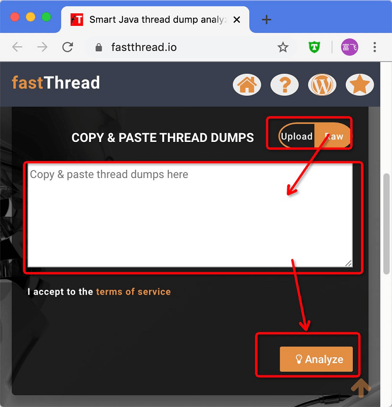
两种方式步骤都差不多，选择 RAW 方式上传文本字符串，然后点击分析按钮。
分析结果页面
等待片刻，自动跳转到分析结果页面。
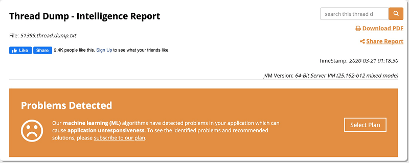
这里可以看到基本信息，以及右边的一些链接：
- 分享报告，可以很方便地把报告结果发送给其他小伙伴。
线程数汇总
把页面往下拉，可以看到线程数量汇总报告。
从这个报告中可以很直观地看到，线程总数为 26，其中 19 个运行状态线程，5 个等待状态的线程，2 个阻塞状态线程。
右边还给了一个饼图，展示各种状态所占的比例。
线程组分析
接着是将线程按照名称自动分组。
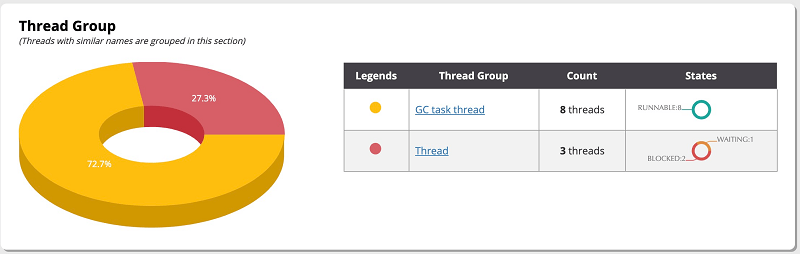
这里就看到线程命名的好处了吧！如果我们的线程池统一命名，那么相关资源池的使用情况就很直观。
所以在代码里使用线程池的时候，统一添加线程名称就是一个好的习惯！
守护线程分析
接下来是守护线程分析：
这里可以看到守护线程与前台线程的统计信息。
死锁情况检测
当然，也少不了死锁分析：
可以看到，各个工具得出的死锁检测结果都差不多。并不难分析，其中给出了线程名称，以及方法调用栈信息，等待的是哪个锁。
线程调用栈情况
以及线程调用情况：
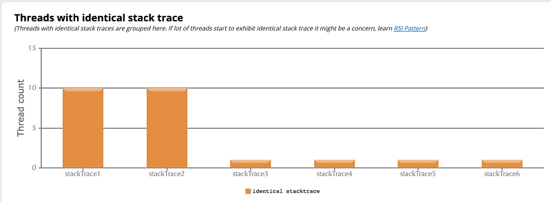
后面是这些线程的详情：
这块信息只是将相关的方法调用栈展示出来。
热点方法统计
热点方法是一个需要注意的重点，调用的越多，说明这一块可能是系统的性能瓶颈。
这里展示了此次快照中正在执行的方法。如果只看热点方法抽样的话，更精确的工具是 JDK 内置的 hprof。
但如果有很多方法阻塞或等待，则线程快照中展示的热点方法位置可以快速确定问题出现的代码行。
CPU 消耗信息
这里的提示信息不太明显，但给出了一些学习资源，这些资源请参考本文末尾给出的博客链接地址。
GC 线程信息
这里看到 GC 线程数是 8 个，这个值跟具体的 CPU 内核数量相差不大就算是正常的。
GC 线程数如果太多或者太少，会造成很多问题，我们在后面的章节中通过案例进行讲解。
线程栈深度
这里都小于10，说明堆栈都不深。
复杂死锁检测
接下来是复杂死锁检测和 Finalizer 线程的信息。
简单死锁是指两个线程之间互相死等资源锁。那么什么复杂死锁呢？ 这个问题留给同学们自己搜索。
火焰图
火焰图挺有趣，将所有线程调用栈汇总到一张图片中。
调用栈树
如果我们把所有的调用栈合并到一起，整体来看呢？
树形结构在有些时候也很有用，比如大量线程都在执行类似的调用栈路径时。
以上这些信息，都有助于我们去分析和排查 JVM 问题，而图形工具相对于命令行工具的好处是直观、方便、快速，帮我们省去过滤一些不必要的干扰信息的时间。
参考链接
26 面临复杂问题时的几个高级工具：它山之石，可以攻玉
前面提到了很多 JVM 的分析工具，本节里我们会再介绍几种有用的工具，大家可以在需要的时候按需使用。
OOM Killer
在前面的章节，我们简单提及过 Linux 系统上的 OOM Killer（Out Of Memory killer，OOM 终结者）。假如物理内存不足，Linux 会找出“一头比较壮的进程”来杀掉。
OOM Killer 参数调优
Java 的堆内存溢出（OOM），是指堆内存用满了，GC 没法回收导致分配不了新的对象。
而操作系统的内存溢出（OOM），则是指计算机所有的内存（物理内存 + 交换空间），都被使用满了。
这种情况下，默认配置会导致系统报警，并停止正常运行。当然，将 /proc/sys/vm/panic_on_oom 参数设置为 0 之后，则系统内核会在发生内存溢出时，自动调用 OOM Killer 功能，来杀掉最壮实的那头进程（Rogue Process，流氓进程），这样系统也许就可以继续运行了。
以下参数可以基于单个进程进行设置，以手工控制哪些进程可以被 OOM Killer 终结。这些参数位于 proc 文件系统中的 /proc/pid/ 目录下，其中 pid 是指进程的 ID。
- oomadj：正常范围是 -16 到 15，用于计算一个进程的 OOM 评分（oomscore）。这个分值越高，该进程越有可能被 OOM Killer 给干掉。如果设置为 -17，则禁止 OOM Killer 杀死该进程。
- proc 文件系统是虚拟文件系统，某个进程被杀掉，则 /proc/pid/ 目录也就被销毁了。
OOM Killer 参数调整示例
例如进程的 pid=12884，root 用户执行：
$ cat /proc/12884/oom_adj
0
# 查看最终得分
$ cat /proc/12884/oom_score
161
$ cat /proc/12884/oom_score_adj
0
# 修改分值 ...
$ echo -17 > /proc/12884/oom_adj
$ cat /proc/12884/oom_adj
-17
$ cat /proc/12884/oom_score
0
# 查看分值修正值
$ cat /proc/12884/oom_score_adj
-1000
# 修改分值
$ echo 15 > /proc/12884/oom_adj
$ cat /proc/12884/oom_adj
15
$ cat /proc/12884/oom_score
1160
$ cat /proc/12884/oom_score_adj
1000
这样配置之后，就允许某个占用了最多资源的进程，在操作系统内存不足时，也不会杀掉他，而是先去杀别的进程。
案例
我们通过以下这个案例来展示 OOM Killer。
1. 问题描述
某个 Java 应用经常挂掉，原因疑似 Java 进程被杀死。
2. 配置信息
配置如下：
- 服务器：阿里云 ECS
- IP 地址：192.168.1.52
- CPU：4 核，虚拟 CPU Intel Xeon E5-2650 2.60GHz
- 物理内存：8GB
3. 可用内存
内存不足：4 个 Java 进程，2.1+1.7+1.7+1.3=6.8G，已占用绝大部分内存。
4. 查看日志
Linux 系统的 OOM Killer 日志：
sudo cat /var/log/messages | grep killer -A 2 -B 2
经排查发现，具有如下日志：
$ sudo cat /var/log/messages | grep killer -A 2 -B 2
May 21 09:55:01 web1 systemd: Started Session 500687 of user root.
May 21 09:55:02 web1 systemd: Starting Session 500687 of user root.
May 21 09:55:23 web1 kernel: java invoked oom-killer: gfp_mask=0x201da，order=0，oom_score_adj=0
May 21 09:55:24 web1 kernel: java cpuset=/ mems_allowed=0
May 21 09:55:24 web1 kernel: CPU: 3 PID: 25434 Comm: java Not tainted 3.10.0-514.6.2.el7.x86_64 #1
--
May 21 12:05:01 web1 systemd: Started Session 500843 of user root.
May 21 12:05:01 web1 systemd: Starting Session 500843 of user root.
May 21 12:05:22 web1 kernel: jstatd invoked oom-killer: gfp_mask=0x201da，order=0，oom_score_adj=0
May 21 12:05:22 web1 kernel: jstatd cpuset=/ mems_allowed=0
May 21 12:05:23 web1 kernel: CPU: 2 PID: 10467 Comm: jstatd Not tainted 3.10.0-514.6.2.el7.x86_64 #1
可以确定，确实是物理内存不足引起的。
注意：所有 Java 进程的
-Xmx加起来，如果大于系统的剩余内存，就可能发生这种情况。
查询系统所有进程的 oom_score：
ps -eo pid,comm,pmem --sort -rss | awk '{"cat /proc/"$1"/oom_score" | getline oom; print $0"\t"oom}'
重要提示：
如果调整过某个进程的 oom_adj 配置，那么由该进程创建的所有进程，都会继承 oom_score 分值。例如，假设某个 sshd 进程受 OOM Killer 的保护，则所有的 SSH 会话也将受到保护。这样的配置，如果发生 OOM，有可能会影响 OOM Killer 拯救系统的功能。
我们现在设想一个场景，假如我们想要随时调试跟踪线上运行的系统，需要用什么样的工具呢？下面就介绍 2 款这样的工具。
BTrace 诊断分析工具
BTrace 是基于 Java 语言的一款动态追踪工具，可用于辅助问题诊断和分析。
BTrace 项目地址：
在 Wiki 页面 中有一些简单的介绍：
BTrace 基于 ASM、Java Attach API、Instruments 开发，提供很多注解。通过这些注解，可以通过 Java 代码来编写 BTrace 脚本进行只读监控，而无需深入了解 ASM 对字节码的操纵。
下面我们来实际操作一下。
BTrace 下载
找到 Release 页面，找到最新的压缩包下载：
下载完成后解压即可使用：
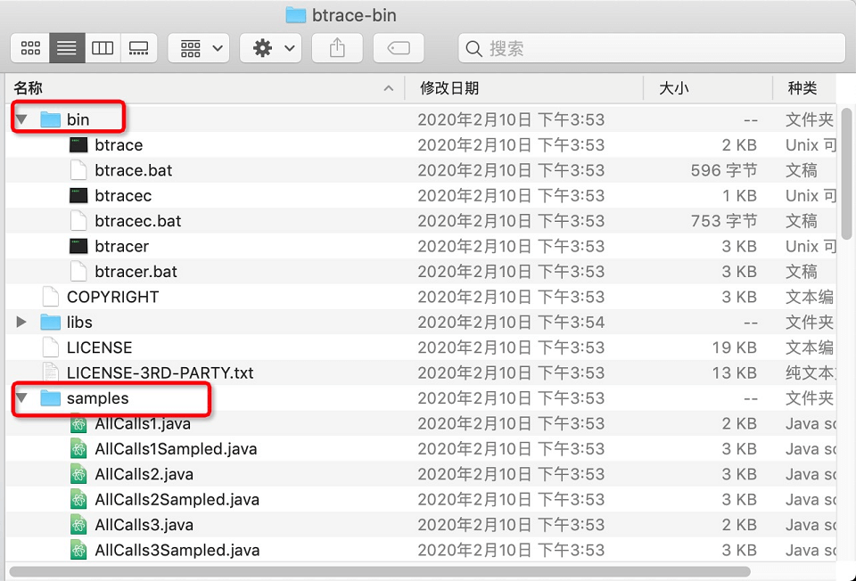
可以看到，bin 目录下是可执行文件，samples 目录下是脚本示例。
示例程序
我们先编写一个有入参有返回值的方法，示例如下：
package demo.jvm0209;
import java.util.UUID;
import java.util.concurrent.TimeUnit;
public class RandomSample {
public static void main(String[] args) throws Exception {
//
int count = 10000;
int seed = 0;
for (int i = 0; i < count; i++) {
seed = randomHash(seed);
TimeUnit.SECONDS.sleep(2);
}
}
public static int randomHash(Integer seed) {
String uuid = UUID.randomUUID().toString();
int hashCode = uuid.hashCode();
System.out.println("prev.seed=" + seed);
return hashCode;
}
}
这个示例程序很简单，循环很多次调用某个方法，使用其他程序也是一样的。
然后运行程序，可以看到控制台每隔一段时间就有一些输出：
prev.seed=1601831031
...
BTrace 提供了命令行工具，但使用起不如在 JVisualVM 中方便，下面通过 JVisualVM 中集成 BTrace 插件进行简单的演示。
JVisualVM 环境中使用 BTrace
安装 JVisualVM 插件的操作，我们在前面的章节《[JDK 内置图形界面工具]》中介绍过。
细心的同学可能已经发现，在安装 JVisualVM 的插件时，有一款插件叫做“BTrace Workbench”。安装这款插件之后，在对应的 JVM 实例上点右键，就可以进入 BTrace 的操作界面。
1. BTrace 插件安装
打开 VisualVM，选择菜单“工具–插件(G)”：
然后在插件安装界面中，找到“可用插件”：
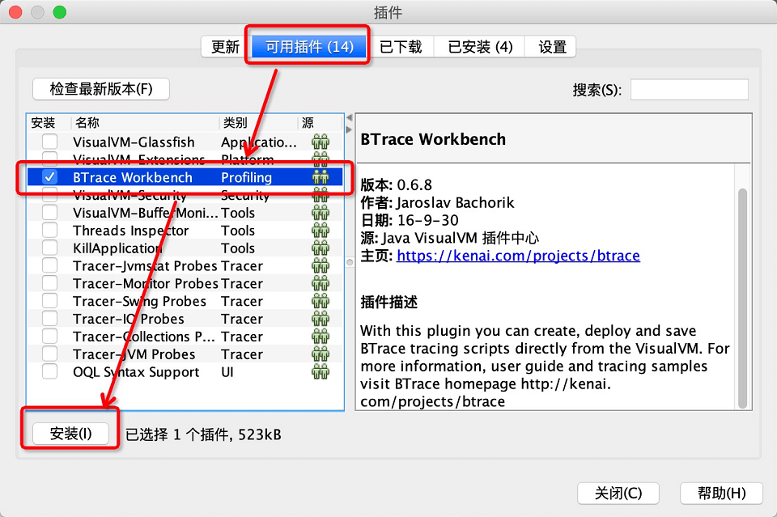
勾选“BTrace Workbench”之后，点击“安装(I)”按钮。
如果插件不显示，请更新 JDK 到最新版。
按照引导和提示，继续安装即可。
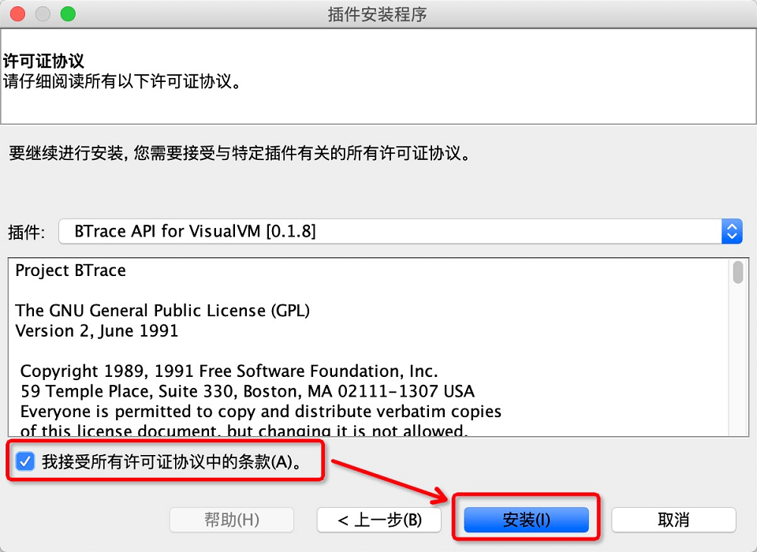
接受协议，并点击安装。
等待安装完成：
点击“完成”按钮即可。
BTrace 插件使用
打开后默认的界面如下：
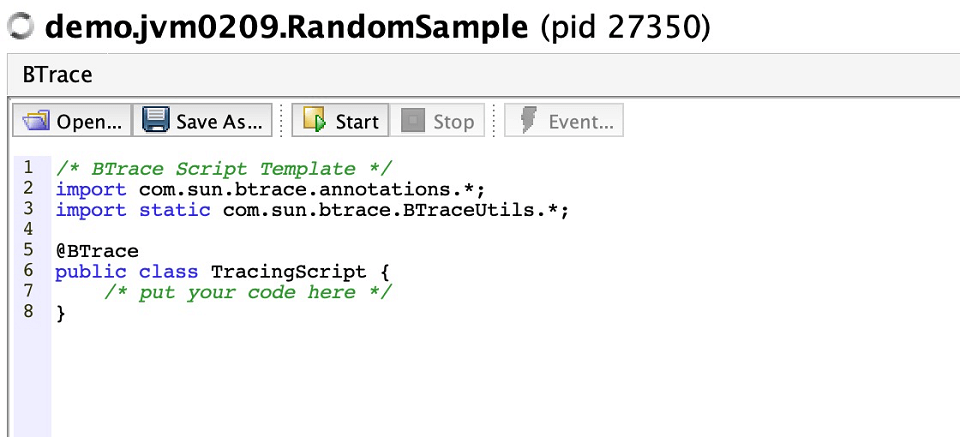
可以看到这是一个 Java 文件的样子。然后我们参考官方文档，加一些脚本进去。
BTrace 脚本示例
我们下载的 BTrace 项目中，samples 目录下有一些脚本示例。 参照这些示例，编写一个简单的 BTrace 脚本：
import com.sun.btrace.annotations.*;
import static com.sun.btrace.BTraceUtils.*;
@BTrace
public class TracingScript {
@OnMethod(
clazz = "/demo.jvm0209.*/",
method = "/.*/"
)
// 方法进入时
public static void simple(
@ProbeClassName String probeClass,
@ProbeMethodName String probeMethod) {
print("entered " + probeClass);
println("." + probeMethod);
}
@OnMethod(clazz = "demo.jvm0209.RandomSample",
method = "randomHash",
location = @Location(Kind.RETURN)
)
// 方法返回时
public static void onMethodReturn(
@ProbeClassName String probeClass,
@ProbeMethodName String probeMethod,
@Duration long duration,
@Return int returnValue) {
print(probeClass + "." + probeMethod);
print(Strings.strcat("(), duration=", duration+"ns;"));
println(Strings.strcat(" return: ", ""+returnValue));
}
}
执行结果
可以看到，输出了简单的执行结果：
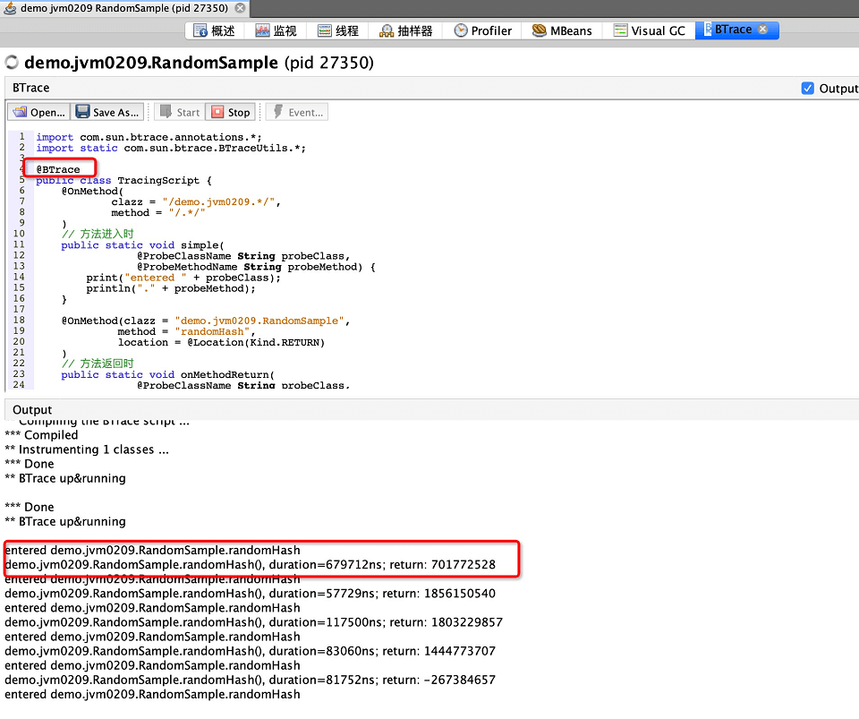
可以和示例程序的控制台输出比对一下。
更多示例
BTrace 提供了很多示例，照着改一改就能执行简单的监控。
Arthas 诊断分析工具
上面介绍的 BTrace 功能非常强大，但是实用限制也不少，环境问题也很多。那么有没有更好的类似工具呢？
本节我们就来介绍一下 Arthas 诊断分析工具，Arthas 项目首页：
Arthas 简介
Arthas（阿尔萨斯）是阿里巴巴推出了一款开源的 Java 诊断工具，深受开发者喜爱。为什么这么说呢？
- Arthas 支持 JDK 6 以及更高版本的 JDK；
- 支持 Linux/Mac/Winodws 操作系统；
- 采用命令行交互模式，同时提供丰富的 Tab 自动补全功能，方便进行问题的定位和诊断；
- 支持 WebConsole，在某些复杂的情况下，打通 HTTP 路由就可以访问。
当我们遇到以下类似问题而束手无策时，可以使用 Arthas 来帮助我们解决：
- 这个类从哪个 jar 包加载的？为什么会报各种类相关的 Exception？
- 我改的代码为什么没有执行到？难道是我没 commit？分支搞错了？
- 遇到问题无法在线上 Debug，难道只能通过加日志再重新发布吗？
- 线上遇到某个用户的数据处理有问题，但线上同样无法 debug，线下无法重现！
- 是否有一个全局视角来查看系统的运行状况？
- 有什么办法可以监控到 JVM 的实时运行状态？
- 怎么快速定位应用的热点，生成火焰图？
Arthas 官方提供了基础教程和进阶教程，以及网页版的命令行模拟器，跟着执行一遍很容易了解相关的功能。
下面我们跟着教程来体验一下。
下载与安装
首先，我们来安装 Arthas：
# 准备目录
mkdir -p /usr/local/tools/arthas
cd /usr/local/tools/arthas
# 执行安装脚本
curl -L https://alibaba.github.io/arthas/install.sh | sh
······
命令行启动：
# 启动
./as.sh -h
Error: telnet is not installed. Try to use java -jar arthas-boot.jar
# 安装telnet
# yum -y install telnet
# brew install telnet
# 再次执行
./as.sh
通过 jar 启动：
# 进入jar目录
cd ~/.arthas/lib/3.1.7/arthas/
# 通过jar启动 arthas
java -jar arthas-boot.jar
使用示例
启动之后显示的信息大致如下图所示：
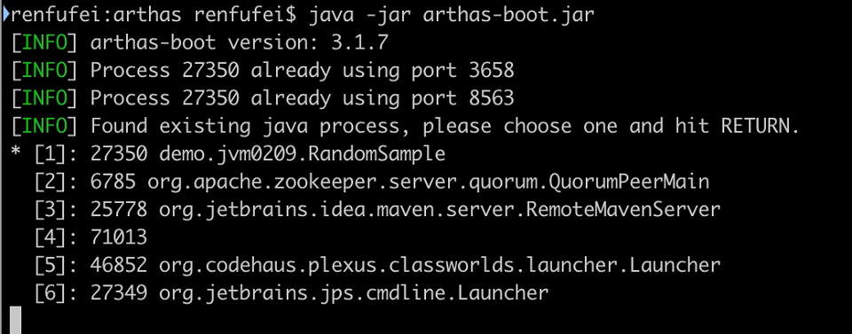
然后我们输入需要连接（Attach）的 JVM 进程，例如 1，然后回车。
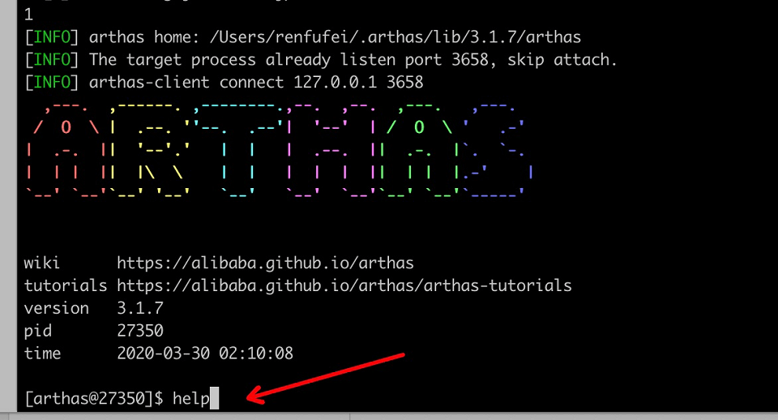
如果需要退出，输入 exit 即可。
接着我们输入 help 命令查看帮助，返回的信息大致如下。
[arthas@27350]$ help
NAME DESCRIPTION
help Display Arthas Help
keymap Display all the available keymap for the specified connection.
sc Search all the classes loaded by JVM
sm Search the method of classes loaded by JVM
classloader Show classloader info
jad Decompile class
getstatic Show the static field of a class
monitor Monitor method execution statistics, e.g. total/success/failure count, average rt, fail rate, etc.
stack Display the stack trace for the specified class and method
thread Display thread info, thread stack
trace Trace the execution time of specified method invocation.
watch Display the input/output parameter, return object, and thrown exception of specified method invocation
tt Time Tunnel
jvm Display the target JVM information
ognl Execute ognl expression.
mc Memory compiler, compiles java files into bytecode and class files in memory.
redefine Redefine classes. @see Instrumentation#redefineClasses(ClassDefinition...)
dashboard Overview of target jvm's thread, memory, gc, vm, tomcat info.
dump Dump class byte array from JVM
heapdump Heap dump
options View and change various Arthas options
cls Clear the screen
reset Reset all the enhanced classes
version Display Arthas version
shutdown Shutdown Arthas server and exit the console
stop Stop/Shutdown Arthas server and exit the console. Alias for shutdown.
session Display current session information
sysprop Display, and change the system properties.
sysenv Display the system env.
vmoption Display, and update the vm diagnostic options.
logger Print logger info, and update the logger level
history Display command history
cat Concatenate and print files
pwd Return working directory name
mbean Display the mbean information
grep grep command for pipes.
profiler Async Profiler. https://github.com/jvm-profiling-tools/async-profiler
这里列出了支持的命令。如果要查看某个命令的帮助信息怎么办呢？ 可以使用 help xxx 的形式。例如：
help thread
如果查看 JVM 信息，输入命令 jvm 即可。
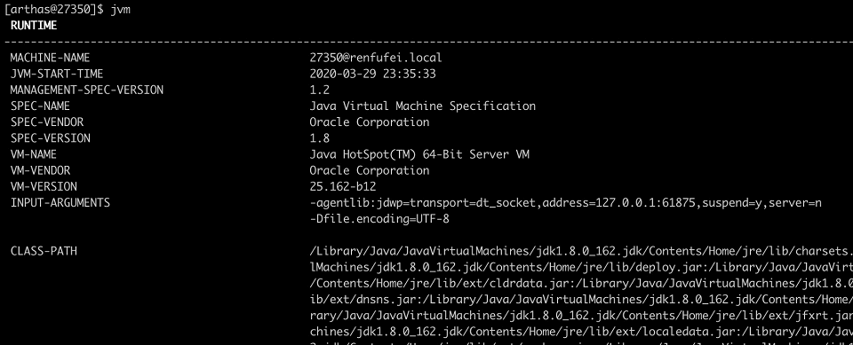
环境变量 sysenv：
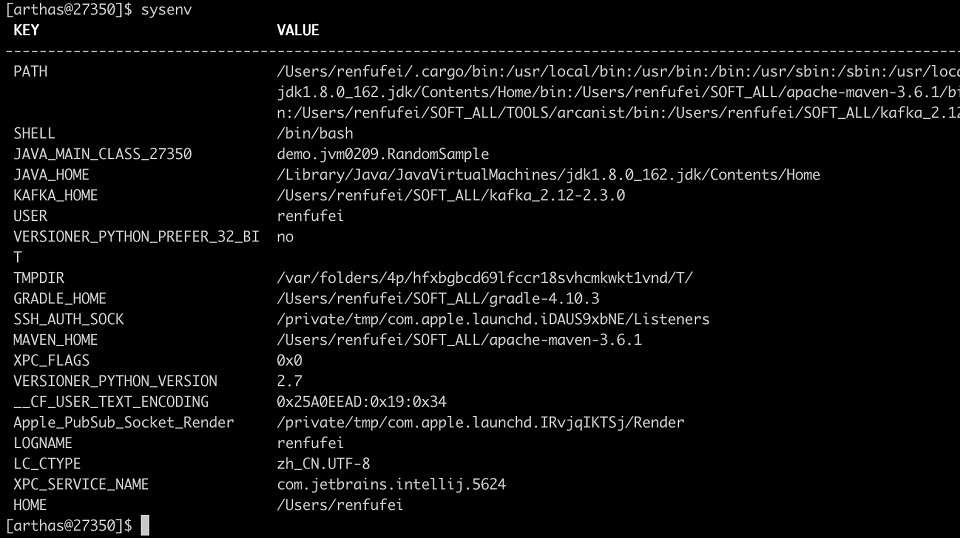
查看线程信息，输入命令 thread：
查看某个线程的信息：
[arthas@27350]$ thread 1
"main" Id=1 TIMED_WAITING
at java.lang.Thread.sleep(Native Method)
at java.lang.Thread.sleep(Thread.java:340)
at java.util.concurrent.TimeUnit.sleep(TimeUnit.java:386)
at demo.jvm0209.RandomSample.main(Unknown Source)
查看 JVM 选项 vmoption：
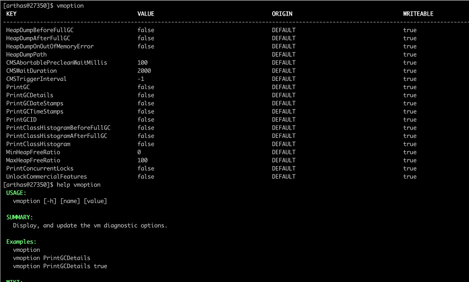
某些选项可以设置，这里给出了示例 vmoption PrintGCDetails true。
查找类 sc：
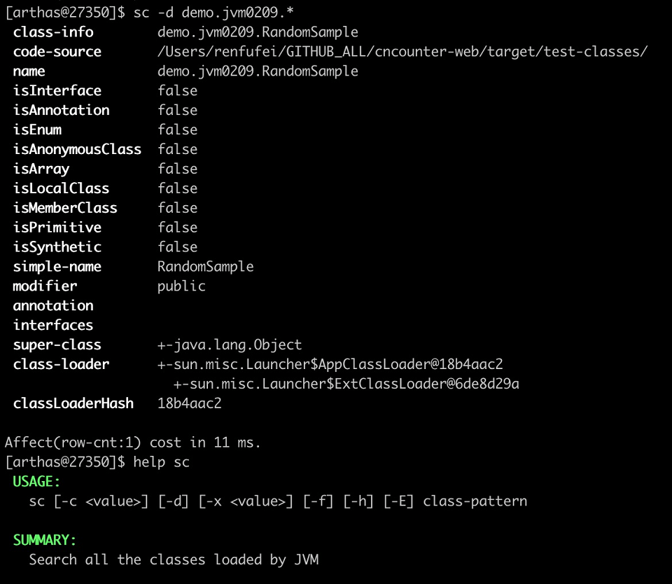
反编译代码 jad：
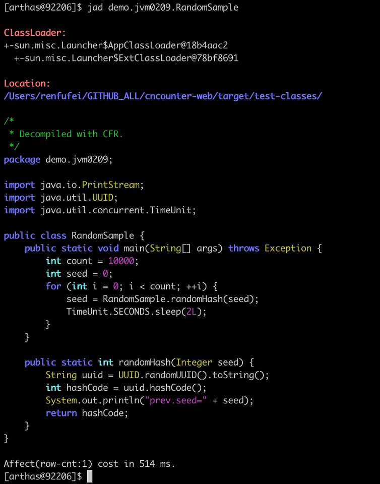
堆内存转储 heapdump：
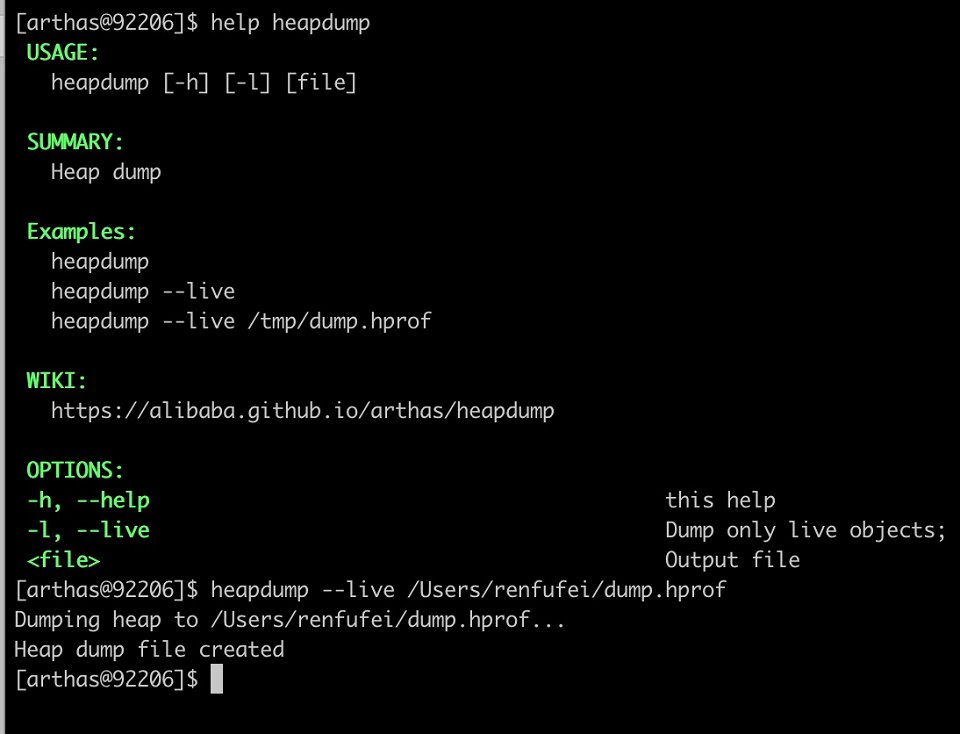
跟踪方法执行时间 trace：
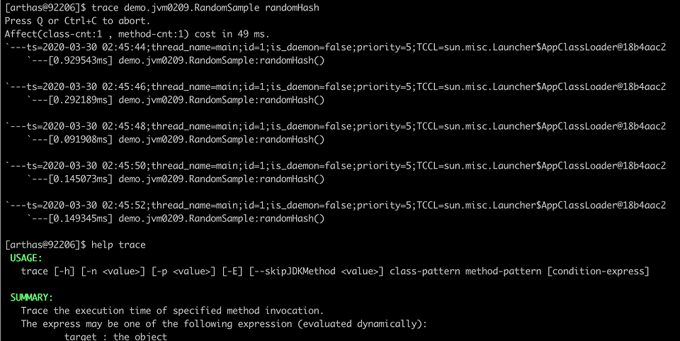
观察方法执行 watch：
可以看到，支持条件表达式，类似于代码调试中的条件断点。 功能非常强大，并且作为一个 JVM 分析的集成环境，使用起来也比一般工具方便。更多功能请参考 Arthas 用户文档。
抽样分析器（Profilers）
下面介绍分析器（profilers，Oracle 官方翻译是“抽样器”）。
相对于前面的工具，分析器只关心 GC 中的一部分领域，本节我们也只简单介绍分析器相关的 GC 功能。
需要注意：不要认为分析器适用于所有的场景。分析器有时确实作用很大，比如检测代码中的 CPU 热点时，但某些情况使用分析器不一定是个好方案。
对 GC 调优来说也是一样的。要检测是否因为 GC 而引起延迟或吞吐量问题时，不需要使用分析器。前面提到的工具（jstat 或原生/可视化 GC 日志）就能更好更快地检测出是否存在 GC 问题.。特别是从生产环境中收集性能数据时，最好不要使用分析器，因为性能开销非常大，对正在运行的生产系统会有影响。
如果确实需要对 GC 进行优化，那么分析器就可以派上用场了，可以对 Object 的创建信息一目了然。换个角度看，如果 GC 暂停的原因不在某个内存池中，那就只会是因为创建对象太多了。所有分析器都能够跟踪对象分配（via allocation profiling），根据内存分配的轨迹，让你知道 实际驻留在内存中的是哪些对象。
分配分析能定位到在哪个地方创建了大量的对象。使用分析器辅助进行 GC 调优的好处是，能确定哪种类型的对象最占用内存，以及哪些线程创建了最多的对象。
下面我们通过实例介绍 3 种分配分析器：hprof、JVisualVM 和 AProf。实际上还有很多分析器可供选择，有商业产品，也有免费工具，但其功能和应用基本上都是类似的。
hprof
hprof 分析器内置于 JDK 之中。在各种环境下都可以使用，一般优先使用这款工具。
性能分析工具——HPROF 简介：
https://github.com/cncounter/translation/blob/master/tiemao2017/20hprof/20_hprof.md.html
HPROF 参考文档：
https://docs.oracle.com/javase/8/docs/technotes/guides/troubleshoot/tooldescr008.html
要让 hprof 和程序一起运行，需要修改启动脚本，类似这样：
java -agentlib:hprof=heap=sites com.yourcompany.YourApplication
在程序退出时，会将分配信息 dump（转储）到工作目录下的 java.hprof.txt 文件中。使用文本编辑器打开，并搜索“SITES BEGIN”关键字，可以看到：
SITES BEGIN (ordered by live bytes) Tue Dec 8 11:16:15 2015
percent live alloc'ed stack class
rank self accum bytes objs bytes objs trace name
1 64.43% 4.43% 8370336 20121 27513408 66138 302116 int[]
2 3.26% 88.49% 482976 20124 1587696 66154 302104 java.util.ArrayList
3 1.76% 88.74% 241704 20121 1587312 66138 302115 eu.plumbr.demo.largeheap.ClonableClass0006
... 部分省略 ...
SITES END
从以上片段可以看到，allocations 是根据每次创建的对象数量来排序的。第一行显示所有对象中有 64.43% 的对象是整型数组 (int[])，在标识为 302116 的位置创建。搜索“TRACE 302116”可以看到：
TRACE 302116:
eu.plumbr.demo.largeheap.ClonableClass0006.<init>(GeneratorClass.java:11)
sun.reflect.GeneratedConstructorAccessor7.newInstance(<Unknown Source>:Unknown line)
sun.reflect.DelegatingConstructorAccessorImpl.newInstance(DelegatingConstructorAccessorImpl.java:45)
java.lang.reflect.Constructor.newInstance(Constructor.java:422)
现在，知道有 64.43% 的对象是整数数组，在 ClonableClass0006 类的构造函数中，第 11 行的位置，接下来就可以优化代码，以减少 GC 的压力。
Java VisualVM
本章前面的第一部分，在监控 JVM 的 GC 行为工具时介绍了 JVisualVM，本节介绍其在分配分析上的应用。
JVisualVM 通过 GUI 的方式连接到正在运行的 JVM。连接上目标 JVM 之后：
- 打开“工具”–>“选项”菜单，点击 **性能分析（Profiler）**标签，新增配置，选择 Profiler 内存，确保勾选了“Record allocations stack traces”（记录分配栈跟踪）。
- 勾选“Settings”（设置）复选框，在内存设置标签下，修改预设配置。
- 点击“Memory”（内存）按钮开始进行内存分析。
- 让程序运行一段时间，以收集关于对象分配的足够信息。
- 单击下方的“Snapshot”（快照）按钮，可以获取收集到的快照信息。
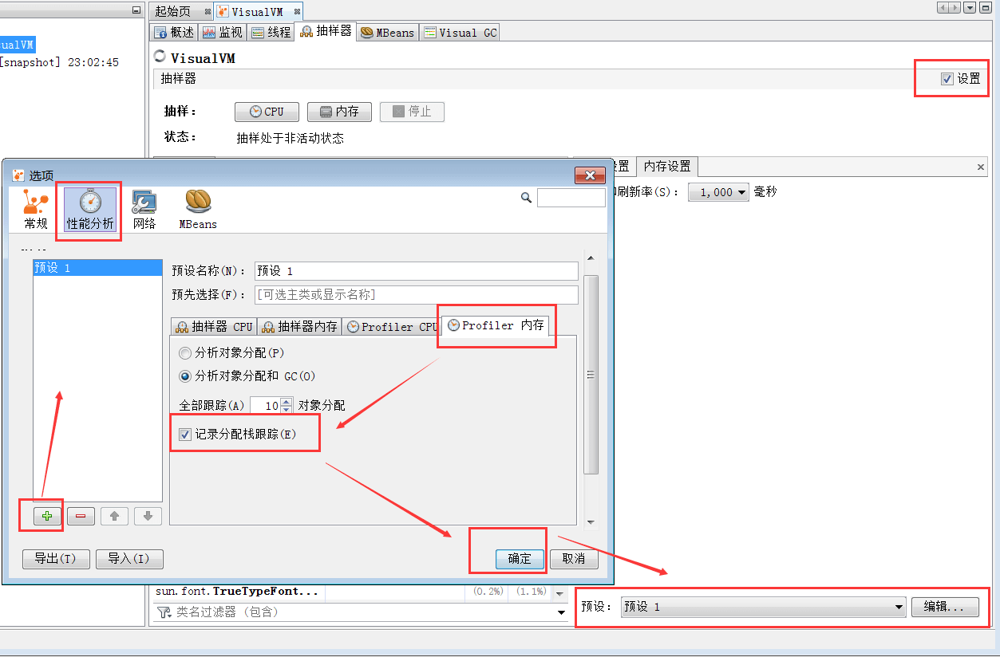
完成上面的步骤后，可以得到类似这样的信息：
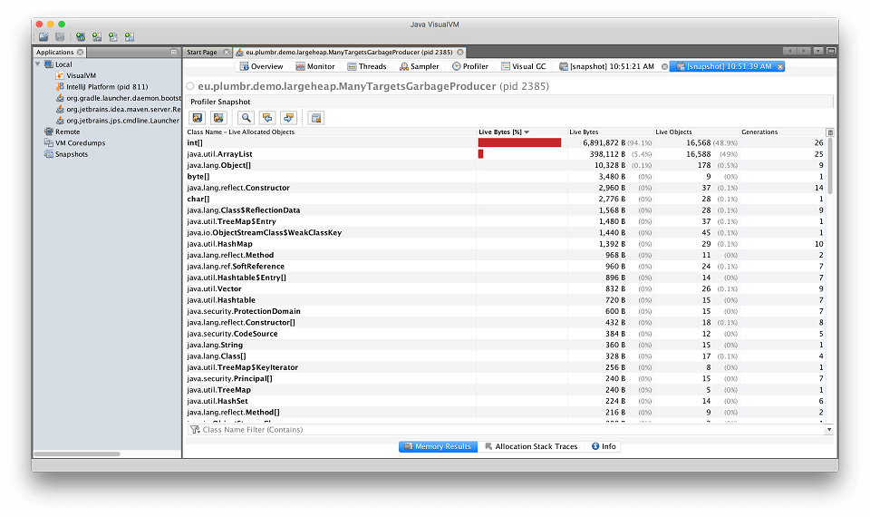
上图按照每个类被创建的对象数量多少来排序。看第一行可以知道，创建的最多的对象是 int[] 数组。鼠标右键单击这行，就可以看到这些对象都在哪些地方创建的：
与 hprof 相比，JVisualVM 更加容易使用 —— 比如上面的截图中，在一个地方就可以看到所有 int[] 的分配信息，所以多次在同一处代码进行分配的情况就很容易发现。
AProf
AProf 是一款重要的分析器，是由 Devexperts 开发的 AProf。内存分配分析器 AProf 也被打包为 Java agent 的形式。
用 AProf 分析应用程序，需要修改 JVM 启动脚本，类似这样：
java -javaagent:/path-to/aprof.jar com.yourcompany.YourApplication
重启应用之后，工作目录下会生成一个 aprof.txt 文件。此文件每分钟更新一次，包含这样的信息：
========================================================================================================================
TOTAL allocation dump for 91,289 ms (0h01m31s)
Allocated 1,769,670,584 bytes in 24,868,088 objects of 425 classes in 2,127 locations
========================================================================================================================
Top allocation-inducing locations with the data types allocated from them
------------------------------------------------------------------------------------------------------------------------
eu.plumbr.demo.largeheap.ManyTargetsGarbageProducer.newRandomClassObject: 1,423,675,776 (80.44%) bytes in 17,113,721 (68.81%) objects (avg size 83 bytes)
int[]: 711,322,976 (40.19%) bytes in 1,709,911 (6.87%) objects (avg size 416 bytes)
char[]: 369,550,816 (20.88%) bytes in 5,132,759 (20.63%) objects (avg size 72 bytes)
java.lang.reflect.Constructor: 136,800,000 (7.73%) bytes in 1,710,000 (6.87%) objects (avg size 80 bytes)
java.lang.Object[]: 41,079,872 (2.32%) bytes in 1,710,712 (6.87%) objects (avg size 24 bytes)
java.lang.String: 41,063,496 (2.32%) bytes in 1,710,979 (6.88%) objects (avg size 24 bytes)
java.util.ArrayList: 41,050,680 (2.31%) bytes in 1,710,445 (6.87%) objects (avg size 24 bytes)
... cut for brevity ...
上面的输出是按照 size 进行排序的。可以看出，80.44% 的 bytes 和 68.81% 的 objects 是在 ManyTargetsGarbageProducer.newRandomClassObject() 方法中分配的。其中，int[] 数组占用了 40.19% 的内存，是最大的一个。
继续往下看，会发现 allocation traces（分配痕迹）相关的内容，也是以 allocation size 排序的：
Top allocated data types with reverse location traces
------------------------------------------------------------------------------------------------------------------------
int[]: 725,306,304 (40.98%) bytes in 1,954,234 (7.85%) objects (avg size 371 bytes)
eu.plumbr.demo.largeheap.ClonableClass0006.: 38,357,696 (2.16%) bytes in 92,206 (0.37%) objects (avg size 416 bytes)
java.lang.reflect.Constructor.newInstance: 38,357,696 (2.16%) bytes in 92,206 (0.37%) objects (avg size 416 bytes)
eu.plumbr.demo.largeheap.ManyTargetsGarbageProducer.newRandomClassObject: 38,357,280 (2.16%) bytes in 92,205 (0.37%) objects (avg size 416 bytes)
java.lang.reflect.Constructor.newInstance: 416 (0.00%) bytes in 1 (0.00%) objects (avg size 416 bytes)
... cut for brevity ...
可以看到，int[] 数组的分配，在 ClonableClass0006 构造函数中继续增大。
和其他工具一样，AProf 揭露了 分配的大小以及位置信息（allocation size and locations），从而能够快速找到最耗内存的部分。
在我们看来，AProf 是非常有用的分配分析器，因为它只专注于内存分配，所以做得最好。同时这款工具是开源免费的，资源开销也最小。
参考链接
27 JVM 问题排查分析上篇（调优经验）
一般来说，只要系统架构设计得比较合理，大部分情况下系统都能正常运行，出现系统崩溃等故障问题是小概率事件。也就是说，业务开发是大部分软件工程中的重头戏，所以有人开玩笑说：“面试造火箭，入职拧螺丝。”
一般来说，我们进行排查分析的目的主要有：
- 解决问题和故障
- 排查系统风险隐患
我们按照问题的复杂程度，可以分为两类：
- 常规问题
- 疑难杂症
常规的问题一般在开发过程中就被发现和解决了，所以线上问题一般会比较复杂，出现在大家都没有考虑到的地方。按照我们的多年解决经验，这些复杂问题的排查方式可以分为两种途径：
- 逻辑严密的系统性排查；
- 以猜测来驱动，凭历史经验进行排查。
如果您倾向于选择后一种方式，那么可能会浪费大量的时间，效果得看运气。更糟糕的是，因为基本靠蒙，所以这个过程是完全不可预测的，如果时间很紧张，就会在团队内部造成压力，甚至升级为甩锅和互相指责。
系统出现性能问题或者故障，究竟是不是 JVM 的问题，得从各个层面依次进行排查。
为什么问题排查这么困难？
生产环境中进行故障排查的困难
在生产环境中针对特定问题进行故障排除时，往往会有诸多限制，从而导致排查的过程变得痛苦。
1. 影响到客户的时间越短越好
面对客户的抱怨，解决问题最快的办法可能是：“只要重启机器就能让系统恢复正常”。
用最快的方法来避免对用户产生影响是很自然的需求。
但重启可能会破坏故障现场，那样就很难排查问题的根本原因了。
如果重新启动实例，则无法再采集实际发生的情况，导致我们并没有从这次故障中学习，从而获得收益。
即使重启解决了目前的问题，但问题原因本身仍然存在，一直是一个定时炸弹，还可能会接二连三地发生。
2. 安全方面的限制
接下来是安全性相关的限制，这些限制导致生产环境是独立和隔离的，一般来说，开发人员可能没有权限访问生产环境。如果没有权限访问生产环境，那就只能进行远程故障排除，并涉及到所有与之相关的问题：
- 每个要执行的操作都需要多人参与或审核，这不仅增加了执行单个操作所需的时间，而且沟通交流过程中可能会丢失一些信息。
特别是将临时补丁程序发布到生产环境时，“希望它能生效”，但这种试错的情况却可能导致越来越糟糕。
因为测试和发布流程可能又要消耗几小时甚至几天，进一步增加了解决问题实际消耗的时间。
如果还需要分多次上线这种“不一定生效的补丁程序”，则很可能会消耗几个星期才能解决问题。
3. 工具引发的问题
还有很重要的一点是需要使用的工具：安装使用的某些工具在特点场景下可能会使情况变得更糟。
例如：
- 对 JVM 进行堆转储（heap dump）可能会使 JVM 暂停几十秒或更长时间。
- 打印更细粒度的日志可能会引入其他的并发问题，IO 开销、磁盘问题等。
- 增加的探测器或者分析器可能会有很大开销，导致本就缓慢的系统彻底卡死。
因此，要想给系统打补丁或者增加新的远程监测程序，可能最终会花费很多天的时间：既然在生产环境中进行故障诊断排查会面临这么多的问题，很自然地，大部分情况下，我们都是在开发或测试环境中进行故障排查。
在测试和开发环境进行诊断需要注意的问题
如果在开发环境或者测试环境中进行问题诊断和故障排查，则可以避免生产环境中的那些麻烦。
因为开发环境和生产环境配置不同，有些时候可能也会有问题：即很难复现生产环境中产生的 Bug 或性能问题。
例如：
- 测试环境和生产环境使用的数据源不同。这意味着由数据量引发的性能问题可能不会在测试环境中重现。
- 某些问题的使用方式可能不容易复现（我们有时候也称之为“幽灵问题”）。例如只在 2 月 29 日这个特殊时间引起的并发问题，只在多个用户同时访问某个功能时引发，如果事先不知道原因，那也很难排查。
- 两个环境下的应用程序可能还不一样。生产部署的配置可能明显不同。这些差异包括：操作系统、群集、启动参数，以及不同的打包版本。
这些困难会引起“这不可能，我机器上就没事” 这种很尴尬的局面。
可以看出，因为和实际的生产环境不同，所以在对某些问题进行故障排除时，当前系统环境的性质可能会让你遇到的一些莫名其妙的障碍。
除了特定环境的约束之外，还有其他方面的因素也会导致故障排除过程的不可预测性。
需要做哪些准备工作
本节提供一些处理经验，但是我们希望他们不会成为你的应急措施（就像医生不希望你来医院）。
最好是在平时就先做好全面的系统监控、有针对性的应急预案，并时常进行演练。
掌握行业领域相关的知识
能力可以分为外功和内功。内功就是各种基础知识。外功就是各种工具、技能和技巧。
分析排查问题，需要大量的专业背景知识来支撑。否则你猜都不知道怎么猜，没有方向，也就很难验证正确性了。
想要具备排查复杂问题的能力，至少得对领域行业相关的横向知识有一定的了解，最好还能对所面临的具体问题域有竖向的深刻认识和经验，即所谓的“T”字型人才。
JVM 问题排查需要掌握哪些领域相关的知识呢？下面列出了一些基础：
- Java 语言功底
- JVM 基础知识
- 并发领域知识
- 计算机体系结构和组成原理
- TCP/IP 网络体系知识
- HTTP 协议和 Nginx 等服务器知识
- 数据库领域知识
- 搜索引擎使用技巧
以及从这些领域延伸出来的各种技能和技巧。
故障排除是必不可少的过程。只要有人使用的系统，就无法避免地会发生一些故障，因此我们需要很清楚地了解系统的现状和问题。我们无法绕过不同环境带来的困扰，但也不可能“21 天就变成专家”。
在技术开发这个行业，一万小时理论总是成立的。除了累积1万小时的训练时间来成为该领域的专家之外，其实还有更快速的解决方案来减轻故障排除所带来的痛苦。
在开发环境中进行抽样分析
对代码进行抽样分析并没有错，尤其是在系统正式上线之前。
相反，了解应用程序各个部分的热点以及内存消耗，能有效防止某些问题影响到生产环境的用户。
虽然由于数据，使用方式和环境的差异，最终只能模拟生产环境中面临的一部分问题。 但使用这种技术可以预先进行风险排查，如果真的发生问题，可以在追溯问题原因时很快定位。
在测试环境中进行验证
在质量保证领域投入适当的资源，尤其是自动化的持续集成、持续交付流程能及早暴露出很多问题。如果进行周全和彻底的测试，将进一步减少生产环境的事故。但是，这些工作往往得不到资源，“你看功能不是已经完成了吗，为什么还要去花人力物力继续搞，又没有收益”。
实际的工作中，我们很难证明对质量检查的投资是否合理。
一切标有“性能测试”或“验收测试”的产品，最终都将与清晰而可衡量的业务目标（新功能开发）存在竞争。
现在，当开发人员推动“执行某项性能优化”的任务时，如果不能提升优先级，此类任务会积压下来，永远都是待办事项。
为了证明这种投资的合理性，我们需要将投资回报与质量联系起来。如果将生产环境中的P1故障事件减少到80%，可以让我们多产生2倍的收益，在这种情况下，我们就能推动相关人员把这些工作做好。相反地，如果我们不能说明我们改进工作的收益，则我们可能就没有资源去提升质量。
曾经有一个特别形象的例子：农村的孩子为什么不读书？
家长说：因为穷，所以不读书。
那又为什么而贫穷呢？
家长说：因为不读书，所以穷。
在生产环境中做好监控
系统就像是人体一样，只要活着就会在某个时间点生病，所以，我们必须接受的第一件事情就是生产环境一定会出现问题，不管是 Bug 引起的，还是人为操作失误，亦或者天灾导致的。
即使是 NASA/SpaceX 这种高端组织也会不时地炸几艘飞船火箭，因此我们需要为线上发生的问题做好准备。
无论怎么分析和测试，总会有些漏掉的地方，事故就在这些地方产生。
既然无法避免总会需要对生产环境进行故障排除。为了更好地完成手头的工作，就需要监控生产环境中系统的状态。
- 当出现问题时，理想情况下，我们已经拥有了足以解决该问题的相关信息。
- 如果已经拥有了所需的信息，则可以快速跳过问题复现和信息收集的步骤。
不幸的是，监控领域并没有万能的银弹。即使是最新的技术也无法提供不同场景下的所有信息。
典型的 Web 应用系统，至少应该集成下面这些部分：
- 日志监控。汇总各个服务器节点的日志，以便技术团队可以快速搜索相关的信息，日志可视化，并进行异常报警。最常用的解决方案是 ELK 技术栈，将日志保存到 Elasticsearch 中，通过 Logstash 进行分析，并使用 Kibana 来展示和查询。
- 系统监控。在基础架构中汇总系统指标并进行可视化查询，既简单又有效。关注CPU、内存、网络和磁盘的使用情况，可以发现系统问题并配置监控报警。
- 系统性能监控（APM，Application Performance Monitoring），以及用户体验监控。关注单个用户的交互，能有效展示用户感受到的系统性能和可用性问题。至少，我们可以知道是哪个服务在哪段时间发生了故障。比如集成 Micrometer、Pinpoint、Skywalking、Plumbr 等技术，能快速定位代码中的问题。
确保在系统发布之前已经在开发环境中进行过系统性能分析，并经过测试验收，从而减少生产故障。
了解生产部署环境并做好监控，当故障发生时，我们就能可预料的方式，更快地做出响应。
自上而下划分 JVM 问题
前面的小节讲了一般的问题诊断和调优套路：
做好监控，定位问题，验证结果，总结归纳。
下面我们看看 JVM 领域有哪些问题.
从上图可以看到，JVM 可以划分为这些部分：
- 执行引擎，包括：GC、JIT 编译器
- 类加载子系统，这部分的问题，一般在开发过程中出现
- JNI 部分，这部分问题一般在 JVM 之外
- 运行时数据区；Java 将内存分为 2 大块：堆内存和栈内存
对这些有了了解，在我们进行知识储备时，就可以按照自顶向下的方式，逐个攻克。
线上环境的JVM问题主要集中在 GC 和内存部分。而栈内存、线程分析等问题，主要是辅助诊断 Java 程序本身的问题。
相关的知识点，如果有不清楚的地方，请各位同学回过头来，再读一读前面的章节。
我认为这些基础的技术和知识，需要阅读和练习 2~3 遍，才会掌握的比较牢固；毕竟理解和掌握了才是自己的。
标准 JVM 参数配置
有读者朋友提问：
我希望能在课程中总结一下，JVM 的参数设置，应该按照哪些步骤来设置？
截止目前（2020 年 3 月），JVM 可配置参数已经达到 1000 多个，其中 GC 和内存配置相关的 JVM 参数就有 600 多个。从这个参数比例也可以看出，JVM 问题排查和性能调优的重点领域还是 GC 和内存。
参数太多是个大麻烦，让人难以下手，学习和理解起来也很费事。
但在绝大部分业务场景下，常用的 JVM 配置参数也就 10 来个。
我们先给一个示例，读者可根据需要适当增减。
# 设置堆内存
-Xmx4g -Xms4g
# 指定 GC 算法
-XX:+UseG1GC -XX:MaxGCPauseMillis=50
# 指定 GC 并行线程数
-XX:ParallelGCThreads=4
# 打印 GC 日志
-XX:+PrintGCDetails -XX:+PrintGCDateStamps
# 指定 GC 日志文件
-Xloggc:gc.log
# 指定 Meta 区的最大值
-XX:MaxMetaspaceSize=2g
# 设置单个线程栈的大小
-Xss1m
# 指定堆内存溢出时自动进行 Dump
-XX:+HeapDumpOnOutOfMemoryError
-XX:HeapDumpPath=/usr/local/
这些参数我们在前面的章节中都介绍过。
此外，还有一些常用的属性配置：
# 指定默认的连接超时时间
-Dsun.net.client.defaultConnectTimeout=2000
-Dsun.net.client.defaultReadTimeout=2000
# 指定时区
-Duser.timezone=GMT+08
# 设置默认的文件编码为 UTF-8
-Dfile.encoding=UTF-8
# 指定随机数熵源（Entropy Source）
-Djava.security.egd=file:/dev/./urandom
一份简单的问题排查手册
一般人的排查方式
如果使用自己熟悉的工具，并且对于故障排除的规则已经胸有成竹，那么环境限制就不再是什么大问题。
实际上，负责排查和解决问题的工程师通常没有预先规划好的处理流程。
老实说，大家是否有过像下面这样的 shell 操作：
# 查看当前路径
pwd
# 查看当前目录下有哪些文件
ls -l
# 查看系统负载
top
# 查看剩余内存
free -h
# 查看剩余磁盘
df -h
# 查看当前目录的使用量
du -sh *
# 系统活动情况报告
sar
-bash: sar: command not found
# Linux安装sysstat
# apt-get install sysstat
# yum -y install sysstat
# 查看帮助手册
man sar
# 查看最近的报告
sar 1
# ???
sar -G 1 3
sar: illegal option -- G
# 查看帮助手册
man sar
# ......
如果您觉得上面这个过程很熟悉，别紧张，其实大家都这样干。
大多数工程师在故障排除和诊断调优领域都缺乏经验，因此也就很难使用标准的套路。
这没什么丢人的——除非是 Brendan Gregg or Peter Lawrey 这种专业大牛，否则您很难有 1 万小时的故障排除经历，也就很难成为这个领域的专家。
缺乏经验的话，针对当前问题，往往需要使用不同的工具来收集信息，例如：
- 收集不同的指标（CPU、内存、磁盘 IO、网络等等）
- 分析应用日志
- 分析 GC 日志
- 获取线程转储并分析
- 获取堆转储来进行分析
最容易排查的是系统硬件和操作系统问题，比如：CPU、内存、网络、磁盘 IO。
我们可以使用的工具几乎是无限的。与实际解决问题相比，使用各种不熟悉的工具，可能会浪费更多的时间。
以可量化的方式来进行性能调优
回顾一下，我们的课程介绍了可量化的 3 个性能指标：
- 系统容量：比如硬件配置、设计容量；
- 吞吐量：最直观的指标是 TPS；
- 响应时间：也就是系统延迟，包括服务端延时和网络延迟。
也可以具体拓展到单机并发，总体并发、数据量；用户数、预算成本等等。
一个简单的流程
不同的场景、不同的问题，排查方式都不一样，具体怎么来确定问题是没有固定套路的。
可以事先进行的操作包括：
- 培训：提前储备相关领域的知识点和技能、工具使用技巧等等。
- 监控：前面提到过，主要是 3 部分，业务日志、系统性能、APM 指标。
- 预警：在故障发生时，及时进行告警； 在指标超过阈值时进行预警。
- 排查风险点：了解系统架构和部署结构，分析单点故障、扩容瓶颈等等。
- 评估系统性能和服务级别：例如可用性、稳定性、并发能力、扩展性等等。
各家公司可能有自己的事故处理规范，可能会涉及这些因素：
- 相关人员：包括开发、运维、运营、QA、管理人员、客服等等。
- 事故级别，严重程度，影响范围、紧急程度。
- 汇报、沟通、咨询。
- 问题排查，诊断、定位，监控、分析
- 事故总结、分析原因、防止再现。
- 改进和优化、例如使用新技术、优化架构等等。
可以进行排查的点
\1. 查询业务日志，可以发现这类问题：请求压力大、波峰、遭遇降级、熔断等等，基础服务、外部 API 依赖。
\2. 查看系统资源和监控信息：
- 硬件信息、操作系统平台、系统架构
- 排查 CPU 负载
- 内存不足
- 磁盘使用量、硬件故障、磁盘分区用满、IO 等待、IO 密集、丢数据、并发竞争等情况
- 排查网络：流量打满，响应超时，无响应，DNS 问题，网络抖动，防火墙问题，物理故障，网络参数调整、超时、连接数
\3. 查看性能指标，包括实时监控、历史数据。可以发现假死、卡顿、响应变慢等现象。
- 排查数据库，并发连接数、慢查询、索引、磁盘空间使用量、内存使用量、网络带宽、死锁、TPS、查询数据量、redo 日志、undo、binlog 日志、代理、工具 Bug。可以考虑的优化包括：集群、主备、只读实例、分片、分区。
- 大数据、中间件、JVM 参数。
\4. 排查系统日志，比如重启、崩溃、Kill。
\5. APM，比如发现有些链路请求变慢等等。
\6. 排查应用系统：
- 排查配置文件：启动参数配置、Spring 配置、JVM 监控参数、数据库参数、Log 参数、APM 配置。
- 内存问题，比如是否存在内存泄漏，内存溢出、批处理导致的内存放大、GC 问题等等。
- GC 问题，确定 GC 算法、确定 GC 的KPI，GC 总耗时、GC 最大暂停时间、分析 GC 日志和监控指标：内存分配速度，分代提升速度，内存使用率等数据。适当时修改内存配置。
- 排查线程，理解线程状态、并发线程数、线程 Dump，锁资源、锁等待、死锁。
- 排查代码，比如安全漏洞、低效代码、算法优化、存储优化、架构调整、重构、解决业务代码 Bug、第三方库、XSS、CORS、正则。
- 单元测试：覆盖率、边界值、Mock 测试、集成测试。
\7. 排除资源竞争、[坏邻居效应](https://github.com/cncounter/translation/blob/master/tiemao_2016/45_noisy_neighbors/noisy_neighbor_cloud _performance.md)。
\8. 疑难问题排查分析手段：
- DUMP 线程
- DUMP 内存
- 抽样分析
- 调整代码、异步化、削峰填谷
总之，时至今日，软件领域的快速发展，使得我们可以使用的手段和工具，都很丰富。勤学苦练，掌握一些常见的套路，熟练搭配应用一些工具，是我们技术成长，能快速解决问题的不二法门。
28 JVM 问题排查分析下篇（案例实战）
GC 问题排查实战案例
这一部分，我们来看一个实际的案例。
假设我们有一个提供高并发请求的服务，系统使用 Spring Boot 框架，指标采集使用 MicroMeter，监控数据上报给 Datadog 服务。
当然，Micrometer支 持将数据上报给各种监控系统，例如：AppOptics、Atlas、Datadog、Dynatrace、Elastic、Ganglia、Graphite、Humio、Influx、Instana、JMX、KairosDB、New Relic、Prometh eus、SignalFx、Stackdriver、StatsD、Wavefront 等等。
有关MicroMeter的信息可参考：
问题现象描述
最近一段时间，通过监控指标发现，有一个服务节点的最大 GC 暂停时间经常会达到 400ms 以上。
如下图所示：
从图中可以看到，GC 暂停时间的峰值达到了 546ms，这里展示的时间点是 2020 年 02 月 04 日 09:20:00 左右。
客户表示这种情况必须解决，因为服务调用的超时时间为 1s，要求最大 GC 暂停时间不超过 200ms，平均暂停时间达到 100ms 以内，对客户的交易策略产生了极大的影响。
CPU 负载
CPU 的使用情况如下图所示：
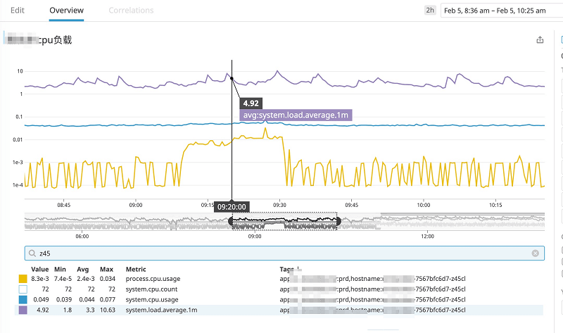
从图中可以看到：系统负载为 4.92，CPU使用率 7% 左右，其实这个图中隐含了一些重要的线索，但我们此时并没有发现什么问题。
GC 内存使用情况
然后我们排查了这段时间的内存使用情况：
从图中可以看到，大约 09:25 左右 old_gen 使用量大幅下跌，确实是发生了 FullGC。
但 09:20 前后，老年代空间的使用量在缓慢上升，并没有下降，也就是说引发最大暂停时间的这个点并没有发生 FullGC。
当然，这些是事后复盘分析得出的结论。当时对监控所反馈的信息并不是特别信任，怀疑就是触发了 FullGC 导致的长时间 GC 暂停。
为什么有怀疑呢，因为 Datadog 这个监控系统，默认 10s 上报一次数据。有可能在这 10s 内发生些什么事情但是被漏报了（当然，这是不可能的，如果上报失败会在日志系统中打印相关的错误）。
再分析上面这个图，可以看到老年代对应的内存池是 "ps_old_gen"，通过前面的学习，我们知道，ps 代表的是 ParallelGC 垃圾收集器。
JVM 启动参数
查看 JVM 的启动参数，发现是这样的：
-Xmx4g -Xms4g
我们使用的是 JDK 8，启动参数中没有指定 GC，确定这个服务使用了默认的并行垃圾收集器。
于是怀疑问题出在这款垃圾收集器上面，因为很多情况下 ParallelGC 为了最大的系统处理能力，即吞吐量，而牺牲掉了单次的暂停时间，导致暂停时间会比较长。
使用 G1 垃圾收集器
怎么办呢？准备换成 G1，毕竟现在新版本的 JDK 8 中 G1 很稳定，而且性能不错。
然后换成了下面的启动参数：
# 这个参数有问题，启动失败
-Xmx4g -Xms4g -XX:+UseG1GC -XX:MaxGCPauseMills=50ms
结果启动失败，忙中出错，参数名和参数值都写错了。
修正如下：
-Xmx4g -Xms4g -XX:+UseG1GC -XX:MaxGCPauseMillis=50
接着服务启动成功，等待健康检测自动切换为新的服务节点，继续查看指标。
看看暂停时间，每个节点的 GC 暂停时间都降下来了，基本上在 50ms 以内，比较符合我们的预期。
嗯！事情到此结束了？远远没有。
“彩蛋”惊喜
过了一段时间，我们发现了个下面这个惊喜（也许是惊吓），如下图所示：
中奖了，运行一段时间后，最大 GC 暂停时间达到了 1300ms。
情况似乎更恶劣了。
继续观察，发现不是个别现象：
内心是懵的，觉得可能是指标算错了，比如把 10s 内的暂停时间全部加到了一起。
注册 GC 事件监听
于是想了个办法，通过 JMX 注册 GC 事件监听，把相关的信息直接打印出来。
关键代码如下所示：
// 每个内存池都注册监听
for (GarbageCollectorMXBean mbean
: ManagementFactory.getGarbageCollectorMXBeans()) {
if (!(mbean instanceof NotificationEmitter)) {
continue; // 假如不支持监听...
}
final NotificationEmitter emitter = (NotificationEmitter) mbean;
// 添加监听
final NotificationListener listener = getNewListener(mbean);
emitter.addNotificationListener(listener, null, null);
}
通过这种方式，我们可以在程序中监听 GC 事件，并将相关信息汇总或者输出到日志。 具体的实现代码在后面的章节《应对容器时代面临的挑战》中给出。
再启动一次，运行一段时间后，看到下面这样的日志信息：
{
"duration":1869,
"maxPauseMillis":1869,
"promotedBytes":"139MB",
"gcCause":"G1 Evacuation Pause",
"collectionTime":27281,
"gcAction":"end of minor GC",
"afterUsage":
{
"G1 Old Gen":"1745MB",
"Code Cache":"53MB",
"G1 Survivor Space":"254MB",
"Compressed Class Space":"9MB",
"Metaspace":"81MB",
"G1 Eden Space":"0"
},
"gcId":326,
"collectionCount":326,
"gcName":"G1 Young Generation",
"type":"jvm.gc.pause"
}
情况确实有点不妙。
这次实锤了，不是 FullGC，而是年轻代 GC，而且暂停时间达到了 1869ms。 一点道理都不讲，我认为这种情况不合理，而且观察 CPU 使用量也不高。
找了一大堆资料，试图证明这个 1869ms 不是暂停时间，而只是 GC 事件的结束时间减去开始时间。
打印 GC 日志
既然这些手段不靠谱，那就只有祭出我们的终极手段：打印 GC 日志。
修改启动参数如下：
-Xmx4g -Xms4g -XX:+UseG1GC -XX:MaxGCPauseMillis=50
-Xloggc:gc.log -XX:+PrintGCDetails -XX:+PrintGCDateStamps
重新启动，希望这次能排查出问题的原因。
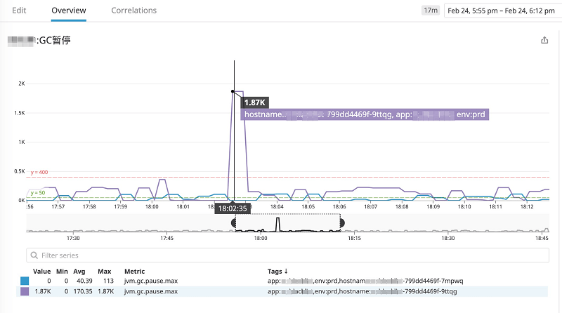
运行一段时间，又发现了超长的暂停时间。
分析 GC 日志
因为不涉及敏感数据，那么我们把 GC 日志下载到本地进行分析。
定位到这次暂停时间超长的 GC 事件，关键的信息如下所示：
Java HotSpot(TM) 64-Bit Server VM (25.162-b12) for linux-amd64 JRE (1.8.0_162-b12),
built on Dec 19 2017 21:15:48 by "java_re" with gcc 4.3.0 20080428 (Red Hat 4.3.0-8)
Memory: 4k page, physical 144145548k(58207948k free), swap 0k(0k free)
CommandLine flags:
-XX:InitialHeapSize=4294967296 -XX:MaxGCPauseMillis=50 -XX:MaxHeapSize=4294967296
-XX:+PrintGC -XX:+PrintGCDateStamps -XX:+PrintGCDetails -XX:+PrintGCTimeStamps
-XX:+UseCompressedClassPointers -XX:+UseCompressedOops -XX:+UseG1GC
2020-02-24T18:02:31.853+0800: 2411.124: [GC pause (G1 Evacuation Pause) (young), 1.8683418 secs]
[Parallel Time: 1861.0 ms, GC Workers: 48]
[GC Worker Start (ms): Min: 2411124.3, Avg: 2411125.4, Max: 2411126.2, Diff: 1.9]
[Ext Root Scanning (ms): Min: 0.0, Avg: 0.3, Max: 2.7, Diff: 2.7, Sum: 16.8]
[Update RS (ms): Min: 0.0, Avg: 3.6, Max: 6.8, Diff: 6.8, Sum: 172.9]
[Processed Buffers: Min: 0, Avg: 2.3, Max: 8, Diff: 8, Sum: 111]
[Scan RS (ms): Min: 0.0, Avg: 0.2, Max: 0.5, Diff: 0.5, Sum: 7.7]
[Code Root Scanning (ms): Min: 0.0, Avg: 0.0, Max: 0.1, Diff: 0.1, Sum: 0.3]
[Object Copy (ms): Min: 1851.6, Avg: 1854.6, Max: 1857.4, Diff: 5.8, Sum: 89020.4]
[Termination (ms): Min: 0.0, Avg: 0.0, Max: 0.0, Diff: 0.0, Sum: 0.6]
[Termination Attempts: Min: 1, Avg: 1.0, Max: 1, Diff: 0, Sum: 48]
[GC Worker Other (ms): Min: 0.0, Avg: 0.3, Max: 0.7, Diff: 0.6, Sum: 14.7]
[GC Worker Total (ms): Min: 1858.0, Avg: 1859.0, Max: 1860.3, Diff: 2.3, Sum: 89233.3]
[GC Worker End (ms): Min: 2412984.1, Avg: 2412984.4, Max: 2412984.6, Diff: 0.5]
[Code Root Fixup: 0.0 ms]
[Code Root Purge: 0.0 ms]
[Clear CT: 1.5 ms]
[Other: 5.8 ms]
[Choose CSet: 0.0 ms]
[Ref Proc: 1.7 ms]
[Ref Enq: 0.0 ms]
[Redirty Cards: 1.1 ms]
[Humongous Register: 0.1 ms]
[Humongous Reclaim: 0.0 ms]
[Free CSet: 2.3 ms]
[Eden: 2024.0M(2024.0M)->0.0B(2048.0K)
Survivors: 2048.0K->254.0M
Heap: 3633.6M(4096.0M)->1999.3M(4096.0M)]
[Times: user=1.67 sys=14.00, real=1.87 secs]
前后的 GC 事件都很正常，也没发现 FullGC 或者并发标记周期，但找到了几个可疑的点。
physical 144145548k(58207948k free)：JVM 启动时，物理内存 137GB，空闲内存 55GB。[Parallel Time: 1861.0 ms, GC Workers: 48]：垃圾收集器工作线程 48 个。
我们前面的课程中学习了怎样分析 GC 日志，一起来回顾一下。
user=1.67：用户线程耗时 1.67s；sys=14.00：系统调用和系统等待时间 14s；real=1.87 secs：实际暂停时间 1.87s；- GC 之前，年轻代使用量 2GB，堆内存使用量 3.6GB，存活区 2MB，可推断出老年代使用量 1.6GB；
- GC 之后，年轻代使用量为 0，堆内存使用量 2GB，存活区 254MB，那么老年代大约 1.8GB，那么“内存提升量为 200MB 左右”。
这样分析之后，可以得出结论：
- 年轻代转移暂停，复制了 400MB 左右的对象，却消耗了 1.8s，系统调用和系统等待的时间达到了 14s。
- JVM 看到的物理内存 137GB。
- 推算出 JVM 看到的 CPU 内核数量 72个，因为 GC 工作线程
72* 5/8 ~= 48个。
看到这么多的 GC 工作线程我就开始警惕了，毕竟堆内存才指定了 4GB。
按照一般的 CPU 和内存资源配比，常见的比例差不多是 4 核 4GB、4 核 8GB 这样的。
看看对应的 CPU 负载监控信息：
通过和运维同学的沟通，得到这个节点的配置被限制为 4 核 8GB。
这样一来，GC 暂停时间过长的原因就定位到了：
- K8S 的资源隔离和 JVM 未协调好，导致 JVM 看见了 72 个 CPU 内核，默认的并行 GC 线程设置为
72* 5/8 ~= 48 个，但是 K8S 限制了这个 Pod 只能使用 4 个 CPU 内核的计算量，致使 GC 发生时，48 个线程在 4 个 CPU 核心上发生资源竞争，导致大量的上下文切换。
处置措施为：
- 限制 GC 的并行线程数量
事实证明，打印 GC 日志确实是一个很有用的排查分析方法。
限制 GC 的并行线程数量
下面是新的启动参数配置：
-Xmx4g -Xms4g
-XX:+UseG1GC -XX:MaxGCPauseMillis=50 -XX:ParallelGCThreads=4
-Xloggc:gc.log -XX:+PrintGCDetails -XX:+PrintGCDateStamps
这里指定了 -XX:ParallelGCThreads=4，为什么这么配呢？我们看看这个参数的说明。
-XX:ParallelGCThreads=n
设置 STW 阶段的并行 worker 线程数量。 如果逻辑处理器小于等于 8 个，则默认值 n 等于逻辑处理器的数量。
如果逻辑处理器大于 8 个，则默认值 n 大约等于处理器数量的 5/8。在大多数情况下都是个比较合理的值。如果是高配置的 SPARC 系统，则默认值 n 大约等于逻辑处理器数量的 5/16。
-XX:ConcGCThreads=n
设置并发标记的 GC 线程数量。默认值大约是 ParallelGCThreads 的四分之一。
一般来说不用指定并发标记的 GC 线程数量，只用指定并行的即可。
重新启动之后，看看 GC 暂停时间指标：
红色箭头所指示的点就是重启的时间点，可以发现，暂停时间基本上都处于 50ms 范围内。
后续的监控发现，这个参数确实解决了问题。
那么还有没有其他的办法呢？请关注后续的章节《应对容器时代面临的挑战》。
小结
通过这个案例，我们可以看到，JVM 问题排查和性能调优主要基于监控数据来进行。
还是那句话：没有量化，就没有改进。
简单汇总一下这里使用到的手段：
- 指标监控
- 指定 JVM 启动内存
- 指定垃圾收集器
- 打印和分析 GC 日志
GC 和内存是最常见的 JVM 调优场景，还记得课程开始时我们介绍的 GC 的性能维度吗？
- 延迟，GC 中影响延迟的主要因素就是暂停时间。
- 吞吐量，主要看业务线程消耗的 CPU 资源百分比，GC 占用的部分包括：GC 暂停时间，以及高负载情况下并发 GC 消耗的 CPU 资源。
- 系统容量，主要说的是硬件配置，以及服务能力。
只要这些方面的指标都能够满足，各种资源占用也保持在合理范围内，就达成了我们的预期。
参考
29 GC 疑难情况问题排查与分析（上篇）
本章介绍导致 GC 性能问题的典型情况。相关示例都来源于生产环境，为演示需要做了一定程度的精简。
名词说明：Allocation Rate，翻译为“分配速率”，而不是分配率。因为不是百分比，而是单位时间内分配的量。同理，Promotion Rate 翻译为“提升速率”。
高分配速率（High Allocation Rate）
分配速率（Allocation Rate）表示单位时间内分配的内存量。通常使用 MB/sec 作为单位，也可以使用 PB/year 等。分配速率过高就会严重影响程序的性能，在 JVM 中可能会导致巨大的 GC 开销。
如何测量分配速率？
通过指定 JVM 参数：-XX:+PrintGCDetails -XX:+PrintGCTimeStamps，通过 GC 日志来计算分配速率。GC 日志如下所示：
0.291: [GC (Allocation Failure)
[PSYoungGen: 33280K->5088K(38400K)]
33280K->24360K(125952K), 0.0365286 secs]
[Times: user=0.11 sys=0.02, real=0.04 secs]
0.446: [GC (Allocation Failure)
[PSYoungGen: 38368K->5120K(71680K)]
57640K->46240K(159232K), 0.0456796 secs]
[Times: user=0.15 sys=0.02, real=0.04 secs]
0.829: [GC (Allocation Failure)
[PSYoungGen: 71680K->5120K(71680K)]
112800K->81912K(159232K), 0.0861795 secs]
[Times: user=0.23 sys=0.03, real=0.09 secs]
具体就是计算上一次垃圾收集之后，与下一次 GC 开始之前的年轻代使用量，两者的差值除以时间，就是分配速率。通过上面的日志，可以计算出以下信息：
- JVM 启动之后 291ms，共创建了 33280KB 的对象。第一次 Minor GC（小型 GC）完成后，年轻代中还有 5088KB 的对象存活。
- 在启动之后 446ms，年轻代的使用量增加到 38368KB，触发第二次 GC，完成后年轻代的使用量减少到 5120KB。
- 在启动之后 829ms，年轻代的使用量为 71680KB，GC 后变为 5120KB。
可以通过年轻代的使用量来计算分配速率，如下表所示：
| Event | Time | Young before | Young after | Allocated during | Allocation rate |
|---|---|---|---|---|---|
| 1st GC | 291ms | 33,280KB | 5,088KB | 33,280KB | 114MB/sec |
| 2nd GC | 446ms | 38,368KB | 5,120KB | 33,280KB | 215MB/sec |
| 3rd GC | 829ms | 71,680KB | 5,120KB | 66,560KB | 174MB/sec |
| Total | 829ms | N/A | N/A | 133,120KB | 161MB/sec |
通过这些信息可以知道，在此期间，该程序的内存分配速率为 16MB/sec。
分配速率的意义
分配速率的变化，会增加或降低 GC 暂停的频率，从而影响吞吐量。但只有年轻代的 Minor GC 受分配速率的影响，老年代 GC 的频率和持续时间一般不受 分配速率（Allocation Rate）的直接影响（想想为什么？），而是受到 提升速率（Promotion Rate）的影响，请参见下文。
现在我们只关心 Minor GC 暂停，查看年轻代的 3 个内存池。因为对象在 Eden 区分配，所以我们一起来看 Eden 区的大小和分配速率的关系。看看增加 Eden 区的容量，能不能减少 Minor GC 暂停次数，从而使程序能够维持更高的分配速率。
经过我们的实验，通过参数 -XX:NewSize、-XX:MaxNewSize 以及 -XX:SurvivorRatio 设置不同的 Eden 空间，运行同一程序时，可以发现：
- Eden 空间为 100MB 时，分配速率低于 100MB/秒。
- 将 Eden 区增大为 1GB，分配速率也随之增长，大约等于 200MB/秒。
为什么会这样？
因为减少 GC 暂停，就等价于减少了任务线程的停顿，就可以做更多工作，也就创建了更多对象，所以对同一应用来说，分配速率越高越好。
在得出“Eden 区越大越好”这个结论前，我们注意到：分配速率可能会、也可能不会影响程序的实际吞吐量。
总而言之，吞吐量和分配速率有一定关系，因为分配速率会影响 Minor GC 暂停，但对于总体吞吐量的影响，还要考虑 Major GC 暂停等。
示例
参考 Demo 程序。假设系统连接了一个外部的数字传感器。应用通过专有线程，不断地获取传感器的值（此处使用随机数模拟），其他线程会调用 processSensorValue() 方法，传入传感器的值来执行某些操作。
public class BoxingFailure {
private static volatile Double sensorValue;
private static void readSensor() {
while(true) sensorValue = Math.random();
}
private static void processSensorValue(Double value) {
if(value != null) {
//...
}
}
}
如同类名所示，这个 Demo 是模拟 boxing 的。为了 null 值判断，使用的是包装类型 Double。程序基于传感器的最新值进行计算，但从传感器取值是一个耗时的操作，所以采用了异步方式：一个线程不断获取新值，计算线程则直接使用暂存的最新值，从而避免同步等待。
Demo 程序在运行的过程中，由于分配速率太大而受到 GC 的影响。下面将确认问题，并给出解决办法。
高分配速率对 JVM 的影响
首先，我们应该检查程序的吞吐量是否降低。如果创建了过多的临时对象，Minor GC 的次数就会增加。如果并发较大，则 GC 可能会严重影响吞吐量。
遇到这种情况时，GC 日志将会像下面这样，当然这是上面的示例程序 产生的 GC 日志。
JVM 启动参数为：-XX:+PrintGCDetails -XX:+PrintGCTimeStamps -Xmx32m。
2.808: [GC (Allocation Failure)
[PSYoungGen: 9760K->32K(10240K)], 0.0003076 secs]
2.819: [GC (Allocation Failure)
[PSYoungGen: 9760K->32K(10240K)], 0.0003079 secs]
2.830: [GC (Allocation Failure)
[PSYoungGen: 9760K->32K(10240K)], 0.0002968 secs]
2.842: [GC (Allocation Failure)
[PSYoungGen: 9760K->32K(10240K)], 0.0003374 secs]
2.853: [GC (Allocation Failure)
[PSYoungGen: 9760K->32K(10240K)], 0.0004672 secs]
2.864: [GC (Allocation Failure)
[PSYoungGen: 9760K->32K(10240K)], 0.0003371 secs]
2.875: [GC (Allocation Failure)
[PSYoungGen: 9760K->32K(10240K)], 0.0003214 secs]
2.886: [GC (Allocation Failure)
[PSYoungGen: 9760K->32K(10240K)], 0.0003374 secs]
2.896: [GC (Allocation Failure)
[PSYoungGen: 9760K->32K(10240K)], 0.0003588 secs]
很显然 Minor GC 的频率太高了。这说明创建了大量的对象。另外，年轻代在 GC 之后的使用量又很低，也没有 Full GC 发生。种种迹象表明，GC 对吞吐量造成了严重的影响。
解决方案
在某些情况下，只要增加年轻代的大小，即可降低分配速率过高所造成的影响。增加年轻代空间并不会降低分配速率，但是会减少 GC 的频率。如果每次 GC 后只有少量对象存活，Minor GC 的暂停时间就不会明显增加。
运行 示例程序 时，增加堆内存大小（同时也就增大了年轻代的大小），使用的 JVM 参数为：-Xmx64m。
2.808: [GC (Allocation Failure)
[PSYoungGen: 20512K->32K(20992K)], 0.0003748 secs]
2.831: [GC (Allocation Failure)
[PSYoungGen: 20512K->32K(20992K)], 0.0004538 secs]
2.855: [GC (Allocation Failure)
[PSYoungGen: 20512K->32K(20992K)], 0.0003355 secs]
2.879: [GC (Allocation Failure)
[PSYoungGen: 20512K->32K(20992K)], 0.0005592 secs]
但有时候增加堆内存的大小，并不能解决问题。
通过前面学到的知识，我们可以通过分配分析器找出大部分垃圾产生的位置。实际上，在此示例中 99% 的对象属于 Double 包装类，在readSensor 方法中创建。
最简单的优化，将创建的 Double 对象替换为原生类型 double，而针对 null 值的检测，可以使用 Double.NaN 来进行。
由于原生类型不算是对象，也就不会产生垃圾，导致 GC 事件。
优化之后，不在堆中分配新对象，而是直接覆盖一个属性域即可。对示例程序进行简单的改造（查看 diff）后，GC 暂停基本上完全消除。
有时候 JVM 也很智能，会使用逃逸分析技术（Escape Analysis Technique）来避免过度分配。
简单来说，JIT 编译器可以通过分析得知，方法创建的某些对象永远都不会“逃出”此方法的作用域。这时候就不需要在堆上分配这些对象，也就不会产生垃圾，所以 JIT 编译器的一种优化手段就是：消除堆上内存分配（请参考基准测试）。
过早提升（Premature Promotion）
提升速率（Promotion Rate）用于衡量单位时间内从年轻代提升到老年代的数据量。一般使用 MB/sec 作为单位，和“分配速率”类似。
JVM 会将长时间存活的对象从年轻代提升到老年代。根据分代假设，可能存在一种情况，老年代中不仅有存活时间长的对象，也可能有存活时间短的对象。这就是过早提升：对象存活时间还不够长的时候就被提升到了老年代。
Major GC 不是为频繁回收而设计的，但 Major GC 现在也要清理这些生命短暂的对象，就会导致 GC 暂停时间过长。这会严重影响系统的吞吐量。
如何测量提升速率
可以指定 JVM 参数 -XX:+PrintGCDetails -XX:+PrintGCTimeStamps，通过 GC 日志来测量提升速率。JVM 记录的 GC 暂停信息如下所示：
0.291: [GC (Allocation Failure)
[PSYoungGen: 33280K->5088K(38400K)]
33280K->24360K(125952K), 0.0365286 secs]
[Times: user=0.11 sys=0.02, real=0.04 secs]
0.446: [GC (Allocation Failure)
[PSYoungGen: 38368K->5120K(71680K)]
57640K->46240K(159232K), 0.0456796 secs]
[Times: user=0.15 sys=0.02, real=0.04 secs]
0.829: [GC (Allocation Failure)
[PSYoungGen: 71680K->5120K(71680K)]
112800K->81912K(159232K), 0.0861795 secs]
[Times: user=0.23 sys=0.03, real=0.09 secs]
从上面的日志可以得知：GC 之前和之后的年轻代使用量以及堆内存使用量。这样就可以通过差值算出老年代的使用量。GC 日志中的信息可以表述为：
| Event | Time | Young decreased | Total decreased | Promoted | Promotion rate |
|---|---|---|---|---|---|
| （事件） | （耗时） | （年轻代减少） | （整个堆内存减少） | （提升量） | （提升速率） |
| 1st GC | 291ms | 28192K | 8920K | 19272K | 66.2 MB/sec |
| 2nd GC | 446ms | 33248K | 11400K | 21848K | 140.95 MB/sec |
| 3rd GC | 829ms | 66560K | 30888K | 35672K | 93.14 MB/sec |
| Total | 829ms | 76792K | 92.63 MB/sec |
根据这些信息，就可以计算出观测周期内的提升速率：平均提升速率为 92MB/秒，峰值为 140.95MB/秒。
请注意，只能根据 Minor GC 计算提升速率。Full GC 的日志不能用于计算提升速率，因为 Major GC 会清理掉老年代中的一部分对象。
提升速率的意义
和分配速率一样，提升速率也会影响 GC 暂停的频率。但分配速率主要影响 minor GC，而提升速率则影响 major GC 的频率。有大量的对象提升，自然很快将老年代填满。老年代填充的越快，则 Major GC 事件的频率就会越高。
前面章节提到过，Full GC 通常需要更多的时间，因为需要处理更多的对象，还要执行碎片整理等额外的复杂过程。
示例
让我们看一个过早提升的示例。这个程序创建/获取大量的对象/数据，并暂存到集合之中，达到一定数量后进行批处理：
public class PrematurePromotion {
private static final Collection<byte[]> accumulatedChunks
= new ArrayList<>();
private static void onNewChunk(byte[] bytes) {
accumulatedChunks.add(bytes);
if(accumulatedChunks.size() > MAX_CHUNKS) {
processBatch(accumulatedChunks);
accumulatedChunks.clear();
}
}
}
此 Demo 程序 受到过早提升的影响。下面将进行验证并给出解决办法。
过早提升的影响
一般来说过早提升的症状表现为以下形式：
- 短时间内频繁地执行 Full GC
- 每次 Full GC 后老年代的使用率都很低，在 10~20% 或以下
- 提升速率接近于分配速率
要演示这种情况稍微有点麻烦，所以我们使用特殊手段，让对象提升到老年代的年龄比默认情况小很多。指定 GC 参数 -Xmx24m -XX:NewSize=16m -XX:MaxTenuringThreshold=1，运行程序之后，可以看到下面的 GC 日志：
2.176: [Full GC (Ergonomics)
[PSYoungGen: 9216K->0K(10752K)]
[ParOldGen: 10020K->9042K(12288K)]
19236K->9042K(23040K), 0.0036840 secs]
2.394: [Full GC (Ergonomics)
[PSYoungGen: 9216K->0K(10752K)]
[ParOldGen: 9042K->8064K(12288K)]
18258K->8064K(23040K), 0.0032855 secs]
2.611: [Full GC (Ergonomics)
[PSYoungGen: 9216K->0K(10752K)]
[ParOldGen: 8064K->7085K(12288K)]
17280K->7085K(23040K), 0.0031675 secs]
2.817: [Full GC (Ergonomics)
[PSYoungGen: 9216K->0K(10752K)]
[ParOldGen: 7085K->6107K(12288K)]
16301K->6107K(23040K), 0.0030652 secs]
乍一看似乎不是过早提升的问题，每次 GC 之后老年代的使用率似乎在减少。但反过来想，要是没有对象提升或者提升率很小，也就不会看到这么多的 Full GC 了。
简单解释一下这里的 GC 行为：有很多对象提升到老年代，同时老年代中也有很多对象被回收了，这就造成了老年代使用量减少的假象。但事实是大量的对象不断地被提升到老年代，并触发 Full GC。
解决方案
简单来说，要解决这类问题，需要让年轻代存放得下暂存的数据。有两种简单的方法：
一是增加年轻代的大小，设置 JVM 启动参数，类似这样：-Xmx64m -XX:NewSize=32m，程序在执行时，Full GC 的次数自然会减少很多，只会对 Minor GC 的持续时间产生影响：
2.251: [GC (Allocation Failure)
[PSYoungGen: 28672K->3872K(28672K)]
37126K->12358K(61440K), 0.0008543 secs]
2.776: [GC (Allocation Failure)
[PSYoungGen: 28448K->4096K(28672K)]
36934K->16974K(61440K), 0.0033022 secs]
二是减少每次批处理的数量，也能得到类似的结果。
至于选用哪个方案，要根据业务需求决定。
在某些情况下，业务逻辑不允许减少批处理的数量，那就只能增加堆内存，或者重新指定年轻代的大小。
如果都不可行，就只能优化数据结构，减少内存消耗。但总体目标依然是一致的——让临时数据能够在年轻代存放得下。
30 GC 疑难情况问题排查与分析（下篇）
Weak、Soft 及 Phantom 引用
另一类影响 GC 的问题是程序中的 non-strong 引用。虽然这类引用在很多情况下可以避免出现 OutOfMemoryError，但过量使用也会对 GC 造成严重的影响，反而降低系统性能。
弱引用的缺点
首先，弱引用（weak reference）是可以被 GC 强制回收的。当垃圾收集器发现一个弱可达对象（weakly reachable，即指向该对象的引用只剩下弱引用）时，就会将其置入相应的 ReferenceQueue 中，变成可终结的对象。之后可能会遍历这个 reference queue，并执行相应的清理。典型的示例是清除缓存中不再引用的 KEY。
当然，在这个时候我们还可以将该对象赋值给新的强引用，在最后终结和回收前，GC 会再次确认该对象是否可以安全回收。因此，弱引用对象的回收过程是横跨多个 GC 周期的。
实际上弱引用使用的很多。大部分缓存框架都是基于弱引用实现的，所以虽然业务代码中没有直接使用弱引用，但程序中依然会大量存在。
其次，软引用（soft reference）比弱引用更难被垃圾收集器回收。回收软引用没有确切的时间点，由 JVM 自己决定。一般只会在即将耗尽可用内存时，才会回收软引用，以作最后手段。这意味着可能会有更频繁的 Full GC，暂停时间也比预期更长，因为老年代中的存活对象会很多。
最后，使用虚引用（phantom reference）时，必须手动进行内存管理，以标识这些对象是否可以安全地回收。表面上看起来很正常，但实际上并不是这样。javadoc 中写道：
In order to ensure that a reclaimable object remains so, the referent of a phantom reference may not be retrieved: The get method of a phantom reference always returns null.
为了防止可回收对象的残留，虚引用对象不应该被获取：phantom reference 的 get 方法返回值永远是 null。
令人惊讶的是，很多开发者忽略了下一段内容（这才是重点）：
Unlike soft and weak references，phantom references are not automatically cleared by the garbage collector as they are enqueued. An object that is reachable via phantom references will remain so until all such references are cleared or themselves become unreachable.
与软引用和弱引用不同，虚引用不会被 GC 自动清除，因为他们被存放到队列中。通过虚引用可达的对象会继续留在内存中，直到调用此引用的 clear 方法，或者引用自身变为不可达。
也就是说，我们必须手动调用 clear() 来清除虚引用，否则可能会造成 OutOfMemoryError 而导致 JVM 挂掉。使用虚引用的理由是，对于用编程手段来跟踪某个对象何时变为不可达对象，这是唯一的常规手段。和软引用/弱引用不同的是，我们不能“复活”虚可达（phantom-reachable）对象。
示例
让我们看一个弱引用示例，其中创建了大量的对象，并在 Minor GC 中完成回收。和前面一样，修改提升阀值。可以使用下列 JVM 参数：
-Xmx24m -XX:NewSize=16m -XX:MaxTenuringThreshold=1
此时 GC 日志如下所示：
2.330: [GC (Allocation Failure) 20933K->8229K(22528K), 0.0033848 secs]
2.335: [GC (Allocation Failure) 20517K->7813K(22528K), 0.0022426 secs]
2.339: [GC (Allocation Failure) 20101K->7429K(22528K), 0.0010920 secs]
2.341: [GC (Allocation Failure) 19717K->9157K(22528K), 0.0056285 secs]
2.348: [GC (Allocation Failure) 21445K->8997K(22528K), 0.0041313 secs]
2.354: [GC (Allocation Failure) 21285K->8581K(22528K), 0.0033737 secs]
2.359: [GC (Allocation Failure) 20869K->8197K(22528K), 0.0023407 secs]
2.362: [GC (Allocation Failure) 20485K->7845K(22528K), 0.0011553 secs]
2.365: [GC (Allocation Failure) 20133K->9501K(22528K), 0.0060705 secs]
2.371: [Full GC (Ergonomics) 9501K->2987K(22528K), 0.0171452 secs]
可以看到，Full GC 的次数很少。但如果使用弱引用来指向创建的对象，使用 JVM 参数 -Dweak.refs=true，则情况会发生明显变化。使用弱引用的原因很多，比如在 weak hash map 中将对象作为 Key 的情况。在任何情况下，使用弱引用都可能会导致以下情形：
2.059: [Full GC (Ergonomics) 20365K->19611K(22528K), 0.0654090 secs]
2.125: [Full GC (Ergonomics) 20365K->19711K(22528K), 0.0707499 secs]
2.196: [Full GC (Ergonomics) 20365K->19798K(22528K), 0.0717052 secs]
2.268: [Full GC (Ergonomics) 20365K->19873K(22528K), 0.0686290 secs]
2.337: [Full GC (Ergonomics) 20365K->19939K(22528K), 0.0702009 secs]
2.407: [Full GC (Ergonomics) 20365K->19995K(22528K), 0.0694095 secs]
可以看到，发生了多次 Full GC，比起前一节的示例，GC 时间增加了一个数量级！
这是过早提升的另一个例子，但这次情况更加棘手：问题的根源在于弱引用。这些临死的对象，在添加弱引用之后，被提升到了老年代。但是，他们现在陷入另一次 GC 循环之中，所以需要对其做一些适当的清理。
像之前一样，最简单的办法是增加年轻代的大小，例如指定 JVM 参数 -Xmx64m -XX:NewSize=32m：
2.328: [GC (Allocation Failure) 38940K->13596K(61440K)，0.0012818 secs]
2.332: [GC (Allocation Failure) 38172K->14812K(61440K)，0.0060333 secs]
2.341: [GC (Allocation Failure) 39388K->13948K(61440K)，0.0029427 secs]
2.347: [GC (Allocation Failure) 38524K->15228K(61440K)，0.0101199 secs]
2.361: [GC (Allocation Failure) 39804K->14428K(61440K)，0.0040940 secs]
2.368: [GC (Allocation Failure) 39004K->13532K(61440K)，0.0012451 secs]
这时候，对象在 Minor GC 中就被回收了。
更坏的情况是使用软引用，例如这个软引用示例程序。如果程序不是即将发生 OutOfMemoryError，软引用对象就不会被回收。在示例程序中，用软引用替代弱引用，立即出现了更多的 Full GC 事件：
2.162: [Full GC (Ergonomics) 31561K->12865K(61440K)，0.0181392 secs]
2.184: [GC (Allocation Failure) 37441K->17585K(61440K)，0.0024479 secs]
2.189: [GC (Allocation Failure) 42161K->27033K(61440K)，0.0061485 secs]
2.195: [Full GC (Ergonomics) 27033K->14385K(61440K)，0.0228773 secs]
2.221: [GC (Allocation Failure) 38961K->20633K(61440K)，0.0030729 secs]
2.227: [GC (Allocation Failure) 45209K->31609K(61440K)，0.0069772 secs]
2.234: [Full GC (Ergonomics) 31609K->15905K(61440K)，0.0257689 secs]
最有趣的是虚引用示例中的虚引用，使用同样的 JVM 参数启动，其结果和弱引用示例非常相似。实际上，Full GC 暂停的次数会小得多，原因前面说过，他们有不同的终结方式。
如果禁用虚引用清理，增加 JVM 启动参数（-Dno.ref.clearing=true），则可以看到：
4.180: [Full GC (Ergonomics) 57343K->57087K(61440K)，0.0879851 secs]
4.269: [Full GC (Ergonomics) 57089K->57088K(61440K)，0.0973912 secs]
4.366: [Full GC (Ergonomics) 57091K->57089K(61440K)，0.0948099 secs]
主线程中很快抛出异常：
java.lang.OutOfMemoryError: Java heap space
使用虚引用时要小心谨慎，并及时清理虚可达对象。如果不清理，很可能会发生 OutOfMemoryError。
请相信我们的经验教训：处理 reference queue 的线程中如果没 catch 住异常，系统很快就会被整挂了。
使用非强引用的影响
建议使用 JVM 参数 -XX:+PrintReferenceGC 来看看各种引用对 GC 的影响。如果将此参数用于启动弱引用示例，将会看到：
2.173: [Full GC (Ergonomics)
2.234: [SoftReference，0 refs，0.0000151 secs]
2.234: [WeakReference，2648 refs，0.0001714 secs]
2.234: [FinalReference，1 refs，0.0000037 secs]
2.234: [PhantomReference，0 refs，0 refs，0.0000039 secs]
2.234: [JNI Weak Reference，0.0000027 secs]
[PSYoungGen: 9216K->8676K(10752K)]
[ParOldGen: 12115K->12115K(12288K)]
21331K->20792K(23040K),
[Metaspace: 3725K->3725K(1056768K)],
0.0766685 secs]
[Times: user=0.49 sys=0.01，real=0.08 secs]
2.250: [Full GC (Ergonomics)
2.307: [SoftReference，0 refs，0.0000173 secs]
2.307: [WeakReference，2298 refs，0.0001535 secs]
2.307: [FinalReference，3 refs，0.0000043 secs]
2.307: [PhantomReference，0 refs，0 refs，0.0000042 secs]
2.307: [JNI Weak Reference，0.0000029 secs]
[PSYoungGen: 9215K->8747K(10752K)]
[ParOldGen: 12115K->12115K(12288K)]
21331K->20863K(23040K),
[Metaspace: 3725K->3725K(1056768K)],
0.0734832 secs]
[Times: user=0.52 sys=0.01，real=0.07 secs]
2.323: [Full GC (Ergonomics)
2.383: [SoftReference，0 refs，0.0000161 secs]
2.383: [WeakReference，1981 refs，0.0001292 secs]
2.383: [FinalReference，16 refs，0.0000049 secs]
2.383: [PhantomReference，0 refs，0 refs，0.0000040 secs]
2.383: [JNI Weak Reference，0.0000027 secs]
[PSYoungGen: 9216K->8809K(10752K)]
[ParOldGen: 12115K->12115K(12288K)]
21331K->20925K(23040K),
[Metaspace: 3725K->3725K(1056768K)],
0.0738414 secs]
[Times: user=0.52 sys=0.01，real=0.08 secs]
只有确定 GC 对应用的吞吐量和延迟造成影响之后，才应该花心思来分析这些信息，审查这部分日志。通常情况下，每次 GC 清理的引用数量都是很少的，大部分情况下为 0。
如果 GC 花了较多时间来清理这类引用，或者清除了很多的此类引用，就需要进一步观察和分析了。
解决方案
如果程序确实碰到了 mis-、ab- 等问题或者滥用 weak/soft/phantom 引用，一般都要修改程序的实现逻辑。每个系统不一样，因此很难提供通用的指导建议，但有一些常用的经验办法：
- 弱引用（Weak references）：如果某个内存池的使用量增大，造成了性能问题，那么增加这个内存池的大小（可能也要增加堆内存的最大容量）。如同示例中所看到的，增加堆内存的大小，以及年轻代的大小，可以减轻症状。
- 软引用（Soft references）：如果确定问题的根源是软引用，唯一的解决办法是修改程序源码，改变内部实现逻辑。
- 虚引用（Phantom references）：请确保在程序中调用了虚引用的 clear 方法。编程中很容易忽略某些虚引用，或者清理的速度跟不上生产的速度，又或者清除引用队列的线程挂了，就会对 GC 造成很大压力，最终可能引起 OutOfMemoryError。
其他性能问题的案例
前面介绍了最常见的 GC 性能问题，本节介绍一些不常见、但也可能会导致系统故障的问题。
RMI 与 GC
如果系统提供或者消费 RMI 服务，则 JVM 会定期执行 Full GC 来确保本地未使用的对象在另一端也不占用空间。即使你的代码中没有发布 RMI 服务，但第三方或者工具库也可能会打开 RMI 终端。最常见的元凶是 JMX，如果通过 JMX 连接到远端，底层则会使用 RMI 发布数据。
问题是有很多不必要的周期性 Full GC。查看老年代的使用情况，一般是没有内存压力，其中还存在大量的空闲区域，但 Full GC 就是被触发了，也就会暂停所有的应用线程。
这种周期性调用 System.gc() 删除远程引用的行为，是在 sun.rmi.transport.ObjectTable 类中，通过 sun.misc.GC.requestLatency(long gcInterval) 调用的。
对许多应用来说，根本没必要，甚至对性能有害。禁止这种周期性的 GC 行为，可以使用以下 JVM 参数：
java -Dsun.rmi.dgc.server.gcInterval=9223372036854775807L
-Dsun.rmi.dgc.client.gcInterval=9223372036854775807L
com.yourcompany.YourApplication
这让 Long.MAX_VALUE 毫秒之后，才调用 System.gc()，实际运行的系统可能永远都不会触发。
// ObjectTable.class
private static final long gcInterval =
((Long)AccessController.doPrivileged(
new GetLongAction("sun.rmi.dgc.server.gcInterval"，3600000L)
)).longValue();
可以看到，默认值为 3600000L，也就是 1 小时触发一次 Full GC。
另一种方式是指定 JVM 参数 -XX:+DisableExplicitGC，禁止显式地调用 System.gc()。但我们强烈反对这种方式，因为我们不清楚这么做是否埋有地雷，例如第三方库里需要显式调研。
JVMTI tagging 与 GC
如果在程序启动时指定了 Java Agent（-javaagent），Agent 就可以使用 JVMTI tagging 标记堆中的对象。如果 tagging 标记了大量的对象，很可能会引起 GC 性能问题，导致延迟增加，以及吞吐量降低。
问题发生在 native 代码中，JvmtiTagMap::do_weak_oops 在每次 GC 时，都会遍历所有标标记（tag），并执行一些比较耗时的操作。更坑的是，这种操作是串行执行的。
如果存在大量的标记，就意味着 GC 时有很大一部分工作是单线程执行的，GC 暂停时间可能会增加一个数量级。
检查是否因为 Java Agent 增加了 GC 暂停时间，可以使用诊断参数 –XX:+TraceJVMTIObjectTagging。
启用跟踪之后，可以估算出内存中 的标记映射了多少 native 内存，以及遍历所消耗的时间。
如果你不是 需要使用的这个 agent 的作者，那一般是搞不定这类问题的。除了提 Bug 之外你什么都做不了。如果发生了这种情况，请建议厂商清理不必要的标记。（以前我们就在生产环境里发现 APM 厂商的 Agent 偶尔会导致 JVM OOM 崩溃。）
巨无霸对象的分配（Humongous Allocations）
如果使用 G1 垃圾收集算法，会产生一种巨无霸对象引起的 GC 性能问题。
说明：在 G1 中，巨无霸对象是指所占空间超过一个小堆区（region）50% 的对象。
频繁地创建巨无霸对象，无疑会造成 GC 的性能问题，看看 G1 的处理方式：
- 如果某个 region 中含有巨无霸对象，则巨无霸对象后面的空间将不会被分配。如果所有巨无霸对象都超过某个比例，则未使用的空间就会引发内存碎片问题。
- G1 没有对巨无霸对象进行优化。这在 JDK 8 以前是个特别棘手的问题——在 Java 1.8u40 之前的版本中，巨无霸对象所在 region 的回收只能在 Full GC 中进行。最新版本的 Hotspot JVM，在 marking 阶段之后的 cleanup 阶段中释放巨无霸区间，所以这个问题在新版本 JVM 中的影响已大大降低。
要监控是否存在巨无霸对象，可以打开 GC 日志，使用的命令如下：
java -XX:+PrintGCDetails -XX:+PrintGCTimeStamps
-XX:+PrintReferenceGC -XX:+UseG1GC
-XX:+PrintAdaptiveSizePolicy -Xmx128m
MyClass
GC 日志中可能会发现这样的部分：
0.106: [G1Ergonomics (Concurrent Cycles)
request concurrent cycle initiation,
reason: occupancy higher than threshold,
occupancy: 60817408 bytes,
allocation request: 1048592 bytes,
threshold: 60397965 bytes (45.00 %),
source: concurrent humongous allocation]
0.106: [G1Ergonomics (Concurrent Cycles)
request concurrent cycle initiation,
reason: requested by GC cause,
GC cause: G1 Humongous Allocation]
0.106: [G1Ergonomics (Concurrent Cycles)
initiate concurrent cycle,
reason: concurrent cycle initiation requested]
0.106: [GC pause (G1 Humongous Allocation)
(young) (initial-mark)
0.106: [G1Ergonomics (CSet Construction)
start choosing CSet,
_pending_cards: 0,
predicted base
time: 10.00 ms,
remaining time: 190.00 ms,
target pause time: 200.00 ms]
这样的日志就是证据，表明程序中确实创建了巨无霸对象。可以看到 G1 Humongous Allocation 是 GC 暂停的原因。再看前面一点的 allocation request: 1048592 bytes，可以发现程序试图分配一个 1048592 字节的对象，这要比巨无霸区域（2MB）的 50% 多出 16 个字节。
第一种解决方式，是修改 region size，以使得大多数的对象不超过 50%，也就不进行巨无霸对象区域的分配。G1 的 region 大小默认值在启动时根据堆内存的大小算出。但也可以指定参数来覆盖默认设置，-XX:G1HeapRegionSize=XX。指定的 region size 必须在 1~32MB 之间，还必须是 2 的幂（2^10=1024=1KB，2^20=1MB，所以 region size 只能是下列值之一：1m、2m、4m、8m、16m、32m）。
这种方式也有副作用，增加 region 的大小也就变相地减少了 region 的数量，所以需要谨慎使用，最好进行一些测试，看看是否改善了吞吐量和延迟。
更好的使用方式是，在程序中限制对象的大小，我们可以在运行时使用内存分析工具，展示出巨无霸对象的信息，以及分配时所在的堆栈跟踪信息。
总结
Java 作为一个通用平台，运行在 JVM 上的应用程序多种多样，其启动参数也有上百个，其中有很多会影响到 GC 和性能，所以调优 GC 性能的方法也有很多种。
但是我们也要时刻提醒自己：没有真正的银弹，能满足所有的性能调优指标。
我们需要做的，就是了解这些可能会出现问题的各个要点，掌握常见的排查分析方法和工具。
在碰到类似问题时知道是知其然知其所以然，深入理解 JVM/GC 的工作原理，熟练应用各种手段，观察各种现象，收集各种有用的指标数据，进行定性和定量的分析，找到瓶颈，制定解决方案，进行调优和改进，提高应用系统的性能和稳定性。
31 JVM 相关的常见面试问题汇总：运筹策帷帐之中，决胜于千里之外
面试和笔试的要点其实差不多，基础知识和实战经验都是最重要的关注点（当然，面试时的态度和眼缘也很重要）。
实际面试时，因为时间有限，不可能所有问题都问一遍，一般是根据简历上涉及的内容，抽一部分话题来聊一聊。看看面试者的经验、态度，以及面对一层层深入问题时的处理思路。借此了解面试者的技术水平，对深度、广度，以及思考和解决问题的能力。
常见的面试套路是什么呢？
- XXX 是什么？
- 实现原理是什么？
- 为什么这样实现？
- 如果让你实现你会怎么做？
- 分析下你的实现有什么优缺点？
- 有哪些需要改进的地方?
下面总结一些比较常见的面试题，供大家参考。针对这些问题，大家可以给自己打一个分。
- 0 分：不清楚相关知识。
- 30 分：有一点印象，知道一些名词。
- 60 分：知道一些概念以及含义，了解功能和常见用途。
- 80 分：能在参考答案的基础上进行补充。
- 100 分：发现参考答案的问题。
下面我们来看看 JVM 相关面试问题。
1. 什么是 JVM？
JVM 全称是 Java Virtual Machine，中文称为 Java 虚拟机。
JVM 是 Java 程序运行的底层平台，与 Java 支持库一起构成了 Java 程序的执行环境。
分为 JVM 规范和 JVM 实现两个部分。简单来说，Java 虚拟机就是指能执行标准 Java 字节码的虚拟计算机。
1.1 请问 JDK 与 JVM 有什么区别？
现在的 JDK、JRE 和 JVM 一般是整套出现的。
- JDK = JRE + 开发调试诊断工具
- JRE = JVM + Java 标准库
1.2 你认识哪些 JVM 厂商？
常见的 JDK 厂商包括：
- Oracle 公司，包括 Hotspot 虚拟机、GraalVM，分为 OpenJDK 和 OracleJDK 两种版本
- IBM 公司，J9 虚拟机，用在 IBM 的产品套件中
- Azul Systems 公司，高性能的 Zing 和开源的 Zulu
- 阿里巴巴，Dragonwell 是阿里开发的 OpenJDK 定制版
- 亚马逊，Corretto OpenJDK
- Red Hat 公司的 OpenJDK
- Adopt OpenJDK
- 此外，还有一些开源和试验性质的 JVM 实现，比如 Go.JVM
1.3 OracleJDK 与 OpenJDK 有什么区别？
各种版本的 JDK 一般来说都会符合 Java 虚拟机规范。 两者的区别一般来说包括：
- 两种 JDK 提供的工具套件略有差别，比如 jmc 等有版权的工具。
- 某些协议或配置不一样，比如美国限制出口的加密算法。
- 其他细微差别，比如 JRE 中某些私有的 API 不一样。
1.4 开发中使用哪个版本的 JDK？生产环境呢？为什么这么选？
有一说一，选择哪个版本需要考虑研发团队的具体情况：比如机器的操作系统、团队成员的掌握情况、兼顾遗留项目等等。
当前 Java 最受欢迎的长期维护版本是 Java 8 和 Java 11。
- Java 8 是经典 LTS 版本，性能优秀，系统稳定，良好支持各种 CPU 架构和操作系统平台。
- Java 11 是新的长期支持版，性能更强，支持更多新特性，而且经过几年的维护已经很稳定。
有的企业在开发环境使用 OracleJDK，在生产环境使用 OpenJDK。也有的企业恰好相反，在开发环境使用 OpenJDK，在生产环境使用 OracleJDK。也有的公司使用同样的打包版本。开发和部署时只要进行过测试就没问题。一般来说，测试环境、预上线环境的 JDK 配置需要和生产环境一致。
2. 什么是 Java 字节码？
Java 中的字节码，是值 Java 源代码编译后的中间代码格式，一般称为字节码文件。
2.1 字节码文件中包含哪些内容？
字节码文件中，一般包含以下部分：
- 版本号信息
- 静态常量池（符号常量）
- 类相关的信息
- 字段相关的信息
- 方法相关的信息
- 调试相关的信息
可以说，大部分信息都是通过常量池中的符号常量来表述的。
2.2 什么是常量？
常量是指不变的量，字母 'K' 或者数字 1024 在 UTF-8 编码中对应到对应的二进制格式都是不变的。同样地，字符串在 Java 中的二进制表示也是不变的, 比如 "KK"。
在 Java 中需要注意的是，final 关键字修饰的字段和变量，表示最终变量，只能赋值 1 次，不允许再次修改，由编译器和执行引擎共同保证。
2.3 你怎么理解常量池？
在 Java 中，常量池包括两层含义：
- 静态常量池，class 文件中的一个部分，里面保存的是类相关的各种符号常量。
- 运行时常量池，其内容主要由静态常量池解析得到，但也可以由程序添加。
3. JVM 的运行时数据区有哪些？
根据 JVM 规范，标准的 JVM 运行时数据区包括以下部分：
- 程序计数器
- Java 虚拟机栈
- 堆内存
- 方法区
- 运行时常量池
- 本地方法栈
具体的 JVM 实现可根据实际情况进行优化或者合并，满足规范的要求即可。
3.1 什么是堆内存？
堆内存是指由程序代码自由分配的内存，与栈内存作区分。
在 Java 中，堆内存主要用于分配对象的存储空间，只要拿到对象引用，所有线程都可以访问堆内存。
3.2 堆内存包括哪些部分？
以 Hotspot 为例，堆内存（HEAP）主要由 GC 模块进行分配和管理，可分为以下部分：
- 新生代
- 存活区
- 老年代
其中，新生代和存活区一般称为年轻代。
3.3 什么是非堆内存？
除堆内存之外，JVM 的内存池还包括非堆（NON_HEAP），对应于 JVM 规范中的方法区，常量池等部分：
- MetaSpace
- CodeCache
- Compressed Class Space
4. 什么是内存溢出？
内存溢出（OOM）是指可用内存不足。
程序运行需要使用的内存超出最大可用值，如果不进行处理就会影响到其他进程，所以现在操作系统的处理办法是：只要超出立即报错，比如抛出“内存溢出错误”。
就像杯子装不下，满了要溢出来一样，比如一个杯子只有 500ml 的容量，却倒进去 600ml，于是水就溢出造成破坏。
4.1 什么是内存泄漏？
内存泄漏（Memory Leak）是指本来无用的对象却继续占用内存，没有再恰当的时机释放占用的内存。
不使用的内存，却没有被释放，称为“内存泄漏”。也就是该释放的没释放，该回收的没回收。
比较典型的场景是：每一个请求进来，或者每一次操作处理，都分配了内存，却有一部分不能回收（或未释放），那么随着处理的请求越来越多，内存泄漏也就越来越严重。
在 Java 中一般是指无用的对象却因为错误的引用关系，不能被 GC 回收清理。
4.2 两者有什么关系？
如果存在严重的内存泄漏问题，随着时间的推移，则必然会引起内存溢出。
内存泄漏一般是资源管理问题和程序 Bug，内存溢出则是内存空间不足和内存泄漏的最终结果。
5. 给定一个具体的类，请分析对象的内存占用
public class MyOrder{
private long orderId;
private long userId;
private byte state;
private long createMillis;
}
一般来说，MyOrder 类的每个对象会占用 40 个字节。
5.1 怎么计算出来的？
计算方式为：
- 对象头占用 12 字节。
- 每个 long 类型的字段占用 8 字节，3 个 long 字段占用 24 字节。
- byte 字段占用 1 个字节。
- 以上合计 37 字节，加上以 8 字节对齐，则实际占用 40 个字节。
5.2 对象头中包含哪些部分？
对象头中一般包含两个部分：
- 标记字，占用一个机器字，也就是 8 字节。
- 类型指针，占用一个机器字，也就是 8 个字节。
- 如果堆内存小于 32GB，JVM 默认会开启指针压缩，则只占用 4 个字节。
所以前面的计算中，对象头占用 12 字节。如果是数组，对象头中还会多出一个部分：
- 数组长度，int 值，占用 4 字节。
6. 常用的 JVM 启动参数有哪些？
截止目前（2020 年 3 月），JVM 可配置参数已经达到 1000 多个，其中 GC 和内存配置相关的 JVM 参数就有 600 多个。但在绝大部分业务场景下，常用的 JVM 配置参数也就 10 来个。
例如：
# JVM 启动参数不换行
# 设置堆内存
-Xmx4g -Xms4g
# 指定 GC 算法
-XX:+UseG1GC -XX:MaxGCPauseMillis=50
# 指定 GC 并行线程数
-XX:ParallelGCThreads=4
# 打印 GC 日志
-XX:+PrintGCDetails -XX:+PrintGCDateStamps
# 指定 GC 日志文件
-Xloggc:gc.log
# 指定 Meta 区的最大值
-XX:MaxMetaspaceSize=2g
# 设置单个线程栈的大小
-Xss1m
# 指定堆内存溢出时自动进行 Dump
-XX:+HeapDumpOnOutOfMemoryError
-XX:HeapDumpPath=/usr/local/
此外，还有一些常用的属性配置：
# 指定默认的连接超时时间
-Dsun.net.client.defaultConnectTimeout=2000
-Dsun.net.client.defaultReadTimeout=2000
# 指定时区
-Duser.timezone=GMT+08
# 设置默认的文件编码为 UTF-8
-Dfile.encoding=UTF-8
# 指定随机数熵源(Entropy Source)
-Djava.security.egd=file:/dev/./urandom
6.1 设置堆内存 XMX 应该考虑哪些因素？
需要根据系统的配置来确定，要给操作系统和 JVM 本身留下一定的剩余空间。推荐配置系统或容器里可用内存的 70~80% 最好。
6.2 假设物理内存是 8G，设置多大堆内存比较合适？
比如说系统有 8G 物理内存，系统自己可能会用掉一点，大概还有 7.5G 可以用，那么建议配置 -Xmx6g。
说明：7.5G*0.8=6G，如果知道系统里有明确使用堆外内存的地方，还需要进一步降低这个值。
6.3 -Xmx 设置的值与 JVM 进程所占用的内存有什么关系？
JVM 总内存 = 栈 + 堆 + 非堆 + 堆外 + Native
6.4 怎样开启 GC 日志？
一般来说，JDK 8 及以下版本通过以下参数来开启 GC 日志：
-XX:+PrintGCDetails -XX:+PrintGCDateStamps -Xloggc:gc.log
如果是在 JDK 9 及以上的版本，则格式略有不同：
-Xlog:gc*=info:file=gc.log:time:filecount=0
6.5 请指定使用 G1 垃圾收集器来启动 Hello 程序
java -XX:+UseG1GC
-Xms4g
-Xmx4g
-Xloggc:gc.log
-XX:+PrintGCDetails
-XX:+PrintGCDateStamps
Hello
7. Java 8 默认使用的垃圾收集器是什么？
Java 8 版本的 Hotspot JVM，默认情况下使用的是并行垃圾收集器（Parallel GC）。其他厂商提供的 JDK 8 基本上也默认使用并行垃圾收集器。
7.1 Java11 的默认垃圾收集器是什么？
Java 9 之后，官方 JDK 默认使用的垃圾收集器是 G1。
7.2 常见的垃圾收集器有哪些？
常见的垃圾收集器包括：
- 串行垃圾收集器：
-XX:+UseSerialGC - 并行垃圾收集器：
-XX:+UseParallelGC - CMS 垃圾收集器：
-XX:+UseConcMarkSweepGC - G1 垃圾收集器：
-XX:+UseG1GC
7.3 什么是串行垃圾收集？
就是只有单个 worker 线程来执行 GC 工作。
7.4 什么是并行垃圾收集？
并行垃圾收集，是指使用多个 GC worker 线程并行地执行垃圾收集，能充分利用多核 CPU 的能力，缩短垃圾收集的暂停时间。
除了单线程的 GC，其他的垃圾收集器，比如 PS、CMS、G1 等新的垃圾收集器都使用了多个线程来并行执行 GC 工作。
7.5 什么是并发垃圾收集器？
并发垃圾收集器，是指在应用程序在正常执行时，有一部分 GC 任务，由 GC 线程在应用线程一起并发执行。 例如 CMS/G1 的各种并发阶段。
7.6 什么是增量式垃圾收集？
首先，G1 的堆内存不再单纯划分为年轻代和老年代，而是划分为多个（通常是 2048 个）可以存放对象的小块堆区域（smaller heap regions）。
每个小块，可能一会被定义成 Eden 区，一会被指定为 Survivor 区或者 Old 区。
这样划分之后，使得 G1 不必每次都去回收整个堆空间，而是以增量的方式来进行处理：每次只处理一部分内存块，称为此次 GC 的回收集（collection set）。
下一次 GC 时在本次的基础上，再选定一定的区域来进行回收。增量式垃圾收集的好处是大大降低了单次 GC 暂停的时间。
7.7 什么是年轻代？
年轻代是分来垃圾收集算法中的一个概念，相对于老年代而言，年轻代一般包括：
- 新生代，Eden 区。
- 存活区，执行年轻代 GC 时，用存活区来保存活下来的对象。存活区也是年轻代的一部分，但一般有 2 个存活区，所以可以来回倒腾。
7.8 什么是 GC 停顿（GC pause）？
因为 GC 过程中，有一部分操作需要等所有应用线程都到达安全点，暂停之后才能执行，这时候就叫做 GC 停顿，或者叫做 GC 暂停。
7.9 GC 停顿与 STW 停顿有什么区别？
这两者一般可以认为就是同一个意思。
8. 如果 CPU 使用率突然飙升，你会怎么排查？
缺乏经验的话，针对当前问题，往往需要使用不同的工具来收集信息，例如：
- 收集不同的指标（CPU、内存、磁盘 IO、网络等等）
- 分析应用日志
- 分析 GC 日志
- 获取线程转储并分析
- 获取堆转储来进行分析
8.1 如果系统响应变慢，你会怎么排查？
一般根据 APM 监控来排查应用系统本身的问题，有时候也可以使用 Chrome 浏览器等工具来排查外部原因，比如网络问题。
8.2 系统性能一般怎么衡量？
可量化的 3 个性能指标：
- 系统容量：比如硬件配置，设计容量；
- 吞吐量：最直观的指标是 TPS；
- 响应时间：也就是系统延迟，包括服务端延时和网络延迟。
这些指标。可以具体拓展到单机并发、总体并发、数据量、用户数、预算成本等等。
9. 使用过哪些 JVM 相关的工具？
这个问题请根据实际情况回答，比如 Linux 命令，或者 JDK 提供的工具等。
9.1 查看 JVM 进程号的命令是什么？
可以使用 ps -ef 和 jps -v 等等。
9.2 怎么查看剩余内存？
比如：free -m、free -h、top 命令等等。
9.3 查看线程栈的工具是什么？
一般先使用 jps 命令，再使用 jstack -l。
9.4 用什么工具来获取堆内存转储？
一般使用 jmap 工具来获取堆内存快照。
9.5 内存 Dump 时有哪些注意事项？
根据实际情况来看，获取内存快照可能会让系统暂停或阻塞一段时间，根据内存量决定。
使用 jmap 时，如果指定 live 参数，则会触发一次 Full GC，需要注意。
9.6 使用 JMAP 转储堆内存大致的参数怎么处理？
示例：
jmap -dump:format=b,file=3826.hprof 3826
9.7 为什么转储文件以 .hprof 结尾？
JVM 有一个内置的分析器叫做 HPROF，堆内存转储文件的格式，最早就是这款工具定义的。
9.8 内存 Dump 完成之后，用什么工具来分析？
一般使用 Eclipse MAT 工具，或者 jhat 工具来处理。
9.9 如果忘记了使用什么参数你一般怎么处理？
上网搜索是比较笨的办法，但也是一种办法。
另外就是，各种 JDK 工具都支持 -h 选项来查看帮助信息，只要用得比较熟练，即使忘记了也很容易根据提示进行操作。
10. 开发性问题：你碰到过哪些 JVM 问题？
比如 GC 问题、内存泄漏问题、或者其他疑难杂症等等。然后可能还有一些后续的问题。例如：
- 你遇到过的印象最深的 JVM 问题是什么？
- 这个问题是怎么分析和解决的？
- 这个过程中有哪些值得分享的经验?
此问题为开放性问题，请根据自身情况进行回答，可以把自己思考的答案发到本专栏的微信群里，我们会逐个进行分析点评。
32 应对容器时代面临的挑战：长风破浪会有时、直挂云帆济沧海
当今的时代，容器的使用越来越普及，Cgroups、Docker、Kubernetes 等项目和技术越来越成熟，成为很多大规模集群的基石。
容器是一种沙盒技术，可以对资源进行调度分配和限制配额、对不同应用进行环境隔离。
容器时代不仅给我们带来的机遇，也带来了很多挑战。跨得过去就是机会，跳不过去就是坑。
在容器环境下，要直接进行调试并不容易，我们更多地是进行应用性能指标的采集和监控，并构建预警机制。而这需要架构师、开发、测试、运维人员的协作。
但监控领域的工具又多又杂，而且在持续发展和不断迭代。最早期的监控，只在系统发布时检查服务器相关的参数，并将这些参数用作系统运行状况的指标。监控服务器的健康状况，与用户体验之间紧密相关，悲剧在于监控的不完善，导致发生的问题比实际检测到的要多很多。
随着时间推移，日志管理、预警、遥测以及系统报告领域持续发力。其中有很多有效的措施，诸如安全事件、有效警报、记录资源使用量等等。但前提是我们需要有一个清晰的策略和对应工具，进行用户访问链路跟踪，比如 Zabbix、Nagios 以及 Prometheus 等工具在生产环境中被广泛使用。
性能问题的关键是人，也就是我们的用户。但已有的这些工具并没有实现真正的用户体验监控。仅仅使用这些软件也不能缓解性能问题，我们还需要采取各种措施，在勇敢和专注下不懈地努力。
一方面，Web 系统的问题诊断和性能调优，是一件意义重大的事情。需要严格把控，也需要付出很多精力。
当然，成功实施这些工作对企业的回报也是巨大的！
另一方面，拿 Java 领域事实上的标准 Spring 来说，SpringBoot 提供了一款应用指标收集器——Micrometer，官方文档连接：https://micrometer.io/docs。
- 支持直接将数据上报给 Elasticsearch、Datadog、InfluxData 等各种流行的监控系统。
- 自动采集最大延迟、平均延迟、95% 线、吞吐量、内存使用量等指标。
此外，在小规模集群中，我们还可以使用 Pinpoint、Skywalking 等开源 APM 工具。
容器环境的资源隔离性
容器毕竟是一种轻量级的实现方式，所以其封闭性不如虚拟机技术。
举个例子：
物理机/宿主机有 96 个 CPU 内核、256GB 物理内存，容器限制的资源是 4 核 8G，那么容器内部的 JVM 进程看到的内核数和内存数是多少呢？
目前来说，JVM 看到的内核数是 96，内存值是 256G。
这会造成一些问题，基于 CPU 内核数 availableProcessors 的各种算法都会受到影响，比如默认 GC 线程数：假如啥都不配置，JVM 看见 96 个内核，设置 GC 并行线程数为 96*5/8~=60，但容器限制了只能使用 4 个内核资源，于是 60 个并行 GC 线程来争抢 4 个机器内核，造成严重的 GC 性能问题。
同样的道理，很多线程池的实现，根据内核数量来设置并发线程数，也会造成剧烈的资源争抢。如果容器不限制资源的使用也会造成一些困扰，比如下面介绍的坏邻居效应。基于物理内存 totalPhysicalMemorySize 和空闲内存 freePhysicalMemorySize 等配置信息的算法也会产生一些奇怪的 Bug。
最新版的 JDK 加入了一些修正手段。
JDK 对容器的支持和限制
新版 JDK 支持 Docker 容器的 CPU 和内存限制：
https://blogs.oracle.com/java-platform-group/java-se-support-for-docker-cpu-and-memory-limits
可以增加 JVM 启动参数来读取 Cgroups 对 CPU 的限制：
https://www.oracle.com/technetwork/java/javase/8u191-relnotes-5032181.html#JDK-8146115
Hotspot 是一个规范的开源项目，关于 JDK 的新特性，可以阅读官方的邮件订阅，例如：
其他版本的 JDK 特性，也可以按照类似的命名规范，从官网的 Mailing Lists 中找到：
关于这个问题的排查和分析，请参考前面的章节[《JVM 问题排查分析调优经验》]。
坏邻居效应
有共享资源的地方，就会有资源争用。在计算机领域，共享的资源主要包括：
- 网络
- 磁盘
- CPU
- 内存
在多租户的公有云环境中，会存在一种严重的问题，称为“坏邻居效应”（noisy neighbor phenomenon）。当一个或多个客户过度使用了某种公共资源时，就会明显损害到其他客户的系统性能。（就像是小区宽带一样）
吵闹的坏邻居（noisy neighbor），用于描述云计算领域中，用来描述抢占共有带宽，磁盘 I/O、CPU 以及其他资源的行为。
坏邻居效应，对同一环境下的其他虚拟机/应用的性能会造成影响或抖动。一般来说，会对其他用户的性能和体验造成恶劣的影响。
云，是一种多租户环境，同一台物理机，会共享给多个客户来运行程序/存储数据。
坏邻居效应产生的原因，是某个虚拟机/应用霸占了大部分资源，进而影响到其他客户的性能。
带宽不足是造成网络性能问题的主要原因。在网络中传输数据严重依赖带宽的大小，如果某个应用或实例占用太多的网络资源，很可能对其他用户造成延迟/缓慢。坏邻居会影响虚拟机、数据库、网络、存储以及其他云服务。
有一种避免坏邻居效应的方法，是使用裸机云（bare-metal cloud）。裸机云在硬件上直接运行一个应用，相当于创建了一个单租户环境，所以能消除坏邻居。虽然单租户环境避免了坏邻居效应，但并没有解决根本问题。超卖（over-commitment）或者共享给太多的租户，都会限制整个云环境的性能。
另一种避免坏邻居效应的方法，是通过在物理机之间进行动态迁移，以保障每个客户获得必要的资源。此外，还可以通过 存储服务质量保障（QoS，quality of service）控制每个虚拟机的 IOPS，来限制坏邻居效应。通过 IOPS 来限制每个虚拟机使用的资源量，就不会造成某个客户的虚机/应用/实例去挤占其他客户的资源/性能。
有兴趣的同学可以查看：
[谈谈公有云的坏邻居效应](https://github.com/cncounter/translation/blob/master/tiemao_2016/45_noisy_neighbors/noisy_neighbor_cloud _performance.md)
GC 日志监听
从 JDK 7 开始，每一款垃圾收集器都提供了通知机制，在程序中监听 GarbageCollectorMXBean，即可在垃圾收集完成后收到 GC 事件的详细信息。目前的监听机制只能得到 GC 完成之后的 Pause 数据，其它环节的 GC 情况无法观察到。
一个简单的监听程序实现如下：
import com.alibaba.fastjson.JSON;
import com.alibaba.fastjson.JSONObject;
import com.sun.management.GarbageCollectionNotificationInfo;
import com.sun.management.GcInfo;
import org.slf4j.Logger;
import org.slf4j.LoggerFactory;
import org.springframework.context.annotation.Configuration;
import javax.annotation.PostConstruct;
import javax.annotation.PreDestroy;
import javax.management.ListenerNotFoundException;
import javax.management.Notification;
import javax.management.NotificationEmitter;
import javax.management.NotificationListener;
import javax.management.openmbean.CompositeData;
import java.lang.management.*;
import java.util.*;
import java.util.concurrent.CopyOnWriteArrayList;
import java.util.concurrent.atomic.AtomicBoolean;
import java.util.concurrent.atomic.AtomicLong;
/**
* GC 日志监听并输出到 Log
* JVM 启动参数示例:
* -Xmx4g -Xms4g -XX:+UseG1GC -XX:MaxGCPauseMillis=50
* -Xloggc:gc.log -XX:+PrintGCDetails -XX:+PrintGCDateStamps
*/
@Configuration
public class BindGCNotifyConfig {
public BindGCNotifyConfig() {
}
//
private Logger logger = LoggerFactory.getLogger(this.getClass());
private final AtomicBoolean inited = new AtomicBoolean(Boolean.FALSE);
private final List<Runnable> notifyCleanTasks = new CopyOnWriteArrayList<Runnable>();
private final AtomicLong maxPauseMillis = new AtomicLong(0L);
private final AtomicLong maxOldSize = new AtomicLong(getOldGen().getUsage().getMax());
private final AtomicLong youngGenSizeAfter = new AtomicLong(0L);
@PostConstruct
public void init() {
try {
doInit();
} catch (Throwable e) {
logger.warn("[GC 日志监听-初始化]失败! ", e);
}
}
@PreDestroy
public void close() {
for (Runnable task : notifyCleanTasks) {
task.run();
}
notifyCleanTasks.clear();
}
private void doInit() {
//
if (!inited.compareAndSet(Boolean.FALSE, Boolean.TRUE)) {
return;
}
logger.info("[GC 日志监听-初始化]maxOldSize=" + mb(maxOldSize.longValue()));
// 每个 mbean 都注册监听
for (GarbageCollectorMXBean mbean : ManagementFactory.getGarbageCollectorMXBeans()) {
if (!(mbean instanceof NotificationEmitter)) {
continue;
}
final NotificationEmitter notificationEmitter = (NotificationEmitter) mbean;
// 添加监听
final NotificationListener notificationListener = getNewListener(mbean);
notificationEmitter.addNotificationListener(notificationListener, null, null);
logger.info("[GC 日志监听-初始化]MemoryPoolNames=" + JSON.toJSONString(mbean.getMemoryPoolNames()));
// 加入清理队列
notifyCleanTasks.add(new Runnable() {
@Override
public void run() {
try {
// 清理掉绑定的 listener
notificationEmitter.removeNotificationListener(notificationListener);
} catch (ListenerNotFoundException e) {
logger.error("[GC 日志监听-清理]清理绑定的 listener 失败", e);
}
}
});
}
}
private NotificationListener getNewListener(final GarbageCollectorMXBean mbean) {
//
final NotificationListener listener = new NotificationListener() {
@Override
public void handleNotification(Notification notification, Object ref) {
// 只处理 GC 事件
if (!notification.getType().equals(GarbageCollectionNotificationInfo.GARBAGE_COLLECTION_NOTIFICATION)) {
return;
}
CompositeData cd = (CompositeData) notification.getUserData();
GarbageCollectionNotificationInfo notificationInfo = GarbageCollectionNotificationInfo.from(cd);
//
JSONObject gcDetail = new JSONObject();
String gcName = notificationInfo.getGcName();
String gcAction = notificationInfo.getGcAction();
String gcCause = notificationInfo.getGcCause();
GcInfo gcInfo = notificationInfo.getGcInfo();
// duration 是指 Pause 阶段的总停顿时间，并发阶段没有 pause 不会通知。
long duration = gcInfo.getDuration();
if (maxPauseMillis.longValue() < duration) {
maxPauseMillis.set(duration);
}
long gcId = gcInfo.getId();
//
String type = "jvm.gc.pause";
//
if (isConcurrentPhase(gcCause)) {
type = "jvm.gc.concurrent.phase.time";
}
//
gcDetail.put("gcName", gcName);
gcDetail.put("gcAction", gcAction);
gcDetail.put("gcCause", gcCause);
gcDetail.put("gcId", gcId);
gcDetail.put("duration", duration);
gcDetail.put("maxPauseMillis", maxPauseMillis);
gcDetail.put("type", type);
gcDetail.put("collectionCount", mbean.getCollectionCount());
gcDetail.put("collectionTime", mbean.getCollectionTime());
// 存活数据量
AtomicLong liveDataSize = new AtomicLong(0L);
// 提升数据量
AtomicLong promotedBytes = new AtomicLong(0L);
// Update promotion and allocation counters
final Map<String, MemoryUsage> before = gcInfo.getMemoryUsageBeforeGc();
final Map<String, MemoryUsage> after = gcInfo.getMemoryUsageAfterGc();
//
Set<String> keySet = new HashSet<String>();
keySet.addAll(before.keySet());
keySet.addAll(after.keySet());
//
final Map<String, String> afterUsage = new HashMap<String, String>();
//
for (String key : keySet) {
final long usedBefore = before.get(key).getUsed();
final long usedAfter = after.get(key).getUsed();
long delta = usedAfter - usedBefore;
// 判断是 yong 还是 old，算法不同
if (isYoungGenPool(key)) {
delta = usedBefore - youngGenSizeAfter.get();
youngGenSizeAfter.set(usedAfter);
} else if (isOldGenPool(key)) {
if (delta > 0L) {
// 提升到老年代的量
promotedBytes.addAndGet(delta);
gcDetail.put("promotedBytes", mb(promotedBytes));
}
if (delta < 0L || GcGenerationAge.OLD.contains(gcName)) {
liveDataSize.set(usedAfter);
gcDetail.put("liveDataSize", mb(liveDataSize));
final long oldMaxAfter = after.get(key).getMax();
if (maxOldSize.longValue() != oldMaxAfter) {
maxOldSize.set(oldMaxAfter);
// 扩容；老年代的 max 有变更
gcDetail.put("maxOldSize", mb(maxOldSize));
}
}
} else if (delta > 0L) {
//
} else if (delta < 0L) {
// 判断 G1
}
afterUsage.put(key, mb(usedAfter));
}
//
gcDetail.put("afterUsage", afterUsage);
//
logger.info("[GC 日志监听-GC 事件]gcId={}; duration:{}; gcDetail: {}", gcId, duration, gcDetail.toJSONString());
}
};
return listener;
}
private static String mb(Number num) {
long mbValue = num.longValue() / (1024 * 1024);
if (mbValue < 1) {
return "" + mbValue;
}
return mbValue + "MB";
}
private static MemoryPoolMXBean getOldGen() {
List<MemoryPoolMXBean> list = ManagementFactory
.getPlatformMXBeans(MemoryPoolMXBean.class);
//
for (MemoryPoolMXBean memoryPoolMXBean : list) {
// 非堆的部分-不是老年代
if (!isHeap(memoryPoolMXBean)) {
continue;
}
if (!isOldGenPool(memoryPoolMXBean.getName())) {
continue;
}
return (memoryPoolMXBean);
}
return null;
}
private static boolean isConcurrentPhase(String cause) {
return "No GC".equals(cause);
}
private static boolean isYoungGenPool(String name) {
return name.endsWith("Eden Space");
}
private static boolean isOldGenPool(String name) {
return name.endsWith("Old Gen") || name.endsWith("Tenured Gen");
}
private static boolean isHeap(MemoryPoolMXBean memoryPoolBean) {
return MemoryType.HEAP.equals(memoryPoolBean.getType());
}
private enum GcGenerationAge {
OLD,
YOUNG,
UNKNOWN;
private static Map<String, GcGenerationAge> knownCollectors = new HashMap<String, BindGCNotifyConfig.GcGenerationAge>() {{
put("ConcurrentMarkSweep", OLD);
put("Copy", YOUNG);
put("G1 Old Generation", OLD);
put("G1 Young Generation", YOUNG);
put("MarkSweepCompact", OLD);
put("PS MarkSweep", OLD);
put("PS Scavenge", YOUNG);
put("ParNew", YOUNG);
}};
static GcGenerationAge fromName(String name) {
return knownCollectors.getOrDefault(name, UNKNOWN);
}
public boolean contains(String name) {
return this == fromName(name);
}
}
}
不只是 GC 事件，内存相关的信息都可以通过 JMX 来实现监听。很多 APM 也是通过类似的手段来实现数据上报。
APM 工具与监控系统
在线可视化监控是如今生产环境必备的一个功能。业务出错和性能问题随时都可能会发生，而且现在很多系统不再有固定的业务窗口期，所以必须做到 7x24 小时的实时监控。
目前业界有很多监控工具，各有优缺点，需要根据需要进行抉择。
一般来说，系统监控可以分为三个部分：
- 系统性能监控，包括 CPU、内存、磁盘 IO、网络等硬件资源和系统负载的监控信息。
- 业务日志监控，场景的是 ELK 技术栈、并使用 Logback+Kafka 等技术来采集日志。
- APM 性能指标监控，比如 QPS、TPS、响应时间等等，例如 MicroMeter、Pinpoint 等。
系统监控的模块也是两大块：
- 指标采集部分
- 数据可视化系统
如今监控工具是生产环境的重要组成部分。测量结果的可视化、错误追踪、性能监控和应用分析是对应用的运行状况进行深入观测的基本手段。
认识到这一需求非常容易，但要选择哪一款监控工具或者哪一组监控工具却异常困难。
下面介绍几款监测工具，这些工具包括混合开源和 SaaS 模式，每个都有其优缺点，可以说没有完美的工具，只有合适的工具。
指标采集客户端
- Micrometer：作为指标采集的基础类库，基于客户端机器来进行，用户无需关注具体的 JVM 版本和厂商。以相同的方式来配置，可以对接到不同的可视化监控系统服务。主要用于监控、告警，以及对当前的系统环境变化做出响应。Micrometer 还会注册 JMX 相关的 MBeans，非常简单和方便地在本地通过 JMX 来查看相关指标。如果是生产环境中使用，则一般是将监控指标导出到其他监控系统中保存起来。
- 云服务监控系统：云服务监控系统厂商一般都会提供配套的指标采集客户端，并对外开放各种 API 接口和数据标准，允许客户使用自己的指标采集系统。
- 开源监控系统：各种开源监控系统也会提供对应的指标采集客户端。
云服务监控系统
SaaS 服务的监控系统一般提供存储、查询、可视化等功能的一体化云服务。大多包含免费试用和收费服务两种模式。如果企业和机构的条件允许，付费使用云服务一般是最好的选择，毕竟“免费的才是最贵的”。
下面我们一起来看看有哪些云服务：
- AppOptics，支持 APM 和系统监控的 SaaS 服务，支持各种仪表板和时间轴等监控界面，提供 API 和客户端。
- Datadog，支持 APM 和系统监控的 SaaS 服务，内置各种仪表板，支持告警。支持 API 和客户端，以及客户端代理。
- Dynatrace，支持 APM 和系统监控的 SaaS 服务，内置各种仪表板，集成了监控和分析平台。
- Humio，支持 APM、日志和系统监控的 SaaS 服务。
- Instana，支持自动 APM、系统监控的 SaaS 服务。
- New Relic，这是一款具有完整 UI 的可视化 SaaS 产品，支持 NRQL 查询语言，New Relic Insights 基于推模型来运行。
- SignalFx，在推送模型上运行的 SaaS 服务，具有完整 UI。支持实时的系统性能、微服务，以及 APM 监控系统，支持多样化的预警“检测器”。
- Stackdriver，是 Google Cloud 的嵌入式监测套件，用于监控云基础架构、软件和应用的性能，排查其中的问题并加以改善。这个监测套件属于 SaaS 服务，支持内置仪表板和告警功能。
- Wavefront，是基于 SaaS 的指标监视和分析平台，支持可视化查询，以及预警监控等功能，包括系统性能、网络、自定义指标、业务 KPI 等等。
- 听云，是国内最大的应用性能管理（APM）解决方案提供商。可以实现应用性能全方位可视化，从 PC 端、浏览器端、移动客户端到服务端，监控定位崩溃、卡顿、交互过慢、第三方 API 调用失败、数据库性能下降、CDN 质量差等多维复杂的性能问题。
- OneAPM，OneAPM（蓝海讯通）提供端到端 APM 应用性能管理软件及应用性能监控软件解决方案。
- Plumbr，监测可用性和性能问题，使用跟踪技术，能迅速定位错误相关的位置信息，发现、验证和修复各种故障和性能问题。
- Takipi，现在改名叫做 OverOps，系统故障实时监测系统。能快速定位问题发生的时间、位置和原因。
其中做得比较好的有国外的 Datadog，国内的听云。
开源监控系统
- Pinpoint，受 Dapper 启发，使用 Java/PHP 来实现的大型分布式系统 APM 工具。Pinpoint 提供了一套解决方案，可通过跟踪分布式应用程序之间的事务来快速定位调用链路。
- Atlas，是 Netflix 旗下的一款开源的，基于内存的时序数据库，内置图形界面，支持高级数学运算和自定义查询语言。
- ELK 技术栈，一般用于日志监控，Elasticsearch 是搜索引擎，支持各种数据和指标存储，日志监控一般通过 Logstash 执行分析，Kibana 负责人机交互和可视化。
- Influx，InfluxDB 是由 InfluxData 开发的一款开源时序型数据库。它由 Go 写成，着力于高性能地查询与存储时序数据。InfluxDB 被广泛应用于存储系统的监控数据、IoT 行业的实时数据等场景，通过类似 SQL 的查询语言来完成数据分析。InfluxData 工具套件可用于实时流处理，支持抽样采集指标、自动过期、删除不需要的数据，以及备份和还原等功能。
- Ganglia，用于高性能计算系统、群集和网络的可伸缩的分布式监控工具。起源于加州大学伯克利分校，是一款历史悠久的多层级指标监控系统，在 Linux 系统中广受欢迎。
- Graphite，当前非常流行的多层级次指标监控系统，使用固定数量的底层数据库，其设计和目的与 RRD 相似。由 Orbitz 在 2006 年创建，并于 2008 年开源。
- KairosDB，是建立在 Apache Cassandra 基础上的时序数据库。可以通过 Grafana 来绘制精美漂亮的监控图表。
- Prometheus，具有简单的内置 UI，支持自定义查询语言和数学运算的、开源的内存时序数据库。Prometheus 设计为基于拉模型来运行，根据服务发现，定期从应用程序实例中收集指标。
- StatsD，开源的、简单但很强大的统计信息聚合服务器。
其中 Pinpoint 和 Prometheus 比较受欢迎。